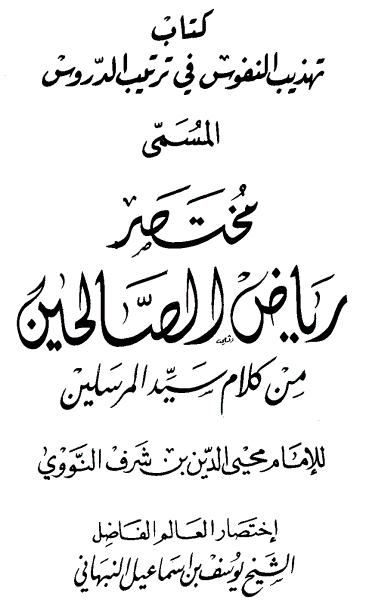

808
أحاديث رياض الصالحين بدون تكرار ليوسف بن إسماعيل النبهاني
Garden of Prophetic Sayings for the Righteous People
The Roadmap to Paradise by Imam Nawawi
Abridged by Imam Youssef bin Ismail Al Nabhani
Recommended Curriculum

في الإيمان بالله تعالى وما يناسبه
وهو يشتمل على ستة دروس :
|۱ | درس في الإسلام والإيمان والإحسان
-1 روى الشيخان عن ابن عُمر رضي الله عنهما، أن رسول الله صلى الله عليه وسلم قال: ابني الإسلام على خمس: شهادة أن لا إله إلا الله وأن محمداً عبده ورسوله، وإقام الصلاة، وإيتاء الزكاةِ، وحج البيت، وصوم رمضان».
۲ ـ وروى مسلم عن عُمَرَ رضي الله عنه قال: «بينما نحن جُلُوسٌ عند رسول الله صلى الله عليه وسلم ذات يوم، إذ طَلَعَ عَلينا رجلٌ شَديدُ بَياض النِّيابِ شَدِيدُ سَوادِ الشَّعر، لا يُرى عليه أثرُ السَّفَر، ولا يعرفُهُ مِنَّا أَحَدٌ، حَتَّى جلس إلى النبي ، فأسند ركبتيه إلى رُكْبَتيه، ووَضَع كَفَّيه على فَخِذَيْهِ، وقال: يا محمد، أخبرني عن الإسلام، فَقالَ رَسولُ اللهِ صلى الله عليه وسلم : الإسلامُ أَن تَشْهَدَ أَنْ لا إله إلا الله وأن محمداً رسولُ الله ، وتقيمَ الصَّلاةَ ، وتُؤتي الزكاة، وتصوم رمضان، وتحج البيت إن استطعت إليه سبيلاً. قال: صدقت. فَعَجِبْنَا لَهُ يسأله ويُصدقه. قال: فأخبرني عن الإيمان قال أن تُؤْمِنَ بالله وملائكته وكتبه، ورسله، واليوم الآخر، وتؤمن بالقَدْرِ خيره وشره ، قال : صَدَقْتَ . [قال]: فأخبرني عن الإحسان. قال: أن تعبد الله كأَنَّكَ تَرَاهُ فإِن لَمْ تَكُن تَرَاهُ فَإِنَّه يَرَاكَ . قال : فأخبرني عن الساعَةِ . قال : ما المسؤول عنها بأعلم من السائل . قال : فأخبرني عن أماراتها . قال : أن تَلِدَ الأمَةُ رَبَّتها، وأنْ تَرَى الحُفاةَ العُراة العالة رعاء الشَّاءِ يتطاولون في البنيان . ثم أنطَلَقَ فَلَبِثْتُ مَلِيّاً، ثم قال: يا عُمَرُ، أَتَدْرِي مَنِ السائل؟ قلتُ : الله ورسوله أعلم. قال: فإنَّه جبريل أتاكُم يُعلِّمُكُم دينكم .
|۲ | درس في فضل الإخلاص وتحريم الرياء
قال الله تعالى: ﴿ وَمَا أُمِرُوا إِلَّا لِيَعْبُدُوا اللَّهَ مُخْلِصِينَ لَهُ الَّذِينَ حُنَفَاءَ وَيُقِيمُوا الصَّلوةَ وَيُؤْتُوا الزَّكَوةَ وَذَلِكَ دِينُ الْقَيِّمَةِ | سورة البينة
٣ - وروى الشيخان عن عمر رضي الله عنه قال: سمعت رسول الله صلى الله عليه وسلم يَقُولُ: «إنّما الأعمال بالنيات، وإنّما لِكُلِّ امرِى مَا نَوَى فَمَنْ كانت هجرته إلى اللهِ ورسولِهِ فهجرته إلى اللهِ ورسولِهِ، وَمَنْ كانت هجرَتُهُ
لدنيا يُصيبها أو أمْرَأَةٍ ينكحها فهجرته إلى ما هاجر إليه».
4. وروى مسلم عن أبي هريرة رضي الله عنه قال: قال رسول الله صلى الله عليه وسلم: إِنَّ الله تعالى لا يَنْظُرُ إلى أجسامِكُم ولا إلى صُورِكُم، ولكن ينظر إلى قُلوبِكُم».
5 ـ وروى الشيخان عن ابن عباس رضي الله عنهما، أن رسول الله صلى الله عليه وسلم قال فيما يروي عن ربِّه عَزَّ وجل : إن الله كتب الحسنات والسيئات، ثم بين ذلك : فَمَنْ همَّ بحَسنةٍ فَلَمْ يَعمَلها كتبها الله تبارك وتعالى عنده حسنةً كاملة. فإن هَمَّ بها فَعَمِلَها كتبها الله عشر حسنات إلى سبعمائة ضعف إلى أضعاف كثيرة، ومَنْ همَّ بسيئةٍ فَلَمْ يعمَلَها كتبها الله حسنة واحدة .
٦ - وروى الشيخان عن جندب بن عبدالله رضي الله عنه قال: قال: من سمع سمع الله به، ومَنْ رَاءَى راءَى الله به .
7. رسول الله صلى الله عليه وسلم: قال الله تعالى أنا أغْنَى الشَّرَكاءِ عن الشرك، مَن عَمِلَ عَمَلًا أشرك فيه مَعِي غَيْري تركتُهُ وشركه . وفي رواية: «فأنا منه بريء، هو الذي عمله».
وروى مسلم عن أبي هريرة أيضاً قال : سمعت رسول الله صلى الله عليه وسلم يقول: إن أوّل النَّاسِ يُقضَى يومَ القيامة عليه رجل أستشهد فأُتِيَ به ، فعرفه نعمته فعرفها، قال: فما عملت فيها؟ قال: قاتلت فيك حتى استشهدت. قال : كذبت، ولكنك قاتلت لأن يُقال: جريء، فقد قيل ثم أمر فسُحِبَ على وجهه حتى الْقِي في النار. ورجل تعلم العلم وعلمه وقرأ القرآن، فأتي به فعرفه نعمه فعرفها قال: فما عملت فيها؟ قال: تعلمتُ العلم وعلمته وقرأتُ فيك القُرآنَ، قال: كَذَبْتَ، ولكنك تعلمتَ لِيُقَالَ: عالم ! وقرأت القُرآنَ ليُقالَ : قارى ! فَقَدْ قِيلَ. ثم أُمِرَ بِهِ فَسُحِبَ على وجهِهِ حتى أُلقي في النار . وَرَجُلٌ وَسّع الله عليه، وأعطاه من أصناف المال، فاتِي : به فعرفه نعمه فَعَرَفَها. قال: فما عَمِلْتَ فيها؟ قال: ما تركتُ من سبيل تُحِبُّ أن يُنْفَقَ فيها إلا أَنفَقْتُ فيها لكَ. قال : كذبت، ولكِنَّكَ فَعَلْتَ ليقال : جَوَادٌا فقَدْ قِيلَ . ثم أُمِرَ به فسُحِبَ على وجهه حتى أُلْقِيَ في النار».
۹ وروى مسلم عن أبي ذر رضي الله عنه قال : قيل لرسول الله صلى الله عليه وسلم أرأيتَ الرَّجُلَ الذي يعملُ العَمَلَ من الخير ويَحْمَدُهُ النَّاسُ عليه؟ قال : متلك عاجِلُ بُشْرَى المُؤمِن .
|۳ | درس في الخوف من الله تعالى ومراقبته عز وجل
قال الله تعالى: ﴿يَتَأَيُّهَا النَّاسُ اتَّقُوا رَبَّكُمْ إِن زَلْزَلَةَ السَّاعَةِ شَيْ عَظِيمٌ لا يَوْمَ تَرَوْنَهَا تَذْهَلُ كُلُّ مُرْضِعَةٍ عَمَّا أَرْضَعَتْ وَتَضَعُ كُلُّ ذَاتِ حَمْلٍ حَمَلَهَا وَتَرَى النَّاسَ سُكَرَى وَمَا هُم بِسُكَنَرَى وَلَكِنَّ عَذَابَ اللَّهِ شَدِيدٌ |۱ | والآيات في ذلك كثيرة .
۱۰ ـ وروى الشيخان عن أنس رضي الله عنه قال: خطبنا رسولُ اللهِ صلى الله عليه وسلم خُطبة ما سمِعتُ مِثْلَها قَطُّ، فقال: «لو تعلمون ما أعْلَمُ لَضَحِكْتُم قليلاً ولبكيتُم كثيراً. فغَطَّى أصحاب رسول اللَّهِ صلى الله عليه وسلم وُجوهَهُم ولهم
خنين.
۱۱ - وروى الشيخان عن ابن مسعود رضي الله عنه قال: حدثنا رسول الله صلى الله عليه وسلم وهو الصادق المصدوق : إن أحدكم يُجْمَعُ خَلْقَهُ في بطن أمه أربعين يوماً نطفة |٢ | ، ثم يَكونُ عَلَقَةً مِثْلَ ذلكَ ، ثم يَكُونُ مُضعَةٌ مثل ذلك ، ثم يُرْسَلُ المَلَكُ فينفُخُ فيه الرُّوحَ، وَيُؤمَرُ بأربع كلمات : رِزقِهِ، وأجله، وعمله، وشقي أو سعيد. فوالذي لا إله غَيرُه إِنْ أَحَدَكُم لَيَعْمَلُ بِعمل أهل الجنَّة حتى ما يكون بينه وبينها إلا ذراع، فيسْبِقُ عليه الكِتابُ فيعمل بعمل أهل النار، فيدخُلُها، وإنَّ أحَدَكُم لَيَعمل يعمل أَهْلِ النَّارِ، حَتَّى ما يكون بينه وبينها إلا ذراع، فيسبق عليه الكتاب فيعمل بعمل أهل الجنَّة فيدْخُلُها».
|1 | سورة الحج : الأيتان ۲۱ .
خلقه : مادة خلقه علقة دم جامد لأنها إذ ذاك تعلق بالرحم مضغة : من اللحم قدر ما يمضغ . |۲ | هذه الكلمة |نطفة : قطعة
۱۲ ـ وروى الشيخان عن عدي بن حاتم رضي الله عنه قال: قال
رسول الله صلى الله عليه وسلم : ما مِنكُم مِنْ أَحَدٍ إِلا سَيُكَلِّمُهُ رَبُّهُ ليس بينه وبينه تَرْجُمان، فَيَنظُرُ أَيْمَنَ مِنهُ فلا يرى إلا ما قَدَّمَ، وينظُرُ أشامَ مِنْهُ فَلا يَرَى إلا ما قَدَّمَ، وينظرُ بين يديه فلا يرى إلا النار تلقاء وجهه، فَاتَّقُوا النَّارَ ولو بشق تمرة. بِشَقٍ تَمْرةٍ
۱۳ - وروى البخاري عن أنس رضي الله عنه قال : إِنَّكُمْ لَتَعْمَلُونَ أعمالاً هي أدق في أعيُنِكُم من الشَّعَرِ كُنَّا نَعُدُّها على عهد رسول الله صلى الله عليه وسلم من الموبقات (المهلكات).
١٤ ــ وروى الشيخان عن أبي هريرة رضي الله عنه، أنَّ النبي صلى الله عليه وسلم قال: إن الله تعالَى يُغارُ، وَغَيْرة الله تعالى أن يأتي المرء ما حرم الله عَلَيْهِ».
|٤ | درس في الرجاء
قال الله تعالى : |قُلْ يَعِبَادِيَ الَّذِينَ أَسْرَفُوا عَلَى أَنفُسِهِمْ لَا تَقْنَطُوا مِن رَحْمَةِ اللَّهِ إِنَّ اللَّهَ يَغْفِرُ الذُّنُوبَ جَمِيعًا إِنَّهُ هُوَ الْغَفُورُ الرَّحِيمُ | وقال تعالى: ﴿وَرَحْمَتِي وَسِعَتْ كُلَّ شَيْءٍ |
١٥ - وروى الشيخان عن عبادة بن الصامت رضي الله . عنه قال : قال رسول الله صلى الله عليه وسلم : مَنْ شَهِد أَنْ لا إله إلا الله وحده لا شريك له، وأن محمداً عبده ورسوله، وأن عيسى عبد الله ورسوله ، وكَلِمَتُهُ الْقاها إلى مريم، ورُوحٌ منه، وأنَّ الجَنَّة حق والنار حق، أدخله الله الجنَّةَ على ما كان من العمل».
١٦ - وروى مسلم عن عبادة بن الصامت أيضاً قال : قال رسولُ اللهِ ، مَنْ شَهِدَ أن لا إله إلا الله وأن محمداً رسول الله ، حَرَّمَ اللهُ عَلَيْهِ النَّارَه . ۱۷ ـ وروى مسلم عن أبي ذر رضي الله عنه قال: قال النبي صلى الله عليه وسلم : يقولُ الله عَزَّ وَجَلَّ: مَنْ جَاءَ بالحَسَنَةِ فله عَشْرُ أمثالها أو أزيد، ومن جاءَ بالسيئة فجزاء سيِّئَةٍ سَيِّئَةٌ مِثلُها أو أغفِرُ ومَنْ تَقَرَّبَ مِنِّي شِبراً تقربتُ منه ذراعاً، ومَنْ تَقرَّبَ مِني ذراعاً تقربت منه باعاً، وَمَنْ أَتَانِي يَمْشِي أَتيتُهُ هَرُولَةً، ومَنْ لقيني بِقُرَابِ الأرض خطيئةٌ لا يُشرِك بي شيئاً لقيتُهُ بمثلها مغفرة .
قال الإمام النووي : معنى الحديث من تقرب إلي بطاعتي تقربت إليه برحمتي، وإن زاد زدتُ ؛ فإن أتاني يمشي وأسرع في طاعتي أتيته هرولة،
|۱ | سورة الزمر: الآية ٥٣ .
|۲ | سورة الأعراف الآية ١٥٦
أي شالی
۱۸ ـ وروى الشيخان عن عمر رضي الله عنه قال: قَدِمَ رسول الله صلى الله عليه وسلم بسَبي ، فإذا امرأةٌ من السَّبي تسعى، إذ وجدَتْ صِبياً في السبي أخذته فالزقته ببطنها ، فأرضعته، فقال رسولُ اللَّهِ صلى الله عليه وسلم : «أَتَرَوْنَ هذه المرأة طارحة ولَدَها في النار؟ قلنا لا والله، فقال: اللهُ ارْحَمُ بعباده من
هذه بولدها». ۱۹ – وروى الشيخان عن أبي هريرة رضي الله عنه قال: قال رسول الله : الما خَلَقَ اللهُ الخَلْقَ كَتَبَ فِي كِتَابٍ فَهُوَ عِندَهُ فوق العَرْشِ : إِنْ رَحْمَتي تَغلِبُ غضبي وفي رواية: «غَلَبَتْ غَضَبي. وفي رِوايَةٍ : سَبَقَتْ غَضَبي».
۲۰ ـ وروى الشيخان عن أبي هريرة أيضاً قال : سمعت رسول الله صلى الله عليه وسلم يقول : إن لله تعالى مائة رحمةٍ أنزل منها رحمةً واحدةً بين الجن والإنس والبهائم والهوام، فيها يتعاطفون وبها يتراحمون، وبها تعطفُ الوَحْش على ولدها ! وأخر الله تعالى تسعاً وتسعين رحمةً يرحم بها عباده يوم القيامةِ».
٢١ ـ وروى الشيخان عن معاذ رضي الله عنه قال: كُنتُ رِدْفَ النبي على حِمارٍ فقالَ: يا مُعاد هل تدري ما حَقُ اللهِ على عِبادِه وما حَقُّ العِبادِ على اللهِ؟ قلتُ : الله ورسوله أعلم. قال: «فإنَّ حقٌّ الله على العباد أن يَعبُدُوهُ ولا يُشْرِكوا به شيئاً، وحق العِبادِ على الله الا يُعَذِّبَ مَنْ لا يُشرك به شيئاً فقلتُ يا رسول اللهِ، أَفَلا أُبشر النَّاسَ؟ قال: «لا تُبشِّرُهُم فَيَتَّكِلُوا .
والأحاديث في ذلك كثيرة .
|0 | درس في التوكل على الله
قال الله تعالى: ﴿ الَّذِينَ قَالَ لَهُمُ النَّاسُ إِنَّ النَّاسَ قَدْ جَمَعُوا لَكُمْ فَأَخْشَوْهُمْ فَزَادَهُمْ إِيمَنَا وَقَالُوا حَسْبُنَا اللَّهُ وَنِعْمَ الْوَكِيلُ فَانقَلَبُوا بِنِعْمَةٍ مِّنَ اللَّهِ وَفَضْلٍ لَّمْ يَمْسَسْهُمْ سُوءُ وَاتَّبَعُوا رِضْوَانَ اللَّهِ وَاللَّهُ ذُو فَضْلٍ عَظِيمٍ | . وقال تعالى : | وَتَوَكَّلْ عَلَى الْحَيِّ الَّذِي لَا يَمُوتُ | . وقال تعالى : | وَعَلَى اللَّهِ فَلْيَتَوَكَّلِ الْمُؤْمِنُونَ |۳ | .
وقال تعالى : فَإِذَا عَزَمْتَ فَتَوَكَّلْ عَلَى اللهِ |3 | .
وقال تعالى : | وَمَن يَتَوَكَّلْ عَلَى اللهِ فَهُوَحَ
وقال تعالى: ﴿ إِنَّمَا الْمُؤْمِنُونَ الَّذِينَ إِذَا ذُكِرَ اللَّهُ وَجِلَتْ قُلُوبُهُمْ وَإِذَا تُلِيَتْ
عَلَيْهِمْ اتُهُ زَادَتْهُمْ إِيمَنَا وَعَلَى رَبِّهِمْ يَتَوَكَّلُونَ | .
والآيات في ذلك كثيرة .
هذه
۲۲ - وروى الشيخان عن ابن عباس رضي الله عنهما قال: قال رسولُ اللهِ : عُرِضَتْ عَلى الأمم ، فرأيتُ النبي ومعها ومعه الرهيط، والنبي ومعه
الرجل والرجلان والنبي ليس معه أحد، إذ رفع لي سواد عظيم، فظننت أنهم أمتي فقيل لي : هذا مُوسى وقومُهُ ، ولكن انظر إلى الأفق، فنظرت فإذا سواد عظيم، فقيل لي : أنظر إلى الأفق الآخر، فإذا سواد عظيم، فقيل لي : أمتك ومعهم سبعون الفاً يدخُلُونَ الجنة بغير حساب ولا غذابٍ، ثم نهض فدخل منزله فخاض النَّاسُ في أولئك الذين يدخُلُونَ الجنَّة بلا حساب ولا عذاب، فقال بعضُهُم فَلَعَلَّهُم الذين صَحِبُوا رسول الله ، وقال بعضُهم : فَلَعَلَّهُم الذين ولدوا في الإسلام فلم يُشركوا بالله، وذكروا أشياء، فخرج عليهم رسول الله صلى الله عليه وسلم فقال : ما الذي تخوضون فيه ؟ فأخبروه ، فقال : هم الذين لا يُرْقُونَ، ولا يَسْتَرِقُونَ، ولا يتطيرُونَ، وعلى ربِّهم يتوكَّلون». فقام عُكاشة بن محضن فقال : أدعُ الله أن يجعلني منهم، فقال: «أنت منهم. ثم قام رجلٌ آخر فقال : أدع الله أن يجعلني منهم، فقال: «سبقك بها عُكاشة
۲۳ ـ وروى مسلم عن ابن عباس أيضاً أن رسول الله صلى الله عليه وسلم كان يقول : اللهم لك أسلمت وبك آمنت وعليك توكَّلْتُ، وإليك أنبتُ، وبكَ خاصَمْتُ، اللهم أعوذُ بعزّتِكَ لا إله إلا أنتَ أنْ تُضِلُّني، أنتَ الحيُّ
القيوم الذي لا يموتُ والجن والإنس يَمُوتُونَ».
٢٤ ـ وروى البخاري عن ابن عباس أيضاً أنه قال: كان آخر قول إبراهيم عليه الصلاةُ والسلامُ حِين ألْقِيَ في النَّارِ : حسبي الله ونعم الوكيل.
|1 | درس في علامات حب الله تعالى للعبد قال الله تعالى: ﴿ قُلْ إِن كُنتُمْ تُحِبُّونَ اللَّهَ فَاتَّبِعُونِي يُحْبِبْكُمُ اللَّهُ وَيَغْفِرْ لَكُمْ ذُنُوبَكُمْ وَاللهُ غَفُورٌ رَّحِيمُ |
٢٥ ـ وروى البخاري عن أبي هريرة رضي الله عنه قال: قال رسول الله : إن الله تعالى قال: من عادى لي ولياً فقد آذنته بالحرب، وما تقرب إلي عبدي بشيءٍ أَحَبَّ إِلَيَّ مِمَّا افترضْتُ عليه، وما يزال عبدي يتقرب إلي بالنوافل حتى أحبه، فإذا أحبته كنتُ سَمْعَهُ الذي يسمعُ بِهِ وَبَصره الذي يبصر به، ويده التي يبطش بها ورجله التي يمشي بها، ولئن سألني لأعطينه، ولئن استعاذني لأعيذنه.
معنى أذنته بالحرب | : أعلمته بأني محارب له .
٢٦ ــ وروى الشيخان عن عائشة رضي الله عنها أن رسول الله صلى الله عليه وسلم بعث رَجُلًا على سَرِيَّةٍ، فكان يقرأ لأصحابه في صلاتهم، فيحتم بـ «قل هو الله أحده، فلما رجعوا ذكروا ذلك الرسول الله صلى الله عليه وسلم فقال: «سَلُوه لأي شيء يصنع ذلك؟ فسألوه فقال : لأنها صِفَةُ الرَّحمن، فأنا أُحِبُّ أن أقرأ بها. فقال رسول الله صلى الله عليه وسلم : «أَخْبِرُوهُ أَنَّ اللَّهَ تَعَالَى يُحبُّه».
۲۷ ـ وروى الشيخان عن أبي هريرة رضي الله عنه عن النبي صلى الله عليه وسلم قال : إذا أَحَبَّ اللَّهُ تعالى العبد نادَى جِبْرِيلَ : إِنَّ الله تعالى يُحِبُّ فُلاناً فَأَحْبِبْهُ. فَيُحِبُّهُ جِبْرِيلُ، فيُنادِي في أهل السماءِ: إِنَّ اللهَ يُحِبُّ فُلاناً فأحبوهُ، فَيُحِبُّهُ أهلُ السَّماء، ثم يُوضَعُ له القَبُولُ فِي الْأَرْضِ. وفي رواية لمسلم : قالَ رسولُ اللهِ : إِنَّ الله تعالى إذا أحب عبداً دعا جبريل فقال : إني أُحِبُّ فلاناً فَأَحْبِبْهُ، فيُحبُّه جبريل، ثم يُنادي في السماء فيقولُ : إِنَّ اللَّهَ يحِبُّ فُلاناً ،فأحبوهُ، فَيُحِبُّهُ أهل السماء، ثم يُوضع له القَبُولُ في الأرض. وإذا أَبْغَضَ عبداً دعا جبريل فيقولُ : إنِّي أبغض فُلاناً فَأَبْغِضَهُ. فَيُبْغِضَهُ جبريل، ثمَّ يُنَادِي في أهل السماء : إن الله يُبغِضُ فُلاناً فأبغضوه، ثم تُوضع له البغضاء في الأرضِ».
۲۱ الباب الثالث في فضل طلب العلم والدلالة على الخير
وهو يشتمل على درسين :
|؟ | درس في فضل طلب العلم
قال الله تعالى: ﴿ قُلْ هَلْ يَسْتَوِي الَّذِينَ يَعْلَمُونَ وَالَّذِينَ لَا يَعْلَمُونَ | وقال تعالى : ﴿ يَرْفَعِ اللَّهُ الَّذِينَ ءَامَنُوا مِنكُمْ وَالَّذِينَ أُوتُوا الْعِلْمَ دَرَحَتْ | .
وقال تعالى : | إِنَّمَا يَخْشَى اللَّهَ مِنْ عِبَادِهِ الْعُلَموا | .
۲۸ ـ وروى الشيخان عن مُعاوية رضي الله عنه قال: قال رسول الله صلى الله عليه وسلم: «مَنْ يُرِدِ اللهُ بِهِ خَيْراً يُفقهه في الدِّينِه.
خيراً |
۲۹ - وروى الشيخان عن أبي موسى رضي الله عنه قال: قال النبي صلى الله عليه وسلم : مثل ما بعثني الله بهِ مِنَ الهُدَى وَالْعِلمِ كَمَثَلِ غَيثٍ أَصابَ أرضاً : فكانت منها طائِفةً طيّبةٌ قَبلت الماء فأنبَتَتِ الكَلا والعُشب الكثير، وكان منها أجادِبُ أمسكت الماء فنَفَعَ الله بها النَّاسُ، فَشَرِبوا مِنها وَسَقَوا وزَرَعوا، وأصابَ طَائِفَةٌ مِنها أخرى إنَّما هِى قيعان: لا تُميكُ ماءً ولا تُنبِتُ كلاً، فذلك مَثَلُ مَنْ فَقه في دِينِ اللهِ ونفعه ما بعثني اللَّهُ بِهِ فَعَلِمَ وعَلَّمَ، وَمَثَلُ مَنْ لم يرفع بذلك رأساً ولم يقبل هذى الله الذي أُرسلت به .
٣٠ - وروى الشيخان عن سهل بن سعد رضي الله عنه أن النبي صلى الله عليه وسلم قال لعلي رضي الله عنه : فَوَاللَّهِ، لأن : يَهْدِي اللهُ بكَ رَجُلاً واحداً خير لك مِنْ حُمْرِ النَّعَمِ.
۳۱ وروى البخاري عن عبد الله بن عمرو بن العاص رضي الله عنهما أن النبي صلى الله عليه وسلم قال: «الْغُوا عَنِّي وَلَوْ آيَةً ، وحَدِثُوا عن بَنِي إِسْرَائِيلَ ولا خَرَجَ، وَمَنْ كَذَبَ عليَّ مُتَعَمِّداً فَلْيَتَبوأ مقعده من النار».
۳۲ وروى مسلم عن أبي هريرة رضي الله عنه أن رسول الله صلى الله عليه وسلم قال: من سلك طريقاً يَلْتَمسُ فيه علماً سهل الله له طريقاً إلى الجَنَّةِ».
۳۳ ـ وروى مسلم عن أبي هريرة أيضاً أَنَّ رسولَ اللَّهِ صلى الله عليه وسلم قال: «مَنْ دعا إلى هدى كان لهُ مِن الأجر مثل أجور من تبعه، لا يَنقُصُ ذلك من أجورهم شيئاً .
٣٤ ـ وروى مسلم عن أبي هريرة أيضاً قال : قال رسول الله صلى الله عليه وسلم : وإذا مات ابن آدم أنقطع عمله إلا من ثلاث : صَدَقةٍ جارية، أو علم ينتفع به، أو ولد صالح يدعو له |۲ | .
٣٥ وروى الشيخان عن عبد الله بن عمرو بن العاص رضي الله عنهما قال : سمعت رسول الله صلى الله عليه وسلم يقول: «إنَّ اللهَ لا يقبضُ الْعِلْمَ انْتِزَاعاً ينتزعُهُ من الناس ، ولكن يقبضُ العِلمَ بِقَبْض العُلماء، حَتَّى إذا لم يُبْقِ عَالِمَا اتَّخَذَ النَّاسُ رُؤوساً جُهَّالاً، فَسُئِلُوا فَافْتَوْا بِغَيْرُ عِلْمٍ، فَضَلُّوا وَأَضَلُّوا».
درس في الدلالة على الخير والدعاء إلى الهدى والتعاون على البر والتقوى وفَضْل من سَنَّ سُنَّةً حسنة وذم من سنَّ سُنة سيئةً أو دعا إلى ضلالة قالَ الله تعالى : | أَدْعُ إِلَى سَبِيلِ رَبِّكَ بِالْحِكْمَةِ وَالْمَوْعِظَةِ الْحَسَنَةِ | .
٣٣ ـ الحديث رواه مسلم في كتاب العلم باب من سن سنة حسنة أو سيئة أو دعا إلى هدى أو ضلالة | . ٣٤ ــ الحديث رواه مسلم في كتاب الوصية باب ما يلحق الإنسان من الثواب بعد وفاته | . انقطع عمله : أي الإثابة على عمله صدقة جارية: كالوقف من مسقى أو
مسجد وغير ذلك.
٣٥ - الحديث رواه البخاري في كتاب العلم باب | كيف يقبض العلم | ، ومسلم من
كتاب العلم |باب رفع العلم وقبضه | . |1 | سورة النمل: الآية ١٢٥ .
وقال تعالى : | وَلتَكُن مِّنكُمْ أُمَّةٌ يَدْعُونَ إِلَى الْخَيْرِ | . وقال تعالى: ﴿ وَتَعَاوَنُوا عَلَى الْبِرِّ وَالتَّقْوَى وَلَا تَعَاوَنُوا عَلَى الْإِثْمِ
وَالْعُدْوانِ | .
وقال تعالى : | وَالْعَصْرِ الله إِنَّ الْإِنسَانَ لَفِي خُسْرٍ اللَّهِ إِلَّا الَّذِينَ آمَنُوا
وَعَمِلُوا الصَّلِحَاتِ وَتَوَاصَوْا بِالْحَقِّ وَتَوَاصَوْا بِالصَّبْرِ |۳ | .
قال النووي في رياض الصالحين قال الإمام الشافعي رحمه الله تعالى كلاماً معناه أنّ النّاس - أو أكثرهُم - في غفلة عن تدير هذه السورة . ٣٦ - وروى مسلم عن أبي مسعود البدري رضي الله عنه قال : قال رسولُ الله : مَنْ دَلَّ على خير فله مثلُ أَجْرٍ فاعله.
عن
۳۷ - وروى مسلم أبي هريرة رضي الله عنه أن رسول الله صلى الله عليه وسلم قال: «من دعا إلى هدى كان له مِنَ الأجْرِ مِثلُ أُجُورٍ مَنْ تَبِعَهُ، لا ينقُصُ ذلك أجورهم شيئاً، ومَنْ دَعا إلى ضلالةٍ كانَ عَليهِ مِنَ الإِثْمِ مِثْلُ أَيَّامٍ مَنْ من تبعه، لا ينقص ذلك من آثامهم شيئاً».
|۱ | سورة آل عمران الآية ١٠٤
|۲ | سورة المائدة : الآية ٢ .
|۳ | سورة العصر: الآية ١-٢ - ٣ .
٣٦ - الحديث رواه مسلم في كتاب الإمارة باب فضل إعانة الغازي في سبيل الله
يمركوب وغيره | .
۳۷ - الحديث رواه مسلم في كتاب العلم باب من سن سنة حسنة أو سيئة ومن دعا إلى هدى أو ضلالة | .
أَنَّ
۳۸ وروى الشيخان عن سهل بن سعد الساعدي رضي الله عنه صلى الله عليه وسلم أ رسول الله صلى الله عليه وسلم قال لِعَلي رضي الله عنه يَومَ خَيْير حين أعطاه الرايةَ : أَنْفُـذ على رسلك حتى تنزل بساحتهم ثم ادْعُهم إلى الإسلام وأخبرهم بما يجب عليهم من حَقٌّ اللَّهِ تَعالى فيه، فوالله لأنْ يَهْدِيَ اللَّهُ بِك رَجُلاً واحداً خيرٌ لك من حمر النعم.
وروى مسلم عن جرير بن عبد الله رضي الله عنه، عن
رسول الله صلى الله عليه وسلم أنه قال: مَنْ سَنّ في الإسلام سُنَّةٌ حسنةً فَلَهُ أَجْرُها وَأَجْرُ مَن عمل بها بعده من غير أن ينقص من أجورهم شيء، ومَنْ سَنْ في الإسلام سنة سيئة كان عليه وِزْرُها وَوِزْرُ من عَمِل بها من بعده مِن غَير أَنْ يَنْقُصُ من
أوزارهم شيء |وهو بعض حديث | .
٤٠ ـ وروى الشيخان عن ، ابن مسعود رضي الله عنه أَنَّ النَّبِيِّ صلى الله عليه وسلم قال : ليس من نفس تقتلُ ظُلماً إلا كان على ابن آدمَ الأَوَّلِ كِفْلُ مِن دَمِها، لأنه كان أَوَّلَ مَنْ سَنَّ القَتْله.
۳۸ ـ الحديث رواه البخاري في كتاب فضائل الصحابة |باب مناقب علي بن أبي طالب | ، وفي كتاب الجهاد باب | فضل من أسلم على يديه رجل | ، وفي غيرهما، ورواه مسلم في فضائل الصحابة باب فضائل علي رضي الله عنه | . أنفذ على رسلك : أمضي على مهل ولا تتعجل حمر النعم : حمر: جمع أحمر، والنعم المال من الإبل والغنم والبقر وأكثر ما يقع على الإبل، والإبل الحمراء كانت أنفس أموال العرب، لذا أصبحت هذه العبارة يضرب بها المثل في كل نفيس. ٣٩ ـ الحديث أخرجه مسلم في كتاب الزكاة باب الحث على الصدقة ولو بشق تمرة أو كلمة طيبة | .
٤٠ - رواه البخاري في كتاب الجنائز باب | يعذب الميت ببعض بكاء أهله | ، وفي كتاب الإعتصام باب إثم من دعا إلى ضلالة وفي غيرهما. ورواه مسلم في كتاب القسامة باب بيان إثم من سن القتل. كفل حظ ونصيب من القتل : أي قتل لأول مرة.
٤١ ـ وروى الشيخان عن أبي موسى الأشعري رضي الله عنه عن النبي صلى الله عليه وسلم أنه قال: «الخازن المسلم الأمين، الذي يُنفذ ما أمر به، فيُعطيه كاملاً مُوَفِّراً طيبة به نفسه، فيدفعه إلى الذي أمر له به، أحد المتصدقين.
٤١ ـ رواه البخاري في كتاب الزكاة |باب | أجر الخادم | ، ومسلم في كتاب الزكاة باب أجر الخازن الأمين والمرأة إذا تصدقت .. | . الخازن : هو الذي يخزن مال غيره بإذنه ويؤتمن عليه . موفراً تاماً على كثرته .
الباب الثالث
في التوبة
وهو يشتمل على درس واحد.
درس في التوبة
قال الله تعالى : | وَتُوبُوا إِلَى اللَّهِ جَمِيعًا أَيُّهَ الْمُؤْمِنُونَ لَعَلَّكُمْ
تُفْلِحُون |١ | .
وقال تعالى : | أَسْتَغْفِرُوا رَبَّكُمْ ثُمَّ تُوبُوا إِلَيْهِ | .
وقال تعالى : يتأَيُّهَا الَّذِينَ آمَنُوا تُوبُوا إِلَى اللَّهِ تَوْبَةً نَصُوعًا |۳ | .
٤٢ - وروى الشيخان عن أنس بن مالك رضي الله عنه قال : قال رسول الله : اللَّهُ أَفْرَحُ بِتَوْبَةِ عَبْدِهِ مِنْ أحَدِكُمْ سَقَطَ عَلَى بَعِيرِهِ وَقَدْ أَضَلَّهُ
في أرض فلاة».
|1 | سورة النور: الآية ٣١. |۳ | سورة التحريم: الآية .
|۲ | سورة هود: الآية ٣ .
٤٢ ـ الحديث رواه البخاري في الدعوات باب التوبة | ، ومسلم في التوبة |باب
الحض على التوبة | .
أفرح: أي أشد فرحاً سقط على بعيره أي عثر عليه وصادفه من غير قصد.
أضله : ضيعه . فلاة أرض واسعة لا نبات بها لا ماء .
٤٣ ـ وروى مسلم عن أبي موسى الأشعري رضي الله عنه، عن النبي صلى الله عليه وسلم قال : إِنَّ اللهَ تَعَالى يَبْسُطُ يَدَهُ بِاللَّيْلِ لِيَتُوبَ مُسىءُ النَّهَارِ، وَيَبْسُطُ يَدَهُ بِالنَّهارِ لِيَتُوبَ مُسِيءُ اللَّيْلِ ، حتَّى تَطْلُعَ الشَّمْسُ مِنْ مَغْرِبِها.
٤٤ - وروى مسلم عن أبي هريرة رضي الله عنه قال: قال رسول الله صلى الله عليه وسلم: مَنْ تابَ قَبْلَ أَنْ تَطْلُعَ الشَّمْسُ مِنْ مَغْرِبِها تَابَ اللهُ عَلَيْهِ . وروى الشيخان عن أبي سعيد الخدري رضي الله عنه أَنَّ رسول الله قال : كان فِيمَنْ كانَ قبلَكُمْ رجلٌ قَتَلَ تِسْعَةً وتسعينَ نَفْساً، فَسَأَلَ عن أعلم أهل الْأَرْضِ ، فَدُلُّ على رَاهِبٍ، فَأَناهُ، فَقَالَ: إِنَّهُ قَتَلَ تسعةً وتسعين نفساً فهل له من توبة؟ فقال: لا. فقتله، فَكَمْلَ بِهِ مِائةً. ثم سألَ عَنْ أعلم أهل الأرضِ فَدُلُّ على رجُل عالم فقال : إنه قتل مائة نفس فهل له من توبة؟ فقال: نعم، وَمَنْ يَحُولُ بَينَهُ وبين التوبة ؟! انْطَلِقُ إلى أرض كذا وكذا فإن بها أناساً يعبدون الله تعالى فاعبد اللهَ مَعَهُمْ، وَلا تَرْجِعُ إلى أَرْضِكَ
فإنها أرض سوء. فانطَلَقَ حتّى إذا نَصَفَ الطريقَ أَتَاهُ الْمَوْتُ ، فَاخْتَصَمَتْ فيه ملائكة الرحمة وملائكةُ العَذَابِ ، فقالت ملائكة الرحمة : جاءَ تائباً مقبلاً بقلبه إلى الله تعالى ! وقالت مَلائِكَةُ العَذاب : إنه لم يعمل خيرا قط . فأتاهُم مَلَكَ في صورة آدمي فجَعَلُوه بينهم - أي حكماً - فقال: قيسوا ما بين الأرضين فإلى أيتهما كان أدنى فهو لَهُ فَقَاسُوا، فوجدوه أدنى إلى الأرض التي أراد، فَقَضَه ملائكة الرحمة .
٤٣ - الحديث رواه مسلم في كتاب التوبة باب غيرة الله تعالى | . ٤٤ ـ الحديث رواه مسلم في الذكر والدعاء باب استحباب الإستغفار | . ٤٥ - الحديث رواه البخاري في كتاب الأنبياء باب ما ذكر عن بني إسرائيل | ، ومسلم في كتاب التوبة |باب قبول توبة القاتل | .
كانت المعصية
وبین
تنبيه : قال الإمام النووي : قال العلماء: التوبة واجبة من كل ذنب، فإن الله تعالى لا تتعلق بحق أدمي فلها ثلاثة العبد بين شروط : أحدها أن يُقلع عن المعصية، والثاني أن يندم على فعلها، والثالث أن يعزم أن لا يعود إليها أبداً. فإن فُقد أحد الثلاثة لم تَصِحُ تَوْبَتُهُ، وإن كانت المعصية تتعلق بآدمي فشروطها أربعة هذه الثلاثة، وأن يبرأ من حق صاحبها، فإن كانت مالاً أو نحوه ردَّهُ إليه، وإن كان حَدُّ قَذْفٍ ونحوه مَكْنَهُ مِنهُ أو طلب عفوه، وإن كانت غِيبَةٌ استحله منها ويجب أن يتوب من جميع الذنوب، فإن تاب من بعضها صحت توبته عند أهل الحق من ذلك الذنب ويبقى عليه الباقي. وقد تظاهرت دلائل الكتاب والسنة وإجماع الأئمة على
وجوب التوبة. انتهى .
الباب الرابع في الصلاة
وهو يشتمل على خمسة عشر درساً:
درس في فضل الوضوء
قال الله تعالى: ﴿يَتَأَيُّهَا الَّذِينَ ءَامَنُوا إِذَا قُمْتُمْ إِلَى الصَّلَوَةِ فَاغْسِلُوا وُجُوهَكُمْ | إلى قوله تعالى: ﴿ مَا يُرِيدُ اللَّهُ لِيَجْعَلَ عَلَيْكُم من خرج وَلَكِن يُرِيدُ لِيُظْهِرَكُمْ وَلِيُتِمَّ نِعْمَتَهُ عَلَيْكُمْ لَعَلَّكُمْ
تَشْكُرُونَ | .
عنه قال: سمعت
٤٦ ـ وروى الشيخان عن أبي هريرة رضي ، الله رسول الله صلى الله عليه وسلم يقولُ: «إِنَّ أُمَّتِي يُدْعَونَ يَوْمَ الْقِيَامَةِ غُراً مُحَجَلِينَ مِنْ آثار
الوضوء، فَمَنِ اسْتَطَاعَ مِنكُم أَنْ يُطِيلَ غُرَّتَهُ فَلْيَفْعَل...
٤٧ - وروى مسلم عن أبي هريرة رضي الله عنه قال: سمعت خليلي يقول : تَبْلُغُ الْحِلْيَةُ مِنَ المُؤمن حيثُ يبلغ الوضوء».
|1 | سورة المائدة: الآية ٦.
٤٦ ـ الحديث رواه البخاري في كتاب الوضوء باب فضل الوضوء والغـر المحجلون من آثار الوضوء، ورواه مسلم في كتاب الطهارة باب استحباب إطالة الغرة
والتحجيل | .
٤٧ ـ الحديث رواه مسلم في كتاب الطهارة باب | تبلغ الحلية حيث يبلغ الوضوء | . =
٤٨ ـ وروى مسلم عن عُثمان رضي الله عنه قال : قال رسولُ اللهِ صلى الله عليه وسلم : «مَنْ تَوَضأ فأحسنَ الوُضُوءَ خرجت خطاياه من جسده حتى تخرج من تحت
أظفاره .
وروى مسلم عن عُثمانَ أيضاً قال: رأيتُ رسولَ اللهِ صلى الله عليه وسلم توضاً مِثْلَ وُضُوئي هذَا ثُمَّ قال: «مَنْ تَوَضَّأَ هَكَذَا غُفِرَ لَهُ مَا تَقدَّم من ذنبه، وكانت
صلاته ومشيه إلى المسجدِ نافلة».
٥٠ ـ وروى مسلم عن أبي هريرةَ رضيَ اللهُ عنهُ أَنَّ رسولَ اللَّهِ صلى الله عليه وسلم قال : إذا توضأ العبد المسلم - أو المؤمنُ - فَغَسَلَ وَجَهَهُ، خَرَجَ مِنْ وَجهِهِ كُلُّ خَطيئَةٍ نَظَرَ إليها بِعَيْنيهِ معَ الماء - أو مع آخِرِ قَطْرِ الماء - فإذا غَسَلَ يديهِ خَرَجَ مِنْ يديهِ كُلُّ خَطِيئَةٍ كانَ بَطَشَتْها يداه مع الماء - أو مع آخر قطر الماء - فإذا غَسَلَ رِجلَيْهِ خَرَجَتْ كُلُّ خَطِيئَةٍ مَشَتُها رِجَلاهُ مَعَ المَاءِ - أو مع آخر قطر الماء - حتَّى يَخْرُجَ نَقِياً من الذُّنُوبِ .
٥١ ـ وروى مسلم عن أبي هريرة أيضاً أن رسول الله صلى الله عليه وسلم قال: ألا
يدعون : ينادون إلى موقف الحساب غراً : جمع أغر، أي ذو غــرة والـغــرة بياض من الجبهة والمراد به هنا النور الذي يشع من جباههم فيعرفون به محجلين من التحجيل، وهو بياض يكون في قوائم الفرس والمراد به في الحديث: نور في أماكن الوضوء من أيديهم وأرجلهم. ٤ ـ الحديث رواه مسلم في كتاب الطهارة |باب خروج الخطايا مع ماء الوضوء | . ٤٩ ـ الحديث رواه مسلم في كتاب الطهارة باب فضل الوضوء والصلاة عقبه | . ٥٠ - الحديث رواه مسلم في كتاب الطهارة باب خروج الخطايا مع ماء الوضوء | . ٥١ ـ الحديث رواه مسلم في كتاب الطهارة |باب | إسباغ الوضوء على المكاره | . إسباغ الوضوء أي إتمامه على المكاره كشدة البرد وغيره. فذلكم
الرباط : أصل الرباط الحبس على الشيء، كأنه حبس على هذه الطاعة.
أدلكم على ما يمحو الله به الخطايا ويَرْفَعُ به الدرجاته؟ قالوا: بلى يا رسول الله . قال : إِسْبَاغُ الْوُضُوءِ على المَكَارِهِ، وَكَثرَةُ الخُطَا إلى المَساجِدِ،
وانْتِظَارُ الصَّلاةِ بعد الصَّلاةِ، فَذَلِكُم الرِّباطُ، فَذَلِكُم الرِّباطُ .
٥٢ ـ وروى مسلم عن أبي مالك الأشعري رضي الله عنه قال : قالَ رسول الله صلى الله عليه وسلم : الطُّهُورُ شَطْرُ الإِيمَانِ».
٥٣ ـ وروى مسلم عن عُمَرَ رضي الله عنه عن النبي صلى الله عليه وسلم قال: «ما منكم من أحدٍ يَتَوَضَّأُ فَيُبْلِغ - أو فَيُسْبِعُ الْوُضُوءَ - ثم قالَ: أَشْهَدُ أن لا إله إلا الله وحدَهُ لا شَرِيكَ لهُ وأشهد أن محمداً عبده ورسوله، إلا فُتِحَتْ لَهُ أَبْوَابُ الجَنَّةِ الثَّمَانِيَةُ يَدْخُلُ مِنْ أَيْها شَاءَ».
دَرْسُ في فضل الصَّلاةِ والمحافظة عليها والوعيد الشَّدِيد على تركها
قال الله تعالى : ﴿إِنَّ الصَّلوةَ تَنْهَى عَنِ الْفَحْشَاءِ وَالْمُنكَرِ | . وقال تعالى : | وَأَقِيمُوا الصَّلَوَةَ وَءَاتُوا الزَّكَوةَ |٢ | .
وقال تعالى: ﴿ وَمَا أُمِرُوا إِلَّا لِيَعْبُدُوا اللَّهَ مُخْلِصِينَ لَهُ الَّذِينَ حُنَفَاءَ وَيُقِيمُوا
الصَّلَوَةَ وَيُؤْتُوا الزَّكَوةُ وَذَلِكَ دِينُ الْقَيِّمَةِ | .
الحديث رواه مسلم في كتاب الطهارة باب فضل الوضوء | .
الطهور التطهير اشطر : نصف .
٥٣ - الحديث رواه مسلم في كتاب الطهارة باب ذكر المستحب عقب الوضوء | .
|1 | سورة العنكبوت: الآية ٤٥ .
|۳ | سورة البينة : الآية ..
|۲ | سورة البقرة: الآية ٤٣ .
. ورَوَى الشَّيْحَانِ عَنِ ابْنِ عُمَرَ رَضِيَ اللَّهُ عَنْهُما قال: قال رسول الله صلى الله عليه وسلم: أُمِرْتُ أنْ أُقاتِلَ الناس حتى يَشْهَدُوا أَنْ لَا إِلَهَ إِلَّا الله وأنَّ محمداً رَسُولُ الله وَيُقيمُوا الصَّلَاةَ ويُؤْتُوا الزَّكاة. فَإِذَا فَعَلُوا ذلك، عَصَمُوا مِنِّي دِماءَهُمْ وَأَمْوَالَهُمْ إِلَّا بِحَقَّ الإسلام ، وحِسابُهُمْ على الله ، وتَقَدَّمَ حَدِيثُ الشَّيْخين عن ابن عُمَرَ أيضاً : ابني الإسلامُ على خمس ». وعَدَّ منها :
الصلاة.
- وروى الشيخان عَن مُعادٍ رَضِيَ اللَّهُ عَنهُ قالَ: بَعَثَنِي رسولُ اللهِ صلى الله عليه وسلم إلى اليَمَنِ فَقالَ : إِنَّكَ تَأْتي قَوْماً مِنْ أَهْلِ الكِتابِ ، فَادْعُهُمْ إِلَى شَهادَةِ أنْ لا إله إلا الله وأني رسولُ الله ، فإنْ هُمْ أَطَاعُوا لِذَلِكَ، فَأَعْلِمْهُمْ أن الله تعالى افتَرَضَ عَلَيْهِمْ خمس صلوات في كُل يوم وليلة».. الحديث. ٥٦ ـ وروى الشَّيخانِ عَنْ أبي هُرَيرَةَ رضي الله عنه قال: سمعتُ رسول الله صلى الله عليه وسلم يَقُولُ : أَرَأَيْتُمْ لَوْ أَنَّ نهراً ببابٍ أَحَدِكُمْ يَغْتَسِلُ مِنْهُ كُلَّ يَوْمٍ خمْسَ مَرَّاتٍ هلْ يَبْقَى مِنْ دَرَنِهِ شيء؟ قالوا : لا يَبقَى مِنْ دَرَنِهِ شَيْءٌ . قال : فذَلِكَ مَثَلُ الصَّلَوَاتِ الخَمْسِ ، يَمحو اللهُ بِهِنَّ الخَطاياه .
٥٤ ـ الحديث رواه البخاري في كتاب الإيمان |باب | فإن تابوا وأقاموا الصلاة | ، وفي كتاب الصلاة والزكاة وغيرهما ورواه مسلم في كتاب الإيمان باب الأمر بقتال الناس حتى يقولوا لا إله إلا الله محمد رسول الله | . الناس هم عبدة الأوثان عصموا فنعوا وحفظوا بحق الإسلام من فعل
الواجبات وترك المنهيات.
٥٥ ـ هذا بعض حديث رواه البخاري في أبواب متفرقة من كتب الزكاة، والمظالم، والمغازي والتوحيد، ورواه مسلم في كتاب الإيمان |باب | الأمر بقتال الناس حتى يقولوا لا إله إلا الله محمد رسول الله | .
٥٦ ـ الحديث رواه البخاري في كتاب الصلاة باب الصلوات الخمس كفارة | ، ومسلم في كتاب المساجد باب المشي إلى الصلاة تمحى به الخطايا وترفع الدرجات | .
٥٧ ـ وروى الشيخان عن ابن مسعود رضي الله عنه ، أَنَّ رَجُلًا أَصابَ من امرأة قبلة، فأتى النبي فأخبره، فأنزل الله تعالى: ﴿ وَأَقِمِ الصَّلَوٰةَ طرفَ النَّهَارِ وَزُلَفَا مِنَ الَّيْلِ إِنَّ الْحَسَنَتِ يُذْهِبْنَ السَّيِّئَاتِ | . فقال الرجلُ : الي
هذَا؟ قال: «الجميع أُمَّتِي كلهم».
٥٨ ـ وروى مسلم عن أبي هريرةَ رضي الله عنه أن رسول الله صلى الله عليه وسلم قال: «الصلوات الخمس، والجمعة إلى الجمعةِ، كَفَّارَةٌ لِما بينهُنَّ ما لم تُعْشَ
الكبائره .
٥٩ ـ وروى مسلم عن عثمان رضي الله عنه قال: سمعت رسول الله صلى الله عليه وسلم يقول : ما من امرى مُسلم تحضره صلاة مكتوبة فيُحْسِنُ وُضُوءَها، وخُشوعها، وركُوعَها، إلا كانتْ كَفارة لما قبلها من الذنوب ما لم
تُؤْتَ كبيرة، وذلك الدهر كله .
وروى الشيخان عن ابن مسعود رضي الله عنه قال: سألتُ رسول الله : أي الأعمال أفضل ؟ قال : «الصلاة على وقتها». قلتُ: ثم أي ؟ قال: «بر الوالدين». قلت: ثم أي؟ قال: «الجهاد في سبيل الله .
٥٧ - الحديث رواه البخاري في كتاب التفسير |باب | تفسير سورة هود | ، ومسلم في كتاب التوبة |باب | قوله تعالى : إن الحسنات يذهبن السيئات | . ٥٨ ـ الحديث رواه مسلم في كتاب الطهارة باب الصلوات الخمس والجمعة إلى الجمعة ورمضان إلى رمضان مكفرات لما بينهن ما اجتنبت الكبائر | .
كفارة لما بينهن : تجاوز لما يحصل بينها من السيئات الصغيرة تغش : تؤت ... ٥٩ ـ الحديث رواه مسلم في كتاب الطهارة باب | فضل الوضوء والصلاة عقبه | .
٦٠ - الحديث أخرجه البخاري في كتاب المواقيت باب فضل الصلاة لوقتها | ، والتوحيد. ورواه مسلم في كتاب الإيمان باب بيان كون الإيمان بالله تعالى أفضل
الأعمال | .
وروى مسلم عن جابر رضي الله عنه قال: سمعتُ
رسول الله صلى الله عليه وسلم يقول : إن بين الرجل وبين الشرك والكفر تَركَ الصَّلاةِ».
٦٢ ـ وروى مسلم عن ثوبان مولى رسول الله صلى الله عليه وسلم ورضي عنه قال : سمعت رسول الله صلى الله عليه وسلم يقولُ : عليك بكثرة السجودِ، فَإِنَّكَ لَن تَسْجُدَ اللَّهِ
سجدة إلا رَفَعَكَ الله بها درجةً، وحط عنك بها خَطِيئَةً .
٦٣ ـ وروى مسلم عن ربيعة بن كعب الأسلمي خادم رسول الله صلى الله عليه وسلم ورضي عنه ـ وكان من أهل الصفة - قال : كنتُ أبيتُ مع رسول الله صلى الله عليه وسلم فَآتِيهِ بوضوئه وحاجته، فقال: «سلني». فقلت: أسألك مُرافقتك في الجنة، فقال: أو غير ذلك؟ قلت: هو ذاك. قال: فأعِنِّي على نفسك بكثرة السجوده.
درس في الآذان
٦٤ ـ روى الشيخان عن أبي هريرة رضي الله عنه أَنَّ رسولَ اللهِ صلى الله عليه وسلم قال : ولو يعلمُ النَّاسُ ما في النداء والصَّفِ الأول، ثُمَّ لَم يَجِدُوا إلا أن يستهموا عليه لاستهموا عليه، ولو يَعْلَمُونَ ما في التهجير لاستبقوا إليه، ولو يعلمون ما في العَتَمَةِ والصُّبْح لأتوهُما ولو حبوا الإستهام الاقتراع.
والتهجير التبكير إلى الصلاة | .
٦١ ـ الحديث رواه مسلم في كتاب الإيمان |باب | إطلاق أسم الكفر على من ترك
الصلاة | .
٦٢ - الحديث رواه مسلم في كتاب الصلاة باب فضل السجود والحث عليه | . ٦٣ - الحديث رواه مسلم في كتاب الصلاة باب فضل السجود والحث عليه | . 14 - الحديث رواه البخاري في كتاب الأذان باب الاستهام في الأذان | ، ومسلم في كتاب الصلاة باب تسوية الصفوف | .
٦٥ ـ وروى الشيخان عن أبي هريرة أيضاً قال: قال رسول الله صلى الله عليه وسلم : ه إذا نودي بالصَّلاةِ أدْبَرَ الشَّيطانُ وله ضُراطٌ حَتَّى لا يَسْمَعَ التَّاذِينَ، فَإِذَا قُضِيَ النداء أقبلَ، حَتَّى إِذَا ثُوبَ بالصلاة ،أدْبَرَ ، حتّى إِذَا قُضِيَ الشويبُ أقْبل حتى يَخْطِرَ بَيْنَ الْمَرْءِ وَنَفسهِ، يقول : اذْكُرْ كَذَا واذكر كذا ـ لما لَمْ يَذْكُرْ مِنْ قَبلُ - حتى يظلُّ الرَّجُلُ ما يدري كم صلى». |التثويب: الإقامة | .
٦٦ - وروى البخاري عن عبدالله بن عبد الرَّحْمَنِ بنِ أَبِي صَعْصَعَةَ أَنَّ أبا سعيد الخدري رضي الله عنه قالَ لَهُ: «إني أراك تُحِبُّ الغنم والبادية، فإذا كُنتَ في عنمِكَ - أو باديتك - فأَذْنَتَ للصَّلاةِ فارفع صوتكَ بِالنَّداءِ، فإنه لا يَسْمَعُ مَدَى صوت المؤذنِ جِن ولا إنس ولا شيءٌ إلا شهد له يوم القيامة». قال أبو سعيد : سمعته من رسول الله صلى الله عليه وسلم.
- وروى مسلم عن معاوية رضي الله عنه قال: سمعتُ رسول الله صلى الله عليه وسلم يقولُ : المؤذنون أطولُ الناس أعناقاً يومَ القِيامَةِ . - وروى الشيخان عن أبي سعيد رضي الله عنه أن رسول صلى الله عليه وسلم قال :
إذا سمعتم النداء، فَقُولوا كما يقول المؤذنه.
٦٩ ـ وروى مسلم عن عبد الله بن عمرو رضي الله عنهما
٦٥ - الحديث رواه البخاري في كتاب الأذان باب | فضل التأذين | ، ومسلم في كتاب الصلاة باب فضل الأذان وهرب الشيطان عند سماعه | . ٦٦ ـ الحديث رواه البخاري في كتاب الأذان باب رفع الصوت بالنداء | . ٦٧ ـ الحديث رواه مسلم في كتاب الصلاة باب فضل الأذان | . الحديث رواه البخاري في كتاب الأذان باب ما يقول إذا . ومسلم في كتاب الصلاة باب | القول مثل قول المؤذن | . ٦٩ - رواه مسلم في كتاب الصلاة باب القول مثل قول المؤذن | . الوسيلة: منزلة عالية في الجنة حلت له وجيت .
سمع المنادي | ،
أنه سمع رسول الله الله يقول : إذا سمعتُم النداء فقولوا مثل ما يقول، ثم صلوا علي، فإنه مَنْ صَلَّى عَلَى صلاةً صَلَّى اللهُ عليهِ بِها عشراً، ثم سلوا لي الوسيلة، فإنّها منزِلةٌ في الجَنَّة لا تَنْبَغِي إِلا لِعَبدِ مِنْ عِبادِ اللَّهِ، وأرجو أن أكون أنا هُوَ، فَمَن سأل لي الوسيلة حلت له الشَّفاعة».
۷۰ وروى البخاري عن جابر رضي الله عنه أَنَّ رسولَ اللهِ صلى الله عليه وسلم قَالَ: ومَنْ قَالَ حِينَ يَسْمَعُ النَّدَاءَ : اللهم ربِّ هَذِهِ الدُّعْوَةِ التَّامَّةِ، والصَّلاةِ القائمة، آت محمداً الوسيلة والفضيلة وابعثه مقاماً محموداً الذي وَعَدْتَهُ، حَلَّتْ له شَفاعَتِي يَوْمَ القِيامَةِ».
عن
۷۱ ـ وروى مسلم عن سعد بن أبي وقاص رضي الله عنه النبي صلى الله عليه وسلم أنه قال: من قال حين يَسْمَعُ المؤذن: اشهد أن لا إله إلا الله وحده لا شريك له، وأن مُحمّداً عبده ورسوله رَضِيتُ باللهِ رَبِّاً، وبمُحَمَّدٍ رَسُولاً ، وبالإسلام دِيناً. غُفِرَ لَهُ ذَنْبُهُ .
۷۲ - وروى مسلم عن أبي الشعثاء قال: كُنا قعوداً مع أبي هريرة رضي الله عنه في المسجدِ، فَأَذَّنَ المؤذن، فقامَ رَجُلٌ مِن المسجد يمشي، فأتبعه أبو هريرةَ بَصَرَهُ حتى خرج من المسجد، فقال أبو هريرة : أَمَّا هَذَا فَقَدْ عصى أبا القاسم .
۷۰ ـ الحديث رواه البخاري في كتاب الأذان باب الدعاء عند النداء | . ۷۱ - الحديث رواه مسلم في كتاب الصلاة باب القول مثل قول المؤذن | . ۷۲ ـ الحديث رواه مسلم في كتاب المساجد |باب النهي عن الخروج من الز إذا أذن المؤذن | .
درس في فضل صلاة الجماعة ولا سيما بالمسجد ۷۳ روى الشيخان عن ابنِ عُمَرَ رضي الله عنهما أن رسولَ اللهِ صلى الله عليه وسلم
قال: «صلاة الجماعةِ أفضل من صلاة الفذ بسبع وعشرين درجة». وروى البخاري عن أبي هريرة رضي الله عنه قال: قالَ رسول الله صلى الله عليه وسلم : صلاةُ الرَّجُلِ فِي جَمَاعَةٍ تُضَعْفُ عَلى صَلاتِهِ في بيته وفي سُوقِهِ خمساً وعشرين ضعفاً، وذلكَ أَنَّهُ تَوضا فأَحْسَنَ الوُضُوءَ، ثم خرج إلى المسجد لا يُخْرِجُهُ إلا الصَّلاةُ ، لم يَخْطُ خُطْوَةٌ إِلَّا رُفِعَتْ له دَرَجَةً، وحُطَّتْ عنه بها خطيئة. فإذا صلّى لم تَزَل الملائكةُ تُصلي عليه ما دام في مُصَلاه ما لم يُحدث، تقول: اللهم صل عليه، اللهم ارحمه. ولا يزال في صلاة ما
انتظر الصلاة».
وروى مسلم عن أبي هريرة رضي الله عنه أيضاً قال: أتى النبي رجل أعمى فقال : يا رسولَ اللهِ ليس لي قائد يقودني إلى المسجد. فسأل رسول الله أن يُرخص له فيُصلّي في بَيتِه، فَرَخُصَ لَهُ. فلما ولى
دَعَاهُ فقال له : هل تسمعُ النداء بالصلاة؟ قال: نعم. قال: «فأجِبْ».
- الحديث رواه البخاري في صلاة الجمعة باب فضل صلاة الجماعة | ،
ومسلم في كتاب المساجد باب فضل صلاة الجماعة | .
أفضل أكثر ثواباً. الفذ: الواحد المنفرد.
٧٤ - الحديث رواه البخاري في صلاة الجماعة باب فضل صلاة الفجر في جماعة | ، ومسلم في المساجد باب فضل صلاة الجماعة | .
سمع النداء | .
الحديث رواه مسلم في كتاب المساجد |باب | يجب إتيان المسجد على من
٧٦ - وروى الشيخان عن أبي هريرة أيضاً أنَّ رسولَ اللهِ صلى الله عليه وسلم قال: والذي نفسي بيده، لقد هَمَمْتُ أنْ أمُرَ بِحَطْبٍ فَيُحْتَطَبَ، ثم أمر بالصَّلاة فيؤذن لها، ثم أمرَ رَجُلاً فَيَؤُمُ النَّاسَ، ثم أخالف إلى رجال فأحرق عليهم
بيوتهم .
۷۷ - وروى مسلم عن ابن مسعود رضي | الله عنه قَالَ: «مَنْ سَرَّهُ أَنْ يَلْقَى الله تعالى غداً مسلماً فليحافظ على هؤلاءِ الصَّلواتِ حيثُ يُنَادَى بِهِنَّ، فإن الله شرع لنبيكُم سُنَنَ الهُدَى وَإِنَّهُنَّ مِنْ سُنَنِ الهُدَى ولو أَنَّكُمْ صَلَّيْتُمْ فِي بُيُوتِكُمْ كما يُصلي هَذَا المُتَخَلَّفُ في بَيْتِهِ لتركتم سُنَّةَ نَبِيِّكُم، ولو تركتُم سنة نبيكم لَضَلَّلتم. ولقد رأيتُنا وما يَتَخَلَّفُ عنها إلا مُنافِقُ مَعْلُومٌ النفاق، ولقد كانَ الرجلُ يُؤْتى به يُهادَى بين الرجلين حتى يُقام في الصف. وفي رواية له قال: إن رسول الله عَلَّمَنا سُنَنَ الهُدَى، وَإِنَّ مِنْ سُنَن الهدى الصلاة في المَسْجِدِ الَّذِي يُؤَذِّنُ فِيهِه.
درس في فضل الصف الأول وإتمام الصفوف وتسويتها والتَّرَاصَ فيها ۷۸ روى الشيخان عن أبي هريرة رضي الله عنه أن رسول الله صلى الله عليه وسلم
٧٦ ـ الحديث رواه البخاري في صلاة الجماعة، وفي الخصومات. ومسلم في كتاب المساجد باب فضل صلاة الجماعة | .
هممت عزمت وقصدت فيحتطب فيجمع أخالف اتخلف عن المشتغلين بالصلاة وأذهب إلى المتخلفين عنها.
۷۷ ـ الحديث رواه مسلم في كتاب المساجد | باب صلاة الجماعة من سنن الهدى | . ۷۸ ـ بعض حديث رواه البخاري في كتاب الأذان باب الاستهام في الأذان | ، ومسلم في كتاب الصلاة باب تسوية الصفوف | .
قال: ولو يعلمُ النَّاسُ ما في النداء والصَّف الأول ثم لم يجدوا إلا أن
يَسْتَهمُوا عليه لاستهمواه.
۷۹ وروى الشيخان عن أنس رضي الله عنه قال: قال رسولُ اللهِ صلى الله عليه وسلم : «سَرُّوا صَفُوفَكُمْ فإِنَّ تَسْوِيَةَ الصَّفٌ من تماما الصلاة . وروى مسلم عن جابر بن سمرة رضي الله عنهما قال: خرج علينا رسولُ اللهِ صلى الله عليه وسلم فقال: ألا تَصُفُونَ كما تصف الملائكة عند ربهاه؟ فقلنا : يا رسول الله، وكيف تصف الملائكة عند ربها؟ قال : «يُتِمُونَ الصفوف الأول وَيَتَرَاصُونَ في الصف».
۸۱ وروى مسلم عن أبي هريرة رضي الله عنه قال: قال رسول الله صلى الله عليه وسلم : خير صفوفِ الرِّجال أوَّلُها وشرها آخرها، وخير صفوف النِّساءِ آخِرُها وشرها أولها».
۸۲ وروى مسلم عن أبي سعيد الخدري رضي الله عنه أن رسول الله صلى الله عليه وسلم رَأى في أصحابِهِ تأخُراً ، فقال لهم : تقدَّموا فَانتَمُّوابي، وليأتم بِكُمْ مَن بعدَكُم، لا يَزالُ قَوْم يَتَأخُرُونَ حَتَّى يُؤَخِّرَهُم اللَّهُ .
وروى مسلم عن أبي مسعود رضي الله عنه قال: «كان
۷۹ - الحديث رواه البخاري في صلاة الجماعة باب تسوية الصفوف عند الإقامة | ، و |باب إقبال الإمام على الناس عند تسوية الصفوف | و |باب إقامة الصف من
تمام الصلاة ورواه مسلم في كتاب الصلاة باب | تسوية الصفوف وإقامتها | . ٨٠ ـ الحديث رواه مسلم في كتاب الصلاة |باب | الأمر بالسكون في الصلاة | . ۸۱ ـ الحديث رواه مسلم في كتاب الصلاة باب تسوية الصفوف وإقامتها | . ۸۲ - الحديث رواه مسلم في كتاب الصلاة باب تسوية الصفوف وإقامتها | . ۸۳ - الحديث رواه مسلم في كتاب الصلاة باب | تسوية الصفوف وإقامتها | . ليلني : ليدن مني . أولو الأحلام : أصحاب الحلم والتثبت . والنهي : العقل .
رسول الله يمسَحُ مَناكِبَنا في الصَّلاة ويقول: «أَسْتَـوا وَلَا تَخْتَلِفُوا فَتَخْتَلِفَ قُلُوبُكُمْ، لِيَلِنِي مِنكُم أُولُوا الْأَحْلامِ وَالنُّهَى، ثُمَّ الَّذِينَ يَلُونَهُمْ، ثم الذِينَ يَلُونَهُمْ .
٨٤ - وروى البخاري عن أنس رضي الله عنه قال: أقِيمَتْ الصَّلاةُ، فَأَقْبَلَ عَلَيْنَا رَسُولُ الله بوجهه فقال: أقِيمُوا صُفُوفَكُمْ وَتَرَاصُوا فَإِنِّي أَرَاكُم مِنْ وَرَاءِ ظَهري وفي رواية للبخاري وكان أَحَدُنَا يُنْزِقُ مَنكبه بمنكب صاحبه وقَدَمَهُ بِقَدَمِهِ.
٨ ـ وروى الشيخان عن النعمان بن بشيرٍ رضي الله عنهما قال : سمعت رسول الله صلى الله عليه وسلم يقول: «التَسَونَ صُفُوفَكُمْ أَوْ لَيُخَالِفَنَّ اللَّهُ بَينَ
وُجُوهِكُم».
٨٦ ـ وروى مسلم عنِ البَراء رضي الله عنه قال: كنا إذا صلينا خلف رسول الله ، أحبينا أنْ نَكُونَ عن يمينه ، يُقْبِلُ علينا بِوَجهِهِ، فسمعته يقول : رَبِّ قِنِي عَذَابَكَ يَوْمَ تَبْعَثُ - أو تجمع - عِبَادَكَ».
٨ ـ الحديث رواه البخاري بلفظه في صلاة الجماعة |باب الزاق المنكب بالمنكب والقدم بالقدم، ورواه مسلم بمعناه في صلاة الجماعة |باب تسوية الصفوف ثم
إقامتها | .
٨٥ ـ الحديث رواه البخاري في صلاة الجماعة باب تسوية الصفوف عند الإقامة | ، ومسلم في الصلاة باب تسوية الصفوف وإقامتها | . وفي رواية لمسلم : أن رسول الله صلى الله عليه وسلم كان يسوي صفوفنا حتى كأنما يسوي بها القداح حتى رأى أنا قد عقلنا عنه . ثم خرج يوماً، فقام حتى كاد يكبر، فرأى رجلاً بادياً صدره من الصف، فقال: وعباد الله ، لتون صفوفكم أو ليخالفن الله بين وجوهكم .
٨٦ ـ الحديث رواه مسلم في كتاب المسافرين باب استحباب يمين الإمام | .
درس في فضل صلاة الصبح والعصر والحث على حضور الجماعة في الصبح والعشاء وكراهة النوم قبلها والحديث بعدها
عنه
أَنَّ رسولَ اللهِ صلى الله عليه وسلم
۸۷ - روى الشيخان عن أبي موسى رضي الله . قال: «مَنْ صَلى الْبَرْدَيْنِ دَخَلَ الجَنَّةَ» . «البردان : الصبح والعصر.
۸۸ - وروى مسلم عن زهير بن عُمارة بن رُوَيْبَة رَضِيَ الله عنه : عنه قال : سمعت رسول الله لا يقولُ : لَنْ يَلِجَ النَّارَ أحد صلّى قَبْلَ طُلُوعِ الشَّمس
وقبل غروبها. يعني : الفجر والعصر.
۸۹ - وروى مسلم عن جُنْدَبِ بنِ سُفيان رضي الله عنه قال: قال رسول الله : مَنْ صَلَّى الصُّبَحَ فَهُوَ فِي ذِمَّةِ اللَّهِ، فَانْظُرْ يَا ابْنَ آدَم لَا يَطلُبَنكَ اللهُ مِنْ ذِمَّتِهِ بِشَيءٍ .
٩٠ ـ وروى الشيخان عن أبي هريرة رضي الله عنه قال: قال
۸۷ - الحديث رواه البخاري في كتاب مواقيت الصلاة باب فضل صلاة الفجر | ، ومسلم في كتاب المساجد باب فضل صلاتى الصبح والعصر والمحافظة عليهما | . - الحديث رواه مسلم في كتاب المساجد باب | فضل صلاتي الصبح والعصر
والمحافظة عليهما | .
جماعة | .
۸۹ - الحديث رواه مسلم في كتاب المساجد باب فضل صلاة العشاء والصبح في
ذمة الله : حفظه وأمانته D لا يطلبتك الله : لا يؤاخذنك الله غفلتك بسيب
صلاة الصبح .
عن
٩٠ ـ الحديث رواه البخاري في كتاب المواقيت والتوحيد، وبدء الخلق. ومسلم في كتاب المساجد باب فضل صلاتي الصبح والعصر والمحافظة عليهما | . يتعاقبون: يتابعون ويخلف بعضهم بعضاً في المحافظة عليكم. يعرج: يصعد تركناهم وهم يصلون أي الفجر وأتيناهم وهم يصلون: أي العصر.
رسولُ اللَّهِ : يَتَعاقَبُونَ فيكم ملائكة بالليل وملائكة بالنهار، ويجتمعونَ في صلاة الصبح وصَلاةِ العَصْر، ثم يَعْرُجُ الذين باتوا فيكم فَيَسْأَلُهُمْ اللهُ - وهُوَ أعلمُ بهم - كيفَ تَركْتُم عِبادي؟ فيقولون: تركناهم
وهُم يُصَلُّونَ، وأتيناهم وهم يُصلُّونَ».
۹۱ ـ وروى الشيخان عن جرير بن عبد الله البجلي رضي
الله عنه قال :
كنا عند النبي صلى الله عليه وسلم فَنَظَر إلى القَمَرِ ليلةَ البدرِ ، فقال : إِنَّكُمْ سَتَرَوْنَ رَبَّكُمْ كما تَرَوْن هَذَا القَمَرَ لا تُضَامُونَ فى رُؤْيَتِهِ، فإن أستَطَعْتُمْ أَنْ لا تُغْلَبُوا على صَلاةٍ قبل طُلُوعِ الشَّمْسِ وقَبْلَ غُرُوبِها فافعلواه لا تُضامونَ : لا تَشْكُونَ | . ۹۲ - وروى البخاري عن بريدة رضي الله عنه قال: قال
رسولُ اللهِ صلى الله عليه وسلم : «مَنْ تَرَكَ صلاة العصر فقد حبط عمله .
۹۳ - وروى الشيخان عن أبي هريرة رضي الله عنه قال: قال رسولُ اللهِ : ليس صلاةٌ أثقل على المُنافقينَ مِنْ صلاة الفجر والعشاء، ولو يعلمون ما فيهما لأتَوْهُمَا وَلَوْ حَبْوا».
٩٤ ــ وروى الشيخان عن أبي برزة رضي الله عنه أن رسول الله صلى الله عليه وسلم
1 - الحديث رواه البخاري في كتاب المواقيت باب فضل صلاة الفجر | ، والتفسير، والتوحيد. ورواه مسلم في كتاب المساجد |ياب فضل صلاتي الصبح والعصر والمحافظة عليهما | .
٩٢ ـ الحديث رواه البخاري في كتاب مواقيت الصلاة باب من ترك صلاة العصر | و |باب التبكير بالصلاة في يوم غيم | .
۹۳ - الحديث رواه البخاري في كتاب الأذان باب | فضل العشاء في الجماعة | ، وفي كتاب الشهادات ورواه مسلم في كتاب المساجد باب فضل صلاة العشاء والصبح في
جماعة | .
٩٤ ـ الحديث رواه البخاري في كتاب مواقيت الصلاة باب ما يكره من النوم قبل العشاء، ومسلم في كتاب المساجد باب استحباب التبكير بالصبح.
كان يكره النوم قبل العشاء والحَدِيثَ بعدها قال الإمام النووي : والمراد به الحديث الذي يكون مُباحاً في غير هذا الوقت، وفعله وتركه سَواءٌ فأما الحديث المحرم أو المكروه في غير هذا الوقت، فـهـو فــي هذا الوقت أشد تحريماً وكراهة. وأما الحديث في الخير، كمذاكرة العلم، وحكايات الصالحين ومكارم الأخلاق والحديث مع الضيف، ومع طالب حاجة، ونحو ذلك، فلا كراهية فيه بل هو مستحب، وكذا الحديث لعذر وعارض لا كراهة فيه وقد تظاهرت الأحاديث الصحيحة على كل ما
ذكرته .
درس في فضل يوم الجمعة وصلاتها والإغتسال والتطيب لها
٩٥ - روى مسلم عن أبي هريرة رضي الله عنهُ قالَ: قَالَ رسولُ اللهِ صلى الله عليه وسلم: «خيرُ يومٍ طَلَعَتْ عليه الشَّمسُ يوم الجمعة : فيهِ خُلِقَ آدم،
وفيه أدخل الجنة، وفيه أخرج منها».
٩٦ - وروى مسلم عن أبي هريرة أيضاً قالَ: قالَ رسولُ اللَّهِ صلى الله عليه وسلم : «مَنْ تَوَضَّأَ فَأَحْسَنَ الْوُضُوةَ ، ثم أتى الجُمُعَةَ فَاسْتَمَعَ وأَنْضَتَ غُفِرَ لَهُ ما بينه وبين الجمعة وزيادة ثلاثة أيام ، ومَنْ مَسَّ الحَصَى فَقَدْ لَغَاه .
٩٥ ـ الحديث رواه مسلم في كتاب الجمعة باب فضل يوم الجمعة | . ٩٦ ـ الحديث رواه مسلم في كتاب الجمعة باب فضل من أستمع وأنصت في
الخطية | .
مين
الحصا عبث بها لغا أتى بما هو مذموم من اللغو واللغو هو
الكلام الباطل والذي لا فائدة فيه .
۹۷ وروى مسلم عن ابن عمر وأبي هريرة رضي الله عنهما أنهما سمعا رسول الله يقولُ على أعواد مِنْبَرِهِ : لَيَنتَهِينْ أَقْوَامٍ عَنْ وَدْعِهِمُ الجُمُعَاتِ أَوْ لَيَحْتِمَنَّ الله على قلوبهم، ثم ليكونُنَّ مِنَ الغافِلينَ».
۹۸ وروى الشيخان عن ابن عُمر رضي الله عنهما، أن رسول الله
صلى الله عليه وسلّم قال : إذا جاءَ أحدكم الجُمُعَةَ فَلْيَغْتَسِلُ . ٩ - وروى الشيخان عن أبي سعيد الخدري رضي الله عنه أَنَّ رسول الله صلى الله عليه وسلم قال: غُسْلُ الجُمُعَةِ وَاجِبٌ على كلِّ مُختلِم». |المُراد بالمحتلم البالغ. والمراد بالوجوب وجوب أختيار كقول الرجل
لصاحبه : حَقك واجب علي قاله النووي .
سلمان رضي |
الله عنه
قال: قال
100 - وروى البخاري عن رسول الله صلى الله عليه وسلم : لا يَغْتَسِلُ رَجُلٌ يومَ الجُمُعةِ ، وَيَتَطَهَّرُ مَا اسْتَطَاعَ مِنْ طُهْرٍ، وَيَدْهِنُ مِنْ دُهْنِهِ أَوْ يَمَسُّ مِنْ طِيبٍ بَيْتِهِ، ثم يَخْرُجُ فَلا يُفَرِّقُ بَيْنَ اثْنَيْنِ، ثم يُصلي ما كتب له، ثم يُنصِتُ إذا تكلم الإمام ، إِلَّا غُفِرَ لَهُ مَا بَيْنَهُ وَبَيْنَ الجُمُعَةِ الأخرى».
۹۷ - الحديث رواه مسلم في أبواب الجمعة باب التغليظ في ترك الجمعة | .
أعواد: جمع عود وهي خشبات المنير، ودعهم: تركهم .
٩٨ ـ الحديث رواه البخاري في كتاب الجمعة باب فضل الغسل يوم الجمعة | ، وفي كتاب الأذان والشهادات ورواه مسلم في أول كتاب الجمعة. ٩٩ ـ الحديث رواه البخاري في كتاب الجمعة باب | هل على من لم يشهد الجمعة غسل من النساء والصبيان وكتاب الأذان والشهادات ورواه مسلم في كتاب الجمعة |باب وجوب غسل يوم الجمعة على كل بالغ من الرجال . . | .
١٠٠ ــ الحديث رواه البخاري في كتاب الجمعة |باب | الذهن للجمعة | و |باب لا
يفرق بين اثنين يوم الجمعة | . الدهن الطيب لا يفرق بين اثنين لا يباعد بينهما وهو يتخطى الرقاب.
۱۰۱ - وروى الشيخان عن أبي هريرة رضي الله عنه أن رسولَ اللهِ صلى الله عليه وسلم قالَ : مَنِ اغْتَسَلَ يَوْمَ الجُمُعَةِ غُسْلَ الجَنابَةِ ، ثم راحَ فَكَأَنَّما قَرَّبَ بَدَنَةً، وَمَنْ راخ في السَّاعَةِ الثانِيَةِ فَكَأَنَّما قَرَّبَ بَقَرَةً، ومَنْ رَاحَ فِي السَّاعَةِ الثالثةِ فَكَأَنَّما قَرَّبَ كَبْشَاً أَقْرَنَ ومَنْ رَاحَ في الساعة الرابعةِ فَكَأَنَّمَا قَرَّبَ دَجَاجَةً، وَمَنْ رَاحَ في الساعة الخامسة فكأنما قَرَّبَ بَيْضَةً، فإذا خَرَجَ الإمامُ حَضَرَتِ المَلائِكَةُ يستمِعُون الذكره .
۱۰۲ - وروى مسلم عن أبي هريرة أيضاً عن النبي صلى الله عليه وسلم قال: ولا تَخصُّوا ليلة الجُمُعةِ بقيام من بين الليالي، ولا تَخُصُوا يوم الجمعة بصيام من الأيام إلا أن يكون في صوم يَصُومُهُ أحدكم».
بین
۱۰۳ ـ وروى الشيخان عن أبي هريرة أيضاً قال: سمعتُ رسول الله صلى الله عليه وسلم يقولُ : ولا يَصُومَنَّ أحدُكم يَوْمَ الْجُمُعَةِ، إِلَّا يَوْماً قَبْلَهُ أو
بعده .
١٠١ ـ الحديث أخرجه البخاري في كتاب الجمعة |باب فضل الجمعة | ، ومسلم في كتاب الجمعة باب الطيب والسواك يوم الجمعة | .
قرب : تصدق بقصد التقرب من الله تعالى بدنة: واحدة الإبل ذكراً كان أم أنثى . كبشاً : ذكر الضأن أقرن ذا قرون . خرج الإمام : أي صعد المنبر ليخطب. حضرت الملائكة وهم المكلفون بكتابة أسماء المبكرين إلى الجمعة، والمعنى أنهم يتركون الكتابة عندها الذكر الموعظة . ١٠٢ ـ الحديث رواه مسلم في كتاب الصيام باب كراهة صيام يوم الجمعة
متفرداً | .
القيام : هو الصلاة في الليل إلا أن يكون في صوم يصوم أحدكم: أي إلا أن
يوافق يوم الجمعة صوم يوم يصومه لعادة أو نذر. ۱۰۳ ـ الحديث رواه البخاري في كتاب الصوم | باب صوم يوم الجمعة | ، ومسلم في كتاب الصيام باب | كراهة صيام يوم الجمعة منفرداً | . إلا يوما قبله أو بعده أي إلا أن
يصوم معه . يوماً قبله وهو الخميس، أو يوماً بعده
وهو
السبت.
درس في بعض مكروهات الصلاة وتحريم المرور بين يدي المصلي والدخول في نافلة بعد شروع الإمام ورفع الرأس قبله في الركوع والسجود ١٠٤ ـ روى الشيخان عن أبي هريرة رضي الله عنه أن رسول الله صلى الله عليه وسلم نهى عن الخَصرِ في الصَّلاةِ. |الخَصْرُ: وضع اليد على الخاصرة | . ١٠٥ ـ وروى مسلم عن عائشة رضي الله عنها قالت: سمعت رسول الله يقول : لا صلاة بِحَضْرَةِ طَعام، ولا وَهُوَ يُدافِعُهُ الأَخْبَتَانِ . ١٠٦ - وروى البخاري عن أنس رضي الله عنه قال: قال رسول الله صلى الله عليه وسلم : ما بال أقوام يرفعونَ أَبْصَارَهُمْ إِلَى السَّماء في صلاتهم؟ فاشتد قوله في ذلك حتى قالَ: «نَيَنتَهُنَّ عن ذلك، أو لَتُخْطَفَنْ أَبْصَارُهُمْ». ۱۰۷ - وروى البخاري عن عائشة الله
رضي
عنها
قالت: سالت
رسول الله صلى الله عليه وسلم عن الالتفاتِ في الصَّلاةِ فقالَ: «هُوَ اختلاس يَخْتَلِسُهُ الشيطانُ
من صَلاةِ العَبْدِه .
10 - الحديث رواه البخاري في أبواب العمل في الصلاة |باب الخصر في الصلاة | ، ورواه مسلم في كتاب المساجد ومواضع الصلاة باب كراهة الاختصار في الصلاة | . 105 - الحديث رواه مسلم في كتاب المساجد باب كراهة الصلاة بحضرة
الطعام | .
لا صلاة: أي لا يصلين أحد.
١٠٦ ـ الحديث رواه البخاري في كتاب الأذان باب رفع البصر إلى السماء
الصلاة | .
۱۰۷ - الحديث رواه البخاري في كتاب الأذان باب الالتفات في الصلاة | . الاختلاس هو الأخذ بسرعة على غفلة.
في
۱۰۸ ـ وروى الشيخان عن عبد الله بن الحارث الأنصاري رضي الله عنه قال: قال رسول الله : الو يعلم المار بين يدي المُصلَّي ماذا عليه، لكان أن يقف أرْبَعِينَ خيراً له من أن يَمُرَّ بين يديه». قال الراوي : لا أدري
قال أربعين يوماً، أو أربعين شهراً، أو أربعين سنة!
۱۰۹ - وروى مسلم عن أبي هريرة رضي الله عنه عن النبي صلى الله عليه وسلم أَنه قال: «إذا أُقيمت الصلاة فلا صلاة إلا المكتوبة.
۱۱۰ ـ وروى الشيخان عن أبي هريرة أيضاً أن النبي صلى الله عليه وسلم قال: وأما يَخْشَى أَحَدُكُمْ إِذَا رَفَعَ رَأْسَهُ قَبْلَ الإمام أن يَجْعَلَ اللَّهُ رَأْسَهُ رَأْسَ جَمَارٍ، أو
يَجْعَلَ صُورَتَهُ صُورَةً حِمَارٍ؟».
درس في فضل السنن الراتبة والوتر والضحى ۱۱۱ - روى الشيخان عن ابن عُمَرَ رضي الله عنهما قال: صليت مع رسول الله ركعتين قبل الظهر وركعتين بعدها، وركعتين بعد الجمعة، وركعتين بعد المغرب، وركعتين بعد العشاء.
۱۰۸ - الحديث رواه البخاري في كتاب الصلاة باب إثم المار بين يدي المصلي | ، ومسلم في كتاب الصلاة باب منع المار بين يدي المصلي | . 109 - الحديث رواه مسلم في كتاب صلاة المسافرين باب كراهة الشروع في نافلة بعد شروع المؤذن | .
۱۱۰ ـ الحديث رواه البخاري في أبواب صلاة الجماعة باب إثم من رفع رأسه قبل الإمام | ، ومسلم في كتاب الصلاة باب النهي عن سبق الإمام بركوع أو سجود ونحوها | . ۱۱۱ ـ الحديث رواه البخاري في التهجد باب ما جاء في التطوع مثنى مثنى | ،
ورواه مسلم في المسافرين باب السنن الراتبة قبل الفرائض وبعدهن | .
۱۱۲ ـ وروى الشيخان عن عائشة
رضي الله.
عنها
قالت : لم يكن
النبيُّ الله على شيءٍ مِنَ النَّوَافِل أشَدَّ تَعَاهُداً مِنْهُ عَلَى رَكْعَتَيِ الْفَجْرِ. ۱۱۳ – وروى مسلم عن عائشة أيضاً عن النبي صلى الله عليه وسلم أَنه قال: رَكْعَتا
الْفَجْرِ خَيْرٌ مِنَ الدنيا وما فيها».
١١٤ ـ وروى مسلم عن أبي هريرة رضي الله عنه أن رسول الله صلى الله عليه وسلم قرأ في ركعتي الفجر : ﴿ قُلْ يَتَأَيُّهَا الكَفِرُونَ | و | قُلْ هُوَ اللهُ أَحَدٌ | .
١١٥ ـ وروى البخاري عن . النبي صلى الله عليه وسلم إذا صلى ركعتي الفجرِ أَضْطَجَعَ على شقه الأيمن.
عائشة رضي ا ى الله . عنها قالت: كان
١١٦ ـ وروى الشيخان عن ابن عمر رضي الله عنهما قال : صليت مع
رسول الله ركعتين قبل الظهر وركعتين بعدها .
۱۱۷ - وروى البخاري عائشة عن . رضي الله عنها أن النبي صلى الله عليه وسلم كان لا
يَدَعُ أَرْبَعاً قبل الظهر.
١١٢ ـ الحديث رواه البخاري في كتاب الصلاة باب تعاهد ركعتي الفجر | ، ومسلم في كتاب الصلاة باب استحباب ركعتي الفجر | . اشد تعاهداً: أي أشد تفقداً واجتماعاً.
۱۱۳ ـ الحديث رواه مسلم في كتاب الصلاة باب استحباب ركعتي الفجر | . ١١٤ - الحديث رواه مسلم في صلاة المسافرين باب استحباب ركعتي الفجر | . ١١٥ ـ الحديث رواه البخاري في التهجد بالليل |باب الضجعة على الشق
الأيمن | .
اضطجع : رقد شقه جنبه .
١١٦ - أنظر الحديث رقم ۱۱۱ .
الحديث رواه البخاري في التهجد باب الركعتين قبل الظهر | .
۱۱۸ ـ وروى مسلم عن عائشة أيضاً قالت: كان النبي صلى الله عليه وسلم يُصلّي في بيتي قبل الظهر أربعاً، ثُمَّ يَخرُجُ فيُصلّي بالنَّاسِ ، ثُم يَدْخُلُ فيصلي ركعتين، وكان يصلي بالناس المغرب، ثُم يدخلُ بيتي فيصلي ركعتين؛ ويُصلي بالناس العشاء ويَدْخُلُ بَينِي فَيُصَلِّي رَكْعَتين.
119 - وأمّا سُنَّة العصر أربع ركعات قبلها، فقد روى حديثها أبو داود والترمذي وحسنه، وهي داخلة في حديث الشيخين من رواية عبد الله بن تغفل رضي الله عنه قال : قال رسول الله : «بين كلَّ أَذَانَيْنِ صَلاةٌ، بين كل أذانين صلاة، بين كل أذانينِ صَلاةٌ». قال في الثالثة: لِمَنْ شَاءَ». |قال
النووي : والمراد بالأذانين: الأذان والإقامة | .
درس في سُنَّة الوضوء، وتحية المسجد، وصلاة الضحى
۱۲۰ - روى الشيخان عن أبي هريرة أن رسول الله صلى الله عليه وسلم قال لبلال : هيا بلال، حدثني بأَرْجَى عَمَل عَمِلْتَهُ في الإسلام ، فَإِنِّي سَمِعْتُ دَفَ نَعْلَيْكَ بَيْنَ في الجنة ه. قال : ما عملتُ عَمَلاً أَرْجى عِنْدِي مِنْ أنِّي لم أتَطَهُرْ
۱۱۸ ـ الحديث رواه مسلم في صلاة المسافرين |باب جواز النافلة قائماً وقاعداً | . 119 - الحديث رواه البخاري في كتاب الأذان باب | بين كل أذانين صلاة لمن شاء | ، ومسلم في كتاب صلاة المسافرين باب بين كل أذانين صلاة | . الحديث رواه البخاري في التهجد باب فضل الوضوء بالليل والنهار،
ومسلم في فضائل الصحابة باب من فضائل بلال رضي الله عنه | . بأرجي عمل أي بالعمل الذي هو أكثر رجاء في حصول أجره بين يدي :
أمامي
طهوراً في ساعةٍ من ليل أو نهار، إلا صليتُ بذلك الطهور ما كُتب لي أن أصلي |الدف: صوت النعل وحركته على الأرض | .
۱۲۱ ـ وروى الشيخان عن أبي قتادة رضي الله عنه قال: قال رسول الله : إذا دخل أحدُكُم المسجد فلا يَجْلِسٌ حَتَّى يُصلي ركعتين».
١٢٢ ـ وروى الشيخان عن ابن عمر رضي الله عنهما عن النبي صلى الله عليه وسلم
قال : اجعلوا آخِرَ صَلَائِكُمْ بالليل وترأه .
عنه قال: أوصاني
١٢٣ ـ وروى الشيخان عن أبي هريرة رضي الله خليلي بصيام ثلاثة أيام من كل شهر، وركعتي الضُّحى، وأنْ أُوتِرَ قَبلَ أَنْ
أرقد .
قال النووي : والإيتار قبل النوم إنما يستحب لمن لا يثق بالإستيقاظ
آخر الليل فإن وثق فآخر الليل أفضل.
١٢٤ ـ وروى مسلم عن عائشة رضي الله رسولُ اللهِ صلى الله عليه وسلم يُصلّي الضُّحى أربعاً، ويزيدُ ما شاء الله.
عنها قالت: كان
۱۲۱ - الحديث رواه البخاري في كتاب الصلاة |باب | إذا دخل المسجد فليركع ركعتين | ، ومسلم في صلاة المسافرين باب استحباب تحية المسجد | . ۱۲۲ - الحديث رواه البخاري في كتاب الوتر |باب | ليجعل آخر صلاته وتراً | ،
ومسلم في كتاب صلاة المسافرين باب صلاة الليل مثنى مثنى والوتر ركعة | . ۱۲۳ - الحديث رواه البخاري في التهجد باب صلاة الضحى | ، وفي الصوم،
ورواه مسلم في المسافرين باب استحباب الضحى | . ١٢٤ - الحديث رواه مسلم في صلاة المسافرين باب استحباب صلاة الضحى | .
درس في أذكار وأدعية نبويةٍ تُقالُ في الصَّلاةِ
١٢٥ - روى الشيخان عن أبي بكر الصديق رضي الله عنه أنه قال لرسول الله صلى الله عليه وسلم : علمني دُعَاء أدعو به في صلاتي. قال: قل اللهم إنِّي ظلَمْتُ نَفْسِي ظُلماً كثيراً، ولا يَغْفِرُ الذُّنُوبَ إِلَّا أَنْتَ، فَاغْفِرْ لِي مَغْفِرَةٌ مِنْ عِنْدِكَ، وَارْحَمْني، إنَّكَ أَنتَ الْغَفُورُ الرَّحيم».
قال الإمام النووي : رُوي ظلماً كثيراً»، ورُوي «كبيراً» - بالثاء والباء - فينبغي أن يُجمع بينهما فيقال: كثيراً كبيراً».
١٢٦ ـ وروى الشيخان عن عائشة رضي الله عنها قالت: كان النبي يُكْثِرُ أَنْ يَقُولَ فِي رُكُوعِهِ وَسُجُودِهِ: «سُبْحَانَكَ اللَّهُمَّ رَبَّنَا وَبِحَمْدِكَ، اللَّهُمَّ اغْفِرْ لِي.
۱۲۷ ـ وروى مسلم عن عائشة أيضاً أن رسول الله صلى الله عليه وسلم كان يَقولُ في ركوعه وسجوده: سبوح قدوس، رَبُّ المَلَائِكَةِ وَالرُّوحِ ..
١٢٥ ـ الحديث رواه البخاري في كتاب الدعوات | باب الدعاء في الصلاة | ، وفي الأذان باب الدعاء قبل السلام | ، ورواه مسلم في كتاب الذكر والدعاء |باب استحباب
خفص الصوت بالذكر | .
الحديث رواه البخاري في صفة الصلاة باب التسبيح والدعاء في السجود | و |باب الدعاء في الركوع | ، ورواه مسلم في الصلاة باب ما يقال في الركوع
والسجود | . ۱۲۷ - الحديث رواه مسلم في كتاب الصلاة باب ما يقال في الركوع والسجود | . سبوح قدوس: إسمان من أسماء الله تعالى يدلان على المبالغة في النزاهة عن
كل ما لا يليق بجلاله تعالى وكبريائه وعظمته الروح جبريل عليه السلام.
عنه
۱۲۸ - وروى مسلم عن أبي هريرة رضي الله . أن رسول الله صلى الله عليه وسلم
قالَ: إِذا تَشَهدَ أَحَدُكُمْ فَلْيَسْتعذ بالله من أربع، يَقُولُ: اللَّهُمَّ إِنِّي أَعُوذُ بِكَ مِنْ عَذَابٍ جهنم، ومِنْ عَذَاب القبر، ومِنْ فِتْنَةِ المَحْيا وَالمَمَاتِ، ومِنْ شَرَ فتنة المسيح الدجال ..
۱۲۹ ـ وروى مسلم عن ابن عباس رضي الله عنهما أن رسول الله صلى الله عليه وسلم قال : فأَما الرَّكُوعُ فَعَظَمُوا فِيهِ الرَّبِّ، وأما السجودُ فَاجْتَهِدُوا في الدُّعاءِ، فَقَمِنْ أَنْ يُسْتَجابَ لَكُمْ». |قمن أي جدير | .
. وروى مسلم عن أبي هريرة رضي الله عنه أن رسول الله صلى الله عليه وسلم
قال : «أقْرَبُ ما يَكُونُ الْعَبْدُ مِنْ رَبِهِ وَهُوَ سَاجِدٌ، فَأَكْثِرُوا الدُّعَاءَ». ۱۳۱ - وروى مُسلم عن أبي هريرة أيضاً أن رسول الله صلى الله عليه وسلم كان يقولُ في سجوده: «اللَّهُمَّ اغْفِرْ لي ذنبي كلَّه، دقةٌ وجِلَّهُ، وَأَوَّلَهُ وَآخِرَهُ، وَعَلَانِيَّتَهُ
وسره .
وروى مسلم عن عائشة رضي | ن الله عنها
قالت: افتقدت
۱۲۸ ـ الحديث رواه مسلم في كتاب الذكر والدعاء باب التعوذ من شر الفتن | . فتنة المحيا : أي من جميع البلايا والمحن الواقعة في الحياة مما يضر ببدن أو دين الممات أي الابتلاء الذي يتعرض له الإنسان عند الاحتضار قبيل الممات. المسيح الممسوح إحدى عينيه الدجّال الكذاب والمسيح الدجال رجل
كذاب يظهر قرب يوم القيامة يدعى الألوهية ويفتن به كثير من الناس.
۱۲۹ ـ الحديث رواه مسلم في الصلاة باب ما يقال في الركوع والسجود | . ١٣٠ ــ الحديث رواه مسلم في الصلاة ياب | ما يقال في الركوع والسجود | . ١٣١ ـ الحديث رواه مسلم في الصلاة باب ما يذكر في الركوع والسجود | . يقه صغيره جله كبيره .
۱۳۲ - الحديث رواه مسلم في الصلاة باب ما يقال في الركوع والسجود | . تحسست: طلبته وبحثت عنه في المسجد في السجود. سخطك : غضبك وانتقامك. بمعافاتك بعفوك لا أحصي : لا أطيق أن أحصر أو أعد.
النبي صلى الله عليه وسلم ذَاتَ ليلةٍ، فَتَحَسَّست، فإذا هُوَ رَاكِع - أَوْ سَاجِدٌ - يَقُول : «سُبْحَانَكَ وبحمدِكَ لا إله إلا أنت وفي رواية فوقعت يدي على بطن قدميه، وهو
في المسجد، وهما منصوبتان، وهو يقول: «اللَّهُم إِنِّي أَعُوذُ بِرِضَاكَ مِنْ سَخَطِكَ، وبمعافاتِكَ مِنْ عُقُوبَتكَ، وأعُوذُ بكَ مِنْكَ، لَا أَحْصِي تَنَاءٍ عَلَيْكَ، أنت كما أثنيت على نَفْسِكَ».
درس في أذكار وأدعية نبويةٍ تُقَالُ عَقِبَ الصَّلاةِ
روى البخاري عن سعد بن أبي وقاص رضي الله عنه أن رسول الله كان يتعوذ دُبُرَ الصَّلَوَاتِ بهؤلاء الكلمات: «اللَّهُمَّ إِنِّي أعوذُ بِكَ مِنَ الجُبْنِ وَالْبُخْل ، وأعوذُ بِكَ مِنْ أنْ أرَدَّ إلى أَرْذَلِ الْعُمُرِ، وأعوذ بِكَ مِنْ فتنة الدُّنيا، وأعُوذُ بكَ مِنْ فِتْنَةِ الْقَبره .
١٣٤ ــ وروى مسلم عن أبي هريرة رضي الله عنه عن رسول الله صلى الله عليه وسلم قالَ: «مَنْ سُبحَ الله في دُبُرِ كُلِّ صَلَاةٍ ثلاثاً وثَلاثِينَ، وَحَمِدَ اللَّهَ ثَلاثاً وَثَلاثِينَ، وكَبَّرَ اللَّهَ ثَلاثاً وثَلاثِينَ، وقال تمام المائة : لا إله إلا الله وَحْدَهُ لَا شَرِيكَ لَهُ، لَهُ الْمُلْكُ، وَلَهُ الحَمْدُ، وَهُو على كل شَيءٍ قَدِيرٌ، غُفِرَتْ خَطَايَاهُ وَإِنْ كَانَتْ مِثْلَ زَبَدِ البَحْرِه .
1 - الحديث رواه البخاري في كتاب الدعوات |باب | التعوذ من البخل، وفي
كتاب الجهاد باب ما يتعوذ من الجن | . أرذل العمر: أردوه ،وأخسه وهو الهرم فتنة الدنيا الانشغال بها عن الآخرة.
فتنة القبر سؤال الملكين. ١٣٤ - الحديث رواه مسلم في كتاب الذكر والدعاء باب فضل التسبيح والتهليل | . زبد البحر: كناية عن الكثرة والزبد رغوة بيضاء تعلو الموج.
١٣٥ - وروى مسلم عن عبد الله بن الزبير رضي الله عنهما أنه كان يقولُ دُبُرَ كلِّ صَلَاةٍ حِينَ يُسَلَّمُ : لا إله إلا الله وحدَهُ لا شَريكَ لَهُ، لَهُ الْمُلْكُ وَلَه الحمدُ وهُوَ على كل شَيءٍ قَدِير . لا حول ولا قوة إلا بالله ، لا إله إلا اللهُ، وَلا نَعْبُدُ إِلا إِيَّاهُ لَهُ النِّعْمَةُ وَلَهُ الفَضْلُ ، وَلَهُ الثَّناء الحسَنُ ، لا إله إلا الله مُخْلِصِينَ لَهُ الدِّينَ وَلَوْ كَرِهَ الكافِرُونَ. قال ابن الزبير : وكان رسولُ اللَّهِ صلى الله عليه وسلم يُهَلِّلُ بِهِنْ دُبُرَ
كل صلاة.
١٣٦ - وروى مسلم عن ثوبان رضي الله عنه قال : كان رسولُ اللهِ صلى الله عليه وسلم إذا انصرف مِنْ صَلاتِهِ اسْتَغْفَرُ ثَلاثاً، وقالَ: «اللَّهُم أَنْتَ السَّلامُ وَمِنكَ السلامُ، تَبارَكْتَ ياذَا الجَلالِ والإِكْرَامِ». قيل للأوزاعي، وهو أحد رواة الحديث : كيف الإستغفارُ؟ قالَ : يقولُ: اسْتَغْفِرُ اللهَ اسْتَغْفِرُ الله .
، روى الشيخان عن
شعبة رضي الله عنه أن المغيرة بن رسول الله صلى الله عليه وسلم كان إذا فَرَغَ من الصَّلاةِ وسلَّمَ قالَ: «لا إله إلا اللهُ وَحْدَهُ لَا
١٣٥ - الحديث رواه مسلم في كتاب المساجد باب استحباب الذكر بعد
الصلاة .. | .
دبر كل صلاة خلفها وبعد الفراغ منها . لا حول ولا قوة . ١٣٦ - الحديث رواه مسلم في المساجد ومواضع الصلاة باب استحباب الذكر بعد الصلاة وبيان صفته | . لله السلام: إسم من أسماء الله تعالى ومنك :السلام أي يرجى منك السلامة تباركت كثرت خيراتك يا ذا الجلال يا صاحب العظمة والغلبة والقهر. الحديث رواه البخاري في الأذان باب | الذكر بعد الصلاة | ، وفي كتاب
القدر والإعتصام. ورواه مسلم في كتاب المساجد باب استحباب الذكر بعد الصلاة | . الجد : الحظ والغنى. أي لا ينتفع الغني من غناه، ولا يجديه منه إلا ما قدمه من عمل صالح .
شريكَ لَهُ، لَهُ المُلْكُ وَلَهُ الحمد، وهو على كُل شَيءٍ قَدِيرٌ. اللَّهُمَّ لَا مَانِعَ لِما أعْطَيْتَ وَلَا مُعْطِي لِمَا مَنَعْتَ وَلَا يَنْفَعُ ذَا الْجَدَّ مِنْكَ الجَدُّه .
الله عنها زوج
۱۳۸ - وروى مسلم عن جُويرية بنت الحارث رضي | أن النبي خرج من عندها بُكْرَةً حين صلى الصبح وهي في مسجدها، ثم رجع بعد أن أضحى وهي جالسةً، فقال: ما زلت على الحال. التي فارقتك عليها ؟ قالت: نعم. فقال النبي صلى الله عليه وسلم : ولقد قلت بعدك أربع كلِمَاتٍ ثَلاثَ مَرَّاتٍ، لَوْ وُزنت بما قلتِ مُنذ اليوم لوزنتهن : سبحان الله وَبِحَمْدِهِ عَدَدَ خَلْقِهِ، ورضى نَفْسِهِ، وَزِنَةَ عَرْشِهِ وَمِدَادَ كَلِماتِهِ».
درس في فَضْل المشي إلى المساجد وانتظار الصلاة ۱۳۹ – روى الشيخان عن أبي هريرة رضي الله عنه أن النبي صلى الله عليه وسلم قال: مَنْ غَدًا إلى المَسْجِدِ أَوْ رَاحَ أَعَدَّ اللهُ لَهُ في الجَنَّةِ نُزُلاً كُلما غدًا أو رَاحَه.
النوم | .
الحديث رواه مسلم في كتاب الذكر والدعاء باب التسبيح أول النهار وعند
في مسجدها موضع صلاتها في بيتها أضحى دخل في وقت الضحى. وزنت: قوبلت لوزنتهن لساوتهن في الأجر والفضل . تا زنة عرشه : أي مقدار ما يزن عرشه مداد كلماته كثرة كلماته .
الحديث رواه البخاري في صلاة الجماعة باب فضل من غدا إلى المسجد | ، ومسلم في المساجد باب المشي إلى الصلاة تمحى به الخطايا وترفع به
الدرجات | .
غدا من الغدو، وهو السير أول النهار، راح من الرواح، وهو السير آخر النهار. والمراد هنا الذهاب والإياب مطلقاً النزل القوت والرزق وما يهيا للضيف.
OV
١٤٠ ــ وروى مسلم عن أبي هريرة أيضاً أن النبي صلى الله عليه وسلم قَالَ: «مَن تَطَهَّرَ في بَيْتِهِ، ثم مضى إلى بَيْتٍ مِنْ بُيوتِ اللَّهِ لِيقْضِي فَرِيضَةً مِنْ فَرَائِضِ اللَّهُ ، كانَتْ خُطَوَاتُهُ إِحْدَاهَا تَحُطُّ خَطِيئَةُ والأُخْرَى تَرْفَعُ دَرَجَةً».
١٤١ ـ وروى مسلم عن أبي بن كعبٍ رضي الله عنه قال: كان رجل من الأنصار لا أعلم أحداً أبعد من المسجد منه، وكانت لا تُخْطِئُهُ صَلَاة، فقيل له: لو اشتريت حِماراً لتركبه في الظُّلماء وفي الرمضاء، قال : ما يُسرني أنَّ مَنزِلي إلى جَنْبِ المَسْجِدِ، إني أُرِيدُ أنْ يُكْتَبَ لي مَمْشَايَ إلى المسجد ورُجُوعي إذا رجعت إلى أهلي . فقال رسولُ اللَّهِ صلى الله عليه وسلم : قد جَمَعَ اللَّهُ لكَ ذلك
كله .
١٤٢ ـ وروى مسلم عن جابر رضي الله عنه قَالَ: خَلَتِ البِقَاعُ حَوْلَ المسجد، فأراد بنو سلمة أن ينتَقِلُوا قُرب المسجد، فبلغ ذلك النبي صلى الله عليه وسلم : فقال لهم: بلغني أنَّكم تُرِيدُونَ أن تنتقلوا قُرب المسجده. قالوا: نعم يا رسول الله، قد أردنا ذلك. فقال : يا بني سَلِمَةَ، دِيارِكُمْ تُكتب آثارُكُمْ دِياركم تُكتب آثارُكُمْ». فقالوا : ما يَسُرُّنا أنا كنا تَحَوَّلنا ، وروى البخاري معناه
من رواية أنس.
١٤٠ - الحديث رواه مسلم في كتاب المساجد |باب | المشي إلى الصلاة تمحى به الخطايا وترفع به الدرجات | .
١٤١ ـ الحديث رواه مسلم في المساجد باب فضل كثرة الخطا إلى المساجد | . لا تخطئه : لا تفوته الظلماء الظلمة الشديدة الرمضاء: الحر الشديد. ١٤٢ - الحديث رواه مسلم في كتاب المساجد باب فضل كثرة الخطا إلى
الماجد | ، والبخاري بمعناه في كتاب الصلاة باب احتساب الآثار | . خلت فرغت :البقاع: واحدها: بقعة، وهي القطعة من الأرض دياركم :
أي الزموا دياركم آثاركم خطاكم الكثيرة إلى المسجد.
ол
١٤٣ ـ وروى الشيخان عن أبي مُوسى رضي الله عنه قال: قال رسول الله صلى الله عليه وسلم : إن أعظم النَّاس أجراً في الصَّلَاةِ أَبْعَدُهُمْ إِلَيْهَا مَمْشَى فَأَبْعَدُهُمْ ، والذي ينتظِرُ الصَّلَاةَ حتى يُصليها مع الإمام أعظم أجراً مِنَ الذي
يُصليها ثم ينام .
١٤٤ ـ وروى مسلم عن أبي هريرة رضي الله عنه أن رسول الله صلى الله عليه وسلم قال : ألا أدلكم على ما يمحو الله بهِ الخَطايا، ويرفعُ به الدرجاتِ؟ قالوا : بلى يا رسول الله قال: إسباعُ الوُضُوءِ على المكاره، وكثرَةُ الخُطا إلى المساجد، وانتظَارُ الصَّلاةِ بعد الصّلاة، فَذَلِكُمُ الرِّباطُ، فَذَلِكُمُ الرِّباطُه . ١٤٥ ـ وروى الشيخان عن أبي هريرة أيضاً أن رسول الله صلى الله عليه وسلم قال : ولا يزال أحدكم في صلاة ما دامت الصَّلاةُ تَحبِسُهُ، لَا يَمْنَعُهُ أَنْ يَنْقَلِبَ إلَى أَهْلِهِ إلا الصلاة.
١٤٦ ـ وروى البخاري عن أبي هريرة أيضاً أن رسول الله صلى الله عليه وسلم قال:
١٤٣ - الحديث رواه البخاري في صلاة الجماعة باب فضل صلاة الفجر جماعة | ، ومسلم في المساجد باب فضل كثرة الخطا إلى المساجد | .
١٤٤ - الحديث رواه مسلم في كتاب الطهارة باب فضل إسباغ الوضوء على
المكاره | .
إسباغ الوضوء استيعاب الأعضاء بالغسل على المكاره على المشقات الرباط : ملازمة حدود البلاد للدفاع عنها. ١٤٥ ـ الحديث رواه البخاري في صلاة الجماعة باب من جلس في المسجد ينتظر الصلاة وفضل المساجد | ، ومسلم في المساجد باب فضل صلاة الجماعة وانتظار الصلاة | . تحبه تمنعه من الإنصراف إلى أهله. ينقلب يرجع .
١٤٦ ـ الحديث رواه البخاري في صلاة الجماعة، وفي المساجد باب من جلس في المسجد ينتظر الصلاة .. | . تصلي : تدعو وتستغفر وتطلب الرحمة مصلاه مكان صلاته ما لم يحدث ما لم ينتقض وضوءه، وقيل ما لم يتكلم بكلام الدنيا المنهي عنه .
الملائكة تُصلّي على أَحَدِكُم ما دامَ في مُصلاهُ الَّذِي صَلَّى فِيهِ، ما لم يُحدِث، تَقُول : اللهم اغفر له، اللهم ارحمه.
. وروى البخاري عن أنس رضي الله عنه أنهم انتظروا النبي ، فجاءَهُم قريباً من شَطْرِ اللَّيل ، فصلى بهم، يعني العشاء، قال: ثم خطبنا فقال: «ألا إِنَّ النَّاس قَدْ صَلُّوا ثم رقدوا وإِنَّكُمْ لَنْ تَزَالُوا فِي صَلَاةٍ
انْتَظَرْتُمُ الصَّلاةَ .
١٤٨ ـ وروى مسلم عن أبي هريرةَ رضي الله عنه عن النبي صلى الله عليه وسلم أنه قال: «أحب البلاد إلى الله مساجدها، وأبغض البلاد إلى الله أسواقها .
درس في تنزيه المساجد عن الأقذار والخصومة ونشد الضالة ،ونحوها وأكل الثوم والبصل والكراث
ونحوها
١٤٩ ـ روى الشيخان عن أنس رضي الله عنه أن رسولَ اللهِ صلى الله عليه وسلم قال : البُصَاقُ في المسجد خطيئةٌ ، وكفَّارتُها دَفْنُها» |قال الإمام النووي بعد هذا
١٤٧ ـ الحديث رواه البخاري في كتاب الصلاة باب | وقت العشاء إلى نصف الليل | ، وفي الأذان والبيوع، وبدء الخلق. شطر الليل: نصفه إن الناس قد صلوا أي غير المنتظرين للصلاة .
مع
الحديث رواه مسلم في المساجد |باب | فضل الجلوس في مصلاه بعد
الصبح وفضل المساجد | .
في
١٤٩ ـ الحديث رواه البخاري في الصلاة باب | كفارة البزاق في المسجد | ، ومسلم كتاب المساجد |باب | النهي عن البصاق في المسجد | .
الحديث: والمراد بدفنها إذا كان المسجد تراباً أو رملا ونحوه، فيُواريها تحت ترابه. قال أبو المحاسن الرُّوياني في كتابه البحر»: وقيل: المراد بدفنها من المسجد، أما إذا كان المسجد مبلطاً أو مجصصاً فدلكها عليه بِمَدَاسِه أو بغيره كما يفعله كثير من الجهال فليس ذلك بدفن، بل زيادة في الخطيئة، وتكثير للقذر في المسجد، وعلى مَنْ فَعَلَ ذلك أن يمسحه بعد ذلك
إخراجها
بثوبه أو بيده أو غيره أو يغسله انتهى كلام الإمام النووي.
١٥٠ ـ وروى الشيخان عن عائشة رضي الله عنها أن رسول الله صلى الله عليه وسلم
رأى في جدار القبلة مخاطاً، أو بزاقاً، أو نخامة، فحكه
١٥١ ـ وروى مسلم عن أنس رضي الله عنه أن رسولُ اللهِ صلى الله عليه وسلم قال: «إِنَّ هذه المساجد لا تصْلُحُ لِشَيءٍ من هذا البول ولا القذر، إنما هي لذكر الله
تعالى وقراءة القرآن .
أنه سمع
١٥٢ ـ وروى مسلم عن أبي هريرة رضي الله عنه . رسول الله صلى الله عليه وسلم يقولُ: «مَنْ سمعَ رَجُلا يَنْشُدُ ضَالةً في المسجدِ فَلْيَقُلْ : لا ردها الله عليك، فإن المساجد لم تُبن لهذاه .
في
من
150 - الحديث رواه البخاري في كتاب الصلاة باب | حك البزاق باليد | ، ومسلم
كتاب المساجد باب النهي عن البصاق في المسجد | .
النخامة ما يخرج من الصدر حكم أزاله بالحك.
151 - الحديث رواه مسلم في كتاب الطهارة باب وجوب غسل البول وغيره
النجاسات إذا حصلت في المسجد | . لا تصلح : لا يليق بها .
١٥٢ ـ الحديث رواه مسلم في كتاب المساجد |باب النهي عن نشد الضالة في
المسجد | .
ينشد ضالة : يسأل عن شيء له أضاعه.
. وروى مسلم عن بُرَيْدَة رضي الله عنه أَنَّ رَجُلًا نَشَدَ في المسجد، فقال: من رأى الجمل الأحمر؟ فقال رسولُ اللهِ صلى الله عليه وسلم : لا وَجَدْتَ إنما بنيت المساجد لما بنيت له .
. وروى البخاري عن السائب بن يزيد رضي الله عنه قال: كُنتُ في المسجد، فَحَصَبَنِي رَجُلٌ، فنظرْتُ فإذا عمر بن الخطاب الله عنه، فقال : : اذهب فأتتني بهذينِ فَجِئْتُهُ بهما، فقال: مِنْ أين أنتما؟ فقالا: مِنْ أهلِ الطَّائِفِ فقال: لو كُنتما مِنْ أَهْلِ البلد لأَوْجَعْتُكُما تَرْفَعانِ أَصْوَاتَكُما في مسجد رسول الله !
رضي
١٥٥ وروى الشيخان عن ابنِ عُمَرَ رضي الله عنهما أَنَّ النَّبِيَّ صلى الله عليه وسلم قَالَ: «مَنْ أَكَلَ مِنْ هَذِهِ الشَّجَرَةِ - يعني الثوم - فلا يُقْرَبَنَّ مَسجِدَناه. وفي رواية المسلم:
مساجدناه.
١٥٦ ـ وروى الشيخان عن أنس رضي الله عنه قال : قالَ النَّبِيُّ صلى الله عليه وسلم : مَنْ أَكَلَ مِنْ هَذهِ الشَّجَرَةِ فَلا يَقْرَبْنَا وَلا يُصَلِّينَ مَعْنَا».
نشد الضالة ١٥٣ ـ الحديث رواه مسلم في كتاب المساجد |باب النهي عن المسجد | .
لما بنيت له : أي من الصلاة والذكر وتعلم العلم.
104 - الحديث رواه البخاري في كتاب الصلاة باب | رفع الصوت في المساجد | . فحصيني زماني بالحصباء وهي صغار الحصى.
الحديث رواه البخاري في أبواب صفة الصلاة باب ما جاء في الثوم
النيء | ، ومسلم في كتاب المساجد باب | نهي من أكل ثوماً أو بصلا | .
١٥٦ ـ الحديث رواه البخاري في أبواب الصلاة باب ما جاء في الثوم النيء | ،
ومسلم في كتاب المساجد |باب نهي من أكل ثوماً أو بصلا | .
هذه الشجرة يعني الثوم.
١٥٧ - وروى الشيخان عن جابرٍ رضي الله عنه قال : قال النبي صلى الله عليه وسلم : مَنْ أكل تُوماً أو بَصَلا فَلْيَعْتَزِلْنا، أو فَلْيَعتَزِلْ مسجدناه.
١٥٨ - وروى مسلم عن جابر أيضاً قال : قال رسول الله صلى الله عليه وسلم : «مَنْ أكل البصل والثوم والكُرَّاثَ فَلا يَقْرَبَنَّ مَسجِدَنا ، فإنَّ الملائكة تتأذى مِمَّا يتأذى
منه بنو آدم .
١٥٩ ـ وروى مسلم عن عمر رضي الله عنه أنَّه خَطَبَ يومَ الجمعةِ فقال في خُطبتهِ : ثُمَّ إنكم أيُّها النَّاسُ تأكلون شجرتين لا أراهما إلا خبيثتين : البصل والثوم، لقد رأيتُ رسول الله صلى الله عليه وسلم إذا وجدَ رِيحَهُما من الرَّجُل في المسجد أمر به فأخرج إلى البقيع ، فَمَنْ أكلهما فليمتهما طبخاً.
درس في استحباب قيام الليل، وقيام ليلة القدر وقيام رمضان - وهو التراويح - واستحباب جعل النوافل في البيت
قال الله تعالى: ﴿ وَمِنَ اللَّيْلِ فَتَهَجَدْ بِهِ، نَافِلَةٌ لَكَ عَسَى أَن يَبْعَثَكَ رَبُّكَ
مَقَامًا مَّحْمُودًا | .
الحديث رواه البخاري في أبواب صفة الصلاة باب ما جاء في الثوم النيء | ، ومسلم في كتاب المساجد باب | نهي من أكل ثوماً أو بصلا | .
الحديث رواه البخاري في أبواب صفة الصلاة باب ما جاء في الشوم
النيء | ، ومسلم في كتاب المساجد باب | نهي من أكل ثوماً أو بصلا | . الكراث : بقبل يشبه البصل وله رائحة مثل.
١٥٩ ـ الحديث رواه مسلم في كتاب المساجد باب | تهي من أكل ثوماً أو بصلا | . خبيثتين : المقصود : كريهتي الرائحة البقيع : مقبرة أهل المدينة فليمتهما : أي
بإذهاب ريحها .
|1 | سورة الإسراء : الآية .۷۹
وقال تعالى : | تَتَجَافَى جُنُوبُهُمْ عَنِ الْمَضَاجِعِ | . وقال تعالى : كَانُوا قَلِيلًا مِّنَ اللَّيْلِ مَا يَهْجَعُونَ |٢ | .
١٦٠ - وروى الشيخان عن عائشة رضي الله عنها قالت: كانَ النَّبِي صلى الله عليه وسلم يَقومُ مِنَ اللَّيْل حَتَّى تَتَفَطَّرَ قَدَماهُ، فَقُلْتُ لَهُ: لِمَ تَصْنَعُ هَذَا يَا رَسُولَ اللَّهُ وَقَدْ غُفِرَ لك ما تَقَدَّمَ مِنْ ذَنبِكَ وما تأخر؟ قالَ: «أَفَلَا أُكُونُ عَبْداً شَكُوراً؟».
ورويا مثله عن المغيرة رضي الله عنه .
١٦١ - وروى الشيخان عن علي رضي الله عنه أن النبي صلى الله عليه وسلم طَرَقَة وفاطِمَةَ لَيْلاً فقالَ: «أَلَا تُصَليان؟» |طرقه : أتاه ليلا | .
١٦٢ ـ وروى مسلم عن أبي هريرة رضي الله عنه قال : قال رسولُ الله صلى الله عليه وسلم : أفضل الصيام بعد رمضان شهر الله المحرم، وأفضلُ الصَّلاةِ بعد الفريضة
صلاة الليل . ١٦٣ ـ وروى البخاري عن عائشة رضي الله عنهما أن رسول الله صلى الله عليه وسلم كانَ يُصَلِّي إِحْدَى عَشْرَةَ رَكعة - تعني في الليل - يَسْجُدُ السَّجِدَةَ مِنْ ذلك قدْرَ
|1 | سورة السجدة: الآية ١١ . |۲ | سورة الذاريات: الآية ١٧ . ١٦٠ ـ الحديث رواه البخاري في التهجد باب | قيام النبي ، ومسلم في المنافقين |باب | إكثار الأعمال والإجتهاد في العبادة | .
تتفطر : تتشقق شكوراً : صيغة مبالغة من الشكر.
١٦١ ـ الحديث رواه البخاري في التهجد |باب | تحريض النبي صلى الله عليه وسلم على قيام الليل والنوافل من غير إيجاب | ، وفي الإعتصام والتوحيد، والتفسير. ورواه مسلم في المسافرين |باب ما روي فيمن نام الليل أجمع حتى أصبح | .
تصليان: أي قيام الليل
١٦٢ ـ الحديث رواه مسلم في كتاب الصيام باب فضل صوم المحرم | .
١٦٣ ـ الحديث رواه البخاري في التهجد |باب صلاة النبي |
ما يقرأ أحدُكُمْ خَمسين آيةً، قبل أن يرفع رأسه، ويركع ركعتين قبل صلاة الفَجْرِ، ثُمَّ يَضْطَجِعُ على شِقِّهِ الأيمن حتَّى يَأْتِيَهُ المُنادِي للصلاة. ١٦٤ ـ وروى الشيخان عن ابنِ عُمَرَ رضي الله عنهما قال: كانَ
النبي صلى الله عليه وسلم يُصلي من الليل مَثْنَى مَثْنَى، ويُوتِرُ بِرَكْعَةٍ.
١٦٥ - ورويا عنه أيضاً أن النبي صلى الله عليه وسلم قال: «صلاة الليل مثنى مثنى،
فإِذا خِفْتَ الصُّبحَ فَأُوتِرُ بواحدة .
والأحاديث في فضل قيام الليل كثيرة جداً.
١٦٦ - ورُوي عن أبي هريرةَ رضي الله عنه أَنَّ رسولَ اللَّهِ صلى الله عليه وسلم قَالَ: «مَنْ قَامَ رمضان إيماناً واحتساباً غُفِرَ له ما تَقَدَّم مِنْ ذَنْبِهِ».
١٦٧ - وروى الشيخان عن أبي هريرة أيضاً عن النَّبيِّ صلى الله عليه وسلم قَالَ: «مَنْ قام ليلةَ القَدْرِ إيماناً واحتساباً غُفِرَ لَهُ مَا تَقَدَّمَ مِنْ ذَنبِهِ».
الحديث رواه البخاري في الوتر |باب | ساعات الوتر | ، وفي التهجد، والمساجد. ورواه مسلم في صلاة المسافرين باب صلاة الليل مثنى مثنى والوتر ركعة في
آخر الليل | .
مثنى مثنى : أي ركعتين ركعتين. ١٦٥ ـ الحديث أخرجه البخاري في التهجد باب صلاة النبي | ، وفي المساجد والوتر ورواه مسلم في صلاة المسافرين |باب | صلاة الليل مثنى مثنى .. | . خفت الصبح : خشيت طلوعه.
١٦٦ - الحديث رواه البخاري في صلاة التراويح والصوم |باب من صام رمضان إيماناً واحتساباً | ، وفي الإيمان ورواه مسلم في صلاة المسافرين |باب الترغيب في قيام رمضان وهو التراويح | . قام رمضان أحبى لياليه بالعبادة احتساباً: إخلاصاً الله تعالى .
١٦٧ - الحديث رواه البخاري في صلاة التراويح والإيمان، وفي الصوم |باب من صام رمضان إيماناً واحتساباً | ورواه مسلم في صلاة المسافرين باب الترغيب في قيام وهو
التراويح | .
١٦٨ - وروى البخاري عن عائشة رضي الله عنها أن رسول الله صلى الله عليه وسلم قالَ: تَحرُّوا ليلةَ القَدْرِ في الوِترِ من العَشْرِ الأَوَاخِرِ مِنْ رَمضان». ١٦٩ - وروى الشيخان عن عائشة أيضاً قالت: كان رسولُ اللهِ صلى الله عليه وسلم إذا دَخَلَ العَشْرُ الأَوَاخِرُ مِنْ رَمضانَ، أَحْيَى اللَّيْلَ كُلَّهُ، وأَيْقَظَ أَهلَهُ، وجَدٌ وشَدَّ
المنزر.
۱۷۰ – وروى مسلم عن عائشة أيضاً قالت: كان رسولُ اللهِ صلى الله عليه وسلم يَجْتَهِدُ في رمضان ما لا يجْتَهِدُ في غَيْرِهِ، وفي العشر الأواخر منه ما لا يجتهد في غَيْرِهِ . ۱۷۱ ـ وروى الشيخانِ عَنِ ابْنِ عُمَر رضي الله عنهما قال: كانَ
رسولُ اللهِ صلى الله عليه وسلم يَعْتَكِفُ العَشْرَ الأَوَاخِرَ مِنْ رَمضان .
۱۷۲ - وروى الشيخان عن زيد بن ثابت رضي الله عنه أن النبي صلى الله عليه وسلم
١٦٨ - الحديث رواه البخاري في ليلة القدر |باب | تحري ليلة القدر في الوتر من
العشر الأواخر | .
في الوتر : أي في الليالي ذات الأرقام المفردة كإحدى وعشرين، وثلاث
وعشرين، وهكذا.
١٦٩ ـ الحديث رواه البخاري في صلاة التراويح باب العمل في العشر الأواخر من رمضان | ومسلم في الاعتكاف |باب | الإجتهاد في العشر الأواخر من شهر رمضان | . شدّ المئزر المئزر هو الإزار وكن يشده عن اعتزال النساء أو التشمير للعبادة. ۱۷۰ ـ الحديث رواه مسلم في الاعتكاف |باب | الاجتهاد في العشر الأواخر . . | . الحديث رواه البخاري في أبواب الإعتكاف |باب الإعتكاف في العشر
الأواخر | ، ومسلم في كتاب الاعتكاف |باب | اعتكاف العشر الأواخر من رمضان | . يعتكف : الإعتكاف لغة اللبث والحبس وشرعاً: اللبث في المسجد من
شخص مخصوص بنية .
١٧٢ ـ الحديث رواه البخاري في كتاب الأذان باب صلاة الليل | ، ومسلم في
کتاب المسافرين باب استحباب صلاة النافلة في بيته | .
المكتوبة : صلاة الفرض.
قالَ: صَلّوا أَيُّها النَّاسُ في بيوتكُم، فإن أفْضَلَ الصَّلاةِ صَلَاةُ المَرْءِ في بيته،
إلا المكتوبة .
۱۷۳ - وروى الشيخان عن ابنِ عُمَرَ رضي الله عنهما عنِ النَّبيِّ صلى الله عليه وسلم قَالَ: اجْعَلُوا مِنْ صلاتكم في بيوتِكُمْ، وَلا تَتَّخِذُوها قُبُوراًه .
. وروى مسلم عن جابر رضي الله عنه قال: قال رسول الله : إذا قضى أحدُكُمْ صَلاته في المسجدِ فَلْيَجْعَلْ لِبَيْتِهِ نَصِيباً مِنْ
صلاتِهِ، فَإِنَّ اللَّهَ جَاعِلٌ فِي بَيْتِهِ مِنْ صَلَاتِهِ خَيْراً .
١٧٥ ـ وروى مسلم عن ابنِ عُمَرَ رضي الله عنهما أنَّ النبي صلى الله عليه وسلم كان لا يُصَلِّي بَعْدَ الجُمُعَةِ حتى ينصرف، فَيُصَلِّي رَكْعَتَين في بيته .
۱۷۳ ـ الحديث رواه البخاري في كتاب الصلاة باب كراهية الصلاة في المقابر | ، وغيره. ورواه مسلم في كتاب المسافرين باب استحباب صلاة النافلة في بيته | . من صلاتكم أي بعض صلاتكم وهي النقل.
بیشه |
الحديث رواه مسلم في كتاب المسافرين باب استحباب صلاة النافلة .
١٧٥ - الحديث رواه مسلم في كتاب الجمعة باب الصلاة بعد الجمعة | .
TV
اللباب الخامس
في صلاة الجنازة وما يناسبها
وهو يشتمل على عشرة دروس
درس في الجنازة وتشييعها
قال الله تعالى : ﴿ حَتَّى إِذَا جَاءَ أَحَدَهُمُ الْمَوْتُ قَالَ رَبِّ ارْجِعُونِ لَا لَعَلَى أَعْمَلُ صَلِحَا فِيمَا تَرَكْتُ كَلَّا إِنَّهَا كَلِمَةٌ هُوَ قَابِلُهَا وَ مِن وَرَآبِهِم بَرْزَخٌ إِلَى يَوْمِ يُبْعَثُونَ | . وقال تعالى : | أَفَحَسِبْتُمْ أَنَّمَا خَلَقْنَكُمْ عَبَنَا وَأَنَّكُمْ إِلَيْنَا لَا تُرْجَعُونَ | .
١٧٦ ـ وروى مسلم عن عوف بن مالك رضي الله عنه قال: صلى رسول الله صلى الله عليه وسلم على جنازة، فَحَفِظْتُ مِنْ دُعائه وهو يقولُ: «اللَّهُمَّ اغفْرِ لَهُ وَارْحَمْهُ، وَعَافِهِ وَاعْفُ عَنْهُ، وَاكرم نُزُلَهُ وَوَسُعْ مُدخَلَهُ، وَاغْسِلْهُ بالماء والثلج والبَرَدِ، وَنَقَهِ مِنَ الخطايا كما نَفَّيْتَ الثَّوبَ الأبيضَ مِنَ الدَّنَس ، وأَبْدِلْهُ داراً خَيْراً مِنْ دَارِهِ، وأهلاً خيراً مِنْ اهلِهِ، وَزَوْجاً خَيْراً مِنْ زَوْجِهِ، وَادْخِلْهُ الجَنَّةَ، وَاعِدُهُ مِنْ عَذَابِ القَبْرِ ومِنْ عَذَابِ النَّارِه. حتى تمنيت أن أكون أنا ذلك الميت! |قال الإمام النووي في كيفية صلاة الجنازة: يُكبر أربع تكبيرات :
|1 | سورة المؤمنون: الآية ۹۹ - ۱۰۰ . |۲ | سورة المؤمنون: الآية ١١٥ .
١٧٦ ـ الحديث رواه مسلم في الجنائز باب الدعاء للميت في الصلاة | . نزله : ضيافته وإكرامه يكون بالعفو عنه مدخله قبره. الدنس : الوسخ .
أعذه خلصه .
يَتَعَوَّذُ بَعْدَ الأولى، ثم يقرأ فاتحة الكتاب، ثم يكبر الثانية، ثم يُصلّي على النبي صلى الله عليه وسلم فيقول : اللهم صَلِّ على محمدٍ وعلى آل محمد، والأفضل أن يُتَمِّمَهُ بقوله: كما صَلَّيْتَ على إبراهيم إلى قوله : حَميدٌ مَجِيدٌ. ولا يقول ما يفعله كثير من العوام من قراءتهم: ﴿إِنَّ اللَّهَ وَمَلَيْكَتَهُ يُصَلُّونَ علَى النَّبِيُّ | - الآية - فإنه لا تصح صلاته إذا اقتصر عليه، ثم يُكبرُ الثالثة ويدعو للميت وللمسلمين ثم يُكبِّرُ الرَّابعة ويدعو، ومِنْ أحسنه اللَّهُمَّ لاَ تَحْرِمْنا أَجْرَهُ، ولا تَفْتِنَا بَعدَهُ، واغفْرِ لَنَا وَلَهُ | .
وروى مسلم عن ابن عباس رضي الله عنهما قال: سمعتُ رسول الله صلى الله عليه وسلم يقولُ: «ما مِنْ رَجُلٍ مُسْلِم يموتُ، فَيَقُومُ على جَنَازَتِهِ أربعون
رجلا لا يُشركون بالله شَيْئاً، إلا شَفْعهم الله فِيهِ».
۱۷۸ - وروى الشيخان عن أبي هريرة رضي الله عنه قال: قال رسول الله : «مَنْ شَهِدَ الجَنازَةُ حتى يُصلَّى عليها فله قيراط، ومَنْ شَهِدَها حتى تُدْفَنَ فله قيراطان. قيل : وما القيراطان؟ قال: «مِثْلُ الجَبَلَيْنِ العَظِيمين. ۱۷۹ وروى الشيخان عنْ أمِّ عَطِيَّةَ رضي الله عنها قَالَتْ : نُهِينَا عَنِ اتَّبَاعَ الجَنائِزِ ولم يُعزم علينا . قال النووي : معناه لم يُشدّد في النهي كما يشدد في المحرمات | .
۱۸۰ ـ وروى الشيخان عن أبي هريرة رضي الله عنه عن النبي صلى الله عليه وسلم
۱۷۷ - الحديث رواه مسلم في الجنائز باب | من صلى عليه أربعون شفعوا فيه | . الحديث رواه البخاري في كتاب الجنائز باب من أنتظر حتى تدفن | ،
ومسلم في الجنائز باب فضل الصلاة على الجنازة وأتباعها.
القيراط نصف دائق، والدائق سدس درهم.
١٧٩ ـ الحديث رواه البخاري في كتاب الجنائز |باب أتباع النساء الجنائز | ، ومسلم في الجنائز باب نهي النساء عن أتباع الجنائز | .
الحديث رواه البخاري في كتاب الجنائز باب السرعة بالجنازة | ، ومسلم
في الجنائز باب الإسراع بالجنازة | .
قال: أسْرِعُوا بالجنازة، فإنْ تَكُ صالِحَةٌ فَخَيْرُ تُقَدِّمونها إليه، وإن تكُ سِوَى
ذلك فَشَرُ تَضَعُونَهُ عَنْ قابَكُم».
درس فيما يستحب فعله عند المحتضر والميت حين يموت
۱۸۱ - روى مسلم عن أبي سعيد الخدري رضي الله عنه قال: قال رسولُ اللهِ صلى الله عليه وسلم : القنوا مَوْتَاكُم : لا إلَهَ إِلَّا اللَّهُ .
۱۸۲ - وروى مسلم عن أُمِّ سَلَمَةَ رضي الله عنها قالت: دَخَلَ رسول الله صلى الله عليه وسلم على أبي سَلَمَةَ وقد شُقَّ بَصره، فأعْمَضَهُ ثُمَّ قَالَ : إِنَّ الرُّوح إذا قُبِضَ تَبِعَهُ البَصَرُه ، فَضَجٌ نَاسٌ مِنْ أهلِه ، فقالَ: «لا تَدْعُوا على أنفُسِكُمْ إلا بخير، فإنَّ المَلائِكَةَ يُؤْمِنونَ على ما تقولونَ». ثم قال: «اللَّهُمَّ اغفِر لأبي سلمة، وارفع درجته في المهديين، واخلفه في عقبه في الغَابِرِين، واغفر لنا ولَهُ يا رَبِّ العالَمينَ، وَافْسَحْ لَهُ فِي قَبرِهِ وَنُورُ لَهُ فِيهِ».
۱۸۳ - وروى مسلم عن أم سلمة أيضاً قالت: سمعت رسول الله صلى الله عليه وسلم يقول: «ما مِنْ عَبْدٍ تُصِيبُهُ مُصِيبَةٌ فيقول: أنا الله وَإِنَّا إِلَيهِ رَاجِعُونَ اللَّهُم
۱۸۱ ـ الحديث رواه مسلم في كتاب الجنائز باب تلقين الموتى لا إله إلا الله | . ۱۸۲ ـ الحديث رواه مسلم في كتاب الجنائز باب في إغماض الميت والدعاء له إذا حضر .
شق بصره : شخص وصار ينظر إلى شيء يرتد إليه طرفه . ضع ناس من أهله : رفعوا أصواتهم بالبكاء عليه وأخلفه أي كن له خلفاً، عقبه : أي فيمن يكون من من بعده الغابرين الباقين.
أهله
الحديث رواه مسلم في الجنائز باب ما يقال عند المصيبة | .
أو جرني في مصيبتي واخلف لي خَيْراً منها، إلا أَجَرَهُ الله تعالى في مُصِيبَتِهِ وأخلف له خيراً منها. |قالت | : فلما تُوفَّي أبو سلمة قلت كما أمرني رسول الله صلى الله عليه وسلم فأخلف الله لي خيراً منه : رسول الله صلى الله عليه وسلم.
١٨٤ ـ وروى البخاري عن أبي هريرة رضي الله عنه أن رسول الله صلى الله عليه وسلم قال: «يقول الله تعالى : ما لعبدي الْمُؤمِن عِندي جزاء إِذا قَبَضْتُ صَفِيَّهُ مِنْ
أهل الدنيا ثُمَّ احنسَبه إِلا الجَنَّةُ .
١٨٥ ـ وروى الشيخان عن أسامة بن زيد رضي الله عنهما قال : أرسلت إحدى بنات النبي إليه تَدْعُوهُ وتُخبِرُهُ أَنَّ صَبيّاً لها ـ أو أبناً ـ في الموت، فقال للرسول : ارجع إليها فأَخبرها أنَّ لِلَّهِ تَعالى مَا أَخَذَ وَلَهُ مَا أَعْطَى، وكُلُّ شيء عِندَهُ بِأجَلٍ مُسمَّى فَمُرها فلتصبر ولتحتيب». وذَكَرَ تَمامَ الحَدِيثِ . ١٨٦ - وروى الشيخان عن أسامة أيضاً أَنَّ رسولَ اللهِ صلى الله عليه وسلم رُفِعَ إِليه ابْنُ ابنته وهو في الموتِ فَفَاضَتْ عَيْنا رسول الله ، فقال له سعد : ما هذا يا رسول الله؟ قالَ: «هذه رحمةٌ جَعَلَهَا اللهُ تعالى في قُلُوبِ عِبَادِهِ، وإنما يَرْحَمُ اللَّهُ مِن عِبَادِهِ الرُّحماء».
تعالى | .
1 - الحديث رواه البخاري في الرقاق |باب | العمل الذي يبتغي به وجه الله
صفيه حبيبه الذي يصافيه وده ويخلصه حبه .
الحديث رواه البخاري في كتاب الجنائز باب قول الرسول يعذب الميت ببعض بكاء أهله، وفي كتاب القدر والمرضى والإيمان والتوحيد. ورواه مسلم في الجنائز باب البكاء على الميت | . إحدى بنات النبي : هي زينب أجل مسمى : وقت معلوم لا يتقدم ولا يتأخر . الحديث رواه البخاري في كتاب الجنائز باب قول النبي يعذب الميت
ببعض بكاء أهله، ومسلم في الجنائز باب البكاء على الميت | . هذه رحمة أي البكاء على الميت من بواعث الرحمة والشفقة في القلب.
۱۸۷ - وروى البخاري عن أنس رضي الله عنه أَنَّ رسولَ اللهِ صلى الله عليه وسلم دخل على ابنه إبراهيمَ رضي الله عنه وهو يَجُودُ بِنَفْسِهِ، فَجَعَلَتْ عَيْنا رسول الله صلى الله عليه وسلم تَذْرِفانِ، فقال له عبد الرحمن بن عوف : وَأَنتَ يا رسولَ اللَّهِ؟ فقال : يا ابنَ عَوْفٍ، إنَّها رحمةٌ ثُمَّ أَتْبَعَهَا بِأُخرَى، فَقالَ: «إِنَّ العَيْنَ تُدْمَعُ، والقَلْبَ يَحْزَنُ، ولا تَقُولُ إلا ما يُرضي ربنا، وإِنَّا لِفِراقِكَ يا إبراهيم
لمحزونون».
درس في تحريم النياحة على الميت ولطم الخد وشق الجيب وحلق الشعر والدعاء بالويل والثبور
روى الشيخان عن عُمَرَ رضي الله عنه قال : قال النبي صلى الله عليه وسلم :
الميت يُعَذِّبُ فِي قَبْرِهِ بِما نيح عليه . ۱۸۹ ـ وروى الشيخان عن ابن مسعود رضي . ى الله عنه قال : قال رسولُ اللهِ صلى الله عليه وسلم: اليس منا مَنْ ضَرَبَ الخُدُود، وشق الجيوب ، ودعا بدعوى الجاهلية.
۱۸۷ - الحديث رواه البخاري في كتاب الجنائز باب قول النبي إنا بك
لمحزونون | .
يجود بنفسه يخرجه تذرفان تدمعان .
الحديث رواه البخاري في الجنائز باب | ما يكره في النياحة على الميت | ،
ومسلم في الجنائز باب الميت يعذب ببكاء أهله وفي رواية: «ما نيح عليه. . بما نيح : أي بسبب النياحة ما نيح أي مدة النياحة والنياحة : البكاء بصوت مرتفع . ۱۸۹ ـ الحديث رواه البخاري في الجنائز باب | ليس منا من شق الجيوب | ، ومسلم في الإيمان باب تحريم ضرب الخدود .. | .
الجيوب : واحدها الجيب وهو فتحة الثوب من جهة العنق. دعوى الجاهلية : مثل قولهم وأسنداه يا ميثم الأولاد یا مرمل النساء.. وما شابه هذا الألفاظ . من
۱۹۰ - وروى الشيخان عن أبي بُرْدَةَ قَالَ : وَجِعَ أَبو مُوسَى، فَغُشِي عَلَيْهِ
وراسه في حِجْرِ امرأةٍ من أهلِهِ فَأَقْبَلَتْ تَصبِحُ بِرَنَّةٍ، فَلَمْ يَسْتَطِعْ أَن يَرُدُّ عليها شيئاً، فلما أفاق قال: أنا بريءٌ مِمَّنْ بَرى منه رسولُ اللهِ صلى الله عليه وسلم: إن رسول الله الله بَرِي مِنْ الصَّالِقَة، والحَالِقة، والشاقة. |الصالفة: التي ترفع صوتها بالنياحة والندب والحالقة التي تحلق رأسها عند المصيبة. والشاقة: التي تشق ثوبها | .
۱۹۱ - وروى الشيخانِ عَنِ المُغيرة بن شعبة رضي الله عنه قال: سمعت رسول الله صلى الله عليه وسلم يقولُ: «مَنْ نيح عليه ، فإِنَّهُ يُعَذِّبُ بما نيح عليه يَومَ
القيامة .
وروى الشيخان عن أم عَطِيَّة رضي الله عنها قالت:
أَخَذَ علينا رسولُ اللهِ صلى الله عليه وسلم عِندَ البَيْعَةِ أَلا نَنُوح».
|عند البيعة : أي حين بايعته وعاهَدْنَهُ على الإسلام | .
۱۹٣ – وروى البخاري عن النعمان بن بشيرٍ رضي الله عنهما قال: أغمي على عبدالله بن رواحةَ رضي الله عنه ، فَجَعَلَتْ أُختُه تَبكي وتقول:
١٩٠ ـ الحديث رواه البخاري في الجنائز باب | ما ينهى من الحلق عند المصيبة | ، ومسلم في الإيمان باب تحريم ضرب الخدود . ...
حجر: حضن فأقبلت جعلت تصيح برنة : بصوت عال.
١٩١ ـ الحديث رواه البخاري في الجنائز باب | ما يكره من النياحة | ، ومسلم في
الجنائز باب الميت يعذب ببكاء أهله | .
۱۹۲ - الحديث رواه البخاري في الجنائز باب ما ينهى عن النوح والبكاء | ، ومسلم في الجنائز باب التشديد في النياحة | .
الحديث رواه البخاري في المغازي |باب | غزوة مؤتة من أرض الشام .
تعدد عليه تذكر شمائله على طريقة أهل الجاهلية. قيل لي : قالت له الملائكة في غيبوبته. أنت كذلك أي هل أنت كذلك كما يصفون؟ وهو أستفهام
انكاري للتقريع.
وَاجَبَلاهُ، وَاكَذَا، وَاكَذَا تُعَدِّدُ عليه فقال حين أفاق : ما قلت شيئاً إلا
قيل لي : أنت كذلك؟.
١٩٤ - وروى مسلم عن أبي مالك الأشعري رضي الله عنهُ قالَ: قالَ رسول الله صلى الله عليه وسلم : النائحَةُ إذا لم تتبْ قَبْلَ مَوتِها تُقَامُ يَومَ القِيامَةِ وعليها سربال مِنْ قَطِرَانٍ وَدِرْعُ مِنْ جَرَبٍ .
١٩٥ - وروى الشيخان عن ابن عُمَرَ رضي الله عنهما قال : اشتَكَى سَعَدُ بنُ عُبَادَةَ رضي الله عنه شكوى، فأتاه رسولُ اللهِ صلى الله عليه وسلم يَعُودُهُ مَعَ
الله
عبدِ الرحمنِ بنِ عَوْفٍ وسَعْدِ بن أبي وقاص وعبدِ اللهِ بنِ مَسْعُودٍ رضي ا عنهم. فلما دَخَلَ عليه، وَجَدَهُ في غَشْيَةٍ، فقال: «أقضى؟ قالوا: لا يا رَسولَ اللهِ. فَبكى رَسولُ اللهِ صلى الله عليه وسلم فلما رأى القومُ بُكاء النبي صلى الله عليه وسلم بَكَوا. قال: «أَلا تَسْمَعُونَ؟ إن الله لا يُعذِّبُ بِدَمع العين ولا يُحزنِ القَلْبِ، ولكن يُعَذِّبُ بِهذاه - وأشار إلى لسانه - أو يَرْحَمُ» .
قال الإمام النووي : أما النياحة ،فَحَرام، وأما البكاء فجاءت أحاديث بالنهي عنه، وإن الميت يُعَذِّبُ ببكاء ،أهلِهِ، وهي متاولة محمولة على من أوصى به . والنهي إنما هو عَنِ البُكاء الذي فيهِ نَذَبُ أو نياحة. والدليل على جواز البكاء بغير ندب ولا نياحة أحاديث كثيرة .
١٩٤ ـ الحديث رواه مسلم في الجنائز باب التشديد في النياحة | . سربال قميص - قطران: سائل أسود منتن من شأنه أن يسرع في شعل النار. ١٩٥ ـ الحديث رواه البخاري في الجنائز باب البكاء عند المريض | ، ومسلم في الجنائز باب البكاء على الميت. شكوى مرضاً يشتكي منه يعوده يزوره غشية : إغماءة. قضى : مات .
درس في تحريم إحداد المرأة فوق ثلاث إلا على زوجها أربعة أشهرٍ وعشرة أيام، وفي فضل من مات له أولاد صغار ١٩٦ - روى الشيخان عن زينب بنت أبي سَلَمَةَ رضي الله عنهما قالت: دخلتُ على أَمْ حَبِيبَةَ رضي الله عنها زوج النبي صلى الله عليه وسلم حين توفي أبوها - أبو سفيان بن حربٍ فَدَعَتْ بِطيبٍ فِيهِ صُفَرَةُ خُلُوقٍ أو غيرِهِ، فَدَهَنَتْ منه جارية، ثم مست بعارضيها، ثم قالت : والله مالي بالطَّيْبِ مِنْ حَاجَةٍ، غير أني سمعت رسول الله صلى الله عليه وسلم يقول على المنبر : ولا يحل لامرأةٍ تُؤمن بالله واليوم الآخر أن تجد على ميتٍ فَوقَ ثَلاثِ لَيَال إلا على زوج أربعة أشهرٍ وعشراً». قالت زينب : ثُم دخلت على زينب بنت جحش رضي الله عنها حين توفي أخوها، فَدَعَتْ بِطِيبٍ فَمَسْتُ مِنْهُ، ثم قالت: أما والله ما لي بالطيب من حاجة غير أنِّي سَمِعت رسول الله صلى الله عليه وسلم يقول على المنبر : لا يُحِلُّ لامرأة تُؤْمِنُ بِالله وَاليَوْمِ الآخِرِ أنْ تُحِدَّ على مَيتٍ فَوْقَ ثَلَاثٍ، إلا على زوج
أربَعَةَ أَشْهُرٍ وَعَشْراً .
وروى الشيخان عن أنس رضي الله عنه قال: قال رسولُ اللهِ صلى الله عليه وسلم : «ما مِنْ مُسلم يمُوتُ له ثَلاثَةٌ لَمْ يَبْلُغُوا الحِنْثَ إِلَّا أَدخَلَهُ الله الجَنَّةَ بِفَضلِ رَحْمَتِهِ إِيَّاهُمْ».
19 - الحديث رواه البخاري في كتاب الجنائز باب حد المرأة على زوجها | ، وفي كتاب الطلاق |باب تحد المرأة على زوجها أربعة أشهر وعشراً | . ورواه مسلم في كتاب الطلاق |باب | وجوب الإحداد في عدة الوفاة.
الحديث رواه البخاري في الجنائز باب | فضل من مات له ولد فأحتسب | ، ومسلم في كتاب البر والصلة باب فضل من يموت له ولد فيحتسبه | . لم يبلغوا الحنث أي الذنب، عبر به عن البلوغ.
Vo
۱۹۸ ـ وروى الشيخان عن أبي هريرة رضي الله عنه قال: قال رسولُ اللهِ صلى الله عليه وسلم : لا يَمُوتُ لأحَدٍ مِنَ المُسلِمِينَ ثَلَاثَةٌ مِنَ الوَلَدِ لَا تَمَسُّهُ النَّارُ إلا تجلة القسم ». وَتَحِلَّةُ القَسم قول الله تعالى: ﴿وَإِن مِنكُمْ إِلَّا وَارِدُهَا . والورود هُوَ العُبُورُ على الصراط | .
۱۹۹ ـ وروى الشيخان عن أبي سعيد الخُدْرِيِّ رَضِيَ اللهُ عَنْهُ قالَ: جاءت أمرأة إلى رسول الله صلى الله عليه وسلم فقالت: يا رسولَ اللَّهِ، ذَهَبَ الرِّجَالُ بِحَدِيثِكَ، فَاجْعَلْ لَنَا مِنْ نَفْسِكَ يَوْماً نَأْتِيكَ فيهِ تُعلَّمُنا ممَّا عَلَّمَكَ اللهُ ، قَالَ : اجْتَمِعْنَ يومَ كذا وكذا». فَاجْتَمَعْنَ، فَأَتَاهُنَّ النَّبِيُّ ، فَعَلَّمَهُنَّ مِمَّا عَلَّمَهُ اللهُ، ثُم قَالَ: ما مِنكُن مِن أمْرَأَةٍ تُقَدِّمُ ثَلَاثَةٌ مِنَ الوَلَدِ، إلا كانوا لها حجاباً مِنَ النَّارِ، فقالت أمرأةُ : وَاثْنَيْنِ؟ فقال رسولُ اللهِ صلى الله عليه وسلم : «وَإِثْنَيْنِ».
درس في استحباب ذكر الموت وكراهة تمنيه لضر نزل به وطلب قصر الأمل قال الله تعالى: ﴿ يَتَأَيُّهَا الَّذِينَ ءَامَنُوا لَا تُلْهِكُمْ أَمْوَلُكُمْ وَلَا أَوْلَدُكُمْ عَن ذِكْرِ اللَّهِ وَمَن يَفْعَلْ ذَلِكَ فَأُولَيْكَ هُمُ الْخَسِرُونَ اللهَ وَأَنفِقُوا مِن مَّا
۱۹۸ - الحديث رواه البخاري في الجنائز باب | فضل من مات له ولد فأحتسب | ومسلم في كتاب البر والصلة باب فضل من يموت له ولد فيحتسب | . تحلة القسم: أي يمر على النار ليحقق القسم الوارد في الآية.
١٩٩ ـ الحديث رواه البخاري في الجنائز باب فضل من مات له ولد فأحتسب | ، ومسلم في كتاب البر والصلة باب من يموت له ولد فيحتسبه | . تقدم ثلاثاً من الولد: أي تقدمهم للدفن بعد أن ماتوا . والولد يشمل الذكر
والأنثى.
رزَقْنَتَكُم مِّن قَبْلِ أَن يَأْتِيَ أَحَدَكُمُ الْمَوْتُ فَيَقُولَ رَبِّ لَوْلَا أَخَرْتَنِي إِلَى أَجَلٍ قَرِيبٍ فَأَصَدَفَ وَأَكُن مِّنَ الصَّلِحِينَ وَلَن يُؤَخِّرَ اللَّهُ نَفْسًا إِذَا جَاءَ أَجَلُهَا وَاللَّهُ خَبِيرٌ
بِمَا تَعْمَلُونَ |١ | .
والآيات في ذلك كثيرة.
۲۰۰ - وروى البخاري عن ابنِ عُمَرَ رَضِيَ اللهُ عنهُما قَالَ: أَخَذَ رسول الله صلى الله عليه وسلم بمنكبي فقال : كُن في الدُّنيا كَأَنَّكَ غَرِيبٌ أو عابر سبيل .. وكان ابنُ عُمَرَ رضي الله عنه يقول : إذا أمسيت فلا تَنْتَظِرِ الصَّباحَ، وإذا أصبحت فلا تنتظر المساء، وخُذْ مِنْ صِحْتِكَ لِمرضك، ومِنْ حَيَاتِكَ لِمَوْتِكَ». ۲۰۱ - وروى الشيخان عن أبن أيضاً أن رسول الله صلى الله عليه وسلم قال: «ما عمر حق آمرى مُسلم له شيءٌ يُوصِي فِيهِ، يَبِيتُ لَيْلَتَيْنِ إِلَّا وَوَصِيَّتُهُ مَكْتُوبَةٌ عنده. وفي رواية لمسلم: «يَبيتُ ثلاث ليال». قال ابن عُمر : ما مَرَّت علي ليلة منذ سمعت رسول الله صلى الله عليه وسلم قال ذلك إلا وعندي وصيتي .
۲۰۲ ـ وروى الشيخان عن أبي هريرة رضي الله عنه أن رسول الله صلى الله عليه وسلم قالَ: «لا يتمنين أحَدُكُمُ المَوْتَ إِمَّا مُحْيِناً فَلَعَلَّهُ يَزْدَادُ، وَإِمَّا مُسيئاً فَلَعَلَّهُ يستعتب. وهذا لفظ البخاري. وفي رواية لمسلم : لا يتمنين أحَدُكُمُ
|۱ | سورة المنافقون: الآية ۹ - ۱۱ .
۲۰۰ ـ الحديث رواه البخاري في الرقاق |باب | قول النبي صلى الله عليه وسلم كن في الدنيا . ... ۲۰۱ - الحديث رواه البخاري في الوصايا |باب | الوصايا وقول النبي صلى الله عليه وسلم وصية الرجل مكتوبة .. | ، ومسلم في أول كتاب الوصية.
٢٠٢ ـ الحديث رواه البخاري في التمني باب ما يكره من التمني | ، وفي المرضى. ورواه مسلم في كتاب الذكر والدعاء والإستغفار باب كراهة تمني الموت لضر
نزل به .
VV
الموت، ولا يدعُ بِهِ مِن قَبْلِ أَنْ يَأْتِيَهُ؛ إنه إذا مات أنقطع عمله، وإنه لا يزيد
المؤمن عُمره إلا خيراً».
بن
٢٠٣ ـ وروى الشيخان عن قيس بن أبي حازم قالَ : دَخَلْنَا خَبَّاب الأرت نعودُهُ، وقَدِ اكْتَوَى سَبْعَ كَيَّاتٍ، فقال: إِنَّ أَصْحَابَنَا الَّذِينَ سَلَفُوا مَضَوا ولم تنقُصُهُمُ الدُّنيا، وإنا أصبنا ما لا نَجِدُ له موضِعاً إلا التراب ولولا أن النبي نهانا أن نَدْعُو بالموت لدعوت به. ثُمَّ أَتَيْنَاهُ مَرَّةً أُخْرَى وَهُوَ يَبْنِي حائِطاً لَهُ، فَقَالَ: إِنَّ المُسلِمَ لَيُؤْجَرُ في كلِّ شَيْءٍ يُنْفِقُهُ إِلَّا فِي شَيْءٍ
يَجْعَلُهُ
في
هذا التراب .
٢٠٤ ـ وروى الشيخان عن أنس رضي الله عنه قال: قال رسول الله : لا يَتَمَنَّينُ أَحَدُكُمُ المَوْتَ لِضَرِّ أَصَابَهُ، فَإِن كَانَ لا بُد فاعلاً فَلْيَقُل: اللهم أحيني ما كانَتِ الحَياةُ خَيراً لي، وَتَوَفَّنِي إِذَا كَانَتِ الْوَفَاةُ خَيراً
ليه .
٢٠٥ ـ وروى البخاري عن ابن مسعود رضي الله عنه قال: خط النبي صلى الله عليه وسلم خطا ،مُربّعاً ، وخَط خطأ في الْوَسَطِ خَارِجاً مِنْهُ، وخَط خططاً صغاراً
٢٠٣ ـ الحديث رواه البخاري في المرضى باب | تمني المريض الموت | ، وفي الدعوات |باب | الدعاء بالموت والحياة | . ورواه مسلم في الذكر والدعاء باب كراهة تمني الموت لضر نزل به . اكتوى سبع كيات: أي في سبع مواضع من جسمه ولم تنقصهم الدنيا : أي لم
يتمتعوا بشيء من ملذات الدنيا، فيكون ذلك منقصاً لهم مما أعد لهم في الآخرة . ٢٠٤ ــ الحديث أخرجه البخاري في كتاب المرضى باب تمني المريض الموت | وفي الطب. ورواه مسلم في الذكر والدعاء باب كراهة تمني الموت لضر نزل به | . ٢٠٥ ـ الحديث رواه البخاري في كتاب الرقاق |باب في الأمل وطوله | . الأعراض : جمع عَرَضَ ، وهو ما ينتفع به في الدنيا في الخير والشر. نهشه : أصابه
وأهلكه .
إلى هذا الذي في الوسط مِنْ جانبِهِ الذي في الوسط ، فقال : «هذا الإِنْسانُ وَهَذَا أجله محيطاً به ـ أو قد أحاط به ـ وهذا الذي هو خارج أمَلُهُ، وهَذه الخُطُطُ الصِّغَارُ الأَعْرَاضُ. فإن أخطأه هذا نَهَشَهُ هذا، وإن أخطاء هذا نهشه هذا».
درس في الدعاء
للميت والصدقة عنه والثناء عليه
قال الله تعالى : | وَالَّذِينَ جَاءُو مِنْ بَعْدِهِمْ يَقُولُونَ رَبَّنَا اغْفِرْ لَنَا ولإخْوَانِنَا الَّذِينَ سَبَقُونَا بِالْإِيمَانِ وَلَا تَجْعَلْ فِي قُلُوبِنَا غِلَّا لِلَّذِينَ ءَامَنُوا رَبَّنَا إِنَّكَ
رَءُوفٌ رَّحِيمُ | .
٢٠٦ - وروى الشيخان عن عائشة رضي اللَّهُ عَنها أَن رجلا قَالَ لِلنبي صلى الله عليه وسلم : إِنَّ أمي افْتَلَتَتْ نَفْسُها وأراها لَوْ تَكَلَّمَتْ تَصَدَّقَتْ، فهل لها مِنْ أَجْرٍ إِن تَصدَّقَتُ
عنها؟ قال : «نعم».
۲۰۷ ـ وروى مسلم عن أبي هريرة رضي الله عنه أن رسول الله صلى الله عليه وسلم
|1 | سورة الحشر: الآية ١٠ .
٢٠٦ ـ الحديث رواه البخاري في كتاب الجنائز باب | موت الفجأة | ، ورواه مسلم
في كتاب الزكاة |باب | وصول ثواب الصدقة عن الميت إليه | .
وفائه | .
اقتلتت نفسها أي خرجت بسرعة، والمراد: ماتت فجأة.
۲۰۷ ـ الحديث رواه مسلم في الوصية |باب | ما يلحق الإنسان من الثواب بعد
انقطع عمله : أي الإثابة على عمله صدقة جارية : كالوقف من مسجد أو مشفى
وغير ذلك.
قال : وإذا مات الإنسان أنقطع عمله إلا من ثلاث : صَدَقَةٍ جارية، أو علم
ينتفع به، أو ولد صالح يدعو له» .
۲۰۸ - وروى الشيخان عن أنس رضي الله عنه قَالَ: مَرُّوا بِجَنَازَةٍ فأثنوا عليها خيراً، فقال النبي صلى الله عليه وسلم : |وَجَبَتْ ثُمَّ مَرُّوا بِأَخْرى فأثنوا عليها شراً، فقال النبي : |وَجَبَتْ | . فقالَ عُمَرُ بن الخطاب : ما وَجَبَتْ؟ فقال: «هذا أثنيتُم عليه خَيْراً فوجَبَتْ له الجنَّة، وهذا أثنيتُمْ عَلَيْهِ شَراً فَوجَبَتْ لَهُ النَّارُ، أنتم شهداء الله في الأرض .
۲۰۹ ـ وروى البخاري عن أبي الأسود قال : قَدِمْتُ المدينة فَجَلَسْتُ إلى عُمر بن الخطاب رضي الله عنه فمرَّتْ بهم جنازة، فأنني على صاحبها خيراً، فقال عمر: وَجَبَتْ ، ثُم مرَّ بأخرى فأنّني على صاحبها خيراً، فقال عمر: وَجَبَت ، ثُم مرَّ بالثالثة فاتني على صاحبها شراً، فقال عمر: وَجَبَتْ . قال أبو الأسود: فقلت : وما وجبت يا أمير المؤمنين؟ قال : قُلتُ كما قال النبي صلى الله عليه وسلم : أيما مُسلِم شَهِدَ لَهُ ارْبَعَةُ بخير أدخلَهُ الله الجنة». فقلنا : وثلاثة؟ قال وثلاثة . فقلنا : وأثنان؟ قال: «وأثنانِ»، ثُمَّ لَمْ نسأله : عن الواجد.
وأما قراءة القرآن عند الميت فقد قال النووي في رياض الصالحين : قال الشافعي رحمه الله : ويُسْتَحَبُّ أن يُقرأ عنده شيءٌ مِنَ القُرآنِ، وإن ختموا القُرآن كله كان حسناً ذكر ذلك في باب الدُّعاء للميت بعد دَفْنِهِ
والقعود عند قبره ساعة للدعاء له والإستغفار والقراءة .
۲۰۸ - الحديث رواه البخاري في الجنائز باب | ثناء الناس على الميت | ، ومسلم
في الجنائز باب فيمن يثني عليه
خير
أو شر من الموتى | .
٢٠٩ ـ الحديث رواه البخاري في الجنائز باب | ثناء الناس على الميت ..
درس في استحباب زيارة القبور للرجال والنهي عن تجصيصها والبناء
عليها والصلاة إليها والجلوس عليها
قال الله تعالى: ﴿ كُلُّ نَفْسٍ ذَائِقَةُ الْمَوْتِ وَإِنَّمَا تُوَفَّوْنَ أُجُورَكُمْ يَوْمَ الْقِيَامَةِ فَمَن زُحْزِحَ عَنِ النَّارِ وَأُدْخِلَ الْجَنَّةَ فَقَدْ فَازَّ وَمَا الْحَيَوةُ الدُّنْيَا
إِلَّا مَتَاعُ الْغُرُورِ | .
۲۱۰ - وروى مسلم عن بُريدة رضي الله عنه قال : قال رسولُ اللَّهِ صلى الله عليه وسلم : كُنتُ عن زيارة القبور، فَزُورُوها وفي رواية: «فَمَنْ أراد أن يزور
نَهَيْتُكُمْ. القبور فَلْيَزُرها، فإنها تُذَكَّرُنا الآخِرَةَ».
۲۱۱ - وروى مسلم عن عائشة رضي الله عنها قالت: كان رسولُ اللهِ ، كُلما كانَ لَيْلَتُها من رسول الله ، يَخْرُجُ مِنْ آخر الليل إلى
البقيع ، فيقولُ: «السَّلامُ عَلَيْكُمْ دَارَ قَومٍ مُؤْمِنِينَ وَأَتَاكُمْ ما توعدونَ، غَداً مُؤجَّلُونَ وإِنَّا إِنْ شاءَ اللهُ بِكُمْ لاحِقونَ اللهُم أغفر لأهل بقيع الغرقد».
۲۱۲ ـ وروى مسلم عن بُريدة رضي الله عنه قال: كان النبي صلى الله عليه وسلم
|1 | سورة آل عمران الآية ١٨٥ .
۲۱۰ ـ الحديث رواه مسلم في الجنائز باب استئذان النبي صلى الله عليه وسلم ربه عز وجل في
زيارة قبر أمه | .
لأهلها | .
۲۱۱ ـ الحديث رواه مسلم في الجنائز باب ما يقال عند دخول القبور والدعــاء
البقيع : مقبرة أهل المدينة.
۲۱۲ - الحديث رواه مسلم في الجنائز باب ما يقال عند دخول المقابر والدعاء
لأهلها | .
يُعَلِّمُهُم إذا خَرَجُوا إلى المقابر أن يَقُولَ قائِلُهُمْ: وَالسَّلامُ عَلَيْكُمْ أَهْلَ الدِّيارِ مِنَ المُؤمنين والمُسلمين، وإنا إن شاء الله بِكُمْ لَلَاحِقُونَ، أَسْأَلُ الله لَنَا وَلَكُمُ
العافية .
۲۱۳ - وروى مسلم عن جابر رضي الله عنه قال : نهى رسول الله صلى الله عليه وسلم
أنْ يُجَصَّصَ القَبْرُ وأَنْ يُقعَدَ عَلَيْهِ وأن يُبنى عليه .
٢١٤ ـ وروى مسلم عن أبي مرثد بن الحصين رضي الله عنه قال: سمعت رسول الله يقول : لا تُصلُّوا إلى القبور ولا تَجْلِسُوا عَلَيْهَا .
٢١٥ ـ وروى مسلم عن أبي هريرة رضي الله عنه قال: قال رسول الله : «الأنْ يَجْلِسَ أحدُكُمْ على جَمْرَةٍ فَتُحرقَ ثِيَابَهُ فَتَخْلُص إلى جلده، خيرٌ لَهُ من أن يجلس على قبره .
درس في كراهة الخروج من بلد وقع فيها الوباء فراراً منه وكراهة القدوم عليه. هكذا عَنونه الإمام النووي بلفظ الكراهة |
- وقال : -
قال الله تعالى : | أَيْنَمَا تَكُونُوا يُدْرِكُكُمُ الْمَوْتُ وَلَوْكُنتُمْ فِي بُرُوج مُشَيَّدَة | .
۲۱۳ - الحديث رواه مسلم في الجنائز باب النهي عن تجصيص القبر والبناء عليه | . يجصص: يصلى بالجص وهي مادة تشبه الدقيق بيضاء اللون. يبنى عليه : أن
يجعل عليه قبة ونحوها . ٢١٤ ـ الحديث رواه مسلم في الجنائز باب النهي عن الجلوس على القبر والصلاة إليه | . ٢١٥ ـ الحديث رواه مسلم في الجنائز باب النهي عن الجلوس على القبر والصلاة إليه | . |1 | سورة النساء الآية .۷۸
وقال تعالى: ﴿ وَلَا تُلْقُوا بِأَيْدِيكُمْ إِلَى التَهْلُكَةِ | .
٢١٦ ـ وروى الشيخان عن ابن عباس رضيَ اللَّهُ عنهُما أَنَّ عمر بن الخطاب رضي الله عنهُ خَرَجَ إلى الشام ، حتى إذا كان بسرع لقيه أمراء الأجناد ـ أبو عبيدة بن الجراح وأصحابه - فأخبروه أن الوباء قد وقع بالشام. قال ابن عباس: فقال لي عمرُ : ادْعُ لي المهاجرين الأولين، فدعوتهم فاستشارهُمْ، وأخبرهم أن الوباء قد وقع بالشام ، فاختلفوا، فقال بعضهم: خرجت لأمر، ولا نرى أن ترجع عنه، وقال بعضُهم : معك بقية الناس وأصحاب رسول الله صلى الله عليه وسلم، ولا نرى أن تقدمهم على هذا الوباء، فقال: ارتفعوا عني . ثُم قالَ: ادْعُ لي الأنصار، فدعوتهم فاستشارهم، فسلكوا سبيل المهاجرين واختلفوا كاختلافهم، فقال: ارتفعوا عنّي، ثُم قَالَ : ادْعُ لي مَنْ كان هَهُنا من مَشْيَخةِ قُريش من مُهاجِرَةِ الفتح ، فدعوتهم، فلم يختلف عليه منهم رجُلان، فقالوا : ترى أن تَرْجِعَ بالنَّاسِ ولا تُقْدِمَهُمْ على هذا الوباء فنادى عمر رضي الله عنه في الناس: إنّي مُصبح على ظهر فأصبحوا عليه، فقال أبو عبيدة بن الجراح رضي الله عنه: أفراراً مِن قَدْرِ الله ؟ فقال عمر رضي الله عنه : لو غَيرك قالها يا أبا عُبَيْدَةَ |وكان عمرُ يُكرَهُ خِلافَهُ | ، نعم نَفِرُّ من قدر الله إلى قدر الله أرأيتَ لَوْ كان لك إبل فَهَبَطَتْ وادياً له عدوتان إحداهما خصبة والأخرى جَدْبَة، أليس إن رَعَيْتَ الخَصبَةً رَعَيْتها بِقَدَر الله، وإن رَعَيْتَ
|۱ | سورة البقرة: الآية : ١٩٥.
٢١٦ - الحديث رواه البخاري في كتاب الطب باب ما يذكر في الطاعون | ، ومسلم في كتاب السلام باب الطاعون والطيرة والكهانة | . سرغ: قال النووي: هي مدن أهل الشام الخمس: فلسطين، والأردن، ودمشق، وحمص ونسرين الوباء الطاعون، وهو مرض معدٍ مميت المهاجرين الأولين: هم من صلوا إلى القبلتين مهاجرة الفتح : قيل هم الذين أسلموا قبل فتح مكة، وقيل بعد
الفتح . D مصبح على ظهر: أي مسافر وراجع.
الجدبة رعيتها بِقَدَرِ الله ؟ قال : فجاءَ عبد الرحمن بن عوف رضي الله عنه، وكان متغيباً في بعض حاجته، فقال: إنَّ عِنْدِي مِنْ هذا علما، سمعتُ رسولَ اللهِ صلى الله عليه وسلم يقول : إذا سَمِعتُم به بأرض فلا تقدموا عليه، وإذا وقع بأرض وأنتم بها فلا تخرُجُوا فِرَاراً من منه . فحمد الله تعالى عُمر رضي الله عنه وانصرف |العدوة جانب الوادي | .
۲۱۷ - وروى الشيخان عن أسامَةَ رضي الله عنهُ عنِ النَّبِيِّ صلى الله عليه وسلم قَالَ: إذا سمعتُمُ الطَّاعونَ بارض فلا تَدخُلُوها، وإذا وقع بأرض وأنتم فيها فلا
تخرجوا منها».
درس في عيادة المريض
وما يدعى به له وكراهة سب الحمى ۲۱۸ - روى الشيخان عن البراء بن عازب رضي الله عنهما قالَ: أَمَرَنا رسول الله بعيادة المريض ، واتباع الجنازة، وتسميت العاطس، وإبرار المُقيم، ونَصْرِ المظلُومِ، وإجابة الداعي، وإنشاء السلام.
۲۱۹ ـ وروى الشيخان عن أبي هريرة رضي الله عنه أن رسول الله صلى الله عليه وسلم
۲۱۷ - الحديث رواه البخاري في كتاب الطب باب ما يذكر في الطاعون | ، ومسلم في السلام باب الطاعون والطيرة والكهانة | . ۲۱۸ ـ الحديث رواه البخاري في الاستئذان باب إفشاء السلام | ، ومسلم في السلام باب من حق المسلم للمسلم رد السلام | . تشميت العاطس: الدعاء له.
٢١٩ ـ الحديث رواه البخاري في الجنائز باب | الأمر باتباع الجنائز، وفي النكاح، والأشربة وغيرها. ورواه مسلم في السلام |باب | من حق المسلم على المسلم رد
السلام | .
قالَ: «حَقُّ المُسْلِمِم على المُسْلِمِ خَمسُ رَدُّ السَّلام، وعيادة المريض ،
واتباع الجنائز، وإجابة الدعوة، وتشميتُ العاطس».
۲۲۰ - وروى مسلم عن أبي هريرة أيضاً قال: قال رسولُ اللهِ صلى الله عليه وسلم : إن الله عز وجل يقولُ يومَ القيامةِ : يا ابن آدم مرضتُ فلم تَعُدني ! قال: يا ربِّ كَيْفَ أَعُودُكَ وأنتَ رَبُّ العالمين؟ قال: أما علمت أن عبدي فُلاناً مَرِضَ فلم تعده! أما عَلِمتَ أنكَ لو عُدته لوجدتني عِندَه ؟ الحديث .
وروى البخاري عن أبي مُوسى رضي الله عنه قال: قال رسول الله صلى الله عليه وسلم: «عُودُوا المَريض، وأطْعِمُوا الجائع، وفُكُوا العَاني».
۲۲۲ ـ وروى مسلم عن ثوبان رضي الله عنه عن النبي صلى الله عليه وسلم قال: «إن المسلم إذا عاد أخاهُ المُسلِمَ لمْ يَزَلْ فِي خُرْفَةِ الجَنَّةَ حتى يَرْجِعَ». قيل: يا رسول الله، وما خُرفةُ الجَنَّة؟ قال: «جناها».
۲۲۳ - وروی البخاري : عن أنس رضي الله عنه قال: كان غُلامٌ يهودي يخدم النبي ، فمرض ، فأتاه النبي صلى الله عليه وسلم يَعُودُهُ، فَقَعَدَ عِندَ رَأْسِه، فقال له : «اسلم». فنظر إلى أبيه وهو عنده، فقال: أطع أبا القاسم ، فَأَسْلَمَ، فخرج النبي وهو يقولُ: «الحمد الله الَّذِي أَنْقَذَهُ مِنَ النَّارِه .
٢٢٠ ـ الحديث رواه مسلم في كتاب البر والصلة باب فضل عيادة المريض | . ۲۲۱ - الحديث رواه البخاري في كتاب المرضى والطب باب وجوب عيادة المريض | .
فكوا : أطلقوا سراحه العاني : الأسير .
الحديث رواه مسلم في كتاب البر والصلة باب فضل عيادة المريض | .
الجني : ما يقطع من الثمار الغضة.
۲۲۳ - الحديث أخرجه البخاري في الجنائز باب إذا أسلم الصبي فمات هل
يصلى عليه؟ | .
وروى الشيخانِ عَنْ عَائِشَةَ رَضِيَ اللهُ عنها أن النبي صلى الله عليه وسلم كان يعود بعض أهلِهِ، يَمْسَحُ بَيَدِهِ الْيُمْنى ويقولُ: «اللَّهُمَّ رَبَّ النَّاسِ، أَذْهِبِ الْبَاسَ، اشْفِ أَنْتَ الشَّافي لا شفاء إلا شفاؤك، شِفَاءٌ لَا يُغَادِرُ سَقَماه. ٢٢٥ ـ وروى البخاري عن ابن عباس رضيَ اللهُ عنهُما أَنَّ النبيَّ صلى الله عليه وسلم دخل على أعْرَابِي يعوده وكان إذا دخل على مَنْ يَعُودُهُ قالَ : لا بَأْسَ، طَهُورٌ إِن شَاءَ الله .
وروى مسلم عن أبي سعيد رضي الله عنه أن جبريل أتى النبي صلى الله عليه وسلم فقال يا مُحمَّدُ اشْتَكَيْتَ؟ قال: «نعم». قال: بسم الله أَرْقِيكَ مِنْ كُلِّ شَيءٍ يُؤْذِيكَ، وَمِنْ شَرِّ كُلِّ نَفْسٍ أَوْ عَيْنِ حَاسِد! الله
الله أَرْقِيكَ . يَشْفِيكَ، بسم ا
. وروى مسلم عن جابرٍ رضي الله عنه أَنَّ رسولَ اللَّهِ صلى الله عليه وسلم دَخلَ على أُمّ السَّائِبِ - أو أم المسيبِ - فقال : ما لَكِ يَا أُمَّ السَّائِبِ - أو أم المسيبِ - تُزَفْزِفِينَ؟ قالتِ الحُمَّى، لا بَارَكَ اللهُ فيها! فقال: «لا تَسُبي
٢٢٤ ـ الحديث رواه البخاري في كتاب الطلب باب رقية النبي | و |باب مسح
الراقي | ، ورواه مسلم في السلام باب استحباب رقية المريض | . أهله أي أزواجه الباس: الشدة في كل شيء.
. بعض
٢٢٥ ـ الحديث رواه البخاري في كتاب المرضى باب عيادة الأعراب | ، وفي باب علامات النبوة | .
يصيبه | .
معدنه .
ظهور أي مرضك هذا تطهير لنفسك من الذنوب والآثام.
الحديث رواه مسلم في كتاب السلام |باب الطب والرقي | .
كل نفس: خبيثة أمارة بالسوء.
۲۲۷ - الحديث رواه مسلم في كتاب البر والصلة والأدب |باب ثواب المؤمن فيما
الكير: الآلة التي ينفخ بها الحداد النار خبث الحديد: الشوائب الغريبة عن
Α
الحُمَّى، فإنَّها تُذْهِبُ خَطَايَا بَنِي آدَمَ كما يُذْهِبُ الكير خبث الحديدة .
ومعنى تزفزفين : تَتَحَرَّكينَ حَرَكَةً سريعة، أي ترتعد.
درس في الصبر
قال الله تعالى : | يَتَأَيُّهَا الَّذِينَ ءَامَنُوا اصْبِرُوا وَصَابِرُوا |۱ | . وقال تعالى: ﴿وَلَنَبْلُوَنَّكُم بِشَيْءٍ مِّنَ الْخَوْفِ وَالْجُوعِ وَنَقْصٍ مِنَ الْأَمْوَالِ وَالْأَنفُسِ وَالثَّمَرَاتِ وَبَشِّرِ الصَّبِرينَ |٢ | .
وقال تعالى : |إِنَّمَا وَقَى الصَّابِرُونَ أَجْرَهُم بِغَيْرِ حِسَابٍ |۳ | .
والآيات في ذلك كثيرة .
۲۲۸ - وروى الشيخان عن أبي سعيد الخدري رضي الله عنه أن ناساً من الأنصار سألوا رسول الله صلى الله عليه وسلم فأعطاهم، ثم سألوه فأعطاهُم، حتى نَفِدَ ما عنده، فقال لهم حينَ أنْفَقَ كُلَّ شَيءٍ بِيَدِهِ: «ما يَكُنْ مِنْ خَيْرٍ فَلَنْ أَدْخِرَهُ عنكُمْ، وَمَنْ يَسْتَعْفِفِ يُعِفُّه الله ، ومَنْ يَسْتَغْنِ يُغْنِهِ اللَّهُ، وَمَنْ يَتَصَبَّرْيُصَبَرْهُ اللَّهُ، وما أُعْطِيَ أَحَدٌ عَطَاء خَيْراً وأَوْسَعَ من الصَّبْرِ».
۲۲۹ ـ وروى مسلم عن صهيب رضي الله عنه قال: قال رسول الله : «عَجَباً لأمْرِ المُؤْمِنِ إِنَّ أَمْرَهُ كُلَّهُ لَهُ خَيْرٌ، وَلَيْسَ ذَلِكَ لِأَحَدٍ
|۱ | سورة آل عمران الآية ۲۰۰ . |۲ | سورة البقرة: الآية ١٥٥ .
|۳ | سورة الزمر: الآية ١٠ .
الحديث رواه البخاري في الزكاة |باب | الاستعفاف عن المسئلة | ، ومسلم
في الزكاة باب فضل التعفف والصبر.
٢٢٩ ـ الحديث رواه مسلم في كتاب الزهد |باب المؤمن أمره كله خير .
AV
إلا لِلْمُؤْمِن، إنْ أَصَابَتْهُ سَرَّاءُ شَكَرَ فكان خيراً له، وَإِنْ أَصَابَتْهُ ضَرَّاءُ صَبَرَ
فكان خيراً له .
۲۳۰ ـ وروى الشيخان عن أنس رضي الله عنه قال : مرَّ النبي صلى الله عليه وسلم على أمرأة تبكي عند قبر ، فقال : اتَّقي الله وأصْبِرِي». فقالت : إِلَيْكَ عَنِّي فإِنَّكَ لَمْ تُصَبْ بِمُصيبَتِي وَلَمْ تَعْرِفُهُ. فَقِيلَ لها : إِنَّهُ النبيُّ ، فَأَتَتْ بِابَ النبي صلى الله عليه وسلم فلم تجد عنده بَوَّابِينَ فقالتْ : لَمْ أعرفُكَ. فَقالَ: "إِنَّمَا الصَّبْرُ عِندَ الصدمة الأولى». وفي رواية لمسلم : تبكي على صبي لها».
۲۳۱ - وروى البخاري عن أبي هريرة رضي الله عنه أن رسول الله صلى الله عليه وسلم قال : يقولُ الله تَعَالَى : ما لِعَبدِي المؤمن عِندِي جَزَاء إِذَا قَبَضْتُ
صفيه من أهل الدُّنيا ثم احْتَسَبَهُ، إلا الجنة.
۲۳۲ ـ وروى البخاري عن عائشةَ رضي الله عنها أَنَّها سَأَلَتْ رسول الله عن الطاعون، فأخبرها أنه كان عَذاباً يبعثهُ اللَّهُ تَعَالَى عَلى مَنْ يَشَاءُ، فَجَعَلَه الله تعالى رحمة للمؤمنين، فليس مِنْ عَبدِ يَقَعُ في الطاعون فَيَمْكُثُ فِي بَلَدِهِ صَابِراً مُحْتَسِباً، يَعْلَمُ أَنَّهُ لا يُصِيبُهُ إِلَّا مَا كَتَبَ اللَّهُ له، إلا كان
له مِثْلُ أَجْرِ الشَّهِيدِ».
وروى البخاري عن أنس رضي الله عنه قال: سمعتُ
٢٣٠ ـ الحديث رواه البخاري في الجنائز باب زيارة القبور | ، وفي الأحكام. ورواه مسلم في الجنائز باب الصبر على المصيبة عند الصدمة الأولى | . ٢٣١ ـ الحديث رواه البخاري في كتاب الرقاق باب العمل الذي يبتغي به وجه الله
تعالى | .
الحديث رواه البخاري في كتاب الطب |باب | أجر الصابر في الطاعون | . الحديث رواه البخاري في كتاب المرضى باب فضل من ذهب بصره | .
رسول الله صلى الله عليه وسلم يقول : إن الله عز وجل قال : إذَا ابْتَلَيْتُ عَبْدِي بِحَبيبَتَيْهِ فَصَبَرَ،
عوضَهُ مِنْهُما الجَنَّة». يُريد عَيْنَيْهِ .
٢٣٤ ـ وروى مسلم عن أبي سعيد وأبي هريرة رضي الله عنهما عن النبي صلى الله عليه وسلم قال : ما يُصِيبُ المُسلم مِنْ نَصبِ وَلا وَصَبٍ وَلَا هُمْ وَلَا حَزْنٍ ولا أذى ولا غم، حتّى الشَّوْكَةُ يُشَاكُها، إلا كَفَّرَ اللهُ بِها مِنْ خَطَايَاهُ». «النصبَه :
التعب والوصب المرض.
٢٣٥ - وروى البخاري عن أبي هريرة رضي الله عنه قال: قالَ
رسولُ اللهِ صلى الله عليه وسلم : «مَنْ يُرِدِ اللَّهُ بِهِ خَيْراً يُصِبْ مِنْهُ».
والأحاديث في ذلك كثيرة .
٢٣٤ - الحديث رواه البخاري في المرضى باب ما جاء في كفارة المرض وقول الله تعالى : من يعمل سوءا يجز به | ، ومسلم في البر |باب ثواب المؤمن فيما يصيبه
من مرض .. | .
يشاكها أي تشكه وتدخل في جسمه.
٢٣٥ - الحديث رواه البخاري في المرضى باب ما جاء في كفارة المرض... | .
الباب السلامة
في فضل القرآن وتلاوته وذكر الله وأدعيته والصلاة على النبي
وهو يشتمل على خمسة عشر درساً:
درس في فضل القرآن وتلاوته
قال الله تعالى: ﴿ قُل لَّيْنِ أَجْتَمَعَتِ الْإِنسُ وَالْجِنُّ عَلَى أَن يَأْتُوا بِمِثْلِ هَذَا الْقُرْءَانِ لَا يَأْتُونَ بِمِثْلِهِ، وَلَوْ كَانَ بَعْضُهُمْ لِبَعْضٍ ظَهِيرًا |۱ | .
٢٣٦ ـ وروى البخاري عن عُثمان رضي الله عنه قال: قال رسولُ اللهِ : خَيْرُكُمْ مَنْ تَعَلَّمَ الْقُرْآنَ وَعَلَّمَهُ».
وروى مسلم عن أبي
أمَامَةَ
رضي
الله عنه قال : سمعت
رسول الله صلى الله عليه وسلم يقول: «اقْرقُوا الْقُرْآنَ، فإنَّهُ يَأْتِي يَوْمَ القِيَامَةِ شَفِيعاً لأَصْحَابِهِ».
|1 | سورة الإسراء : الآية .۸۸
٢٣٦ ـ الحديث رواه البخاري في فضائل القرآن باب خيركم من تعلم القرآن
وعلمه | .
۲۳۷ ـ الحديث رواه مسلم في صلاة المسافرين باب فضل قراءة القرآن | .
۲۳۸ - وروى الشيخان عن ابن عمر رضي الله عنهما عن النبي صلى الله عليه وسلم قال : ولا حَسَدَ إِلَّا فِي اثْنَتَيْنِ : رَجُل آتاه اللهُ الْقُرْآنَ فَهُوَ يَقُومُ بِهِ آنَاءَ اللَّيْلِ وَآنَاءَ النَّهارِ، وَرَجُل آتاه الله مالا فهُوَ يُنْفِقُهُ آنَاءَ اللَّيْلِ وَآنَاءَ النَّهَارِه .
۲۳۹ ـ وروى الشيخان عن عائشة رضي الله عنها قالت قال رسول الله صلى الله عليه وسلم : الذي يقرأ القرآن وهو ماهر به مع السَّفَرَةِ الكرام البررة، والذي يُقرأُ وَالقُرآنُ وَيَتَعْتَعُ فيه وهُوَ عليه شاق له أَجْرانِ».
٢٤٠ - وروى مسلم عن أبي هريرة رضي الله عنه قال: قال رسولُ اللهِ : ما أَجْتَمَعَ قَوْمُ في بَيْتٍ مِنْ بُيُوتِ اللهِ يَتْلُونَ كِتَابَ اللَّهِ ويَتَدَارَسُونَهُ بَيْنَهُمْ، إِلَّا نَزَلَتْ عَلَيْهُمُ السَّكينة، وَغَشِيَتهُمُ الرَّحْمَةُ، وَحَفْتْهُمُ
المَلائِكَةُ، وَذَكَرَهُمُ اللَّهُ فِيمَنْ عِنْدَهُ .
٢٤١ ـ وروى الشيخان عن ابن عُمر رضي الله عنهما قالَ: نَهَى
۲۳۸ ـ الحديث رواه البخاري في التوحيد، وفي فضائل القرآن |باب اغتباط صاحب القرآن | ، ومسلم في المسافرين من كتاب الصلاة باب فضل من يقوم بالقرآن ويعلمه | . الأناء : الساعات.
٢٣٩ ـ الحديث رواه البخاري في التوحيد ومسلم في المسافرين |باب فضل الماهر بالقرآن والذي يتمتع فيه | .
السفرة : الرسل من الملائكة، أو الكتبة منهم البررة : المطيعين يتمتع : أي يتردد عليه في قراءته ويثقل على لسانه . ٢٤٠ ـ الحديث رواه مسلم في الذكر والدعاء |باب | فضل الاجتماع على تلاوة
القرآن وعلى الذكر.
سبحانه .
حقتهم :
أحاطت غشيتهم الرحمة نزلت عليهم آثارها من فضل الله
٢٤١ ـ الحديث رواه البخاري في كتاب الجهاد باب السفر بالمصاحف إلى أرض العدو | ، ومسلم في كتاب الإمارة باب النهي أن يسافر بالمصحف إلى أرض الكفار | .
رسول الله أن يُسَافَرَ بِالْقُرْآنِ إِلى أَرْضِ العدو - يعني بلاد الكُفَّار - إذا
خيف وقوعه بأيديهم .
درس في فضل بعض السور والآيات
٢٤٢ ـ روى البخاري عن أبي سعيد رافع بن المعلى رضي الله عنه قال : قال لي رسولُ الله : ألا أعلمُكَ أعْظَمَ سُورَةٍ فِي القُرْآنِ قَبْلَ أَنْ تَخْرُج مِنَ المَسْجِدِ؟، فَأَخَذَ بِيَدِي ، فَلَمَّا أَرَدْنَا أَنْ نَخْرُجَ، قُلْتُ: يَا رَسُولَ اللَّهِ، إِنَّكَ قُلْتَ لا عَلَمَنَّكَ أَعْظَمَ سُورَةٍ في القُرآنِ. قال: «الحَمْدُ لِلَّهِ رَبِّ الْعَالَمِينَ، هِيَ
السَّبْعُ المَثَانِي وَالقُرآنُ الْعَظِيمُ الَّذِي أُوتِيتُهُ».
٢٤٣ - وروى البخاري عن أبي سعيد الخدري رضي الله عنه أن رسول الله الله قال في قُلْ هُوَ الله أَحَدٌ: وَالَّذِي نَفْسِي بِيَدِهِ، إِنَّهَا لَتَعْدِلُ
ثلُثَ الْقُرآن».
وروى نحوه مسلم عن أبي هريرة رضي الله عنه .
٢٤٤ - وروى مسلم عن عُقبة بر ة بن عامر رضي الله عنه أن رسول الله صلى الله عليه وسلم قالَ: «أَلَمْ تَرَ آياتٍ أُنْزِلَتْ هَذِهِ اللَّيلةَ لَمْ يُرَ مِثْلُهُنَّ قَطْ؟ : ﴿ قُلْ أَعُوذُ بِرَبِّ
٢٤٢ - الحديث رواه البخاري في كتاب فضائل القرآن |باب فاتحة الكتاب | ، وفي أول كتاب التفسير. الحمد لله رب العالمين: أي سورة الفاتحة السبع المثاني : هي السبع الآيات
التي تثنى ونقرأ في كل ركعة من الصلاة . ٢٤٣ ـ الحديث رواه البخاري في كتاب فضائل القرآن باب فضل قل هو الله أحد | . ٢٤٤ - الحديث رواه مسلم في كتاب صلاة المسافرين باب فضل قراءة المعوذتين | .
ألم تر كلمة تعجب :اعوذ أعتصم وأستجير. الفلق الصبح .
الْفَلَقِ | ، و | قُلْ أَعُوذُ بِرَبِّ النَّاسِ .
٢٤٥ ـ وروى الشيخان عن أبي مسعود البدري رضي الله .
عنه عن
النبي صلى الله عليه وسلم قال: من قرأ بالآيتين من آخر سُورةِ البَقَرَةِ في ليلةٍ كَفَتَاهُ . قيل : كفتاه المكروة تلك الليلة . وقيل : كفتاه من قيام الليل . قاله الإمام
النووي في رياض الصالحين والآيتان المذكورتان هما: ﴿ ءَامَنَ الرَّسُولُ بِمَا أُنزِلَ إِلَيْهِ مِن رَّبِّهِ وَالْمُؤْمِنُونَ كُلُّ مَا مَنَ بِاللَّهِ وَمَلَكَيْهِ، وَكُنْبِهِ وَرُسُلِهِ لَا نُفَرِّقُ
TAO
بيْنَ أَحَدٍ مِن رُّسُلِهِ، وَقَالُوا سَمِعْنَا وَأَطَعْنَا غُفْرَانَكَ رَبَّنَا وَإِلَيْكَ الْمَصِيرُ ليله لا يُكَلِّفُ اللهُ نَفْسًا إِلَّا وُسْعَهَا لَهَا مَا كَسَبَتْ وَعَلَيْهَا مَا اكْتَسَبَتْ رَبَّنَا لَا تُؤَاخِذْنَا إِن نَّسِينَا أَوْ أَخْطَأْنَا رَبَّنَا وَلَا تَحْمِلْ عَلَيْنَا إِصْرًا كَمَا حَمَلْتَهُ عَلَى الذِينَ مِن قَبْلِنَا رَبَّنَا وَلَا تُحَمِّلْنَا مَا لَا طَاقَةَ لَنَا بِهِ ۖ وَاعْفُ عَنَّا وَاغْفِرْ لَنَا وَارْحَمْنَا
أَنتَ مَوْلَانَا فَانصُرْنَا عَلَى الْقَوْمِ الْكَافِرِينَ |١ | .
٢٤٦ - وروى مسلم عن أبي هريرةَ رضي الله عنه أن رسول الله صلى الله عليه وسلم قال : لا تَجْعَلُوا بيوتكم مَقَابِرَ إِنَّ الشَّيْطَانَ ينفِرُ مِن البيت الذي تُقْرَأُ فِيهِ
سورة البقرة .
٢٤٥ ـ الحديث رواه البخاري في المغازي، وفي فضائل القرآن |باب من لم ير باساً أن يقول سورة البقرة وسورة كذا وكذا | ، ورواه مسلم في صلاة المسافرين |باب فضل سورة الفاتحة وخواتيم سورة البقرة | .
|1 | سورة البقرة: الآيتان ٢٨٥ - ٢٨٦ .
٢٤٦ ـ الحديث رواه مسلم في كتاب المسافرين باب استحباب صلاة النافلة
في
بيته | .
ينفر: يعرض ويبتعد .
١ - وروى مسلم عن أبي بن كعب رضي الله عنه قال: قال رسول الله صلى الله عليه وسلم: يا أبا المُنْذِرِ اتَدْرِي أي آية من كتاب الله مَعَكَ أَعْظَمُ؟ قلتُ : هو الله لا إِلَهَ إِلَّا هُوَ الْحَيُّ الْقَيُّومُ * فَضَرَبَ فِي صَدْرِي، وقالَ: «لِيَهْنِكَ العلم، أبا المنذر .
٢٤٨ ـ وروى مسلم عن النواس بن سمعان رضي الله عنه قال: سمعتُ رسول الله صلى الله عليه وسلم يقولُ : يُؤْتى يوم القيامةِ بالقرآنِ وأهله الذين كانوا يعملون به
في الدنيا، تَقدُمُهُ سُورَةُ البقرة وآل عِمرَانَ، تُحَاجَانِ عَنْ صَاحِبِهِمَا. ٢٤٩ ــ وروى مسلم عن أبي الدرداء رضي الله عنه أن رسول الله صلى الله عليه وسلم قالَ: «مَنْ حَفِظَ عَشْرَ آياتٍ من أول سُورَةِ الْكَهْفِ عُصِمَ مِنَ الدَّجَال ..
وفي رواية لمسلم أيضاً مِنْ آخِرِ سُورَةِ الْكَهْفِ.
٢٥٠ ـ وروى مسلم عن ابن عباس رضي الله عنهما قال: بينما
٢٤٧ ـ الحديث رواه مسلم في كتاب المسافرين باب فضل سورة الكهف وآية الكرسي | .
والله لا إله إلا هو الحي القيوم : المراد آية الكرسي المنتهية بقوله تعالى : |وهو
العلي العظيم، الآية رقم ٢٥٥ من سورة البقرة ليهنك العلم: أي ليكن هنيئاً لك
ونافعا ورافعا لك .
البقرة | .
البقرة | .
٢٤٨ ـ الحديث رواه مسلم في كتاب صلاة المسافرين |باب فضل القرآن وسورة
الله تقدمه تتقدمه تحاجان تجادلان وتدافعان .
٢٤٩ ـ الحديث رواه مسلم في كتاب صلاة المسافرين باب فضل سورة الكهف | .
عصم : حفظ .
٢٥٠ ـ الحديث رواه مسلم في صلاة المسافرين باب فضل الفاتحة وخواتيم سورة
جبريل عليه السلام قاعد عند النبي صلى الله عليه وسلم سَمِعَ نقيضاً من فَوقِهِ، فَرَفَعَ رَأْسَهُ، فقال : هَذَا بابٌ مِنَ السَّمَاءِ فُتِحَ اليومَ وَلَمْ يُفْتَحْ قطُّ إِلَّا اليومَ، فَنَزَلَ مِنه مَلَكٌ، فقال : هذا مَلَكَ نَزَلَ إلى الأرض لم يَنْزِلْ قَطُّ إِلَّا اليَوْمَ، فَسَلَّمَ وقَالَ : أَبْشِر بِنُورَيْنِ أُوتِيتَهُما لم يُؤْتَهُمَا نَبِيُّ قَبْلَكَ : فَاتِحَةِ الكتَابِ، وَخَوَاتِيم سورة البقرة،
لَنْ تَقْرَأَ بِحَرْفٍ منهما إِلَّا أُعْطِيتَهُ». |سمع نقيضاً : أي صوتاً | .
س في فضل ذكر الله تعالى وحمده وشكره عز وجل
قال الله تعالى: ﴿ يَتَأَيُّهَا الَّذِينَ ءَامَنُوا اذْكُرُوا اللَّهَ ذِكْرًا كَثِيرًا لا وَسَبِّحُوهُ بُكْرَهُ
وَأَصِيلًا |۱ | .
وقال تعالى: ﴿ إِنَّ فِي خَلْقِ السَّمَوَاتِ وَالْأَرْضِ وَاخْتِلَافِ الَّيْلِ وَالنَّهَارِ لايت لِأُولِي الْأَلْبَبِ الله الَّذِينَ يَذْكُرُونَ اللَّهَ قِيَما وَقُعُودًا وَعَلَى جُنُوبِهِمْ
وَيَتَفَكَّرُونَ فِي خَلْقِ السَّمَوَاتِ وَالْأَرْضِ رَبَّنَا مَا خَلَقْتَ هَذَا بَطِلًا سُبْحَنَكَ فَقِنَا
عَذَابَ النَّارِ | . وقال تعالى : | فَاذْكُرُونِي أَذْكُرْكُمْ وَأَشْكُرُوالِي وَلَا تَكْفُرُونِ |۳ | .
وقال تعالى: ﴿ لَبِن شَكَرْتُمْ لَأَزِيدَنَّكُمْ |
وقال تعالى : | وَقُلِ الْحَمْدُ لِلَّهِ | .
|1 | سورة الأحزاب: الآيتان ٤١ ٤٢. |۲ | سورة آل عمران: الآية ۱۹۰.
|۳ | سورة البقرة: الآية ١٥٢.
|٤ | سورة إبراهيم: الآية .
|٥ | سورة الإسراء: الآية ۱۱۱
وقال تعالى : |وَءَاخِرُ دَعْوَنهُمْ أَنِ الْحَمْدُ لِلَّهِ رَبِّ الْعَلَمِينَ | .
والآيات في ذلك كثيرة.
٢٥١ ـ وروى الشيخان عن أبي هريرة رضي الله عنه أن رسول الله صلى الله عليه وسلم قال: «يقول الله تعالى: أَنَا عِنْدَ ظَنِّ عَبْدِي بِي، وَأَنَا مَعَهُ إِذا ذَكَرَنِي، فَإِنْ ذَكَرَنِي في نَفْسِهِ ذَكَرْتُهُ في نَفْسِي، وَإِنْ ذَكَرَنِي في مَلا ذَكَرْتُهُ في مَلأ . منهم.
٢٥٢ ـ وروى مسلم عن أبي هريرة أيضاً قال: قال رسولُ اللهِ صلى الله عليه وسلم : «سبق المُفَرِّدُونَ». قالوا: وما المفردون يا رسول الله؟ قال: «الذَّاكِرون الله
كثيراً والذَّاكِرات.
٢٥٣ ـ وروى مسلم عن عائشة رضي الله عنها قالت: كان رسولُ اللهِ صلى الله عليه وسلم
يَذْكُرُ الله على كُلِّ أَحْيَانِهِ .
. وروى البخاري عن أبي موسى رضي الله عنه عن النبي قالَ: «مَثَلُ الَّذِي يَذْكُرُ رَبَّهُ وَالَّذِي لا يَذْكُرُهُ مَثَلُ الحَيُّ والمَيتِ | .
|1 | سورة يونس: الآية ١٠ .
٢٥١ ـ الحديث رواه البخاري في التوحيد |باب | ذكر النبي الله وروايته عن ربه | ، ومسلم في الذكر والدعاء باب الحث على ذكر الله | .
في نفسه: أي سراً ذكرته في ملأ أي في جماعة من الذاكرين. ٢٥٢ - الحديث رواه مسلم في الذكر والدعاء باب الحث على ذكر الله تعالى | . ٢٥٣ - الحديث رواه مسلم في كتاب الحيض باب ذكر الله تعالى في حال
الجنابة | .
على كل أحيانه أي في كل أوقاته وأحواله، سواء كان متطهراً أو لا. الحديث رواه البخاري في الدعوات |باب | فضل ذكر الله عز وجل | .
، وروى مسلم عن أبي هريرة رضي الله عنه أن النبي صلى الله عليه وسلم أُتِيَ لَيْلَةَ أُسْرِيَ بِهِ بِقَدَحَيْنِ مِنْ خَمْرٍ وَلَبَنٍ، فنظر إليهما، فأخَذَ اللين. فقال جبريل : الحمد لله الذي هداك للفطرة، لو أخَذْتُ الخَمْر غَوَتْ أُمُّتُكَ !
٢٥٦ ـ وروى مسلم عن أنس رضي الله عنه قال: قال رسول الله : إن الله لَيَرْضَى عن العبد يأكل الأكلة فَيَحْمَدُهُ عليها، وَيَشْرَب
إِنَّ
الشَّرْبةَ فَيَحْمَدُهُ عليها».
درس في أذكار وأدعية
نبوية تقال في الصباح والمساء
قال الله تعالى: ﴿ يَتَأَيُّهَا الَّذِينَ ءَامَنُوا اذْكُرُوا اللَّهَ ذِكْرَ كَثِيرًا وَسَبِّحُوهُ بُكْرَةً
وَأَصِيلًا |1 | .
وقال تعالى: ﴿وَاذْكُر رَبَّكَ فِي نَفْسِكَ تَضَرُّعًا وَخِيفَةً وَدُونَ الْجَهْرِ مِنَ
الْقَوْلِ بِالْغُدُةِ وَالْأَصَالِ وَلَا تَكُن مِّنَ الْغَفِلِينَ | .
وقال تعالى : | وَسَبِّحْ بِحَمْدِ رَبِّكَ قَبْلَ طُلُوعِ الشَّمْسِ وَقَبْلَ غُرُوها |۳ | . وقال تعالى |وَسَبِّحْ بِحَمْدِ رَبِّكَ بِالْعَشِي وَالإِبْـ
الحديث رواه مسلم في الإيمان باب الإسراء برسول الله | . أسري به أسري مشى ليلا غوت آنهمكت في الجهل والضلال ٢٥٦ - الحديث رواه مسلم في الذكر باب استحباب حمد الله تعالى بعد الأكل
والشرب | . .
|۱ | سورة الأحزاب الأيتان: ٤١ - ٤٢. |٢ | سورة الأعراف الآية ٢٠٥ .
|۳ | سورة طه : الآية ١٣٠ .
|٤ | سورة غافر: الآية ٥٥ .
وقال تعالى : ﴿ فِي بُيُوتٍ أَذِنَ اللَّهُ أَن تُرْفَعَ وَيُذْكَرَ فِيهَا اسْمُهُ يُسَبِّحُ لَهُ فِيهَا
بِالْغُدُو وَالْآصَالِ رِجَالٌ لَّا تُلْهِيهِمْ تَجَرَةٌ وَلَا بَيْعَ عَن ذِكْرِ اللَّهِ |۱ | .
٢٥٧ - وروى مسلم عن أبي هريرة رضي الله عنه قال : قال رسولُ اللهِ صلى الله عليه وسلم : مَنْ قالَ حِينَ يُصْبِحُ وَحينَ يُمْسِي : سُبْحانَ اللهُ وَبِحَمْدِهِ مِائَةَ مَرَّةٍ، لَمْ يَأْتِ أحدٌ يَوْمَ الْقِيامَةِ بأفْضَلَ مِمَّا جَاءَ به إلا وَاحِدٌ قال مِثْلَ مَا قالَ أو زادَه . ، وروى مسلم عن أبي هريرة أيضاً قال: جاء رجل إلى النبي صلى الله عليه وسلم فقال: يا رسول الله، ما لقيتُ مِن عَقرب لَدَغَتْنِي البَارِحَةَ قَالَ: «أَمَا لَوْ قُلْتَ
حين امنيت : أعُوذُ بِكَلِمَاتِ اللهِ التَّامَّاتِ مِنْ شَرِّ مَا خَلَقَ، لَمْ تَضُرَّكَ». ٢٥٩ - وروى مسلم عن ابن مسعود رضي الله عنه قال: كان نبيُّ اللَّهِ صلى الله عليه وسلم إذا أمسى قالَ : أَمْسَيْنا وَأَمْسَى المُلْكُ لِلَّهِ، وَالحَمْدُ لِلَّهِ، لا إلهَ إلا اللهُ وَحْدَهُ لا شَرِيكَ لَهُ». قال الراوي: أراهُ قال فيهنَّ : اللهُ المُلْكُ ولهُ الحمد وهو على كلِّ شَيءٍ قَدِيرٌ ، رَبِّ أسْأَلُكَ خَيْرَ مَا فِي هَذِهِ اللَّيْلَةِ وَخَيْرَ ما بَعْدَهَا، وَأَعُوذُ بِكَ مِنْ شَرِّ ما في هَذِهِ اللَّيلةِ وَشَرِّ ما بَعْدَها رَبِّ أَعُوذُ بِكَ مِنَ الْكَسَلِ وَسُوءِ الكِبَرِ، أَعُوذُ بِكَ مِنْ عَذَابِ النارِ وَعَذَابٍ في القبر. وإذا أصبح قال ذلك أيضاً : أَصْبَحْنا وَأَصْبَحَ المُلْكُ الله».
|1 | سورة النور: الآية ٣٦ .
٢٥٧ ـ الحديث رواه مسلم في الذكر والدعاء باب فضل التهليل والتسبيح | . ٢٥٨ - الحديث رواه مسلم في كتاب الذكر والدعاء باب التعوذ من سورة القضاء ودرك الشقاء وغيره | .
٢٥٩ - الحديث رواه مسلم في الذكر والدعاء |باب | التعوذ من شر ما عمل ومن شر
ما لم يعمل | .
قال فيهن أي قال معهن سوء الكبر المرض والهرم.
درس في أذكار وأدعية نبوية تقال عند
النوم
٢٦٠ - روى البخاري عن حذيفة وأبي ذَرٍ رضيَ اللَّهُ عنهُما أَنَّ رسول الله صلى الله عليه وسلم كان إذا أوى إلى فراشيه قال: «باسمك اللهم أحيا وأموتُ .
٢٦١ ـ وروى الشيخان عن علي رضي الله عنه أن رسولَ اللهِ صلى الله عليه وسلم قَالَ له ولفاطمة رضي الله عنهما : إذا أوَيْتُمَا إلى فِرَاشِكُما أَوْ إِذَا أَخَذْتُما مَضَاجِعَكُما - فَكَبرا ثلاثا وثلاثين، وَسَبِّحا ثلاثا وثلاثين، وأحمدًا ثلاثاً
وثلاثين». وفي رواية: «التكبير أربعاً وثلاثين».
، وروى الشيخان عن أبي هريرة رضي الله عنه قال: قال رسول الله صلى الله عليه وسلم : إذا أوى أحَدُكُمْ إلى فِراشِهِ ، فَلْيَنقُضُ فِرَاشَهُ بِدَاخِلَةِ إِزَارِهِ، فإِنَّهُ لَا يَدْرِي ما خَلَفَهُ عليه ، ثُمّ يقولُ: باسْمِكَ رَبِّي وَضَعت جنبي وبك ارْفَعُهُ، إِنْ أَمْسَكَتَ نَفْسِي فَارْحَمُها ، وَإِنْ أرْسَلْتَها فَأَحْفَظْهَا بِمَا تَحْفَظُ بِهِ عِبَادَكَ الصَّالِحِينَ».
٢٦٠ - الحديث رواه البخاري في الدعوات باب ما يقوله إذا نام | ، وفي التوحيد
باب السؤال بأسماء الله تعالى | . أحيانا أيقظنا أماتنا أنامنا النشور: الحياة بعد الموت.
٢٦١ - الحديث رواه البخاري في النفقات باب | عمل المرأة في بيت زوجها | وفي الدعوات |باب | التكبير والتسبيح عند المنام. ورواه مسلم في الذكر والدعاء |باب التسبيح أول النهار وعند النوم | .
٢٦٢ ـ الحديث رواه البخاري في الدعوات |باب | التعوذ والقراءة عند المنام | ، وفي التوحيد، ورواه مسلم في الذكر والدعاء |باب | ما يقول عند النوم وأخذ المضجع | . بداخلة إزاره أي بالطرق الذي يلي الجسد منه أمسكت نفسي : كتابة عن
الموت أرسلتها كناية عن الإبقاء في الدنيا.
وروى الشيخان عن عائشة
رضي
الله عنها أن النبي صلى الله عليه وسلم
كان إذا أَوَى إلى فِرَاشِهِ كلَّ لَيْلَةٍ جَمَعَ كَفَيَّهِ ثُمَّ نَفَثَ فِيهِمَا، فَقَرَأَ فِيهِمَا: قُلْ هُوَ الله أَحَدٌ، وَقُلْ أَعُوذُ بِرَبِّ الْفَلَقِ، وَقُلْ أَعُوذُ بِرَبِ النَّاسِ، ثم مَسَحَ بِهِمَا مَا اسْتَطَاعَ مِنْ جَسَدِهِ، يَبْدَأُ بِهِمَا على رأسهِ وَوَجْهه وما أَقْبَلَ مِنْ جَسَدِهِ، يَفعل ذلك ثلاث مرات. |النَّفْتُ: نَفْحَ لَطيف بِلا رِيق | .
٢٦٤ - وروى الشيخان عن البراء بن عازب رضيَ اللهُ عَنْهُما قَالَ: قَالَ لي رَسولُ اللَّهِ : إِذا أَتَيْتَ مَضْجَعَكَ فَتَوَضَّأُ وُضُوءَكَ لِلصَّلَاةِ، ثم أَضْطَجِعْ على شقكَ الأيْمَنِ، وَقُلْ : اللَّهُم أَسْلَمْتُ نَفْسِي إِلَيْكَ، وَوَجْهَتُ وَجْهِي إِلَيْكَ، وَفَوَّضْتُ أَمْرِي إِلَيْكَ ، وأَلْجَأْتُ ظَهْرِي إِلَيْكَ، رَغْبَةً ورهبةٌ إِلَيْكَ، لا مَلْجَأَ وَلَا مَنْجَا مِنْكَ إِلا إِلَيْكَ آمَنْتُ بِكِتَابِكَ الَّذِي أَنزَلْتَ، وَبِنَبِيِّكَ الذِي أَرْسَلْتَ . فَإِنْ مِن مِن على الْفِطْرَةِ. وَأجعلهنَّ آخر ما تقولُ».
٢٦٥ ـ وروى مسلم عن أنس رضي الله عنه أن النبي صلى الله عليه وسلم كان إذا أوى إلى فِرَاشِهِ قالَ: «الحَمْدُ لِلَّهِ الَّذِي أطْعَمَنَا وسَقَانَا ، وَكَفَانَا وَآوَانَا ، فَكُمْ مِمَّنْ لا كَافِي لَهُ وَلا مُؤْوِيَ».
٢٩٣ ـ الحديث رواه البخاري في فضائل القرآن باب | فضل المعوذتين | ، ومسلم في السلام |باب | رقية المريض بالمعوذات والنفث | .
٢٦٤ - الحديث أخرجه البخاري في الدعوات باب ما يقول إذا نام | و |باب إذا بات طاهراً | ، وفي التوحيد. ورواه مسلم في الذكر والدعاء |باب ما يقول عند النوم وأخذ
المضجع | .
٢٦٥ - الحديث رواه مسلم في الذكر والدعاء باب ما يقول عند النوم وأخذ
المضجع | .
كفانا من الكفاية لا كافي ولا مؤوي : لا راحم ولا عاطف عليه.
درس في فضل صيغ وأذكار نبوية ليس لها وقت
مخصوص
٢٦٦ - روى مسلم عن أبي هريرة رضي اللهُ عَنْهُ قَالَ: قَالَ رسول الله : الأنْ أَقولَ سُبحانَ اللهِ، وَالحَمْدُ للهِ، وَلَا إِلَهَ إِلَّا اللَّهُ، وَاللَّهُ
أَكْبَرُ أَحَبُّ إِلى مِمَّا طَلَعَتْ عَلَيْهِ الشَّمْسُ .
٢٦٧ ـ وروى الشيخان عن أبي هريرة أيضاً قال: قال رسولُ اللهِ صلى الله عليه وسلم : كَلِمتان خفيفتان على اللسان ثقيلتان في الميزان، حبيبتان إلى الرحمن : سُبْحَانَ الله وَبِحَمْدِهِ، سُبحانَ اللهُ الْعَظِيمِ». ٢٦٨ ـ وروى الشيخان عن أبي أيوب الأَنْصَارِي رضي الله عنه عن النبي صلى الله عليه وسلم قال: «مَنْ قالَ لا إله إلا اللهُ وَحْدَهُ لا شَرِيكَ لَهُ، لَهُ الْمُلْكُ ، وَلَهُ الحَمْدُ، وَهُوَ عَلى كُلِّ شَيءٍ قَدِيرٌ ، عَشْرَ مَرَّات، كان كَمَن أَعْتَقَ أربعةَ أنْفُسِ
مِنْ وَلَدِ إِسْمَاعِيلَ .
٢٦٩ ــ وروى الشيخان عن أبي هريرة رضي اللهُ عَنْهُ أَنَّ رسولَ اللهِ صلى الله عليه وسلم
٢٦٦ - الحديث رواه مسلم في كتاب الذكر والدعاء باب فضل التهليل والتسبيح
والدعاء | .
٢٦٧ ـ الحديث رواه البخاري في الإيمان |باب | إذا قال والله لا أتكلم اليوم | ، وفي الدعوات |باب | فضل التسبيح، وفي التوحيد. ورواه مسلم في الذكر والدعاء باب فضل التهليل والتسبيح | .
٢٦٨ ـ الحديث رواه البخاري في الدعوات باب فضل التهليل | ، ومسلم في الذكر باب فضل التسبيح والتهليل والدعاء | .
٢٦٩ ـ الحديث الأول رواه البخاري في الدعوات باب فضل التهليل | ، وفي بدء الخلق باب | صفة إبليس والحديث الثاني في الدعوات باب فضل التسبيح | . ورواهما مسلم في الذكر والدعاء |باب | فضل التهليل والتسبيح والدعاء | .
عدل عشر رقاب : أي ما يساوي ثواب إعتاق عشر رقاب حرزاً حفظاً.
قالَ: «مَنْ قَالَ لَا إِلَهَ إلا اللهُ وَحْدَهُ لا شَرِيكَ لَهُ، لَهُ الْمُلْكُ ، وَلَهُ الحَمْدُ، وَهُوَ عَلَى كُلِّ شَيْءٍ قَدِيرٌ في يوم مائة مرة، كانت له عَدْلَ عَشْرِ رِقَابِ، وَكُتِبَتْ
لَهُ مَانَة حَسَنَةٍ، ومُحِيَتْ عَنْهُ مائةُ سَيِّئَةٍ ، وكانت له جرزاً من الشيطان يومَهُ ذَلِكَ
منه .
حتى يُمْسِي، ولم يأتِ احَدٌ بأفضلَ مِمَّا جاءَ بِهِ إِلا رَجُلٌ عَمِلَ أَكْثَرَ . وقال: «مَنْ قَالَ سُبْحَانَ اللهِ وَبِحَمْدِهِ في يوم مانة مرة، خطت خطاياه وإن كانت مِثْلَ زَبَدِ البَحْرِه .
۲۷۰ ـ وروى الشيخان عن أبي مُوسى رضي الله عنه أن النبي صلى الله عليه وسلم قال
له : «قُلْ لا حَوْلَ وَلا قُوَّةَ إلا باللهِ، فَإِنَّها كَثرَ مِنْ كُنُوزِ الجنَّةِ».
۲۷۱ - وروى مسلم عن أبي مالك الأشعري رضي الله عنهُ قالَ: قَالَ رسول الله صلى الله عليه وسلم : الطُّهُورُ شَطْرُ الإيمان، والحمد لله تملأ الميزان، وسُبْحَانَ الله وَالحَمْدُ لله تَمَلآنِ - أو تملا - ما بين السموات والأرض ..
الله عنهما
۲۷۲ - |دعاء |الكرب روى الشيخان عن ابن عباس رضي ا أن رسول الله صلى الله عليه وسلم كان يقول عند الكرب: لا إله إلا الله العظيم الحليم، لا إله إلا اللهُ رَبُّ العَرْشِ العَظيم، لا إله إلا الله ربُّ السَّمَوَاتِ وَرَبُّ الأَرض ، رَبُّ الْعَرْشِ الكَرِيم ».
۲۷۰ - الحديث رواه البخاري في الدعوات باب قول لا حول ولا قوة إلا بالله | وفي المغازي، وفي القدر، ورواه مسلم في الدعاء والذكر باب استحباب خفض الصوت
بالذكر .
۲۷۱ ـ الحديث رواه مسلم في الطهارة باب فضل الوضوء | .
الحديث رواه البخاري في كتاب الدعوات باب الدعاء عند الكرب | ،
ومسلم في كتاب الذكر |باب دعاء الكرب | . الكرب: الشدة.
درس في الرؤيا وأذكارها
۲۷۳ – روى البخاري عن أبي هريرة رضي الله عنه قال : سمعت رسول الله صلى الله عليه وسلم يقولُ: الم يَبْقَ مِنَ النُّبُوَّةِ إلا المُبَشِّرَاتُ قالوا: وما المُبشرات ؟ قالَ: «الرُّؤيا الصَّالِحَةُ .
٢٧٤ - وروى الشيخان عن أبي هريرة أيضاً أَنَّ النَّبِيِّ صلى الله عليه وسلم قال : وإِذا اقْتَرَبَ الزمانُ لَمْ تَكَدْ رُؤْيَا الْمُؤْمِنِ تَكْذِبُ، ورُؤيا المؤمِنِ جُزْءٌ من ستة وأربعينَ جُزْاً
من النبوة». وفي رواية: «أَصْدَقُكُمْ رؤيا أصدَقُكُمْ حديثاً».
وروى الشيخان عن أبي هريرة أيضاً قال : قال رسولُ اللهِ صلى الله عليه وسلم : مَنْ رأني في المَنامِ فَسَيراني في الْيَقَظَةِ - أو كأنما رآني في اليقظة - لا يَتَمَثَلُ الشَّيْطَانُ بي.
٢٧٦ ـ وروى الشيخان عن أبي سعيد الخدري رضي الله عنه أنه سمع النبي صلى الله عليه وسلم يقول إذا رأى أحدُكم رؤيا يحبها فإنما هِيَ مِنَ اللَّهِ تعالى فليحمد اللهَ عَلَيها وليُحدثُ بها - وفي رواية : فلا يُحَدِّثُ بها إلا مَنْ يُحِبُّ - وإذا رأى غير ذلك مما يَكْرَهُ فإنما هي من الشيطان، فَلْيَسْتَعِذْ مِن شَرِّها ولا يَذكُرها لأحَدٍ فإنها لا تَضُرُّهُ».
۲۷۳ ـ الحديث رواه البخاري في كتاب التعبير |باب المبشرات | : ٢٧٤ ـ الحديث رواه البخاري في التعبير |باب | القيد في المنام | ، ومسلم في أول
كتاب الرؤيا .
اقترب الزمان اقترب انتهاء أمد الدنيا لم تكد: لم تقارب. الحديث رواه البخاري في التعبير باب | من رأى النبي في المنام | ، ومسلم في الرؤيا باب قول النبي : من رآني في المنام فقد رآني | .
الحديث رواه البخاري في التعبير |باب | الرؤيا الصالحة من الله | ، ومسلم
في أول كتاب الرؤيا .
وروى الشيخان عن أبي قتادة رضي الله عنه قال: قال النبي صلى الله عليه وسلم: الرؤيا الصالحة - وفي رواية: الرؤيا الحَسَنَةُ - مِنَ اللَّهِ ، والحُلُمُ من الشيطانِ، فَمَنْ رأى شيئاً يكرهُهُ فَلْيَنْفُثْ عن شِمَالِهِ ثَلاثاً وَلْيَتَعَود من الشيطان، فإنها لا تضره . |النَّفْتُ : نفخ لطيف لا ريق معه | .
۲۷۸ - وروى مسلم عن جابرٍ رضيَ اللَّهُ عنهُ عَنْ رسولِ اللهِ صلى الله عليه وسلم قَالَ: إذا رأى أَحَدُكُم الرؤيا يَكْرَمُها فَلْيبصق عن يساره ثلاثاً، وَلْيَسْتَعِذْ بالله من الشيطان ثلاثاً، وَلْيَتَحَوَّل عن جَنْبِهِ الذي كان عليه .
وروى البخاري عن وائلة بن الأسقع رضي الله عنه قال: قال رسول الله : إن من أعظم الفِرَى أنْ يَدْعِيَ الرَّجُلُ إلى غير أبيه، أو يُرِيَ عَيْنَهُ ما لَمْ تَرَ، أو يقول على رسول الله صلى الله عليه وسلم ما لم يَقُلْ..
درس في فضل الاجتماع على ذكر الله تعالى قال الله تعالى: ﴿ وَاصْبِرْ نَفْسَكَ مَعَ الَّذِينَ يَدْعُونَ رَبَّهُم بِالْقَدَةِ وَالْعَشِي
يُرِيدُونَ وَجْهَم |1 | .
الحديث رواه البخاري في التعبير |باب | الرؤيا الصالحة جزء من سنة واربعين جزءاً | ، وفي بدء الخلق باب صفة إبليس وجنوده. ورواه مسلم في أول كتاب
الرؤيا | .
الحديث رواه مسلم في أول كتاب الرؤيا.
٢٧٩ - الحديث رواه البخاري في المناقب |الأنبياء |باب نسبة اليمن إلى
إسماعيل | .
يدعي
أن
الفرى: جمع فرية، أي الكذبة يدعي ينتسب يري عينه : يكذب فيما
عينه رأته .
|۱ | سورة الكهف : الآية .۲۸
۲۸۰ - وروى الشيخان عن أبي هريرة رضي الله عنه قال: قال رسول الله : «إِنَّ لِلَّهِ تَعَالى مَلَائِكَةُ يَطُوفُونَ فِي الطَّرُقِ يَلْتَمِسُونَ أَهلَ الذكر، فإذا وجدُوا قَوْماً يَذْكُرُونَ الله عزّ وجلَّ تَنادَوْا : هَلموا إلى حاجَتِكُمْ ، فَيَحُفُونَهُمْ بِأَجْنِحَتِهِمْ إلى السماءِ الدُّنيا، فَيَسْأَلُهُمْ رَبُّهُمْ - وَهُوَ أَعْلَمُ : مَا يَقُولُ عِبَادِي ؟ |قال | : يَقُولُونَ يُسَبِّحُونَكَ، وَيُكَبِّرُونَكَ، ويحمدُونَكَ، وَيُمَجدُونَكَ، فيقول: هل رَأَوْني؟ فيقولون: لا والله ما رأوك . فيقول: كيف لَوْ رَأوني ؟ |قال | : يقولون : لو رَاوّك كانُوا أَشَدَّ لكَ عِبَادَةً، وأشَدَّ لَك تمجيداً، وأكثر لك تسبيحاً، فيقول: فماذَا يَسأَلونَ؟ |قال | : يقولون : يسألونك الجنة. |قال | : يقول : وهَلْ رَأَوْهَا؟ |قال | : يقولون : لا واللهِ يا رَبِّ، ما رَأَوْها. |قال | : يقولُ : فكيف لو رأوها؟ :||قال | : يقولون : لو أَنَّهُمْ رَأَوْها كانوا أشدَّ عليها حِرْصاً، وأشدَّ لها طلباً، وأعظم فيها رغبةً. |قال | : فَمِمَّ يَتَعَوَّذُونَ؟ |قال | : يقولون: يتعوذون مِنَ النَّار :|قال | فيقولُ : وهل رَأَوْها؟ |قال | : يقولون: لا والله ما رأوها فيقول : فكيف لو رَأَوْها؟ |قال | : يقولون: لو رأوها كانوا أشد منها فراراً، وأشدَّ لها مخافة. |قال | : فيقولُ: فَأُشْهِدُكُمْ أَنِّي قد غَفَرْتُ لَهُمْ. |قال | : يقول مَلَكٌ من الملائِكَةِ : فيهم فُلانٌ لَيسَ منهم، إنَّما جاء الحاجة |قال | : فيقول : هُم الجُلَسَاءُ لاَ يَشْقَى. جليسهم .
۲۸۱ - وروى مسلم عن أبي هريرة وأبي سعيد رضي الله عنهما قالا : قال رسول الله : ولا يَقْعُدُ قَوْم يَذْكُرون الله إلا حَفْتْهُمُ المَلَائِكَةُ، وَغَشِيَتهُم صلى الله عليه وسلم: الرَّحِمَةُ، وَنَزَلَتْ عَلَيْهِمْ السكينةُ، وَذَكَرَهُمُ اللهُ فِيمَنْ عِنْدَهُه .
۲۸۰ - الحديث رواه البخاري في الدعوات باب فضل ذكر الله عز وجل | ، ومسلم
في الدعوات |باب | فضل مجالس الذكر.
۲۸۱ ـ الحديث رواه مسلم في الذكر والدعاء باب فضل الاجتماع على تلاوة
القرآن وعلى الذكر.
۲۸۲ - وروى مسلم عن أبي سعيدٍ رضي الله عنه قال: خرج معاوية على حَلْقَةٍ في المَسْجِدِ، فقال: ما أَجْلَسَكُمْ؟ قالوا : جَلَسْنَا نَذْكُرُ اللهَ . قال : الله، ما أجلَسَكُمْ إِلَّا ذاك؟ قَالُوا مَا أَجْلَسَنَا إِلَّا ذَاكَ. قَالَ: أَمَا إِني لَمْ اسْتَحْلِفْكُمْ تُهمَةٌ لَكُمْ وما كان أحَدٌ بِمَنْزِلَتي من رسول الله صلى الله عليه وسلم أقل عنه حديثاً مني : إن رسول الله الله خَرَجَ على خلقةٍ مِنْ أصحابه فقال: «ما أَجْلَسَكُمْ؟» قالوا : جَلَسْنَا نَذْكُرُ الله وَنَحْمَدُهُ على ما هَدَانَا لِلإِسلام، وَمَنْ بِهِ عَلَيْنَا . قَالَ : اللَّهِ ما أَجْلَسَكُمْ إلا ذاك؟ قالوا : الله ما أجْلَسَنَا إِلَّا ذَاكَ. قَالَ: «أما إني لم اسْتَحْلِفْكُمْ تُهَمَةٌ لَكُمْ، وَلكِنَّهُ أتاني جِبْرِيلُ فَأَخْبَرَنِي أَنَّ اللَّهَ يُباهِي بِكُمُ
الملائكة .
درس في الصلاة على النبي صلى الله عليه وسلم
قال الله تعالى: ﴿ إِنَّ اللَّهَ وَمَلَبِكَتَهُ يُصَلُّونَ عَلَى النَّبِيُّ يَتَأَيُّهَا الَّذِينَ
امَنُوا صَلُّوا عَلَيْهِ وَسَلِّمُوا تَسْلِيمًا | .
وروى الشيخان عن عبد الرحمن بن أبي ليلى قال لقيني كعب بن عجرة فقال : الا أهدي لك هدية سمعتها من النبي ؟ فقلتُ: بَلَى
|1 | سورة الأحزاب الآية ٥٦ .
۲۸۲ - الحديث رواه مسلم في الذكر والدعاء |باب | فضل الاجتماع على تلاوة |
القرآن وعلى الذكر | . تهمة لكم : شكاً في صدفكم يباهي : يفاخر .
۲۸۳ - الحديث رواه البخاري في التفسير باب قوله تعالى : إن الله وملائكته يصلون على النبي .. الآية | ، ومسلم في الصلاة باب الصلاة على النبي صلى الله عليه وسلم بعد
التشهد | .
فأهدها لي، فقال: سألنا رسول الله صلى الله عليه وسلم فقلنا: يا رسول الله ، كيف الصلاة عليكم أهل البيتِ؟ فإنَّ الله قد عَلَّمَنا كيفَ نُسَلِّمُ عَلَيْكَ. قَالَ: قُولُوا اللَّهُم صل على محمدٍ وعلى آل محمد كما صَلَّيْتَ على إِبْرَاهِيمَ وعلى آل إبراهيم إنك حميدٌ مَجيدٌ . اللهم بارك على محمد وعلى آل محمد، كما باركت على إبراهيم وعلى آل إبراهيم إنك حميد مجيده .
. وروى الشيخان عن أبي حميد الساعدي رضي الله عنه قال: قالوا يا رسول الله كيفَ نُصلي عليك؟ قال : «قولوا : اللهم صل على محمد وعلى أزواجه وذريته كما صليت على إبراهيم، وبارك على محمد وعلى أزواجه وذريته كما باركت على إبراهيمَ، إِنَّكَ حميد مجيد .
٢٨٥ - وروى مسلم عن أبي هريرة رضي الله عنه قال: قال رسول الله صلى الله عليه وسلم : مَنْ صلى على واحدة صلى الله عليه عشراً».
درس في الاستغفار
قال الله تعالى: ﴿ وَمَن يَعْمَلْ سُوءًا أَوْ يَظْلِمْ نَفْسَهُ ثُمَّ يَسْتَغْفِرِ اللَّهَ يَجِدِ
٢٨٤ - الحديث رواه البخاري في أحاديث الأنبياء باب يزفون النسلان في المشي | ، وفي الدعوات هل يصلي على غير النبي . ورواه مسلم في الصلاة على
النبي صلى الله عليه وسلم بعد التشهد | .
على النبي | .
الذكر .
الحديث رواه الترمذي في أبواب الصلاة باب ما جاء في فضل الصلاة
الحديث رواه مسلم في الدعوات باب فضل الاجتماع على تلاوة القرآن وعلى
اللَّهَ غَفُورًا رَّحِيمًا | .
٢٨٦ - وروى مسلم عن أبي هريرة رضي الله عنه قال : قال رسول الله صلى الله عليه وسلم : والذي نَفْسِي بِيَدِهِ لَوْ لَمْ تُذنبوا لذَهَبَ اللهُ تَعَالَى بِكُمْ، وَلَجَاءَ بِقَوْمٍ
يُذْنِبُونَ، فَيَسْتَغْفِرُونَ الله تعالى فَيَغْفِرُ لَهُمْ».
. وروى الشيخان عن عائشة رضي الله عنها قالت: كان رسولُ اللهِ صلى الله عليه وسلم يُكْثِرُ أنْ يقول قبل موتِهِ: «سُبْحانَ اللهِ وَبِحَمْدِهِ، أَسْتَغْفِرُ اللهَ
وأتُوبُ إلَيْهِ».
۲۸۸ - وروى البخاري عن شَدَّادِ بنِ أَوْسٍ رَضِيَ اللهُ عنهُ عَنِ النبي صلى الله عليه وسلم قال: «سيّد الإستغفارِ أنْ يَقُولَ العَبْدُ : اللهم أنتَ رَبِّي، لا إلهَ إِلَّا أنتَ، خَلَقْتَنِي وأنا عَبْدُكَ، وأنا على عَهْدِكَ وَوَعْدِكَ مَا اسْتَطَعْتُ. أَعُوذُ بِكَ مِنْ شَرِّ ما صَنَعْتُ، أَبوءُ لَكَ بِنِعْمَتِكِ عَلَيَّ، وأبُوهُ بِذَنِي، فَاغْفِرْ لِي فَإِنَّهُ لا يَغْفِرُ الذُّنُوبَ إلا أنتَ منْ قالها في النهار مُوقِناً بها، فَمَاتَ مِنْ يَوْمِهِ قَبْلَ أَنْ يُمْسِي، فهو مِنْ أَهْلِ الجَنَّةِ، ومَنْ قالها من الليل وهو مُوقِن بها، فمات قبل
أن يُصْبِحَ، فَهُوَ مِنْ أَهْلِ الْجَنَّةِ».
أبُوهُ : |أقرُّ وَاعْتَرِف | .
۲۸۹ - وروى مسلم عن ثوبان رضي الله عنه قال : كان رسولُ اللهِ صلى الله عليه وسلم
|1 | سورة النساء: الآية ١١٠.
٢٨٦ ـ الحديث رواه مسلم في كتاب التوبة باب سقوط الذنوب بالاستغفار توبة . الحديث رواه البخاري في التفسير باب تفسير سورة إذا جاء.. | وفي أبواب أخرى. ورواه مسلم في الصلاة باب | ما يقال في الركوع والسجود | . ۲۸۸ ـ الحديث رواه البخاري في الدعوات باب فضل الاستغفار | . موقناً مخلصاً من قلبه.
الحديث رواه مسلم في المساجد باب استحباب الذكر بعد الصلاة | .
إِذ أَنْصَرَفَ مِنْ صَلاتِهِ أستغفر الله ثلاثاً، وقال: «اللَّهُمَّ أَنْتَ السَّلامُ، وَمِنْكَ السلام ، تباركت يا ذَا الجَلَالِ وَالإِكْرَام». قيل للأَوْزَاعِيُّ - وهو أحد رواته - كيف الاستغفار؟ قال: يقولُ : أَسْتَغْفِرُ الله، اسْتَغْفِرُ الله .
۲۹۰ ـ وروى مسلم عن ابن عمر رضي الله عنهما أن النبي صلى الله عليه وسلم قال : يا مَعْشَرَ النِّسَاءِ تَصَدَّقَنَ وأَكْثَرْنَ مِنَ الإستغفار، فإنِّي رَأَيْتُكُنَّ أكثر أهل النارِه. قالت أمرأةٌ مِنْهُنَّ : مَا لَنا أكثر أهل النَّارِ؟ قَالَ : تُكْثِرْنَ اللَّعْنَ وَتَكْفُرْنَ الْعَشِيرَ، مَا رَأَيْتُ مِنْ نَاقِصَاتِ عقل ودينٍ أَغْلَبَ لِذِي لُبِّ مِنْكُنَّه. قالت: ما نقصان العقل والدين؟ قال: شَهَادَةُ أَمْرَاتَينَ بِشَهَادَةِ رَجُلٍ ،
وَتَمَكُثُ الْأَيَّامَ لَا تُصَلي».
درس في
الاستعاذات
۲۹۱ - روى الشيخان عن أبي هريرة رضي الله عنه عن النبي صلى الله عليه وسلم قالَ: تَعوَّذُوا بالله مِنْ جَهْد الْبَلاءِ، وَدَرَكِ الشَّقَاءِ، وَسُوءِ القَضَاءِ، وَشَمَاتَةِ
الأغذاء .
۲۹۲ - وروى مسلم عن أنس رضي الله عنه قال : كان رسولَ اللهِ صلى الله عليه وسلم
۲۹۰ - الحديث رواه مسلم في كتاب الإيمان باب نقصان الإيمان بنقص الطاعات | . تكفرن العشير: تجحدن حق الزوج الذي لب: لصاحب عقل.
۲۹۱ ـ الحديث رواه البخاري في كتاب القدر |باب | من تعوذ بالله من درك الشقاء وسوء القضاء | ، ومسلم في الذكر والدعاء |باب | التعوذ من سوء القضاء ودرك الشقاء | . جهد البلاء جهد المشقة . ٥درك الشقاء الإدراك واللحاق بالشدة والعسر.
۲۹۲ ـ الحديث رواه مسلم في الذكر والدعاء |باب | التعوذ من العجز والكسل | . ضلع الدين: ثقل الدين وشدته غلبة الرجال المراد به الاستعاذة من يكون ظالماً أو مظلوماً .
أن
يَقولُ: «اللَّهُمَّ إِنِّي أَعُوذُ بِكَ مِنَ العَجْزِ والكَسَلِ، وَالجُبْنِ، وَالهَرَمِ، وَالبُخْلِ، وَأَعُوذُ بِكَ مِنْ عَذَابِ الْقَبْرِ، وَأَعُوذُ بِكَ من فِتْنَةِ المَحْيَا وَالمُماتِ». وفي
رواية : وَضَلْعِ الدِّينِ وَغَلَبَةِ الرِّجَالِه.
۲۹۳ - وروى مسلم عن عائشة رضي الله عنها أن النبي صلى الله عليه وسلم كان يقول في دعائه : اللهم إني أعُوذُ بِكَ مِنْ شَرِّ ما عَمِلْتُ، وَمِنْ شَرِّ مَا لَمْ أَعْمَلْ».
وروى مسلم عن أبن عُمر رضي الله عنهما قالَ: كَانَ مِنْ دُعاءِ رسول الله : «اللهُمَّ إِنِّي أَعُوذُ بِكَ مِنْ زَوَالِ نِعْمَتِكَ، وَتَحَوُّلِ عَافِيَتِكَ، وَفُجَاءَةِ نِقْمَتِكَ، وَجَمِيعِ سَخَطِكَ».
٢٩٥ - وروى مسلم عن زيد بن أرقم رضي الله عنه قال: كانَ رسول الله صلى الله عليه وسلم يَقُولُ: اللهمَّ إِنِّي أَعُوذُ بِكَ مِنَ العُجْزِ، وَالْكَسَلِ، وَالبُخْل ، وَالهَرَمِ ، وَعَذَابِ القَبْرِ، اللهُمَّ آتِ نَفْسِي تقواها، وَزَكَّهَا أَنْتَ خَيْرُ مِنْ زَكَّاها، أنتَ وَلِيُّها وَمَوْلاها اللهُمَّ إِنِّي أَعُوذُ بِكَ مِنْ عِلْمٍ لا يَنْفَعُ، ومِن قَلْبٍ لا
يَخْشَعُ، ومِنْ نَفْسٍ لا تَشْبَعُ، وَمِنْ دَعْوَةٍ لَا يُسْتَجَابُ لَها».
۲۹۳ ـ الحديث رواه مسلم في كتاب الذكر والدعاء |باب التعوذ من شر ما
عمل .. | .
٢٩٤ ـ الحديث رواه مسلم في كتاب الرقاق باب أكثر أهل الجنة الفقراء | . * فجاءة نقمتك : أي مباغتتي بالعقوبة جميع سخطك : أي أسباب غضبك.
٢٩٥ - الحديث رواه مسلم في كتاب الذكر والدعاء باب التعوذ من شر ما
عمل .. | .
زكها طهرها من الرذائل :وليها ناصرها مولاها: مالكها وسيدها.
درس في الدعاء
قال الله تعالى: ﴿ وَقَالَ رَبُّكُمُ ادْعُونِي أَسْتَجِبْ لَكُمْ | . وقال تعالى : ادْعُوا رَبَّكُمْ تَضَرُّعًا وَخُفْيَةً إِنَّهُ لَا يُحِبُّ الْمُعْتَدِينَ | .
وقال تعالى : | وَإِذَا سَأَلَكَ عِبَادِي عَنِي فَإِنِّي قَرِيبٌ أُجِيبُ دَعْوَةَ
الدَّاعِ إِذَا دَعَانِ |۳ | .
وقال تعالى : | وَالَّذِينَ جَاءُو مِنْ بَعْدِهِمْ يَقُولُونَ رَبَّنَا اغْفِرْ لَنَا ولإخْوَانِنَا الَّذِينَ سَبَقُونَا بِالإِيمَنِ وَلَا تَجْعَلْ فِي قُلُوبِنَا غِلَّا لِلَّذِينَ ءَامَنُوا رَبَّنَا إِنَّكَ
رَءُوفٌ رَحِيمُ | . ٢٩٦ - وروى مسلم عن أبي الدرداء رضي الله عنه أن رسول الله صلى الله عليه وسلم كان يقولُ: «دعوةُ المَرْءِ المسلم لأخيه بظهرِ الغَيبِ مُسْتَجَابَةٌ عِنْدَ رَأْسِهِ مَلَك مُوَكُل، كلما دعا لأخيه بخير قال المَلَكُ الْمُوَكَّلُ به: آمين، وَلَكَ
بمثل .
وروى الشيخان عن أبي هريرة رضي الله عنه أن رسول الله صلى الله عليه وسلم
|1 | سورة غافر: الآية ٦٠ .
|۳ | سورة البقرة: الآية ١٨٦
|۲ | سورة الأعراف الآية ٥٥ .
|4 | سورة الحشر : الآية ١٠ .
٢٩٦ ــ الحديث رواه مسلم في كتاب الذكر والدعاء باب فضل الدعاء للمسلمين
بظهر الغيب | .
بظهر الغيب : أي في غيبة المدعو له ولك بمثل : أي لك مثل ما دعوت له . الحديث رواه البخاري في كتاب الدعوات باب يستجاب للعبد ما لم يعجل | ، ومسلم في الذكر والدعاء باب بيان أنه يستجاب للداعي ما لم يعجل | . برائم بمعصية فيستحسر فيعيي، أي يتعب من
الاستعجال.
قالَ: يُستجاب لأحدِكم ما لم يَعْجَلْ، يقولُ : قد دَعَوتُ رَبِّي فَلَمْ يَسْتَجِب
لي.
وروى مسلم عن أبي هريرة أيضاً قال: قال رسولُ اللهِ صلى الله عليه وسلم : لا يَزَالُ يُستجاب للعبد ما لم يَدْعُ بِإِثْم ، أو قَطِيعَةِ رَحِم ، ما لم يَسْتَعْجِلُه ، قيل : يا رسول الله، ما الاستعجالُ؟ قال: «يقول : قد دَعَوْتُ، وقد دَعَوْتُ، فلم أرَ
يَسْتَجِيبُ لي ، فَيَسْتَخسِرُ عند ذلك وَيَدَعُ الدعاء».
۲۹۸ - وروى مسلم عن جابر رضي الله عنه قال : قال رسولُ اللهِ صلى الله عليه وسلم : لا تدعوا على أَنْفُسِكُمْ، ولا تَدْعُوا على أولادِكُم، ولا تَدْعُوا على أَمْوَالِكُمْ، لَا تُوَافِقُوا مِنَ اللهِ ساعَةُ يُسْأَلُ فِيها عَطَاءً فَيَسْتَجِيبَ لَكُمْ».
درس في دعوات نبوية ليس لها وقت مخصوص ۲۹۹ - روى الشيخان عن أنس رضي الله عنهُ قالَ: كَانَ أَكثرُ دُعاءِ النبي صلى الله عليه وسلم: اللهم آتِنا في الدنْيا حَسَنَةً، وفي الآخِرَةِ حَسَنَةٌ، وَقِنَا عَذَابَ
النارِه .
٣٠٠ ـ وروى الشيخان عن ابن عباس رضي الله عنهما أن
الحديث رواه مسلم في أواخر كتاب الزهد والرقائق |باب حديث جابر
الطويل وقصة أبي اليسر | .
۲۹۹ - الحديث رواه البخاري في كتاب الدعوات باب قول النبي : ربنا آتنا في الدنيا حسنة | ، ومسلم في كتاب الذكر والدعاء باب كراهة الدعاء يتعجيل العقوبة في
الدنيا | .
قنا عذاب النار أي أحفظنا من عذاب النار. ۳۰۰ ـ الحديث رواه البخاري في التهجد |الحديث |الأول | ، وفي الدعوات |باب =
رسول الله صلى الله عليه وسلم كان يقول: «اللَّهُمَّ لَكَ اسْلَمْتُ، وَبِكَ آمَنْتُ وَعَلَيْكَ تَوَكَّلْتُ، وإليك أنبت، وبك خاصمتُ، وإليك حاكمتُ فَاغْفِرْ لي ما قَدَّمْتُ وَمَا أَخَّرْتُ ، وما أَسْرَرْتُ وما أعْلَنْتُ ، أنت المقدم وأنْتَ المُؤَخِّرُ ، لا إله إلا أنتَ . زاد بعض الرواة: «ولَا حَوْلَ وَلَا قُوَّةَ إِلا بِاللَّهِ».
۳۰۱ ـ وروى الشيخان عن أبي موسى رضي الله عنه عن النبي صلى الله عليه وسلم أنه كان يدعو بهذا الدُّعاء: «اللَّهُمَّ اغْفِرْ لِي خَطِينِي وَجَهْلِي، وإسْرافي في أمري، وما أنْتَ أعلَمُ بِهِ مِنِّي . اللهُم أغْفِرْ لي جدي وهَزْلِي ، وخَطَئِي وعمدي، وكلُّ ذلِكَ عِنْدِي . اللهم أغفر لي ما قَدَّمْتُ وما اخْرْتُ، وما أَسْرَرْتُ وما أعلنتُ وما أنتَ أعلَمُ بِهِ مِنِّي، أنتَ المُقْدِمُ وأنتَ المؤخِّرُ، وأنتَ على
كلِّ شَيْءٍ قَدِيرٌه . ۳۰۲ - وروى الشيخان عن أبي هريرة رضي الله عنه أن رسول الله صلى الله عليه وسلم قالَ: ولا يَقُولَنَّ أَحَدُكُمْ اللهُمُ اغْفِرْ لِي إِنْ شِئْتَ اللهُمُ ارْحَمْنِي إِنْ شِئْتَ . لِيَعْزِم المَسْأَلَةَ، فَإِنَّهُ لَا مُكرِهَ لَهُ». وفي رواية لمسلم: «وَلكِنْ لِيَعْزِم وليعظم. الرغبة، فإنَّ الله تعالى لا يَتَعَاظَمُهُ شَيءٌ أعطاه .
الدعاء إذا أنتبه من الليل | . ورواه مسلم في كتاب الذكر والدعاء |باب ما يقال عند النوم وأخذ المضجع | .
إليك أنبت : أي رجعت إليك وحدك .
٣٠١ ـ الحديث رواه البخاري في كتاب الدعوات باب قول النبي : اللهم أغفر لي ما قدمت | ، ومسلم في الذكر والدعاء |باب | التعوذ من سوء ما عمل | . إسرافي : أي تجاوزي عن الحد . ما قدمت وما أخرت : أي ما وقع مني وما سيقع . أنت المقدم : أي تقدم من تشاء إلى الجنة. وأنت المؤخر : تؤخر من تريد إلى النار.
٣٠٢ - الحديث رواه البخاري في الدعوات باب | ليعزم المسألة | ، ومسلم في
كتاب الدعاء |باب العزم بالدعاء | .
ليعزم المسألة : أي يجد فيها ويقطعها لا يتعاظمه شيء أعطاه: لا يعظم عليه
أي مطلوب دنيوياً كان أم أخروياً.
۳۰۳ ـ وروى الشيخان عن أنس رضي الله عنه قال: قال رسول الله صلى الله عليه وسلم إذا دعا أحدُكم فَلْيَعْزِمِ المَسْأَلَةَ وَلَا يَقُولُنَّ : اللهُم إِنْ شِئْتَ
فَأَعْطِنِي فَإِنَّهُ لَا مُسْتَكْرِه له..
٣٠٤ - وروى مسلم عن ابن مسعود رضي الله عنهُ أَنَّ النبيَّ صلى الله عليه وسلم كَانَ
يقولُ: «اللهم إني أسألك الهُدَى والتقى والعفاف والغنى».
٣٠٥ - وروى مسلم عن طارق بن أَشْيَمَ رضيَ اللهُ عنهُ قالَ : كَانَ الرَّجُلُ إِذا أَسْلَم، علمه النبي الصلاة، ثم أمره أن يدعو بهؤلاء الكلمات : اللهم اغْفِرْ لي ، وَارْحَمْنِي، واهْدِنِي، وعافني، وارْزُقْني». وفي رواية لمسلم عن طارق أيضاً : أنه سَمِعَ النبي الله وأتاه رجل فقال : يا رسول الله ، كيف أقول حين أسال ؟ قال: «قُلْ اللَّهُمَّ اغْفِرْ لي ، وَارْحَمْنِي، وَعَافِنِي وَارْزُقْني .
ربي ؟
فإن هؤلاء تجمع لك دنياك وآخرتك .
٣٠٦ وروى مسلم عن عبد الله بن عمرو بن العاص رضي الله عنهما قَالَ : قال رسولُ الله : «اللَّهُمَّ مُصرف القلوب، صَرِّف قُلُوبَنَا على طَاعَتِكَ .
٣٠٣ - الحديث رواه البخاري في كتاب الدعوات باب ليعزم المسألة | ، ومسلم في كتاب الدعاء |باب العزم بالدعاء | . ٣٠٤ ـ الحديث رواه مسلم في كتاب الذكر والدعاء |باب | التعوذ من شر ما عمل
ومن شر ما لم يعمل | .
العفاف : الكف عن المعاصي الغنى : أي الاستغناء عن الحاجة إلى الناس. ٣٠٥ - الحديث رواه مسلم في كتاب الذكر والدعاء باب فضل الدعاء باللهم
في الدنيا حسنة . . | .
يشاء | .
تجمع لك دنياك وآخرتك : أي تجمع لك مطالبها .
آتنا
٣٠٦ ـ الحديث رواه مسلم في كتاب القدر |باب | تصريف الله تعالى القلوب كيف
مصرف القلوب : أي مغيرها من حال إلى حال ومن شأن إلى شأن.
۳۰۷ ـ وروى مسلم عن أبي هريرة رضي الله عنه قال: كان رسول الله يقول : اللهم أصْلِحْ لي ديني الَّذِي هُوَ عِصْمَةُ أَمْرِي، وَأَصْلِحْ لي دنياي التي فيها معاشي، وأصْلِحْ لي آخرتي الَّتِي فِيهَا مَعَادِي، وَاجْعَل الحياة زيَادَةً لي في كُلّ خير، واجعل الموتَ رَاحَةٌ لِي مِنْ كُلِّ شَره. ۳۰۸ وروى مسلم عن علي رضي الله عنه قال: قال لي رسولُ اللهِ : قُلِ اللَّهُمَّ اهدني ، وسَدِّدْني». وفي رواية: «اللهُمَّ إِنِّي أَسْأَلُكَ
الهدى والسَّدَادَ .
درس في السلام وآدابه
قالَ اللهُ تعالى : | يَتَأَيُّهَا الَّذِينَ آمَنُوا لَا تَدْخُلُوا بُيُوتًا غَيْرَ بُيُوتِكُمْ حَتَّى تَسْتَأْنِسُوا وَتُسَلِّمُوا عَلَى أَهْلِهَا | .
وقال تعالى : | وَإِذَا حَبيتُم بِنَحِيَّةٍ فَحَدُّوا بِأَحْسَنَ مِنْهَا أَوْ رُدُّوهَا |٢ | .
۳۰۹ وروى الشيخان عن عبد الله
بن عمرو بن العاص رضي الله عنهما
۳۰۷ - الحديث رواه مسلم في الذكر والدعاء |باب | التعوذ من شر ما عمل .. | . عصمة أمري: ما أعتصم به في جميع أموري والعصمة المنع والحفظ. التي فيها معاشي أي مكان عيشي وزمان حياتي معادي : مكان عودي أو زمان
إعادتي .. واجعل الحياة أي طول عمري واجعل الموت أي تعجيله . ۳۰۸ ـ الحديث رواه مسلم في الذكر والدعاء |باب | التعوذ من شر ما عمل | .
سددني : وفقني . الهدى الرشاد السداد الاستقامة والقصد.
|۲ | سورة النساء : الآية ٨٦
|۱ | سورة النور: الآية ٢٧ . ٣٠٩ ـ الحديث رواه البخاري في الإيمان |باب | إطعام الطعام في الإسلام | ، وفي =
أنَّ رجُلاً سال رسولَ اللَّهِ صلى الله عليه وسلم : أَيُّ الإِسْلامِ خَيْرٌ؟ قَالَ : تُطْعِمُ الطَّعَامَ ، وَتَقْرَأُ السلام على مَنْ عَرَفْتَ وَمَنْ لَمْ تَعْرِفْ .
۳۱۰ ـ وروى الشيخان عن أبي هريرة رضي الله عنه عن النبي صلى الله عليه وسلم قال : الما خَلَقَ اللَّهُ آدم ، قالَ : اذْهَبْ فَسَلَّمْ عَلى أَوْلَئِكَ - نَفَرٍ مِنَ الملائكة جلوس - فَاسْتَمِعْ ما يُحَيُّونَكَ، فَإِنَّها تَحِيَّتُكَ وتَحِيَّةُ ذُرِّيَّتِكَ. فقال: السلام عليكم. فقالوا: السلام عليك ورحمةُ اللهِ، فَزَادُوهُ : ورحمة الله .
۳۱۱ ـ وروى مسلم عن أبي هريرة أيضاً قال: قال رسولُ اللهِ صلى الله عليه وسلم : لا تدخلوا الجنة حتى تؤمنوا، ولا تؤمنوا حتى تَحَابُّوا أَوَ لَا أَدُلُّكُمْ على شَيْءٍ إِذَا فَعَلْتُمُوهُ تَحَابَيْتُهم؟ أَفْشُوا السَّلَامَ بَيْنَكُمْ».
۳۱۲ - وروى البخاري عن أنس رضي الله عنه أن النبي صلى الله عليه وسلم كَانَ إذا تَكَلَّمَ بِكَلِمَةٍ أَعَادَها ثَلاثاً حتى تُفْهَمَ عنه ، وإذا أتى على قوم فسلم عليهم سلم عليهم ثلاثاً. :
قال الإمام النووي : وهذا محمول على ما إذا كان الجَمْعُ كثيراً | .
الاستئذان باب السلام للمعرفة وغير المعرفة ورواه مسلم في الإيمان باب بيان تفاضل الإسلام وأي أموره أفضل. أي الإسلام أي أعماله :خير أكثر ثواباً. ـ تقرأ السلام : أي تسلم . ٣١٠ - الحديث رواه البخاري في كتاب الأنبياء، وفي الاستئذان باب بدء السلام | ، ورواه مسلم في صفة الجنة باب يدخل الجنة أقوام أفئدتهم مثل أفئدة الطير | . ۳۱۱ ـ الحديث رواه مسلم في الإيمان باب بيان أنه لا يدخل الجنة إلا المؤمنون وأن محبة المؤمنين من الإيمان | .
٣١٢ ـ الحديث رواه البخاري في كتاب العلم باب | من أعاد الحديث ثلاثاً | ، وفي الاستئذان باب التسليم والاستئذان ثلاثاً | .
۳۱۳ ـ وروى الشيخان عن أبي هريرة رضي الله عنه أن رسول الله صلى الله عليه وسلم قال: يُسلم الرَّاكِبُ على الماشي، والماشي على القاعد، والقليل على
الكثير .
٣١٤ - وروى الشيخان عن أنس رضيَ اللَّهُ عَنْهُ أَنَّه مَرَّ عَلى صِبْيانٍ
فَسلم عليهم ، وقال : كانَ رَسُولُ اللَّهِ صلى الله عليه وسلم يَفْعَلُهُ.
٣١٥ ـ وروى الشيخان عن أنس أيضاً قال : قال رسولُ اللهِ صلى الله عليه وسلم : «إذا
سَلَّمَ عليكم أهل الكِتابِ فَقُولوا : وعَليكُم».
٣١٦ ـ وروى الشيخان عن . أسامةَ رضي الله عنه أن النبي صلى الله عليه وسلم مر على ، أَخْلَاطُ مِنَ المُسلمينَ والمُشرِكِينَ - عَبَدَةِ الأَوثان واليهود - فَسَلَّمَ
مجلس ف عليهم النبي .
۳۱۷ ـ وروى مسلم عن أبي هريرة رضي الله عنهُ أَنَّ رسولَ اللهِ صلى الله عليه وسلم قال : ولا تبدؤُوا اليهود ولا النصارى بالسلام.
قال الإمام النووي : يُسْتَحَبُّ أن يقول المُبتدِىء بالسلام السلام
۳۱۳ - الحديث رواه البخاري في الاستئذان باب | تسليم القليل على الكثير و |باب | تسليم الراكب على الماشي | و |باب | تسليم الماشي على القاعد | . ورواه مسلم في السلام |باب | تسليم الراكب على الماشي | .
٣١٤ - الحديث رواه البخاري في الاستئذان باب التسليم على الصبيان | ، ومسلم
في السلام باب استحباب السلام على الصبيان | . ٣١٥ - الحديث رواه البخاري في الاستئذان باب | كيف يرد على أهل الذمة السلام | ، ومسلم في كتاب السلام النهي عن أبتداء أهل الكتاب بالسلام .. | . ٣١٦ ـ الحديث أخرجه البخاري في الاستئذان باب التسليم على مجلس فيه أخلاط | ، ومسلم في الجهاد والسير |باب | في دعاء النبي وصبره على أذى المنافقين | . ٣١٧ ـ الحديث رواه مسلم في كتاب السلام باب | النهي عن ابتداء أهل الكتاب
بالسلام وكيف يرد عليهم.
العطف
عليكم ورحمة الله وبركاته، فيأتي بضمير الجمع، وإن كان المُسلَّم عليه واحداً. ويقول المجيبُ : وعليكم السلام ورحمة الله وبركاته، فيأتي بواو في قوله : وعليكم | . وذكر استحباب السلام إذا قام من المجلس وفارق جلساءَه أو جليسه، وذكر في ذلك حديثاً حسناً من رواية أبي داود والترمذي عن أبي هريرة رضي الله عنه .
درس في استحباب تشميت العاطس ومدح العطاس وذم التثاؤب
۳۱۸ - روى البخاري عن أبي هريرة رضي الله عنه أَنَّ النبي صلى الله عليه وسلم قَالَ : إِن اللَّهَ يُحِبُّ العُطَاسَ ويَكْرَهُ التثاؤب ، فإذا عطس أحدُكُمْ وحَمد الله تعالى، كان حقاً على كُلِّ مُسْلِمٍ سَمِعَهُ أَن يَقُولَ له : يَرْحَمُكَ الله. وأما التثاؤب فإنما هو مِنَ الشيطان، فإذا تَناءَبَ أحدُكُمْ فَلْيردُهُ ما استطاع، فإن أحدكم إذا تناءَبَ ضَحِكَ
منه الشيطان .
۳۱۹ ـ وروى البخاري عن أبي هريرة أيضاً عن النبي صلى الله عليه وسلم قال : إذا عطَسَ أَحَدُكُمْ فَلْيَقُل : الحَمْدُ لله، ولْيَقُلْ لَهُ أَخُوهُ أو صاحبهُ : يَرْحَمُكَ اللَّهُ ، فإذا قال : يرحمك الله ، فَلْيَقُل : يَهْدِيكُمُ الله ويُصلحُ بَالَكُمْ».
۳۲۰ وروى مسلم عن أبي مُوسى رضي الله عنه قال: سمعتُ
۳۱۸ ـ الحديث رواه البخاري في الأدب |باب | ما يستحب من العطاس ويكره من
التثاؤب | . ٣١٩ ـ الحديث رواه البخاري في الأدب |باب | إذا عطس كيف يشمت | . يهديكم الله : يرشدكم بالإيصال إلى ما يرضيه بالكم : حالكم وخاطركم . ٣٢٠ - الحديث رواه البخاري في كتاب الزهد والرقائق | باب تشميت العاطس | .
رسول الله ل يقولُ: «إذا عَطَسَ أحدُكُمْ فَحَمِدَ الله فَشَمِّتوهُ، فَإِن لم يَحْمَدِ اللَّهَ
فَلا تُشَمتوه .
۳۲۱ - وروى مسلم عن أبي سعيد الخدري رضي الله عنه قَالَ: قَالَ رسول الله صلى الله عليه وسلم : إذا تَثاءب أحدُكُمْ فَلْيُمسك بيده على فِيهِ، فَإِنَّ الشَّيْطَانَ
يَدْخُلُ فيه .
۳۲۱ ـ الحديث رواه مسلم في كتاب الزهد والرقائق باب تشميت العاطس وكراهة
التثاؤب .
الباب التابع
في فضل الزكاة وما يناسبها
وهو يشتمل على ستة دروس :
درس في الزكاة
قال الله تعالى : | وَأَقِيمُوا الصَّلَوَةَ وَءَاتُوا الزَّكَوةَ | .
وقال تعالى : خُذْ مِنْ أَمْوَالِهِمْ صَدَقَةً تُطَهْرُهُمْ وَتُزَكِّيهِم بِهَا | .
۳۲۲ - وروى الشيخان عن معاذ رضي الله عنه قال: بعثني
رسول الله صلى الله عليه وسلم فقال : إِنَّكَ تأتي قَوْماً من أهل الكِتَابِ، فَادْعُهُمْ إلى شَهَادَةِ أَنْ لَا إِلَهَ إِلا الله وأني رسولُ الله ، فإِنْ هُمْ أَطَاعُوا لِذَلِكَ، فأعْلِمْهُمْ أن الله تعالى قد افترض عليهم خَمْسَ صَلَوَاتٍ في كلِّ يومٍ وليلة، فإن هُمْ أطَاعُوا لِذَلِكَ، فَأَعلِمُهم أنَّ اللَّهَ قَدْ افترض عليهِم صَدَقَةً تُؤخَذُ من أغنيائِهِمْ فَتُرَدُّ على فُقَرائِهِمْ، فإِن هُمْ أَطَاعُوا لِذَلِكَ، فَإِيَّاكَ وَكَرَائِمَ أموالِهِمْ ، واتَّقِ دعْوَةَ المَظْلُومِ فإنَّه لَيْسَ بَيْنَها وبين اللَّهِ حِجَابٌ .
۳۲۳ - وروى البخاري عن أبي هريرة رضي الله عنه قال: قال
|۱ | سورة البقرة: الآية ٤٣ .
|۲ | سورة التوبة : الآية ١٠٣ .
٣٢٢ ـ الحديث رواه البخاري في الزكاة |باب | وجوب الزكاة | ، ومسلم في كتاب الإيمان باب الدعاء إلى الشهادتين وشرائع الإسلام | .
۳۲۳ - الحديث رواه البخاري في أبواب الزكاة |باب | وجوب الزكاة إثم مانع الزكاة | . |ولم يرد في رياض الصالحين | .
رسولُ اللهِ : مَنْ آتَاهُ اللهُ مالاً فَلَمْ يُؤدِّ زَكَاتَهُ، مُثْلَ لَهُ مَالُهُ يَوْمَ القِيَامَةِ شُجاعاً أَقْرعَ لَهُ زَبيبتان، يُطَوْقُهُ يَوْمَ القيامةِ ثُمَّ يَأْخُذُ بِلِهْزِمَتَيهِ - يعنِي شِدْقَيْةِ - ثُمّ
يقول: أنا مالكَ أنا كنرك». ثُمّ تَلا: ﴿وَلَا تَحْسَبَنَّ الَّذِينَ يَبْخَلُونَ | الآية . ٣٢٤ ـ وروى الشيخان عن أبي ذر رضي الله عنه عن النبي صلى الله عليه وسلم قال: ما مِنْ رَجُل يَكُونُ لَهُ إبل أو بَقَر أو غَنَمَ لا يُؤدِي حَقَّها إلا أُتِيَ بِها يوم القيامَةِ أعظَمَ مَا يَكُونُ وأسمَنَهُ - تَطَوُّهُ بِاخْفافِها وتنطحه بقرونها كلما جازت أُخراها رُدَّت عليه أولاها حتى يُقْضَى بين الناس ..
٣٢٥ - وروى الشيخان عن ابن عمر رضي الله عنهما قال: |فرض رسول الله الله زكاة الفطر صاعاً من تمر أو صاعاً من شعير على العبد والحر والذكر والأنثى والصغير والكبير من المسلمين وأمَرَ بها أَنْ تُؤدى قبل خُرُوج الناس إلى الصلاة، أي صلاة العيد | .
٣٢٦ ـ وروى الشيخان عن أبي هريرة رضي الله عنه قال: قال رسول الله صلى الله عليه وسلم مَن تَصَدَّقَ بِعَدْل تمرَةٍ مِنْ كَسْبٍ طَيِّب - ولا يَقْبَلُ الله إلَّا الطَّيِّبَ - فإنَّ اللَّهَ يَقْبَلُها بِيَمِينِهِ ، ثُم يُرَبِّيها لِصاحِبها كما يُربِّي أَحَدُكُمْ فُلُوَّهُ
حتى تكون مثل الجبل ..
٣٢٤ ـ الحديث رواه البخاري في |باب | زكاة البقى من أبواب الزكاة، ومسلم في كتاب الزكاة باب تغليظ عقوبة من لا يؤدي الزكاة وتتمته عند البخاري : «تطؤه بأخفافها وتنطحه بقرونها كلما جازت أخراها ردت عليه أولاها حتى يُقضى بين الناس. وعند مسلم: تنطحه بقرونها وتطؤه بأظلافها كلما نفدت أخراها عادت عليه أولاها حتى يقضى بين الناس». ولم يرد في رياض الصالحين | . ٣٢٥ - الحديث رواه البخاري في أبواب صدقة الفطر |باب فرض صدقة الفطر | ، ومسلم في كتاب الزكاة | باب زكاة الفطر | . ولم يرد في رياض الصالحين | . ٣٢٦ ـ الحديث رواه البخاري في الزكاة باب الصدقة من كسب طيب | ، ومسلم
في الزكاة |باب | قبول الصدقة من الكسب وتربيتها | .
بعدل: أي بقيمة . الفلو: المهر.
۳۲۷ ـ وروى مسلم عن أبي هريرة أيضاً قال : قال رسولُ اللهِ صلى الله عليه وسلم : «ما نقصت صدقة من مال وما زادَ الله عبداً بعفو إلا عزاً، وما تَوَاضَعَ أحدُ للهِ
إلا رَفَعَهُ اللهُ عزَّ وجلَّ».
درس في فضل الغني
الشاكر وهو مَنْ أَخَذَ المَالَ مِنْ
وَجْهِهِ وَصَرَفَهُ في وُجُوهِهِ المَأمُورِ بها
قال الله تعالى : هو فَأَمَّا مَنْ أَعْطَى وَاتَّقَى الله وَصَدَقَ بِالْحُسْنَى فَسَنُيَسِرُهُ
۳۲۸ ـ وروى الشيخان عن عبد الله بن مسعود رضي الله عنه قال: قال رسول الله : ولا حَسَدَ إلا في اثنتين : رَجُل آتاه الله مالاً فَسَلطه على هَلَكَتِهِ في الحقِّ، ورجل آتاه الله حكمَةً فَهُوَ يَقْضِي بها ويُعلِّمُها.
۳۲۹ ـ وروى الشيخان عن ابن عمر رضي الله عنهما عن النبي صلى الله عليه وسلم قال: «لا حَسَدَ إلا في اثْنَتَينِ : رَجُلٌ آتَاهُ اللهُ القرآنَ، فَهُوَ يَقُومُ به آناءَ اللَّيلِ وآنَاءَ النَّهَارِ، وَرَجُلٍ آتَاهُ اللَّهُ مَالاً، فَهو يُنْفِقُهُ آنَاءَ اللَّيلِ وَآنَاءَ النَّهارِ».
۳۲۷ ـ الحديث رواه مسلم في البر والصلة باب استحباب العفو والتواضع | .
بعفو: أي بالصفح والمسامحة.
|1 | سورة الليل : الآية ٥ - ٧ .
۳۲۸ ـ الحديث رواه البخاري في العلم |باب | الاغتباط في العلم والحكمة | ، وفي الزكاة، وفي غيرهما ورواه مسلم في المسافرين من كتاب الصلاة باب فضل من يقوم بالقرآن ويعلمه | .
٣٢٩ ـ الحديث رواه البخاري في التوحيد وفي فضائل القرآن |باب اغتباط صاحب القرآن | ومسلم في المسافرين من كتاب الصلاة باب فضل من يقوم بالقرآن ويعلمه | .
۳۳۰ ـ وروى البخاري عن أبي هريرة رضي الله
عنه
عن النبي صلى الله عليه وسلم
قال : واليد العليا خَيْرٌ مِنَ الْيَدِ السُّفْلَى، وأبدأ بمَن تَعُولُ وخَيْرُ الصَّدَقَةِ ما
كان عَن ظَهْرِ غِنى، ومَنْ يَسْتَعْفِف يُعفه الله، ومَنْ يَسْتَغْنِ يُغْنِهِ الله .
۳۳۱ - وروى الشيخان عن أبي هريرة أيضاً أن فُقراء المهاجرين أتوا رسول الله لها فقالوا : ذَهَبَ أهْلُ الدُّنُورِ بالدرجات العلى والنعيم المقيم، فقال : وما ذاك؟؟ فقالوا : يُصَلُّونَ كما نُصَلِّي، ويصومون كما نَصُومُ، ويتصدقون ولا تتصدَّقُ، ويُعْتِقُونَ وَلَا نُعْتِقُ. فقال رسولُ اللهِ صلى الله عليه وسلم: «أفلا أعلمُكُمْ شَيئاً تُدْرِكُونَ بِهِ مَن سَبَقَكُمْ ، وَتَسْبِقُونَ بِهِ مَنْ بَعْدَكُمْ، وَلَا يَكُونُ أَحدٌ أفضل منكم إلا مَنْ صَنَعَ مِثْلَ ما صنعتُم ؟ قالوا : بَلَى يَا رَسُولَ اللَّهِ . قال : تسبحون، وتُكَبِرُونَ ، وتَحْمَدُونَ ، دُبُرَ كلِّ صلاة ثلاثا وثلاثين مرة؟» فَرَجَعَ فقراء المهاجرين إلى رسول الله ، فقالوا : سَمِعَ إِخْوَانُنَا اهْلُ الأموال بما فَعَلْنَا فَفَعَلُوا مِثْلَهُ فَقالَ رسولُ اللهِ صلى الله عليه وسلم : وذلك فَضْلُ اللَّهِ يُؤْتِيهِ مَن يَشَاءُ». |الدثور الأموال الكثيرة | .
۳۳۰ - الحديث رواه البخاري في الزكاة |باب | لا صدقة إلا عن ظهر غنى | . اليد المنفقة المعطية اليد السفلى هي السائلة عن ظهر غنى : أي ما وقعت عن غنى وغير احتياج إلى المتصدق به لنفسه أو لعياله من يستغن :
أي يقنع .
اليد العليا هي
۳۳۱ - الحديث أخرجه البخاري في الدعوات باب الدعاء بعد الصلاة | ، ومسلم في كتاب الصلاة باب استحباب الذكر بعد الصلاة وبيان صفته | .
ذهب: حاز واختص. وما ذاك؟ أي وما سبب حيازتهم الفضل يعتقون :
يحررون الرقاب.
درس في مدح الكرم والانفاق في طرق الخير ولا سيما على العيال والضيف والإنفاق مما يُحِبُّ
قال الله تعالى : | لِيُنْفِقْ ذُو سَعَةٍ مِّن سَعَتِهِ، وَمَن قُدِرَ عَلَيْهِ رِزْقُهُ فَلْيُنفِقْ مِمَّا وَاهُ اللَّهُ لَا يُكَلِّفُ اللَّهُ نَفْسًا إِلَّا مَاءَ اتَنَهَا سَيَجْعَلُ اللَّهُ بَعْدَ عُسْرِ بُرا | .
وقال تعالى : | وَمَا أَنفَقْتُم مِّن شَيْءٍ فَهُوَ يُخْلِفُ |٢ | . وقال تعالى: ﴿ وَعَلَى الْمَوْلُودِ لَهُ رِزْقُهُنَّ وَكِسْوَتُهُنَّ بِالْمَعْرُوفِ | . وقال تعالى : | لَن تَنَالُوا الْبِرَّ حَتَّى تُنفِقُوا مِمَّا تُحِبُّونَ | . وقال تعالى: ﴿يَتأَيُّهَا الَّذِينَ ءَامَنُوا أَنفِقُوا مِن طَيِّبَاتِ مَا كَسَبْتُمْ وَمِمَّا
أَخْرَجْنَا لَكُم مِّنَ الْأَرْضِ وَلَا تَيَمَّمُوا الْخَبِيثَ مِنْهُ تُنفِقُونَ | .
وقال تعالى : | وَمَن يُوقَ شُحَ نَفْسِهِ فَأُوْلَيْكَ هُمُ الْمُفْلِحُونَ | . وقال تعالى : | هَلْ أَنكَ حَدِيثُ ضَيْفِ إِبْرَاهِيمَ الْمُكْرَمِينَ | الآيات .
۳۳۲ ـ وروى مسلم عن أبي هريرة رضي الله عنه قال: قال رسول الله صلى الله عليه وسلم : دينار أنفقته فى سبيل الله ، ودِينار أنفَقْتَهُ في رقبة، ودينار
|1 | سورة الطلاق: الآية ٧.
|۳ | سورة البقرة: الآية ٢٢٣ |٥ | سورة البقرة: الآية ٢٦٧ .
|۷ | سورة الذاريات: الآية ٢٤ .
|۲ | سورة سبأ: الآية ٣٩ |٤ | سورة آل عمران الآية ۹۲ |٦ | سورة التغابن: الآية ١٦ .
۳۳۲ - الحديث رواه مسلم في الزكاة |باب | فضل النفقة على العيال والمملوك | .
عيالك : أهلك الذين تعولهم وتنفق عليهم.
تَصَدَّقْتَ بِهِ على مسكين، ودينار أنفقته على أهلك، أعظمها أجراً الذي أنفقته على أهلك.
۳۳۳ ـ وروى مسلم عن ثوبان مولى رسول الله صلى الله عليه وسلم قال: قال رسول الله صلى الله عليه وسلم : «أَفْضَلُ دِينَارٍ يُنفقهُ الرَّجلُ : دِينار يُنفِقُهُ على عِبَالِهِ، ودينار يُنْفَقُهُ
على دابته في سبيل الله، ودينار يُنفقه على أصحابه في سبيل الله». ٣٣٤ ـ وروى الشيخان عنْ أُمِّ سَلَمَة : الله عنها قالت : قلت: يا رضي رسولَ اللَّهِ، هَلْ لي في بَنِي أَبي سَلَمَة أَجْرٌ أَنْ أُنفِق عليهم؟ ولستُ بِتَارِكَتِهِمْ هكذا ولا هكذا، إنَّما هُمْ بَني . فقالَ: «نعم ، لَكِ أَجْرُ ما أَنْفَقْتِ عَليهِم . ٣٣٥ ـ وروى الشيخان عن أبي مسعودٍ البَدْرِي رضي الله عنه
عن
النبي صلى الله عليه وسلم قال : إذا أَنفَقَ الرَّجلُ على أهلِهِ نَفَقَةً يحتسبها فهي لَهُ صَدَقَةٌ». ٣٣٦ - وروى الشيخان عن سعد بن أبي وقاص رضي الله عنه أن
۳۳۳ - الحديث رواه مسلم في الزكاة |باب | فضل النفقة على العيال والمملوك | . ٣٣٤ ـ الحديث رواه البخاري في الزكاة باب الزكاة على الزوج والأيتام في الحجر | ، ومسلم في كتاب الزكاة |باب | فضل النفقة والصدقة على الأقربين والزوج
والأولاد | .
بتاركتهم هكذا وهكذا أي يتفرقون في طلب القوت يميناً وشمالاً. ٣٣٥ - الحديث رواه البخاري في كتاب الإيمان باب ما جاء أن الأعمال بالنية | ، وفي أول كتاب النفقات. ورواه مسلم في الزكاة |باب | فضل النفقة والصدقة على الأقربين
والزوج | .
يحتسبها : يقصد بها وجه الله تعالى والتقرب إليه، وذلك لما فيه من
وصلة الرحم.
اداء الواجب
٣٣٦ - الحديث رواه البخاري في كتاب الإيمان باب ما جاء أن الأعمال بالنية | ، وفي الجنائز باب رئى النبي و سعد بن خولة، وفي المغازي |باب حجة الوداع | . ورواه مسلم في الوصية باب الوصية بالثلث | .
رسول الله صلى الله عليه وسلم قال له في حديث : وإِنَّكَ لَنْ تُنْفِقَ نَفَقَةً تَبْتَغِي بها وَجهَ اللَّهِ إلا أجِرْتَ بها، حتى ما تَجْعَلُ فِي فِي أَمرَأتِكَ».
۳۳۷ - وروى مسلم عن أبي أمامة بن عجلان رضيَ اللهُ عنهُ قالَ : قَالَ رسولُ اللهِ صلى الله عليه وسلم : يا بنَ آدَمَ، إِنَّكَ إِنْ تَبذل الفضلَ خَيْرٌ لَكَ، وَإِنْ تُمْسِكُهُ شَرٌ لك، ولا تلامُ على كَفَافٍ وأبدأ بمَنْ تَعُولُ، واليد العليا خير من اليـدِ
السفلى.
۳۳۸ ـ وروى الشيخان عن أبي هريرة رضي الله عنه ان النبي صلى الله عليه وسلم قالَ: «مَنْ كانَ يُؤْمِنُ باللَّهِ وَالْيَوم الآخر فَلْيُكرم ضَيْفَهُ، ومن كان يُؤْمِن بالله واليوم الآخر فليصل رَحِمَهُ ، ومن كان يُؤمن بالله واليوم الآخر فليقل خيراً أو
لِيَصْمت.
۳۳۹ ـ وروى الشيخان عن أبي شريح الخزاعي رضي الله عنه قال سمعت رسول الله يقولُ: مَنْ كانَ يُؤْمِنُ بالله واليوم الآخرِ فَلْيُكرم ضيفه جائزته. قالوا: وما جائِزَتُهُ يا رسولَ اللَّهِ ؟ قال : «يومه وليلته والضيافة ثلاثة أيام، فَما كان وراء ذلكَ فَهُوَ صَدَقَةٌ». وفي رواية لمسلم : «لا يَحلُّ لِمُسلم أن
يُقيم عِنْدَ أَخِيهِ حَتَّى يُؤتِّمَهُ». قالوا: يا رسولَ اللَّهِ، وكيف يُؤَلِّمُهُ؟ قال : يُقيم عنده ولا شيء له يُقْرِيهِ بهِ».
٣٣٧ ـ الحديث رواه مسلم في الزكاة |باب | بيان أن اليد العليا خير من السفلى | . تبذل الفضل : تنفق ما زاد عن حاجتك تمسكه تمنعه وتبخل به کفاف ما تكف به الحاجة من :تعول من زوجة وقريب وعبد ودابة . ٣٣٨ ــ الحديث أخرجه البخاري في الأدب |باب | من كان يؤمن بالله واليوم الآخر | ،
ومسلم في الإيمان باب الحث على إكرام الجار والضيف | .
۳۳۹ - الحديث رواه البخاري في الأدب |باب | إكرام الضيف وخدمته إياه بنفسه | ، ومسلم في كتاب اللقطة |باب الضيافة ونحوها | .
يؤثمه يوقعه في الإثم. يقريه به يكرمه ويضيفه به .
درس في ذم الشح والمَنُ بالعطية والرجوع بالهبة وإضاعة المال في غير وَجْهِهِ قال الله تعالى: ﴿ يَتَأَيُّهَا الَّذِينَ ءَامَنُوا لَا تُبْطِلُوا صَدَقَتِكُم بِالْمَنِ
والأذى | .
٣٤٠ ـ وروى الشيخان عن أبي هريرة رضي الله عنه قال : قالَ رسول الله صلى الله عليه وسلم : ما مِنْ يَوْم يُصبحُ العِبادُ فِيهِ، الأملكان يَنْزِلان، فيقولُ أَحَدُهما: اللَّهُمَّ أَعْطِ مُنْفِقاً خَلَفَاً، ويقول الآخر : اللَّهُم أعْطِ مُمسكاً تَلَفاً . ٣٤١ ـ وروى مسلم عن جابر رضي الله عنه أَنَّ رسولَ اللهِ صلى الله عليه وسلم قَالَ: اتَّقُوا الظُّلم فإن الظلم ظُلُماتٌ يَومَ القيامةِ، وَاتَّقُوا الشَّحْ فَإِنَّ الشَّحْ أَهْلَكَ مَنْ كانَ قَبْلَكُمْ، حَمَلَهُم على أَن سَفَكُوا دِمَاءَهُمْ، وَاسْتَحَلُوا مَحَارِمَهُمْ». ٣٤٢ ـ وروى مسلم عن عبد الله بن عمرو رضي الله عنهما قال: قال رسولُ اللهِ صلى الله عليه وسلم : كَفَى بِالمَرءِ إثماً أَنْ يَحبِسَ عَمَّنْ يَمْلِكُ قُوتَه. ورواه أبو داود وغيره بلفظ : «كَفى بالمرء إثْماً أن يُضيع من يَقُوتُ .
وهذا أيضاً حديث صحيح كما قاله النووي .
|1 | سورة البقرة: الآية ٢٦٤ . ٣٤٠ ـ الحديث رواه البخاري في الزكاة باب قوله تعالى : فأما من أعطى وأنقى .. الآية | ، ومسلم في الزكاة |باب في المتفق والممسك | .
٣٤١ ـ الحديث رواه مسلم في البر |باب تحريم الظلم | .
حملهم : كان سبباً لفعلهم .
٣٤٢ ـ الحديث رواه مسلم في الزكاة |باب | فضل النفقة على العيال | ، وأبو داود في
آخر كتاب الزكاة.
الله عمن يملك من هو مكلف بالإنفاق عليه .
عنه
عن
٣٤٣ - وروى مسلم عن أبي ذر رضي الله . النبي صلى الله عليه وسلم قال: ثلاثة لا يُكَلِّمُهُم الله يومَ القِيَامَةِ، ولا يَنظُرُ إليهم، ولا يُزَكِّيهِم، وَلَهُمْ عَذَابٌ اليم». |قال | : فقرأها رسول الله صلى الله عليه وسلم ثلاث مرارٍ ، قال أبو ذر: خَابُوا وَخَسِرُوا، مَنْ هُمْ يا رسولَ اللَّهِ؟ قال: «المُسْبِلُ وَالمَنَّانُ، وَالمُنفِقُ سِلْعَتَهُ بالخلف الكاذِبِ». وفي رواية له : المُسْبِلُ إِزاره يعني المسيلُ إزاره وثوبه أسفل من الكعبين للخيلاء.
وروى الشيخان عن ابن عباس رضي الله عنهما أن
رسول الله صلى الله عليه وسلم قال: الذي يَعُودُ في هِبَتِهِ كَالْكَلْبِ يَرْجِعُ فِي قَيْنهِ». ٣٤٥ وروى مسلم عن أبي هريرة رضي الله عنه قال : قال رسولُ اللهِ صلى الله عليه وسلم : إِنَّ الله تعالى يرضَى لكُم ثلاثاً، وَيَكْرَهُ لكم ثلاثاً : فيرضَى لَكُم أَن تَعْبدوه ولا تُشْرِكُوا به شيئاً، وأن تَعتَصِمُوا بِحَبْل الله جميعاً، ولا تَفَرَّقوا، ويَكْرَهُ لَكُم قِيلَ وقَالَ، وكثرة السؤال، وإضاعة المال ..
٣٤٣ - الحديث رواه مسلم في كتاب الإيمان باب | بيان غلظ تحريم إسبال الإزار
والمن بالعطية وتنفيق السلعة بالحلف | .
المسبل : المرخي . المنان الذي يذكر إحسانه ممتناً به على المحسن إليه .
٣٤٤ ـ الحديث رواه البخاري في كتاب الهبة في أبواب متعددة، ومسلم في كتاب البيوع |باب تحريم الرجوع في الصدقة والهبة | .
الله يعود في هبته يرجع .
٣٤٥ ـ الحديث رواه البخاري في الزكاة |باب | لا يسألون الناس الجافاً | ، وفي الاستقراض باب ما ينهى عن إضاعة المال، وفي الأدب ورواه مسلم في الأقضية |باب النهي عن كثرة المسائل من غير حاجة | .
درس في إيثار المرء على نفسه ومواساته فيما عنده
للمحتاجين
قال الله تعالى: ﴿ وَيُؤْثِرُونَ عَلَى أَنفُسِهِمْ وَلَوْكَانَ بِهِمْ خَصَاصَةٌ . ٣٤٦ ــ وروى الشيخان عن أبي هريرة رضي الله عنه قال : جَاءَ رَجُلٌ إلى النبي صلى الله عليه وسلم فقال: إني مَجْهُودٌ فَأرسل إلى بَعْضٍ نِسَائِهِ، فقالت: وَالَّذِي بعثك بالحق ما عندي إلا ماء. ثُمَّ ارْسَل إلى أخرى فقالت مِثلَ ذَلِكَ، حتى قُلْنَ كُلُهُنَّ مِثلَ ذَلِكَ : لا والذي بعثك بالحق ما عندي إلا ماء. فقال النبي : «من يُضيفُ هذا الليلة؟ فقال رجلٌ مِنَ الأنصار: أنا يا رسول الله . فانطلق به إلى رَحْلِهِ، فقالَ لامرأتِهِ : أكرمي ضيف رسول الله صلى الله عليه وسلم. وفي رواية : قال لامرأته : هلْ عَندكِ شَيْءٌ؟ قالت : لا ، إلا قوت صبياني . قال : فعليهم بشيء، وإذا أرادوا العشاء فتوميهم ، وإِذَا دَخَلَ ضيفنا فأطفئي السراج وأريه أنا ناكل . فَقَعَدُوا، وأكل الضَّيفُ، وَبَاتَا طَاوِبَينِ، فَلَمَّا أَصبحَ غَدًا على النبي صلى الله عليه وسلم ، فقال: «لقد عَجِبَ الله مِنْ صنيعكُما بِضَيفكُما الليلة. ٣٤٧ ـ وروى الشيخان عن أبي هريرة أيضاً قال: قال رسولُ اللهِ صلى الله عليه وسلم : طَعَامُ الاثنين كافي الثلاثَةِ، وطعام الثلاثة كافي الأربعة».
|۱ | سورة الحشر : الآية ٩ .
٣٤٦ ـ الحديث رواه البخاري في المناقب |باب | ويؤثرون على أنفسهم.. الآية | ، وفي فضائل الأنصار، وفي التفسير ورواه مسلم في الأشربة باب إكرام الضيف وفضل
إيثاره | .
إني مجهود أصابني الجهد وهو المشقة والجهد وسوء العيش والجوع إلى
رحله : أي منزله :طاوين جالعين غدا: جاء صباحاً.
٣٤٧ ـ الحديث رواه البخاري في الأطعمة |باب | طعام الواحد يكفي الاثنين | ، ومسلم في الأشرية |باب | فضيلة المواساة في الطعام القليل | .
٣٤٨ - وروى الشيخان عن أبي موسى رضي الله عنه قال: قال رسول الله : إن الأشعريين إذا أرملوا في الغَزُو، أو قُلْ طَعَامُ عِبَالِهِمْ بالمدينة جمعوا ما كان عِندهُم في ثوب واحدٍ، ثُمَّ اقْتَسَموهُ بَيْنَهُم في إناءٍ واحد بالسويةِ، فَهُمْ مِنّي وأنا مِنْهُمْ |أرمَلُوا : فَرَغَ زَادُهُمْ أو قارب الفراغ.
٣٤٩ - وروى مسلم عن جابر رضي الله عنه عن النبي صلى الله عليه وسلم قال: اطعام الواحد يكفي الاثنين، وطعام الاثنين يكفي الأربعة، وطعام الأربعة يكفي الثمانية».
٣٥٠ ـ وروى مسلم عن أبي سعيد رضي | الله عنه قال: بينما نحن في سَفَرٍ مع النبي ، إِذْ جَاءَ رجل على راحلة له، فَجَعَلَ يَصْرِفُ بصره يميناً وشمالاً، فقال رسولُ اللهِ صلى الله عليه وسلم : «مَنْ كان معه فضل فضل ظهرٍ فَلْيَعُدْ بِهِ على من لا ظهر له، ومَنْ كانَ له فَضْل من زادٍ فَلْيَعُدْ بهِ على من لا زادَ لَهُ». فَذَكَرَ مِنْ أصناف المال ما ذكر، حتى رأينا أنهُ لَا حَقَّ لاحَدٍ منا في فضل ! .
٣٤٨ - الحديث أخرجه البخاري في الشركة باب | الشركة في الطعام وغيره | ، ومسلم في فضائل الصحابة باب من فضائل الأشعريين | .
٣٤٩ - الحديث رواه مسلم في الأشرية |باب | فضيلة المواساة في الطعام القليل | . ٣٥٠ - الحديث رواه مسلم في اللقطة باب استحباب المواساة بفضول المال | . راحلته هي المركب منه الإبل يصرف يحول فضل ظهر: مركوب زائد عن حاجته. زاد طعام.
درس في القناعة وَالاِقْتِصَادِ في المعيشة وذم السؤال من غير ضرورة وجواز الأخذ من غير مسألة وفضل الكسب والأكل من عمل يده
قال الله تعالى: ﴿ وَمَا مِن دَابَّةٍ فِي الْأَرْضِ إِلَّا عَلَى اللهِ رِزْقُهَا | .
وقال تعالى: ﴿ وَالَّذِينَ إِذَا أَنفَقُوا لَمْ يُسْرِفُوا وَلَمْ يَقْتُرُوا وَكَانَ بَيْنَ ذَلِكَ قَوَامًا |٢ | .
وقال تعالى: ﴿فَإِذَا قُضِيَتِ الصَّلَوةُ فَانتَشِرُوا فِي الْأَرْضِ وَابْتَغُوا مِن
فَضْلِ اللَّهِ |۳ | .
٣٥١ - وروى الشيخان عن أبي هريرة رضي الله عنه عن النبي صلى الله عليه وسلم قال : ليسَ الغِنَى عن كَثْرَةِ الْعَرَضِ ، وَلَكِنَّ الْغِنَى غِنَى النَّفْسِ».
٣٥٢ - وروى مسلم عن عبد الله بنِ عَمْرٍو رضي
الله عنهما أَنَّ
رَسُولَ اللهِ صلى الله عليه وسلم قال : قد أَفْلَحَ مَنْ أَسْلَمَ، وَرُزِقٌ كَفَافاً، وَقَنَّعَهُ اللَّهُ بِمَا آتَاهُ».
|۱ | سورة هود: الآية ٦ .
|۲ | سورة الفرقان: الآية ٦٧ .
|۳ | سورة الجمعة : الآية ١٠ .
٣٥١ - الحديث رواه البخاري في كتاب الرقاق | باب الغنى غنى النفس | ، ومسلم
في الزكاة |باب | ليس الغنى عن كثرة العرض | .
العرض : هو المال.
٣٥٢ - الحديث رواه مسلم في الزكاة |باب الكفاف والقناعة | . أفلح : ظفر . كفافاً : مقدار حاجته من غير زيادة ولا نقص.
٣٥٣ - وروى الشيخان - واللفظ للبخاري - عن حكيم بن حزام رضي ا الله عنه أن النبي قال: «الْيَدُ الْعُليا خَيْرٌ مِنَ الْيَدِ السُّفْلِي، وَابْدَا بِمَنْ تَعُولُ، وَخَيْرُ الصَّدقة ما كان عن ظَهْرِ غِنى، ومن يَسْتَعْفِفْ يُعِفَّهُ اللَّهُ، وَمَنْ يَسْتَغْنِ يُغْنِهِ اللَّهُ.
٣٥٤ - وروى البخاري عن الزبير بن العوام رضي الله عنه قَالَ: قَالَ رسول الله : الأنْ يَأْخُذَ أَحَدُكُمْ أَحْبُلَه ثمَّ يَأْتِي الجَبَلَ فَيَاتِي بِحَزْمَةٍ مِنْ خطب على ظَهْرِهِ، فَيبيعها ، فَيَكُفَّ الله بها وَجهَهُ خَيْرٌ لَهُ مِنْ أَنْ يَسْأَلَ النَّاسَ،
أعطوه أو منعوه .
٣٥٥ ـ ورواه الشيخان عن أبي هريرة أيضاً بلفظ قال رسولُ الله : الأنْ يَحْتَطِبَ أَحَدُكُمْ حُزْمَةٌ على ظَهْرِهِ خيرٌ له من أن يسأل أحداً فيعطيه أو
منعه .
٣٥٦ ـ وروى البخاري عن الْمِقْدَادِ بْنِ مَعِدِ يكرِب رضي الله عنه عن النبي صلى الله عليه وسلم قال : ما أَكَلَ أَحَدٌ طَعاماً قط خيراً مِنْ أَنْ يَأْكُلَ مِنْ عَمَلِ يَدَيْهِ، وَإِنَّ نَبِيَّ اللَّهِ دَاوُودَ كان يأكلُ من عَمَلِ يَدِهِ».
٣٥٣ - الحديث أخرجه البخاري في الزكاة |باب | لا صدقة إلا عن ظهر غنى | ، و مسلم في الزكاة |باب | بيان أن اليد العليا خير من اليد السفلى | . انظر الحديث رقم ٣٣٠ . ٣٥٤ - الحديث رواه البخاري في الزكاة باب الاستعفاف : عن المسألة | . أحبله: جمع حبل فيكف الله بها وجهه يغنيه يثمنها عن سؤال الناس. منعوه : ردوه ولم يعطوه .
٣٥٥ - الحديث رواه البخاري في الزكاة |باب | الاستعفاف عن المسألة | و |باب لا يسألون الناس إلحاقا | ، ومسلم في الزكاة |باب | كراهة المسألة للناس | ، وفي البيوع،
والشرب .
حزمة: أي حزمة من حطب.
٣٥٦ ـ الحديث رواه البخاري في أوائل البيوع |باب | كسب الرجل وعمله بيده | .
٣٥٧ ـ وروى مسلم عن أبي هريرة رضي الله عنه أن رسول الله صلى الله عليه وسلم
قال : وكان زكريا عليه السلام نجاراه.
٣٥٧- الحديث رواه مسلم في أحاديث الأنبياء من كتاب الفضائل باب من فضائل
زكريا عليه السلام | .
الباب الثامن
في صوم رمضان وغيره
وهو يشتمل على درسين :
درس في صوم رمضان وفضل الصيام وما يتعلق به وتحريمُ الْوِصال وهُوَ أَنْ يصوم يومين أو أكثر ولا يأكل وَلا يَشْرَبَ بينهما
قالَ الله تعالى : | يَتَأَيُّهَا الَّذِينَ ءَامَنُوا كُتِبَ عَلَيْكُمُ الصِّيَامُ كَمَا كُتِبَ عَلَى الَّذِينَ مِن قَبْلِكُمْ | ، إلى قوله تعالى : | شَهْرُ رَمَضَانَ الَّذِي أُنزِلَ فِيهِ الْقُرْءَانُ هُدًى لِلنَّاسِ وَبَيِّنَتٍ مِنَ الْهُدَى وَالْفُرْقَانِ فَمَن شَهِدَ مِنكُمُ الشَّهْرَ فَلْيَصُمْهُ وَمَن كَانَ مَرِيضًا أَوْ عَلَى سَفَرٍ فَعِدَّةٌ مِّنْ أَيَامٍ أُخَرَ يُرِيدُ الله يكُمُ الْيُسْرَ وَلَا يُرِيدُ بِكُمُ الْمُسْرَ وَلِتُكْمِلُوا الْعِدَّةَ وَلِتُكَبِّرُوا اللَّهَ
علَى مَا هَدَنَكُمْ وَلَعَلَّكُمْ تَشْكُرُونَ |۱ | .
٣٥٨ ـ وروى الشيخان عن أبي هريرة رضي الله عنه أن رسول الله صلى الله عليه وسلم
|1 | سورة البقرة: الآية ۱۸۳.
٣٥٨ - الحديث رواه البخاري في كتاب الصيام باب قول النبي صلى الله عليه وسلم : إذا رأيتم الهلال فصوموا .. | ، ومسلم في كتاب الصيام |باب | وجوب صوم رمضان الرؤية الهلال، والفطر لرؤيته الهلال | .
قالَ: صُومُوا لِرُؤْيَتِهِ وَأَفْطِرُوا لِرُؤْيَتِهِ، فَإِنْ غَبِي عَلَيْكُمُ فَأَكْمِلُوا عِدَّةَ شَعْبَانَ ثلاثين |وهذا لفظ البخاري | ، ولفظ مسلم : «فَإِن غُمَّ عَلَيْكُمْ فَصُومُوا ثلاثين
يوماً .
٣٥٩ ـ وروى الشيخان عن أبي هريرة أيضاً قال : قال رسولُ اللهِ صلى الله عليه وسلم : مَنْ صام رمضان إيماناً واحتساباً غُفِرَ له ما تَقَدَّمَ مِنْ ذَنْبِهِ». «وَمَنْ قَامَ رَمَضانَ إيماناً واحتساباً غفر له ما تقدم من ذنبه ، ومن قام ليلة القَدْرِ إيماناً واحتساباً غُفِرَ له
ما تقدم من ذنبه .
٣٦٠ ـ وروى الشيخان عن أبي هريرة أيضاً قال : قال رسول الله صلى الله عليه وسلم : كل عمل ابْنِ آدَمَ يُضَاعَفُ الحَسَنَةُ بِعَشْرِ أمثالها إلى سبعمائة ضعف. قال الله تعالى : إلا الصوم فإنَّهُ لي وأنا أَجزِي بِهِ : يَدَعُ شَهْوَتَهُ وَطَعَامَهُ مِن أجلي. للصَّائِمِ فَرْحَتَانِ : فَرْحَةٌ عِنْدَ فِطْرِهِ، وَفَرْحَةٌ عِنْدَ لِقَاءِ رَبِّهِ، وَلَخُلُوفُ فِيهِ أطْيَبُ عِنْدَ الله من ربح المِسْكِ. والصيامُ جُنَّةٌ، فإذا كانَ يومُ
لرؤيته : أي لرؤية هلال رمضان. فإن غم: أي حال دون رؤية الهلال غيم أو نحوه . ٣٥٩ ـ الأول رواه البخاري في كتاب الصوم |باب من صام رمضان إيماناً واحتساباً | ، ومسلم في كتاب الصيام |باب | فضل الصيام. والثاني رواه البخاري في صلاة التراويح، والصوم |باب | من صام رمضان إيماناً واحتساباً | وفي الإيمان، ومسلم في صلاة المسافرين باب الترغيب في قيام رمضان وهو التراويح والثالث رواه البخاري في صلاة التراويح، وفي الإيمان وفي الصوم |باب | من صام رمضان إيماناً واحتساباً | ، ومسلم في صلاة المسافرين باب الترغيب في قيام الليل وهو التراويح. ٣٦٠ ـ الحديث رواه البخاري في كتاب الصوم |باب وجوب صوم رمضان |
ومسلم في كتاب الصيام |باب فضل الصيام | . الصيام جنة : الجنة : كل ما ستر، ومعنى كون الصوم جنة أنه وقاية من الشهوات فيكون وقاية من النار لأن النار حفت بالشهوات فلا يرفث المراد بالرفث هنا: الفحش وردي، الكلام لا يصخب لا يصح ويكثر لغطه الخلوف : تغير رائحة فم الصائم من تركه الأكل والشرب.
صوم أحدكم فلا يُرْفُتْ ولا يَصْحَبُ فَإِنْ سَابُهُ احد أو قاتَلَهُ فَلْيَقُلْ : إِنِّي
امرو صائم .
٣٦١ - وروى الشيخان عن أنس رضي الله عنه قال: قال
رسولُ اللهِ : تَسَحُرُوا فَإِنَّ في السُّحُورِ بَرَكَةً».
٣٦٢ - وروى الشيخان عن سهل بن سعد رضي الله عنه أن رسولُ اللهِ صلى الله عليه وسلم
قالَ : لا يَزَالُ النَّاسُ بِخَيرٍ ما عَجَّلُوا الفِطْر».
٣٦٣ ـ وروى البخاري عن أبي هريرة رضي الله عنه قال: قالَ النبيُّ : مَنْ لَمْ يَدَعْ قَولَ الزُّور والعمل به، فَلَيْسَ للَّهِ حاجَةٌ في أن
يدع طعامه وشرابه .
٣٦٤ - وروى الشيخان عن أبي هريرة أيضاً عن النبي صلى الله عليه وسلم قال : إِذَا نَسِيَ احدُكُم فأكل أو شَرِبَ فَلْيُتِمَّ صَوْمَهُ، فَإِنَّما أَطْعَمَهُ اللهُ وَسقاهه .
٣٦٥ ـ وروى الشيخان عن ابن عباس رضي اللهُ عَنْهُمَا قَالَ: كَانَ رسول الله صلى الله عليه وسلم أجود الناس ، وكان أجود ما يكونُ في رَمَضَانَ حِينَ يُلقاه
٣٦١ - الحديث رواه البخاري في الصوم |باب | بركة السحور | ، ومسلم في كتاب الصيام باب فضل السحور | . ٣٦٢ - الحديث رواه البخاري في الصيام |باب | تعجيل الإفطار | ، ومسلم في الصيام |باب | فضل السحور وتأكيد استحبابه واستحباب تأخيره وتعجيل الفطر | .
L
٣٦٣ ـ الحديث رواه البخاري في كتاب الصوم | باب من لم يدع قول الزور | .
٣٦٤ ـ الحديث رواه البخاري في كتاب الصوم |باب إذا أكل أو شرب ناسياً | ، ومسلم في الصيام |باب | أكل الناسي وشربه وجماعه لا يفطر | . ٣٦٥ ـ الحديث رواه البخاري في باب بدء الوحي وغيره، ومسلم في كتاب الفضائل |باب | كان النبي صلى الله عليه وسلم أجود الناس | .
جبريل، وكان يلقاه في كُلّ ليلةٍ من رَمَضَان فَيُدَارِسُهُ القُرآن، فَلَرَسُولُ اللهِ صلى الله عليه وسلم حين يلقاه جبريل أجودُ بالخيرِ مِنَ الرِّيحِ المُرْسَلَةِ.
٣٦٦ ــ وروى الشيخان عن ابن عُمر رضي الله عنهما قالَ: نَهَى رسول الله له عن الوصالِ . قالوا : إِنَّكَ تُوَاصِلُ، قَالَ: «إِنِّي لَسْتُ مِثْلَكُمْ، إِنِّي
أَطْعَمُ وَأَسْقَى».
٣٦٧ - وروى الشيخان عن ابن عمر أيضاً قال: كان رسولُ اللهِ صلى الله عليه وسلم
يَعْتَكِفُ الْعَشْرَ الأَوَاخِرَ مِنْ رَمَضانَ .
درس في فضل صيام بعض الأشهر والأيام غير رمضان ٣٦٨ - روى الشيخان عن عائشة رضي الله عنها قالت : لم يَكُنِ النبي صلى الله عليه وسلم يَصُومُ مِنْ شَهْرٍ أكثر من شعبان، فإنَّهُ كانَ يصوم شعبان كله . وفي رواية : كان
يصوم شعبان إلا قليلا.
٣٦٩ - وروى مسلم عن أبي هريرة رضي الله عنه قال: قال رسولُ اللهِ صلى الله عليه وسلم: أَفضلُ الصِّيام بعد رمضان: شهرُ اللَّهِ المُحَرَّمُ، وأفضل الصلاة بعد الفريضة : صَلاة الليل».
٣٦٦ ـ الحديث رواه البخاري في الصوم |باب الوصال | ، ومسلم في الصوم |باب النهي عن الوصال في الصوم | .
٣٦٧ - الحديث رواه البخاري في أبواب الاعتكاف باب الاعتكاف في العشر الأواخر، ومسلم في كتاب الاعتكاف |باب | اعتكاف العشر الأواخر من رمضان | . ٣٦٨ ـ الحديث رواه البخاري في الصوم |باب | صوم شعبان | ، ومسلم في كتاب
الصيام |باب | صيام النبي صلى الله عليه وسلم في غير رمضان | . شعبان كله : المراد أكثره.
يصوم
٣٦٩ ـ الحديث رواه مسلم في كتاب الصيام باب فضل صوم المحرم | .
۳۷۰ وروى مسلم عن أبي قَتَادَةَ رضي الله عنه قَالَ : سُئِلَ رسولُ اللهِ صلى الله عليه وسلم عَنْ
صوم يوم عَرَفَةَ قَالَ: يُكفِّرُ السنة الماضية والباقية».
۳۷۱ - وروى الشيخان عن ابن عباس رضي الله عنهما أن
رسول الله صلى الله عليه وسلم صَامَ عَاشُورَاءَ وَأَمَرَ بِصِيَامِهِ .
۳۷۲ ـ وروى مسلم عن أبي قتادة رضي الله عنه أَنَّ رسولَ اللهِ صلى الله عليه وسلم
عاشوراء فقالَ: يُكَفِّرُ السَّنَةَ المَاضِيةَ».
سُئِلَ عَنْ صِيام يوم ۳۷۳ - وروى مسلم عن ابن عباس رضي الله عنهما قال: قال رسولُ اللهِ صلى الله عليه وسلم : الين بقيتُ إلى قَابِل لأصُومَنَّ التَّاسِع ..
وروى مسلم عن أبي أيوب رضي الله عنه أن رسول الله صلى الله عليه وسلم قالَ: «مَن صام رمضانَ، ثُم أتْبَعَهُ سِتّاً مِنْ شَوَّال كان كصيام الدهره . ٣٧٥ ـ وروى مسلم عن أبي قَتَادَةَ رضي الله عنه أن رسول صلى الله عليه وسلم سُئِلَ ٣٧٠ ـ الحديث رواه مسلم في كتاب الصوم |باب | استحباب صيام ثلاثة أيام من
كل شهر وصوم يوم عرفة .....
يوم عرفة : أي يوم الوقوف على جبل عرفة وهو يوم التاسع من ذي الحجة. ۳۷۱ - الحديث رواه البخاري في كتاب الصيام باب صيام عاشوراء | ، ومسلم في
كتاب الصوم |باب صوم عاشوراء | . عاشوراء هو اليوم العاشر من المحرم.
٣٧٢ ـ الحديث رواه مسلم في كتاب الصوم | باب استحباب صيامه ثلاثة أيام | . ۳۷۳ ـ الحديث رواه مسلم في كتاب الصوم |باب | أي يوم يصام في عاشوراء | . إلى قابل : أي إلى عام قابل
٢٧٤ ـ الحديث رواه مسلم في كتاب الصوم | باب استحباب صوم ستة أيام من شوال اتباعاً لرمضان | .
٣٧٥ ـ الحديث رواه مسلم في كتاب الصوم | باب استحباب صيام ثلاثة أيام من
كل شهر .. | .
أنزل علي فيه أي بدأ نزول القرآن في يوم
الاثنين.
عن صوم يوم الاثنين فقال: «ذلكَ يومَ وَلِدْتُ فيه ويومٌ بُعِثْتُ، أَو أُنْزِلَ علي
فيه .
٣٧٦ ــ وروى مسلم عن أبي هريرة رضي الله عنهُ عَنْ رَسولِ اللهِ صلى الله عليه وسلم قَالَ: العرض الأعمالُ يومَ الاثنين والخميس . زاد في رواية الترمذي : فأُحِبُّ أن
يُعْرَضَ عَمَلي وأنا صائم».
۳۷۷ - وورى الشيخان عن عبد الله بن عمرو رضي الله عنهما قال : قالَ رسولُ اللَّهِ : صَوْمُ ثَلاثَةِ أيامٍ مِن كُلِّ شَهرٍ صَوْمُ الدَهْرِ كَلِّهِ . ۳۷۸ - وروى مسلم عن مُعَاذَةُ العَدَوِيَّةِ أَنها سَالَتْ عائشة رضي الله عنها : أكان رسولُ اللَّهِ صلى الله عليه وسلم يَصُومُ مِنْ كُلِّ شَهرٍ ثلاثة أيام ؟ قالت : نعم . فقلتُ: مِنْ أي الشهر كان يصوم؟ قالت: لَمْ يَكُنْ يُبالي مِنْ أَيُّ الشهْرِ يَصُومُ وروى الترمذي وحسنه عن أبي ذر رضي الله عنه قال: قالَ رسولُ اللهِ صلى الله عليه وسلم : إذا صُمْتَ مِنَ الشَّهرِ ثلاثاً، فَهُمْ ثَلَاثَ عَشْرَةَ وَاربَعَ عَشْرَةَ
وَخَمْسَ عَشْرَةَ . وروى مثله أبو داود عن قتادة بن ملحان رضيَ اللَّهُ عنهُ.
٣٧٦ ـ الحديث رواه مسلم في كتاب البر باب النهي عن الفحشاء والتهاجر | ، والترمذي في كتاب الصيام باب ما جاء في صوم يوم الاثنين والخميس | . تعرض الأعمال أي تعرضها الملائكة الحفظة.
۳۷۷ - الحديث رواه البخاري في كتاب الصوم | باب صوم داود عليه السلام | ، وفي كتاب الأنبياء ورواه مسلم في كتاب الصيام باب استحباب صيام ثلاثة أيام من كل
شهر.. | .
۳۷۸ - الحديث رواه مسلم في الصوم | باب استحباب صيام ثلاثة أيام من كل
شهر.. | .
۳۷۹ - الحديث رواه الترمذي في كتاب الصيام باب ما جاء في صوم ثلاثة أيام من
كل شهر.
الباب العالمي
في الحج وما يُنَاسِبُهُ من آداب السفر وأدعية المسافر
وهو يشتمل على ثلاثة دروس :
درس في الحج
قال الله تعالى: ﴿ وَلِلَّهِ عَلَى النَّاسِ حِجُّ الْبَيْتِ مَنِ اسْتَطَاعَ إِلَيْهِ سَبِيلًا وَمَن
كَفَرَ فَإِنَّ اللَّهَ غَنِيٌّ عَنِ الْعَلَمِينَ | .
۳۸۰ - وروى الشيخان عن أبي هريرة رضي اللَّهُ عَنْهُ قَالَ: سُئِلَ رسول الله : أيُّ العَمَل أَفْضَلُ؟ قال : إيمَانُ بالله ورسوله. قيل : ثم ماذا؟ قال: والجِهَادُ في سبيل الله . قيل: ثم . ماذا؟ قال :
حج مبروره .
۳۸۱ - وروى مسلم عن أبي هريرة أيضاً قالَ: خَطَبَنَا رَسولُ اللَّهِ صلى الله عليه وسلم فقال: «يا أيها الناسُ، إن الله فَرضَ عَلَيْكُمُ الحَجِّ فَحُجُواه.
|1 | سورة آل عمران الآية ۹۷
۳۸۰ ـ الحديث رواه البخاري في الإيمان |باب | من قال: إن الإيمان هو العمل | ، ومسلم في الإيمان باب بيان كون الإيمان بالله تعالى أفضل الأعمال | . . أي العمل أفضل : أي أكثر ثواباً حج مبرور المبرور هو الذي لا يرتكب
صاحبه فيه معصية .
۳۸۱ ـ الحديث رواه مسلم في كتاب الحج باب | فرض الحج مرة في العمر.
الحج | .
۳۸۲ ـ وتقدم حديث الشيخين : |بني الإسلامُ على خَمْسٍ ، وَعَدَّ منها
۳۸۳ ـ وروى الشيخان عن أبي هريرة أيضاً قال : قال رسولُ اللهِ صلى الله عليه وسلم :
«مَنْ حَجَّ، فلم يَرْفُتْ وَلم يَفْسُقُ، رَجَعَ كَيَوْمَ وَلَدَتْهُ أُمُّهُ».
٣٨٤ وروى الشيخان عن أبي هريرة أيضاً قال : قال رسولُ اللَّهِ صلى الله عليه وسلم : والعُمْرَةُ إلى العُمْرَةِ كَفَّارَةٌ لِمَا بَيْنَهُما ، وَالحَجُ المَبْرُورُ لَيْسَ لَهُ جَزَاءُ إِلَّا الجَنَّةَ.
درس
في آداب السفر
٣٨٥ روى الشيخان عن كعب بن مالك رضي الله عنه أن النبي صلى الله عليه وسلم خَرَجَ فِي غَزْوَةِ تَبُوكَ يَوْمَ الخميس ، وكانَ يُحِبُّ أَنْ يَخْرُجَ يَوْمَ الخميس. وفي رواية في الصحيحين : لَقَلما كان رسولُ اللهِ صلى الله عليه وسلم يَخْرُجُ إِلا في يوم الخميس . ٣٨٦ - وروى البخاري عن ابن عمر رضي الله عنهما قالَ: قَالَ رسولُ اللهِ : لَوْ أَنَّ النَّاسَ يَعْلَمُونَ مِنَ الوَحْدَةِ مَا أَعْلَمُ مَا سَارَ رَاكِبٌ بِلَيْل
وحده .
الحديث رواه البخاري في كتاب الإيمان باب دعاؤكم إيمانكم | ، ومسلم
في كتاب الإيمان باب بيان أركان الإسلام .. | .
۳۸۳ ـ الحديث رواه البخاري في الحج باب فضل الحج المبرور | ، ومسلم في
الحج |باب | في فضل الحج والعمرة ويوم عرفة | . ٣٨٤ ـ الحديث رواه البخاري في العمرة |باب | العمرة، وجوب العمرة وفضلها | ، ومسلم في كتاب الحج باب | في فضل الحج والعمرة ويوم عرفة | . ٣٨٥ ـ الحديث رواه البخاري في الجهاد باب من أراد غزوة فورى بغيرها | . ٣٨٦ ـ الحديث رواه البخاري في الجهاد |باب السير وحده | .
۳۸۷ - وروى مسلم عن أبي هريرة رضي الله عنه قال: قال رسول الله : إذا سَافَرْتُمْ فِي الْخِصْبِ، فَأعْطُوا الإِبلَ حَظَّهَا مِنَ الْأَرْضِ ، وإذا سافَرْتُم في الجَدْبِ فأسرعُوا عَلَيْها السَّيْرَ وبَادِرُوا بها نقيها، وإذا عَرَّسْتُمْ فاجتنبوا الطَّريق ، فإنّها طُرقُ الدَّوابُ ، ومأوى الهوام بالليل . معنى : أعطوا الإبل حظها من الأرض: أي ارفقوا بها في السير لترعى في حال سيرها. ونقيها : مُحها، أي أسرعوا بها حتى تصلوا المقصد قبل أن يذهب منها من
التعب. والتعريسُ : النزول في الليل.
، وروى مسلم عن أبي قتادة رضي الله عنه قال: كان رسولُ اللهِ إذا كان في سَفَرٍ فَعَرَّسَ بليل، اضْطَجَعَ على يمينه، وإذا عرس قبيل الصبح ، نَصَبَ ذراعَهُ وَوَضَعَ رأسَهُ عَلَى كَفِّهِ. قَالَ العلماءُ : إِنما نَصَبَ دَرَاعَهُ لِئَلَّا يَسْتَغْرِقَ في النوم ، فَتَفُوت صلاةُ الصُّبح عن وقتها أو عن
أول وقتها . ۳۸۹ ــ وروى الشيخان عن أبي هريرة رضيَ اللَّهُ عَنْهُ أَنَّ رسولَ اللَّهِ قَالَ : السَّفَرُ قِطْعَةُ مِنَ الْعَذَابِ يَمْنَعُ أَحَدَكُمْ طعامَهُ وَشَرَابَهُ وَنَوْمَهُ، فَإِذَا قَضَى أَحَدُكُمْ نَهُمَتَهُ مِن سَفَرِهِ، فَلْيَعجل إلى أهلِهِ».
۳۸۷ ـ الحديث رواه مسلم في كتاب الإمارة |باب | مراعاة مصلحة الدواب في السير
والنهي عن التعريس في الطريق | .
مأوى الهوام تلجأ إليها الحشرات كالأفاعي وغيرها وتسكن فيها.
۳۸۸ - الحديث رواه مسلم في كتاب المساجد باب قضاء الصلاة الفائتة
و استحباب تعجيل فضائها | . نصب ذراعه : مد يده.
۳۸۹ - الحديث رواه البخاري في العمرة |باب | السفر قطعة من العذاب | ومسلم
في الإمارة باب السفر قطعة من العذاب .. | .
نهمنه : مقصوده .
٣٩٠ - وروى الشيخان عن جابر رضي الله عنه أن رسول الله صلى الله عليه وسلم قالَ: «إِذَا أَطَالَ أَحَدُكُمُ الْغَيْبَةَ، فَلَا يَطْرُقَنَّ أَهْلَهُ ليلاه .
۳۹۱ - وروى الشيخان عن أنس بن مالك رضي الله عنه قال: كانَ رسول الله لا يَطْرُقُ أَهْلَهُ ليلا، وكان يأتِيهِمْ عُدْوَةً أَوْ عَشِيَّةٌ |الطُّرُوقُ : المجيء في الليل | .
۳۹۲ - وروى الشيخان عن كعب بن مالك رضي الله عنه أَنَّ رسولَ اللَّهِ صلى الله عليه وسلم كانَ إِذَا قَدِمَ مِنْ سَفَرٍ بَدَأ بالمسجد، فركع فيه ركعتين.
۳۹۳ - وروى الشيخان عن أبي هريرة رضي الله عنه قال: قال رسول الله : لا يَحِلُّ لامْرَأَةٍ تُؤْمِنُ بِالله وَالْيَوْمِ الآخِرِ تُسَافِرُ مَسِيرَةَ . وليلة، إلَّا مَعَ ذِي مَحْرَم عَلَيها».
درس في أدعية المسافر وأذكاره
قال الله تعالى : | وَجَعَلَ لَكُم مِّنَ الْفُلْكِ وَالْأَنْعَامِ مَا تَرَكَبُونَ لِتَسْتَوُدا
٣٩٠ ـ الحديث رواه البخاري في العمرة |باب | لا يطرق أهله إذا بلغ المدينة | ،
ومسلم في الإمارة |باب | كراهة الطروق وهو الدخول ليلاً لمن ورد من سفر | . ٣٩١ - الحديث رواه البخاري في العمرة باب | الدخول بالعشي | ، ومسلم في
الإمارة باب كراهة الطروق وهو الدخول ..... ٣٩٢ ـ الحديث رواه البخاري في الجهاد باب الصلاة إذا قدم من سفر، ومسلم
في الصلاة باب استحباب ركعتين في المسجد لمن قدم من سفر أول قدومه | . ۳۹۳ - الحديث رواه البخاري في كتاب الصلاة باب | تقصير الصلاة | ، ومسلم في كتاب الحج باب سفر المرأة مع محرم | . مسيرة يوم وليلة : أي مسافة تقطع بالسير يوماً وليلة. مع ذي محرم : وهو من لا يحل له زواجها مطلقاً.
عَلَى ظُهُورِهِ، ثُمَّ تَذْكُرُوا نِعْمَةَ رَبِّكُمْ إِذَا اسْتَوَيْتُ عَلَيْهِ وَتَقُولُوا سُبْحَانَ الَّذِي سَخَّرَ
لَنَا هَذَا وَمَا كُنَّا لَهُ مُقْرِنِينَ يا وَإِنَّا إِلَى رَبَّنَا لَمُنقَلِبُونَ | .
٣٩٤ - وورى مسلم عن ابن عمر رضيَ اللهُ عنهُما أَنَّ رسولَ اللَّهِ صلى الله عليه وسلم كان إذا أسْتَوَى على بعيره خارجاً إلى سَفَرٍ كَبَّر ثَلاثَاً، ثُمَّ قَالَ: «سُبْحَانَ الَّذِي سَخَّرَ لَنَا هَذا وما كُنَّا لَهُ مُقْرِنِينَ ، وإِنَّا إِلى رَبِّنا لَمُنْقَلِبُونَ . اللَّهُمَّ إِنَّا نَسْأَلُكَ فِي سَفَرِنَا هذا البر والتَّقْوَى وَمِنَ الْعَمَلِ ما تَرْضَى اللَّهُمَّ هَوْنَ عَلَيْنَا سَفَرْنَا هَذَا والو عنا يُعْدَهُ اللهُمَّ أَنْتَ الصَّاحِبُ في السَّفَرِ، وَالخَلِيفَةُ فِي الأهْلِ اللَّهِم إِنِّي أعُوذُ بِكَ مِنْ وَعْتَاءِ السَّفَرِ، وَكابَةِ المَنْظَرِ، وسُوءِ المُنقَلبِ في المَالِ وَالأهْلِ وَالْوَلَدِ». وإذا رَجَعَ قالهُن وزاد فيهنَّ : أيسون، تَائِبُونَ، عَابِدُونَ لِرَبِّنَا حامِدُونَ». معنى مُقرنين مُطِيقِينَ، والوعْتَاءُ : السُّدَّةُ. والكابة : تغير النفس مِنْ حُزْنٍ ونحوه، وَالمُنقلب: المرجع | .
٣٩٥ - وروى البخاري عن جابر رضي الله عنه قَالَ: كُنَّا إِذَا صَعِدْنا
كَبُرْنَا، وَإِذَا نَزَلْنَا سَبَّحْنَا.
٣٩٦ ـ وروى الشيخان عن ابن عمر رضي الله عنهما، قالَ: كان النبي صلى الله عليه وسلم إذا قفَلَ مِنَ الحَجِّ أوِ العُمْرَةِ، كُلَّما أَوْفَى على ثَنِيَّةٍ أو فَدْفَدٍ كَبَّرَ
وغيره | .
|۱ | سورة الزخرف : الآيات ١٢ - ١٤ .
٣٩٤ - الحديث رواه مسلم في الحج باب ما يقول إذا قفل من سفر الحج
٣٩٥ ـ الحديث رواه البخاري في الجهاد |ياب التسبيح إذا هبط وادياً | . صعدنا أي على مرتفع نزلنا : أي في منخفض.
٣٩٦ - الحديث رواه البخاري في الجهاد ومسلم في الحج |باب ما يقول إذا قفل
من سفر الحج وغيره | . قفل : رجع الأحزاب من تحزب وتجمع المعارضة الحق.
ثلاثاً، ثُم قال: «لا إله إلا اللهُ وَحْدَهُ لا شَرِيكَ لَهُ، لَهُ الْمُلْكُ ، وَلَهُ الحَمْدُ، وهُوَ على كلِّ شَيءٍ قَدِير ،آيْبُونَ تَابُونَ عابِدُونَ، ساجِدُونَ، لربنا حامِدُونَ، صَدَقَ اللهُ وَعْدَهُ، ونَصَرَ عَبْدَهُ، وَهَزَمَ الأحزاب وَحْدَهُ. وفي رواية المسلم : إذا قفل من الجُيوش أو السرايا أو الحَج أو العُمْرَةِ. ومعنى أوفى : ارْتَفَعَ وَالْفَدفد : الغَلِيظُ المُرتَفِعُ من الأرض | .
۳۹۷ ـ وروى الشيخان عن أبي موسى رضي الله عنه قال: كُنا مع النبي صلى الله عليه وسلم في سَفَرٍ، فَكُنا إذ أشرَفْنا على وَادٍ هَلَلْنَا وَكَبرنا وارتَفَعَتْ أصواتُنا، فقال النبي صلى الله عليه وسلم: «يا أيها النَّاسُ ارْبَعُوا على أنفُسِكُمْ، فَإِنَّكُمْ لا تَدْعُونَ أَصَمُ ولا غائباً . إِنَّهُ مَعَكُمْ إِنَّهُ سَمِيع قريب معنى ارْبَعُوا ارفُقُوا بأنفُسِكُمْ | . ۳۹۸- وروى مسلم عن حولة بنت حكيم رضي الله عنها قالت: سمعت رسول الله يقولُ: «مَنْ نَزَلَ مَنْزِلاً ثم قال: أعوذُ بِكَلِماتِ اللهِ التَّامَّاتِ مِن شَرِّ مَا خَلَقَ لَمْ يَضُرُّهُ شَيْءٌ حَتى يَرْتَحِلَ مِنْ مَنْزِلِهِ ذَلِكَ».
الحديث رواه البخاري في الجهاد باب ما يكره من رفع الصوت في
التكبير | ، ومسلم في كتاب الذكر والدعاء باب استحباب خفض الصوت بالذكر | . ۳۹۸ ـ الحديث رواه مسلم في كتاب الذكر والدعاء باب التعوذ من سوء القضاء ودرك الشقاء وغيره | .
الباب الله البشر
في التقوى والاستقامَةِ والاقْتِصَادِ في الطاعة والمحافظة على
السنة
وهو يشتمل على ثلاثة دروس :
درس في التقوى والاستقامة على الطاعات والمبادرة إلى الخيرات
قال الله تعالى: ﴿إِنَّ الَّذِينَ قَالُوا رَبُّنَا اللَّهُ ثُمَّ اسْتَقَامُوا تَتَنَزَّلُ عَلَيْهِمُ الْمَلَيكَةُ أَلَّا تَخَافُوا وَلَا تَحْزَنُوا وَأَبْشِرُوا بِالْجَنَّةِ الَّتِي كُنتُم
توعدون |1 | .
وقال تعالى : | فَاسْتَبِقُوا الْخَيْرَاتِ |۲ | .
وقال تعالى: ﴿ وَسَارِعُوا إِلَى مَغْفِرَةٍ مِّن رَّبِّكُمْ وَجَنَّةٍ عَرْضُهَا
السَّمَوَاتُ وَالْأَرْضُ أُعِدَّتْ لِلْمُتَّقِينَ | .
وقال تعالى : | يَتَأَيُّهَا الَّذِينَ آمَنُوا اتَّقُوا اللَّهَ وَقُولُوا قَوْلًا سَدِيدًا لَا يُصْلِحْ
|1 | سورة هود الآية .۱۱۲
|۳ | سورة آل عمران الآية ۱۳۳
|۲ | سورة البقرة الآية ١٤٨
لَكُمْ أَعْمَلَكُمْ وَيَغْفِرْ لَكُمْ ذُنُوبَكُمْ وَمَن يُطِعِ اللَّهَ وَرَسُولَهُ فَقَدْ فَازَ فَوْزًا عَظِيمًا | . وقال تعالى : | وَمَن يَتَّقِ اللَّهَ يَجْعَل لَّهُ مَخْرَجًا وَيَرْزُقَهُ مِنْ حَيْثُ لَا
والآيات في ذلك كثيرة .
۳۹۹ - وروى الشيخان عن أبي هريرة أيضاً قال: قيل يا رسول الله مَنْ أكرم الناس؟ قال: «أتقاهُم». فقالوا لَيْسَ عن هذا نَسْأَلُكَ. قَالَ: «فَيُوسُفُ نبي الله ابن نبي الله ابن نبي الله ابن خليل الله». قالوا: ليس عن هذا نسألُكَ، قالَ: «فَعَنْ مَعادِنِ العَرَبِ تَسْأَلُونِي؟ خِيَارُهُمْ فِي الجَاهِلِيَّةِ خِيَارُهُم في الإسلام إذا فقهوا» |فقهوا : أي علموا أحكام الشرع | .
٤٠٠ ـ وروى مسلم عن ابن مسعود رضي الله عنه أن النبي صلى الله عليه وسلم كان يقولُ: «اللَّهُمْ إِنِّي أسألك الهدى والتَّقَى والعفاف والغنى».
٤٠١ - وروى مسلم عن سفيان بن عبد الله رضي الله عنهُ قالَ : قُلتُ : يا رسول الله، قُلْ لي في الإسلام قولاً لا أسْأَلُ عنه أحداً غَيرك. قالَ: «قُل: آمَنْتُ بالله . ثُمَّ اسْتَقِمْ».
|۱ | سورة الأحزاب : الآيتان ۷، ۷۱ |۲ | سورة الطلاق الأيتان ٢، ٣ ٣٩٩ ـ الحديث رواه البخاري في كتاب الأنبياء |باب : واتخذ الله إبراهيم خليلا | ،
وفي غيره ورواه مسلم في كتاب الفضائل |باب | من فضائل يوسف عليه السلام | . معادن: جمع معدن، وهو منبت الجواهر من ذهب ونحوه، وأصل كل شيء،
والمراد هنا قبائل العرب. ٤٠٠ ـ الحديث رواه مسلم في كتاب الذكر |باب | التعوذ من شر ما عمل وشر ما لم
يعمل | .
٤٠١ - الحديث رواه مسلم في الإيمان باب جامع أوصاف الإسلام | .
قال الإمام النووي : معنى الاستقامة: لزوم طاعة الله تعالى، وهي مِنْ جوامع الكلم ، وهي نظام الأمورة.
٤٠٢ - وروى مسلم عن أبي هريرة رضي الله عنه أن رسول الله صلى الله عليه وسلم قال: بادِرُوا بِالأعْمَالِ الصَّالِحَةِ ، فَسَتَكُونُ فِتَن كَقِطَع اللَّيْلِ الْمُظْلِم يُصْبِحُ الرجل مؤمناً ويُمسي كافراً ويُمْسِي مُؤْمِناً ويصبح كافراً يبيع دينه بعرض من
الدنيا» .
٤٠٣ - وروى البخاري عن عُقبة بن الحارث رضي الله عنه قال: صليت وراء النبي بالمدينة العصر، فسلَّمَ، ثُم قامَ مُسْرِعاً، فَتَخَطَى رِقَابَ الناس إلى بعض حُجَرٍ نِسَائِهِ، فَفَزِعَ النَّاسُ مِنْ سُرْعَتِهِ، فَخَرجَ عليهم، فَرَأَى أنهُمْ قَدْ عَجِبُوا مِنْ سُرْعَتِهِ، قَالَ: كُنْتُ خَلَّفْتُ في البَيتِ تبراً مِنَ الصَّدَقَةِ فَكَرِهْتُ أنْ أبَيِّنَهُ». في رواية: «فَأَمَرْتُ بِقِسْمَتِهِ». |التبرُ: قِطَعُ ذَهَبٍ أو
فضة .
٤٠٤ - وروى الشيخان عن أبي هريرة رضي الله عنه قالَ: جَاءَ رَجَلٌ إلى النبي صلى الله عليه وسلم فقال : يا رسولَ اللهِ ، أيُّ الصَّدَقَةِ أعْظَمُ أَجْراً؟ قَالَ : أَن تَصَدَّقَ
٤٠٢ - الحديث رواه مسلم في كتاب الإيمان باب الحث على المبادرة بالأعمال قبل تظاهر الفتنة | . بادروا ابتدوا وسارعوا بعرض بمتاع وحطام من الدنيا . ٤٠٣ - الحديث رواه البخاري في الأذان باب من صلى بالناس فذكر حاجة
فتخطاهم | .
فتخطى : قطع الصفوف حال جلوس الناس.
٤٠٤ - الحديث رواه البخاري في الزكاة |باب | : أي الصدقة أفضل | ، والوصايا |باب الصدقة عند الموت. ورواه مسلم في الزكاة |باب | بيان أن أفضل الصدقة صدقة الصحيح الشحيح | .
وَأَنتَ صَحيحُ شَحيحٌ تَخْشَى الْفَقْرَ وَتَأْمُلُ الْغِنَى ، وَلَا تُهمل حتى إِذَا بَلَغَتِ
الْحُلْقُومَ قُلْتَ لفلان كذا ولفلان كذا».
درس في
الاقتصاد
في
الطَّاعة
لِئَلَّا تَمَل النفس
قال الله تعالى: ﴿ يُرِيدُ اللَّهُ بِكُمُ الْيُسْرَ وَلَا يُرِيدُ بِكُمُ الْمُسْرَ | . ٤٠٥ ـ وروى الشيخان عن عائشة رضي الله عنها أن النبي صلى الله عليه وسلمدخل عليها وعندها امرأة. قالَ: مَنْ هَذه؟ قالت هذه فلانةُ تَذْكُرُ مِنْ صَلاتِها . قالَ: «مَة، عَلَيْكُمْ بِمَا تُطِيقُونَ، فَوَالله لَا يَمَلُّ الله حتى تَمَلُّوا، وكان أحبُّ الدين إليهِ ما دَاوَم صاحبه عليه». ومَة | : كلمة نهي وزجر. ومعنى لا يمل الله : لا يقطع ثَوَابَهُ عنكم، فينبغي لكم أن تأخُذُوا ما تطيقون الدوام عليه ليدوم ثوابه لكم وفضله عليكم | ، قاله النووي .
٤٠٦ ـ وروى مسلم عن أنس رضي الله عنه قالَ: جَاءَ ثلاثة رَهْطٍ إلى بيوت أزواج النبي يسألون عن عبادة النبي ، فلما أخبِرُوا، كأنهُمْ تَقالُوها. وقالوا: أين نحن من النبي الله وقد غُفِرَ لَهُ مَا تَقَدَّمَ من ذنبه وما تَأَخَّرَ!
شحيح : الشح: البخل تأمل تطمع الحلقوم : مجرى النفس، وبلغت الحلقوم : أي قاربت الروح بلوغ الحلقوم قلت لفلان كذا قيل المراد الإقرار
بالحقوق، وقيل الوصية، وقيل الوارث .
|1 | سورة البقرة: الآية ١٨٥
٤٠٥ - الحديث رواه البخاري في التهجد باب ما يكره من التشدد في العبادة | ، و مسلم في المسافرين |باب | أمر من نعس في صلاته | .
٤٠٦ ـ الحديث رواه البخاري في النكاح باب الترغيب في النكاح | . ثلاثة رهط أي ثلاثة رجال :تقالوها أي عدوها قليلة رغب أعرض .
قال أحدهم: أما أنا فأصلي الليل ابداً، وقال الآخر: وأنا أصوم الدهر أبداً ولا أفطر، وقال الآخر : وأنا أعتزِلُ النِّسَاءَ فلا أتزوج أبداً. فجاء رسولُ اللهِ صلى الله عليه وسلم إليهم، فقال: «أنتم الذين قُلْتُم كذا وكذا؟ أما واللهِ إِنِّي لأخْشَاكُمْ للَّهِ، واتقاكم له، لكني أصوم وأفطِرُ ، وأصلي وأرْقُدُ، وَأَتَزَوَّجُ النِّسَاءَ، فَمَن رَغِبَ عَنْ سُنَّتي فليس مني». ٤٠٧ - وروى البخاري عن أبي هريرة رضي الله عنه أن النبي صلى الله عليه وسلم قالَ: «إِنَّ الذِينَ يُسْرَ وَلَنْ يُشَادُ الدِّينَ أَحَدٌ إِلا غَلَبَهُ، فَسَدَّدُوا، وَقَارِبُوا، وأبشروا، واسْتَعِينُوا بِالْغُدْوَةِ والرَّوْحَةِ وَشَيءٍ مِنَ الدُّلْجَةِ». «الْعُدْوَةُ : سَيْرُ أَوَّل النهار والروحَةُ : سَيْرُ آخر النهار. والدُّلْجَةً : سَيْرُ آخر الليل. ومعناه : استعينوا على طاعة الله عزّ وجلَّ بالأعمال في وقتِ نَشَاطِكُمْ، كما أَنَّ المُسافِرَ الحاذق يَسِيرُ في هذه الأوقاتِ وَيَسْتَرِيحُ في غيرها فيصل المقصود بغير تعب | . ٤٠٨- وروى الشيخان عن عائشة رضي الله عنها أن رسول الله صلى الله عليه وسلم قالَ: إِذَا نَعِسَ أحَدُكُمْ وَهُوَ يُصَلِّي فَلْيَرْقُدْ حَتَّى يَذْهَبَ عَنْهُ النُّومُ، فَإِنَّهُ
إذا صلى وَهُوَ نَاعِس لا يَدْرِي لعله يَذْهَبُ يَسْتَغْفِرُ فَيَسُبُّ نَفْسَهُ . ٤٠٩ ـ وروى مسلم عن جابر بن سمرة رضي الله عنهما قالَ: كُنتُ
٤٠٧ - الحديث رواه البخاري في المرض باب | تمني المريض الموت | ، وفي
الرقاق باب القصد والمداومة على العمل | . سددوا : أي التزموا السداد، وهو التوسط في غير إفراط. قاربوا إذا لم
تستطيعوا العمل بالأكمل فاعملوا ما يقرب منه . ٤٠ - الحديث رواه البخاري في الوضوء |باب | الوضوء من النوم | ، ومسلم في المسافرين |باب | أمر من نعس في صلاته | . فيسب نفسه أي يتلفظ بما لا يقصده لغلبة النعاس مثل أن يقول: اللهم لا
تغفر .
٤٠٩ ـ الحديث رواه مسلم في الجمعة باب | تخفيف الصلاة والخطبة | .
أصلى
مع النبي الصلوات، فكانت صلاته قصداً وَخُطبته قصداً. |قوله قصداً: أي بين الطُّولِ وَالْقِصَ.
٤١٠ وروى الشيخان عن عبد اللهِ بنِ عَمْرِو بن العاص رضيَ اللَّهُ عَنْهُما قال : قال لي رسولُ اللهِ صلى الله عليه وسلم : «ألمْ أُخْبَرْ أَنَّكَ تَصُومُ النَّهارَ وتَقومُ الليلَ ؟ قلتُ : بَلَى يا رسول الله . قال : فلا تَفْعَلْ صُمْ وَأَفْطِرْ، وَنَمْ وَقُمْ، فَإِنَّ لِجَسَدِكَ عَلَيْكَ حقاً، وَإِنَّ لِعَيْنكَ عَلَيْكَ حقاً، وإن لزوجك عليك حقا، وإنَّ لزَوْرِك عليكَ حقا، وإن بِحَسْبِكَ أنْ تَصُومَ في كل شهرٍ ثلاثة أيام». |الحديث | . وفي رواية : ألم أخبر أنَّكَ تَصُومُ الدَّهْرَ وَتَقْرَأ الْقُرْآنَ كلَّ ليلةٍ؟ فقلتُ: بلى يا رسول الله، ولم أردْ بِذَلِكَ إِلا الخير. قالَ: «فَهُمْ صَوْمَ نَبيِّ اللَّهِ دَاوُدَ، فَإِنَّهُ كانَ أَعْبَدَ النَّاسِ، وَاقْرَ الْقُرْآنَ في كل شهره. قُلتُ: يا نَبِيَّ الله ، إِنِّي أُطِيقُ أفضل من ذلك. قالَ: «فَاقْرَأه في كلِّ عِشْرِينَ». قُلْتُ: يَا نَبِيَّ الله إِنِّي أُطِيقُ أَفْضَلَ مِنْ ذَلِكَ. قَالَ: «فَأَقْرَأَهُ في كُلِّ عَشْرٍ، قُلْتُ: يَا نَبِيَّ اللَّهِ إِنِّي أفْضَلَ مِنْ ذَلِكَ. قَالَ: «فَاقْرَاهُ في كُلِّ سَبْع وَلَا تَزِدْ على ذلك. |الحديث | . وفي رواية: قال عبد الله بن عَمرو : أَنْكَحَنِي أبي امْرَاهُ ذَاتَ حَسَب، وكان يَتَعاهَدُ كُنتَه - أي امْرَأَةَ وَلَدِهِ - فَيَسأَلُها عَنْ بَعْلِها فتقول له : نِعْمَ الرَّجُلُ مِنْ رجل ، لم يطأ لَنا فِرَاشَاً ولم يُفتش لنا كنفاً مُنْذُ أَتَيْنَاهُ. فلما طال ذلك عليه ذكر ذلك للنبي صلى الله عليه وسلم فقال : القِني بهِ» فَلقيتُهُ بعد، فقال: «كيف تَصُومُ؟». قلتُ : كل يوم. قالَ: «وَكَيْفَ تَخْتِمُ؟ قلتُ : كُلَّ ليلة . وذَكَرَ نَحْوَ ما سَبَقَ . ولهذا الحديث روايات أخرى في الصحيحين، وفي معنى الاقتصاد في
العبادة أحاديث كثيرة .
أَطِيقُ
10 - الحديث برواياته المختلفة روى بعضها البخاري في الصوم |باب صوم الدهر | ، و |باب | حق الضيف في الصوم | و |باب | حق الجسم في الصوم | ، وفي الأنبياء. ورواه مسلم في الصيام |باب النهي عن صوم الدهر | .
درس في المحافظة على السنة وآدابها والنهي عن البدع ومحدثات الأمور
وقال الله تعالى: ﴿وَمَاءَ الكُمُ الرَّسُولُ فَخُذُوهُ وَمَا نَهَنكُمْ عَنْهُ فَانتَهُوا | . قال الله تعالى: ﴿ قُلْ إِن كُنتُمْ تُحِبُّونَ اللَّهَ فَاتَّبِعُونِي يُحْبِبْكُمُ اللَّهُ وَيَغْفِرْ لَكُمْ
وقال الله تعالى : | لَقَدْ كَانَ لَكُمْ فِي رَسُولِ اللَّهِ أَسْوَةٌ حَسَنَةٌ لِمَن كَانَ يَرْجُوا
الله وَالْيَوْمَ الْآخِرَ | .
وقال الله تعالى : | فَلَا وَرَبِّكَ لَا يُؤْمِنُونَ حَتَّى يُحَكِّمُوكَ فِيمَا شَجَرَ بيْنَهُمْ ثُمَّ لَا يَجِدُوا فِي أَنفُسِهِمْ حَرَجًا مِمَّا قَضَيْتَ وَيُسَلِّمُوا تَسْلِيمًا | . وقال الله تعالى: ﴿إِنَّمَا كَانَ قَوْلَ الْمُؤْمِنِينَ إِذَا دُعُوا إِلَى اللَّهِ وَرَسُولِهِ لِيَحْكُر بَيْنَهُمْ
أَن يَقُولُوا سَمِعْنَا وَأَطَعْنَا وَأَوَلَتَبِكَ هُمُ الْمُفْلِحُونَ | .
وقال الله تعالى: ﴿ فَإِن تَنَزَعْتُمْ فِي شَيْءٍ فَرُدُّوهُ إِلَى اللَّهِ وَالرَّسُولِ إِن كُنتُمْ تُؤْمِنُونَ
بِاللَّهِ وَالْيَوْمِ الْآخِرِ | .
وقال العلماء : معناه إلى الكتاب والسنة .
|1 | سورة الحشر: الآية ٧.
|۲ | سورة آل عمران الآية ٣١
|۳ | سورة الأحزاب : الآية ٢١ . |٤ | سورة النساء: الآية ٦٥ .
|٥ | سورة النور: الآية ٥١ .
|٦ | سورة النساء الآية ٥٩.
وقال الله تعالى : هو مَن يُطِعِ الرَّسُولَ فَقَدْ أَطَاعَ اللَّهُ | .
والآيات في ذلك كثيرة .
أن المذاهب الأربعة التي |واعلم
أجمعت عليها
الأمة
المحمدية في
سائر أقطار الأرض مِنْ زَمن أصحابها إلى الآن، وذلك أكثر ألف سنة
من
جميعها، لم تخرج عن الكتاب والسُّنَّةِ، بل هي شروح لهما. فمن اتبع واحداً منها لم يخرج عن اتباعه الكتاب والسنة. فاعلم ذلك | .
٤١١ ـ وروى الشيخان عن أبي هريرة رضي الله عنه عن النبي صلى الله عليه وسلم قال : دعوني ما تَرَكْتُكُمْ: إِنَّما أَهْلَكَ مَنْ كَانَ قَبْلَكُمْ كَثْرَةُ سُؤَالِهِمْ وَاخْتِلَافُهُمْ على أنبيائِهِمْ، فَإِذَا نَهَيْتُكُمْ عن شيء فاجتنبوه، وإذا أَمَرْتُكُمْ بأَمْرٍ فَأْتُوا مِنْهُ ما
اسْتَطَعْتُم.
٤١٢ - وروى البخاري عن أبي هريرة رضي الله عنه أن رسول اللهِ قالَ: كُلُّ أُمَّتِي يَدْخُلُونَ الجَنَّةَ إِلَّا مَنْ أَبَى». قِيلَ: وَمَنْ يَأْبَى
يا رسول الله ؟ قالَ: «مَنْ أَطَاعَنِي دَخَل الجَنَّةَ وَمَنْ عَصَانِي فَقَدْ أَبَى». ٤١٣ - وروى الشيخان عن أبي موسى الأشعري رضيَ اللَّهُ عَنْهُ قالَ: قالَ رسولُ اللهِ : إِنَّ مَثَلَ ما بَعَثَنِي الله بهِ مِنَ الهُدَى وَالْعِلمِ كَمَثَلِ غَيْثٍ
|1 | سورة النساء: الآية .
٤١١ ـ الحديث رواه البخاري في الاعتصام باب الاقتداء بسنن رسول الله صلى الله عليه وسلم | ، ومسلم في الفضائل |باب | توفيره وترك إكثار سؤاله عما لا ضرورة إليه | . دعوني: اتركوني من كثرة السؤال عن تفاصيل الأمور.
٤١٢ - الحديث رواه البخاري في الاعتصام باب الاقتداء بسنن رسول | .
أبي امتنع . ٤١٣ - الحديث رواه البخاري في العلم باب | فضل من علم وعلم | ، ومسلم في الفضائل |باب | بيان مثل ما بعث النبي صلى الله عليه وسلم من الهدى والعلم | . غيث : مطر طائفة : قطعة الكلا النبات الذي يُرعى أجادب : جمع -
أصَابَ أرْضاً، فكانت منها طائِفَةٌ طَيِّبَةً قَبِلَتِ الْمَاءَ فَأَنْبَتَتِ الكَلا والعُشْبَ الكثير، وكانَ مِنْها أَجَادِبُ أَمْسَكَتِ المَاءَ فَنَفَعَ الله بها النَّاسَ فَشَرِبُوا مِنْها وَسَقَوْا وَزَرَعُوا، وأصَابَ طَائِفَةٌ مِنْهَا أُخْرَى إِنَّما هِيَ قِيعَانُ لَا تُمْسِكَ مَاءً ولا تُنبِتُ كَلا، فذلكَ مَثَلُ مَنْ فَقُهَ فِي دِينِ الله ونفعهُ ما بعثني ا اللهُ بِهِ فَعَلِمَ وَعَلم، ومَثَلُ مَنْ لَمْ يَرْفَعُ بِذَلِكَ رَأْساً وَلَمْ يَقْبَلْ هُدَى الله الَّذِي أُرْسِلْت به».
٤١٤ ـ وروى مسلم عن جابر رضي الله عنه قال : قال رسولُ اللهِ صلى الله عليه وسلم : مَثْلِي وَمَثَلُكُمْ كَمَثَلِ رجل أوْقَدَ ناراً، فجعل الجنادب والْفَراسُ يَفَعْنَ فِيها وهو يدبُهُنَّ عنها، وأنا أخُذُ بِحُجَزِكُم عن النار وأنتم تُفْلِتُونَ من يدي».
وروى الشيخان عن عابس بن ربيعة قال: رأيت عمرين الخطاب رضي اللهُ عَنْهُ يُقَبِّلُ الحَجَرَ - يعني الأسود - ويقولُ : إني أعلمُ أَنَّكَ حجر ما تنفع ولا تَضُرُّ، ولولا أني رأيتُ رسولَ اللهِ صلى الله عليه وسلم يُقَبِّلُكَ، ما قَبَّلْتُكَ.
٤١٦ ـ وروى الشيخان عن عائشة رضي الله عنها قالت: قال رسول الله : مَنْ أحْدَثَ في أمرنا هذا ما ليس منه ، فهو رَدُّه .
أجدب، وهي الأرض التي لا تنبت قيعان جمع ،قاع وهي الأرض المستوية، وقيل
التي لا نبات فيها .
٤١٤ ـ الحديث رواه مسلم في الفضائل باب شفقته على أمته | . يذبهن يمتعهن ويدفعهن. ٤١٥ - الحديث رواه البخاري في الحج باب | تقبيل الحجر | ، ومسلم في الحج باب استحباب تقبيل الحجر الأسود في الطواف | .
16 - الحديث رواه البخاري في الصلح باب إذا اصطلحوا على صلح جور
فالصلح مردود | ومسلم في الأقضية باب نقض الأحكام الباطلة ورد محدثات الأمور | . في أمرنا في ديننا رد مردود لا يلتفت إليه ولا يعمل به .
٤١٧ - وروى مسلم عن جابرٍ رضيَ اللهُ عَنْهُ قَالَ: كان رسولُ اللهِ صلى الله عليه وسلم إذا خَطَبَ أَحْمَرَّت عيناه، وعلا صوتهُ، وَاشْتَدَّ غضبه، حتى كأنَّهُ مُنْذِرُ جَيْشِ يقولُ: «صبحَكُمْ وَمَسَاكُمْ». ويقولُ: بُعِثْتُ أنا والساعة كهاتين». ويَقْرِنُ بَيْنَ إصْبَعَيْهِ السبابة والوسطى، ويقولُ: «أَمَّا بعد فإن خير الحديث كتاب الله ، وخَيْرَ الهَدْي هَدْيُ محمدٍ ، وَشَر الأمُورِ مُحْدَثاتُهَا، وَكلَّ بِدْعَةٍ ضلالة». ثم يقول: «أنا أولى بِكُلِّ مُؤْمِنٍ من نفسِهِ مَنْ تَرَكَ مَالاً فَلْأهْلِهِ، وَمَنْ تَرَكَ دَيْنَا أَوْ
ضياعاً فَإِلَيَّ وَعَليَّ».
الحديث رواه مسلم في الجمعة |باب | تخفيف الصلاة والخطبة | .
منذر: مخبر خبر مخوف صبحكم أي العدو مغيراً عليكم. أنا والساعة كهاتين: كناية عن قرب يوم القيامة. محدثاتها : أي ما جد منها مما لم يكن معروفاً في كتاب أو سنة أو إجماع ولا أصل له فيها أنا ولي اي كافل ضياعاً أطفالاً
وعيالاً .
الباب الحادي عشر
في بعض معجزاته وفضائله وفضائل آله وأصحابه رضي الله عنهم
وهو يشتمل على ثلاثة دروس :
درس في بعض معجزاته وفضائله
٤١٨ ـ روى مسلم عن عائشة رضي الله عنها قالت: كانَ خُلُقُ نَبِيِّ اللَّهِ صلى الله عليه وسلم القُرآنَ .
٤١٩ - وروى البخاري عن جابر رضي الله عنهُ قالَ: كَانَ جِذْعُ يقومُ إليه النبي صلى الله عليه وسلم - يعني في الخُطْبَةِ - فَلَمَّا وُضِعَ المنبر، سَمِعْنَا لِلْجذع مثل صَوْتِ العِشارِ، حتى نَزَلَ النبي صلى الله عليه وسلم فَوَضَعَ يَدَهُ عليهِ فَسَكَنَ.
النَّخْلَةُ
وفي رواية : فلما كان يوم الجُمُعة قعد النبي صلى الله عليه وسلم على المنبر، فَصَاحَتِ التي كان يَخْطُبُ عِندَها . حتى
كادت أن تنشق .
٤١٨ ـ الحديث رواه مسلم في جملة حديث طويل في المسافرين |باب جامع صلاة الليل ومن نام عنه أو مرض | . ٤١٩ ـ الحديث رواه البخاري في كتاب المناقب باب | علامات النبوة | ، وفي غيره. العشار: جمع عُشراء - بضم العين وفتح الشين - وهي الناقة التي انتهت في حملها إلى عشرة أشهر.
وفي رواية: فصاحَتْ صِياحَ الصَّبِيُّ ، فَنَزَلَ النبي صلى الله عليه وسلم حَتَّى أَخَذَهَا فَضَمها إليه، فجعلت تين أبينَ الصَّبِيِّ الذي يُسكَّتُ حتى استقرت. قال: بحث على ما كانت تَسْمَعُ من الذِّكْرِه .
٢٠ ـ وروى الشيخان عن عقبة بن عامر رضي الله عنه أن رسول الله صلى الله عليه وسلم خَرَجَ إلى قتلى أحدٍ فصلى عليهم بعد ثمانٍ سِنِينَ كالمودع للأحياء والأمْوَاتِ، ثم طَلَعَ إلى المنبر فقال: «إنِّي بَيْنَ أَيْدِيكُمْ فَرَطٌ، وأنا شَهِيدٌ عليكم، وإنْ مَوْعِدَكُم الحَوْضُ، وَانّي لأنظر إليه مِنْ مَقَامِي هَذَا، وإِنِّي لَسْتُ أخْشَى عليكم أنْ تُشْرِكُوا ولكن أخْشَى عليكُمُ الدُّنيا أَنْ تَنافَسُوها». قالَ : فكانتْ آخِر نَظْرَةٍ نَظَرْتُها إلى رسول الله صلى الله عليه وسلم.
وفي رواية : قالَ: «إِنِّي فَرَطٌ لَكُم، وأنا شَهِيدٌ عليكُم، وَإِنِّي وَاللَّهِ لأَنظُرُ إلى حوضِي الآن، وإنِّي أُعْطِيتُ مَفاتِيحَ خَزَائِنِ الأرض - أو مفاتيح
الأرض .. قال الإمام النووي : والمُراد بالصلاة على قتلى أحدٍ : الدُّعاء لهم، لا
عنه
الصلاة المعروفة . أخْطَبَ الأنصاري رضي الله . ٤٢١ ـ وروى مسلم عن عمرو بن قال صلى بنا رسول الله صلى الله عليه وسلم الفجر، وصعد المنبر فَخَطَبَنَا، حَتَّى حَضَرَتِ الظُّهْرُ، فَتَزَلَ فَصَلَّى، ثُمّ صَعِدَ المنبر فخطب حتى حَضَرَتِ العصر، ثُمَّ نَزَلَ
فصلي، ثُمَّ صَعِدَ المنبر حتى غَرُبَتِ الشمس. فأخبرنا ما كان وما هو
كائن
٤٢٠ ـ الحديث رواه البخاري في كتاب الجنائز باب الصلاة على الشهيد | ومسلم في الفضائل |باب | إثبات حوض نبينا و وصفاته | .
فرط أي سابق لكم .
٤٢١ - الحديث وراه مسلم في الفتن |باب | إخبار النبي صلى الله عليه وسلم فيما يكون إلى قيام
الساعة | .
فَأَعْلَمُنا أحفظنا وسيأتي في فضل الصحابة حديث مسلم عن العباس أنه رَمَى الكُفار يومَ حُنَيْنٍ بِحَصَيَاتٍ فَغَلَبَهُمْ، وكانت الغلبة للمسلمين
عليهم | .
٤٢٢ - وروى الشخيان عن أبي هريرة رضي الله عنه قال: كُنَّا مَعَ رسول الله له في دَعْوَةٍ ، فرُفِعَ إليهِ الذُّراعُ ـ وكانت تُعْجِبُهُ ـ فَنَهَسَ منها نَهْسَةً، وقال: «أنا سَيِّدُ الناس يوم القيامة، هل تَدْرُونَ مِمَّ ذَاكَ؟ يَجْمَعُ ا الأولين والآخرين في صَعِيدٍ واحدٍ، فَيَنْظُرُهُم النَّاظِرُ وَيَسْمَعُهُمْ الدَّاعِي وَتَدْنُو
الله
منهم الشمس، فَيَبْلُغُ النَّاسَ من الغَمُ والكَرَب ما لا يُطيقون ولا يَحْتَمِلُونَ فيقولُ النَّاسُ : الاَتَرَوْنَ ما أنتم فيه إلى ما بَلَغَكُمْ؟ الا تَنْظُرُونَ مَنْ يَشْفَعُ لكُم إلى ربكم ؟ فيقولُ بعضُ النَّاس لبعض: أبوكم آدم ، فيأتونه، فيقولون: يا آدم ، أنت أبو البَشَرِ، خَلقك الله بيده ، ونفخ فيك من روحه، وأمر الملائكة فسجدوا لك، وأسكنك الجنةَ الاَ تَشْفَعُ لنا إلى ربِّكَ؟ أَلَا تَرَى إلى ما نَحْنُ فيه وما بلغنا ؟ فقال : إِنَّ رَبِي غَضِبَ اليومَ غَضَباً لَمْ يَغْضَبْ قَبْلَهُ مِثْلَهُ، وَلَا يَغْضَبُ بَعْدَهُ مِثْلَهُ، وَإِنَّهُ نَهائي عن الشجرة فَعَصَيْتُ ، نَفْسِي نَفْسِي نَفْسِي اذْهَبُوا إلى غَيْرِي اذْهَبُوا إلى نوح . فَيَأْتُونَ نُوحاً فيقولون : يا نوح أنت أول الرُّسُل
إلى الأرض، وقَدْ سَماكَ الله عبداً شكوراً ، ألا ترى إلى ما نحن فيه؟ ألا ترى إلى ما بلغنا؟ ألا تَشْفَع لنا إلى ربك؟ فيقولُ: إِنَّ رَبِّي غَضِبَ اليَوْمَ غَضَباً لَمْ يَغْضَبْ قَبلَهُ مِثْلَهُ، وَلَنْ يَغْضَبَ بعدَهُ مِثْلَهُ، وإنَّه قد كانت لي دعوة دعوتُ بها على قَوْمِي نَفْسِي ، نَفْسِي ، نَفْسِي اذْهَبُوا إلى غيرِي اذْهَبُوا إلى إِبْرَاهِيمَ.
الحديث رواه البخاري في التفسير تفسير سورة الإسراء | ، وفي كتاب الأنبياء باب قوله تعالى : إنا أرسلنا نوحا . . | ، ومسلم في الإيمان |باب أدنى أهل الجنة
منزلة فيها | .
دعوة طعام نهس أخذ منها بأطراف أسنانه صعيد: أرض هجر مدينة في البحرين بصري مدينة جنوب دمشق في حوران.
فيأتُونَ إبرهيم، فَيَقُولُونَ : يا إبْرَاهِيمُ، انتَ نَبِيُّ الله وخليله مِن أهل الأرض، اشفَع لنا إلى رَبِّكَ، ألا ترى إلى ما نحن فيه؟ فيقول لهم: إِنَّ رَبِّي قَدْ غَضِبَ اليوم غضباً لم يغضب قبله مثلَهُ، وَلَنْ يَعْضبَ بعدَهُ مِثْلَهُ، وَإِنِّي كُنتُ كَذَبْتُ ثلاث كَذِبَاتٍ ، نَفْسِي نَفْسِي نَفْسِي اذْهَبُوا إلى غيرِي اذْهَبُوا إلى مُوسى . فيأتون موسى ، فيَقُولُونَ : يا مُوسى أَنتَ رَسولُ اللَّهِ، فَضَّلَكَ اللهُ برسالاته وبكلامه على النَّاسِ ، اشْفَعْ لَنَا إلى رَبِّكَ، ألا ترى إلى ما نَحنُ فيه؟ فيقولُ : إِنَّ رَبِّي قَدْ غَضِبَ اليَوْمَ غضباً لم يغضب قبله مثلَهُ، وَلَنْ يَعْضبَ بعدَهُ مِثْلَهُ. وإني قد قتلتُ نَفْساً لم أومر بقتلها . نَفْسِي ، نَفْسِي، نَفْسِي اذْهَبُوا إلى غيرِي اذْهَبُوا إلى عيسى فيَأْتُونَ عِيسى، فَيَقُولُونَ: يا عيسى، أنت رسولُ اللَّهِ، وكَلِمَتُهُ ألقاها إلى مَرْيَمَ، وَرُوحٌ منه ، وكَلَّمْتُ الناسَ في المَهْدِ، اشْفَع لنا إلى رَبِّكَ، ألا ترى إلى ما نحن فيه؟ فيقولُ عيسى : إِنَّ رَبِّي قَدْ غَضِبَ اليَوْمَ غضباً لَمْ يَغْضَبْ قبلَهُ مِثْلَهُ ، وَلَنْ يَغْضَبَ بَعدَهُ مِثْلَهُ ، وَلَمْ يَذْكُرْ ذَنَا ، نَفْسِي ، نَفْسِي ، نَفْسِي ! اذْهَبُوا إلى غيرِي اذْهَبُوا إلى محمدٍ. فَيَأْتُونَ محمداً - وفي رواية : فيأتوني - فيقولون : يا محمد ، أنت رسولُ الله وخاتم الأنبياء، وقد غَفَرَ الله لك ما تَقَدَّمَ مِنْ ذَنْبِكَ وما تَأَخَّرَ، اَشْفَعْ لَنا إلى رَبِّكَ ، ألا ترى إلى ما نحن فيه؟ فَأَنْطَلِقُ، فآتِي تَحْتَ الْعَرْشِ فَأَقَعُ ساجِداً لِرَبِّي، ثم يَفْتَحُ اللَّهُ عَلَيَّ مِنْ مَحَامِدِهِ وَحُسْنِ الثناء عليه شيئاً لم يَفْتَحْهُ على أحَدٍ قَبْلي، ثم يُقَالُ : يا محمَّدُ ، أَرْفَعْ رَأْسَكَ، سَلْ تُعْطَهُ، وَاشْفَعْ تُشَفَّعْ ، فَأَرْفَعُ رَأْسِي ، فَأَقُولُ : أُمَّتِي يَا رَبِّ ، أُمَّتِي يَا رَبِّ، أُمَّتِي يَا رَبِّ، فَيُقَالُ : يَا مُحَمَّدُ، أَدْخِلْ مِنْ أُمَّتِكَ مَنْ لَا حِسَابَ عَلَيْهِمْ مِنَ البَابِ الْأَيْمَنِ مِنْ أَبْوَابِ الجَنَّةِ، وَهُمْ شُرَكَاءُ النَّاسِ فِيمَا سِوَى ذَلِكَ مِنَ الْأَبْوَابِ». ثم قال: والذي نَفْسِي بِيَدِهِ، إِنَّ مَا بَيْنَ المِصْرَاعَيْنِ مِنْ مَصَارِيعِ الجَنَّةِ كَمَا بيْنَ مَكةَ وهَجَرَ، أو كما بَيْنَ مَكَّةَ وَيُصْرَى».
درس في فضل أهل بيت رسول الله ومحبتهم وإكرامهم
قال الله تعالى: ﴿ إِنَّمَا يُرِيدُ اللَّهُ لِيُذْهِبَ عَنكُمُ الرِّجْسَ أَهْلَ الْبَيْتِ
ويُظهِرَكُمْ تَطْهِيرًا | .
وقال تعالى: ﴿ قُل لا استلكم عَلَيْهِ أَجْرًا إِلَّا الْمَوَدَّةَ فِي الْقُرْبَى | . وروى مسلم عن يَزِيد بنِ حَيَّانَ قال : انْطَلَقْتُ أَنا وَحُصَيْنُ بنُ سبْرَةً وَعَمْرُو بْنُ مُسْلِم إِلى زَيْدِ بنِ أَرْقَمَ رضي الله عنهم، فلما جلسنا إليه قال حُصَيْنٌ : لَقَدْ لَقِيتَ يَا زَيْدُ خَيْراً كَثِيراً : رَأيت رسولَ اللهِ صلى الله عليه وسلم وَسَمِعْتُ حَدِيثَهُ، وَغَزَوْتَ معه، وَصَلَّيْتَ خَلْفَهُ. لقدْ لَقِيتَ يا زيد خيراً كثيراً حدثنا يا زيد ما سَمِعْتَ مِن رسول الله صلى الله عليه وسلم قالَ : يَا ابْنَ أخي، والله لقد كَبَرَتْ سِنّي، وَقَدُمَ عَهْدِي ، وَنَسيتُ بَعْضَ الَّذِي كُنتُ أعِي مِنْ رسول الله صلى الله عليه وسلم، فما حَدَّثْتُكُمُ فَأَقْبَلُوا، وما لا فَلَا تُكَلِّفُونِيهِ ثُمّ قالَ: قامَ رسولُ اللَّهِ صلى الله عليه وسلم يوماً فِينَا خَطِيباً بِمَاءٍ يُدْعَى حَما بَيْنَ مكة والمدينة، فحمد الله وأثنى عليه، وَوَعَظَ وَذَكَّرَ، ثُمّ قَالَ: «أما بعد، ألا أيُّها النَّاسُ، فإنَّما أنا بشر، يُوشِكُ أَنْ يَأْتِيَ رَسُولُ رَبِّي فاجيب، وأنا تَارِكٌ فِيكُمْ ثَقَلَيْنِ : أولُهُما كِتابُ اللهِ فيه الهُدَى وَالنُّورُ، فَخُذوا بكتاب الله واسْتَمْسِكُوا فَحَث به». على كتاب اللهِ وَرَغْبَ فيه، ثُم قال:
|۱ | سورة الأحزاب : الآية ٣٣ . |۲ | سورة الحج : الآية ٣٢ .
٤٢٣ ـ الحديث رواه مسلم في الفضائل |باب | فضائل علي رضي الله عنه | . خم اسم لغيضة على ثلاثة أميال من الجحفة عندها غدير مشهور يضاف إلى الغيضة، فيقال: غدير خم يوشك أن يأتي رسول ربي : يقرب أن يأتي ملك الموت. داعياً إلى النقلة إلى الله تعالى . ثقلين : يقال لكل خطير نفيس ثقيل، فسماهما ثقلين إعظاماً لقدرهما وتفخيماً لشأنهما .
وَأهْلُ بيتي، أذَكِّرُكُمُ الله في أهْلِ بَيْتِي، أُذكِرُكُمُ اللَّهَ فِي أَهْلِ بَيْتِي». فقال له حصينٌ : وَمَنْ أَهْلُ بَيْتِهِ يَا زَيدُ؟ أَلَيْسَ نِسَاؤُهُ من أهل بَيْتِهِ؟ قَالَ: نِسَاؤُهُ مِنْ أهل بيته، ولكن أهْلُ بَيْتِهِ مَنْ حُرِمَ الصَّدَقَةَ بَعْدَهُ قَالَ: وَمَنْ هُمْ؟ قَالَ: هُمْ آل علي، وَآلُ عَقِيل ، وَآلُ جَعْفَرٍ، وَآلُ عَبَّاس ، قال : كلُّ هَؤُلاءِ حُرِمَ الصَّدَقَة؟ قال: نعم. وفي رواية: «ألا وإني تارك فِيكُمْ ثَقَلَيْنِ : أَحدُهُما كتاب الله وَهُوَ حَبْلُ الله ، مَنِ اتَّبَعَهُ كانَ على الهُدَى، وَمَنْ تَرَكَهُ كان على
ضلالة».
. وروى البخاري عن ابن عمر رضي الله عنهما عن أبي بكرٍ الصديق رضي الله عنه موقوفاً عليه أنه قال : ارْقُبُوا محمداً صلى الله عليه وسلم في أهل بيته . قال الإمام النووي : معنى أرقبوهُ : رَاعُوهُ وَأَحْتَرِمُوهُ واكْرِمُوهُ .
درس في فضل الصحابة رضي الله عنهم
قال الله تعالى : | تُحمَّدٌ رَسُولُ اللَّهِ وَالَّذِينَ مَعَهُ أَشِدَّاهُ عَلَى الْكُفَّارِ رُحَمَاءُ بَيْنَهُمْ ترَبَّهُمْ رُكَعًا سُجَّدًا يَبْتَغُونَ فَضْلًا مِنَ اللَّهِ وَرِضْوَانًا سِيمَاهُمْ فِي وُجُوهِهِم مِّنْ أَثَرِ
السجود |۱ | . الآيات .
٤٢٥ ـ وروى الشيخان عن البراء بن عازب رضيَ اللَّهُ عَنْهُ
عنِ
٤٢٤ ـ الحديث رواه البخاري في فضائل الصحابة |باب مناقب الحسن
والحسين | .
|1 | سورة الفتح : الآية ٢٩ .
الحديث أخرجه البخاري في فضائل الصحابة |باب مناقب الأنصار | ، ومسلم في الإيمان باب الدليل على أن حب الأنصار وعلي رضي الله عنهم من الإيمان | .
النبي صلى الله عليه وسلم أنه قال في الأنصار: ولا يُحِبُّهُمْ إِلا مُؤْمِنٌ، وَلَا يُبْغِضُهُمْ إِلَّا مُنَافِقُ .
فَمَنْ أَحَبَّهُمْ أَحَبَّهُ اللهُ، وَمَنْ أَبْغَضَهُمْ أَبْغَضَهُ اللَّهُ .
٤٢٦ - وروى مسلم عن أبي الفضل العباس بن عبدالمطلب رضي الله عنه قال: شَهِدْتُ مع رسول الله صلى الله عليه وسلم يَوْمَ حُنَيْنٍ، فَلَزِمْتُ أَنَا وَأَبُو سُفْيانَ بِنُ الحارث بن عبد المطلب رسول الله صلى الله عليه وسلم فلم نفَارِقْهُ، ورسولُ اللهِ صلى الله عليه وسلم على بَغْلَةٍ له بيضاء، فلما التقى المسلمون والمشركون ولّى المسلمون مُدْبِرِينَ، فَطَفِقَ رَسولُ اللهِ صلى الله عليه وسلم يَرْكُضُ بغلته قبل الكُفَّارِ ، وأنا آخِذُ بِلِجَامِ بَغْلَةِ رسولِ اللَّهِ صلى الله عليه وسلم أكفها، إرَادَةً أن لا تُسْرِعَ وأبو سُفْيانَ أخذ بركاب رسول الله صلى الله عليه وسلم فقال رسولُ اللهِ صلى الله عليه وسلم : أي عباس نادِ أصحابَ السَّمَرَةِ». قال العباس - وكان رجلاً صيتاً - فقلتُ بأعلى صوتي : أيْنَ أصحابُ السَّمَرَةِ؟ فَوَالله لَكَأَن عَطْفَتَهُمْ حين سَمِعُوا صَوتي عَطْفَةُ البَقَرِ على أولادها فقالوا: يا لبيك يا لبيك. فاقتتلوا هم والكفار، والدعوة فى الأنصار يقولون: يا مَعْشَرَ الأنصار، يا مَعْشَرَ الأنصار. ثم قُصِرَتِ الدَّعْوَةُ على بني الحارث بن الخزرج، فنظرت رسول الله صلى الله عليه وسلم وهو على بغلته كالمتطاول عليها إلى قتالهم فقال: «هذا جين حمي الوطيس. ثم أخذ رسولُ اللهِ صلى الله عليه وسلم حَصَيَاتٍ فَرَمَى بِهِنَّ وُجوه الكفار، ثُمَّ قال: «أنهزموا وَرَبِّ محمد». فَذَهَبْتُ أنْظُرُ، فَإِذَا الْقِتَالُ على هَيْئَتِهِ فِيما أرى، فوالله ما هُوَ إِلَّا انْ رَمَاهُمْ بِحَصَيَاتِهِ، فما زِلْتُ أَرَى حَدَّهُمْ كَلِيلًا وَأَمْرَهُمْ مديراً |السَّمْرَةُ : هي الشجرة التي حصلت تحتها بيعةُ الرِّضْوَانِ يَوْمَ الحديةِ إِذْ بَايَعُوا رسول الله صلى الله عليه وسلم أَنْ لَا يَفِرُّوا - وفي رواية : بَايَعُوهُ على المَوْتِ .. و«الوطيسُ : التنورُ ، ومعناه اشْتَدَّتِ الحَرْبُ، وقوله: «حَدَّهُمْ»: اني بأسهم .
٤٢٦ ـ الحديث رواه مسلم في المغازي |باب في غزوة حنين | .
يركض بغلته : يضربها ليستحثها على الإسراع عطفتهم: إقبالهم ورجوعهم.
صيتاً: أي صاحب صوت عال
يسمع من بعيد.
٤٢٧ - وروى البخاري عن رفاعة بن رافع الزرقي رضي الله عنه قال
جاء جبريل إلى النبي صلى الله عليه وسلم قال : ما تَعُدُّونَ أَهْلَ بَدْرٍ فيكم؟ قال: مِنْ أَفْضَل
المسلمين. أو كلِمَةٌ نَحْوَهَا، قال: وكذلك مَنْ شَهِدَ بَدْراً مِنَ المَلَائِكَةِ .
٤٢٨ - وروى الشيخان عن عبد الله بن أبي أَوْفَى رَضيَ اللَّهُ عَنْهُما قالَ: غَزَونا مع رسولِ اللَّهِ صلى الله عليه وسلم سَبْعَ غَزَوَاتٍ نأكل الجَرَادَ. وفي رواية: نأكل معه الجراد.
وقد عقد الإمام النووي في رياض الصالحين باباً لكرامات الأولياء وفضلهم، وذكر فيه كرامات أبي بكر وعمر، وسعد بن أبي وقاص، وسعيد بن زيد وعبد الله والد جابر، وأسيد بن حضير، وعباد بن بشر، وعاصم بن ثابت وحبيب رضي الله عنهم ولكون كتابي هذا مبنياً على الاختصار لم أنقلها هنا فمَنْ شاءَها فليراجعها في الأصل، وكلها مع غيرها مذكورة في كتابي جامع كرامات الأولياء»، الذي جمع كرامات نحو ألف وأربعمائة ولي، وأولهم أصحاب رسول الله صلى الله عليه وسلم والحمد الله . رب العالمين .
بدراً | .
٤٢٧ - الحديث رواه البخاري في فضائل أصحاب النبي صلى الله عليه وسلم باب شهود الملائكة
٤٢٨ ـ الحديث رواه البخاري في الذبائح | باب أكل الجراد | ، ومسلم في الصيد
|باب إباحة الجراد | .
الباب الثاني عشر
في فضل الجهاد وما يناسبه
وهو يشتمل على أربعة دروس :
درس في فضل الجهاد
قال الله تعالى : | وَقَدِلُوا الْمُشْرِكِينَ كَافَّةً كَمَا يُقَتِلُونَكُمْ كَافَةُ وَاعْلَمُوا أَنَّ اللَّهَ مَعَ الْمُتَّقِينَ | .
وقال تعالى : ﴿ يَتَأَيُّهَا الَّذِينَ آمَنُوا هَلْ أَدُلُكُمْ عَلَى يَخَرَة تُجِيكُو مِنْ عَذَابٍ أَلِيم لا نُؤْمِنُونَ بِاللَّهِ وَرَسُولِهِ وَتُهَهِدُونَ فِي سَبِيلِ اللَّهِ بِأَمْوَلِكُمْ وَأَنفُسِكُمْ وَالِكُمْ خَيْرٌ لَكُمْ إِن كُنتُمْ تَعْلَمُونَ ال يغْفِرْ لَكُمْ ذُنُوبَكُمْ وَيُدْخِلَكُمْ جَنَّتِ تَجْرِي مِن تَحْتِهَا الْأَنْهَرُ وَ مَسَكِنَ طَيِّبَةً فِي جَنَّتِ عَدْنٍ ذَلِكَ الْفَوْزُ الْعَظِيمُ لا وَأَخْرَى تُحِبُّونَهَا نَصَرٌ مِّنَ اللَّهِ وَفَتْحٌ قَرِيبٌ وَبَشِّرِ الْمُؤْمِنِينَ | .
والآيات في الجهاد كثيرة .
٤٢٩ ـ وروى الشيخان عن أبي هريرة رضي الله عنه قال: سُئِل
|1 | سورة التوبة : الآية ٣٦
|۲ | سورة الصف: الآية ۱۰ - ۱۳ .
٤٢٩ - الحديث رواه البخاري في الإيمان باب | من قال : إن الإيمان هو العمل | ، ومسلم في الإيمان باب بيان كون الإيمان بالله تعالى أفضل الأعمال | .
رسُولُ اللهِ صلى الله عليه وسلم : أي العمل أفضل؟ قال: «إيمان بالله ورسوله»، قيل : ثُم ماذا قال: «الجهاد في سبيل الله». قيل: ثم ماذا؟ قال: حج مبروره .
عنه
أنه
٤٣٠ - وروى الشيخان عن أبي موسى الأشعري رضي الله قالَ : إِنَّ أَعْرَابِيّاً أَتى النبي الله فقال : يا رَسُولَ اللَّهِ ، الرَّجُلُ يُقَاتِلُ لِلْمَغْنَم، والرَّجُلُ يُقَاتِلُ ليُذْكَرَ، وَالرَّجُلُ يُقاتِل ليرى مكانه - وفي رواية : يقاتلُ شَجَاعَةً، ويُقاتِل حمية. وفي رواية: يقاتل غَضَباً - فَمَنْ في سبيل اللَّهِ؟ فَقالَ رسول الله : مَنْ قَاتَلَ لِتَكُونَ كَلِمَةُ الله هي العليا فَهُوَ فِي سَبِيلِ اللَّهِ». ٤٣١ - وروى الشيخان عن سهل بن سعد رضي الله عنه أن رسول الله صلى الله عليه وسلم قالَ: رِبَاطُ يَوْمٍ في سَبِيلِ الله خَيْرٌ مِنَ الدُّنيا وما عليها، وَمَوْضِعُ سَوْطِ أَحَدِكُمْ في الجَنَّةِ خَيْرٌ مِنَ الدُّنيا وما عليها، والرَّوْحَةُ يَرُوحُها العَبْدُ في سبيل الله تعالى أوِ الغَدْوَةُ خَيْرٌ مِنَ الدُّنيا وما عليهاه .
وروى مسلم عن سلمان رضي الله عنه قال: سمعتُ رسول الله صلى الله عليه وسلم يقولُ : رِبَاطُ يوم وليلة خير من صيام شهر وقيامه، وإن مات فيه أجري عليه عَمَلُهُ الذي كان يَعْمَلُ، وَأُجْرِيَ عليه رِزْقُهُ، وَأَمِنَ الفَتَّانَ».
مي
٣٠ - الحديث رواه البخاري في الجهاد |باب | من قاتل لتكون كلمة الله العليا | ، ومسلم في الإمارة باب من قاتل لتكون كلمة الله هي العليا | . للمغنم : طلباً للغنيمة : ليرى مكانته أي مرتبته في الشجاعة. حمية: أنفة ومحاماة عن عشيرته كلمة الله : كلمة التوحيد.
٤٣١ - الحديث رواه البخاري في الجهاد باب فضل رباط يوم في سبيل الله | ، ومسلم في الإمارة باب فضل الغدوة والروحة في سبيل الله وباب فضل الرباط في
سبيل الله | .
: رباط : ملازمة ثغور البلاد لمدافعة العدو.
٤٣٢ ـ الحديث رواه مسلم في الإمارة باب فضل الرباط في سبيل الله عزّ وجل | . أمن الفنان أي أمن من سؤال القبر وفتنة الملكان له .
٤٣٣ - وروى الشيخان - واللفظ لمسلم - عن أبي هريرة رضي الله عنه قال : قال رسولُ اللهِ صلى الله عليه وسلم: «تَضَمَّنَ الله لِمَنْ خَرَجَ فِي سَبِيلِهِ، لَا يُخْرِجُهُ إِلَّا جهاد في سبيلي، وَإِيْمَانَ بي وَتَصْدِيقٌ بِرُسُلِي، فَهُوَ ضَامِنٌ أَنْ أُدْخِلَهُ الجَنَّةَ، أو أرجعه إلى منزله الذي خَرَجَ منه بِمَا نالَ مِنْ أَجْرٍ أَوْ غَنِيمَةٍ. والذِي نَفْسُ محمد بيده، ما مِنْ كَلم يُعْلَمُ في سبيل الله إِلَّا جَاءَ يَوْمَ القِيامَةِ كَهَيْئَتِهِ يَوْمَ كُلِمَ، لَوْتُهُ لوْنُ دَم ورِيحُهُ رِيحٌ مَسْكٍ، وَالَّذِي نَفْسُ مُحَمَّدٍ بِيَدِهِ لولا أَنْ يَشُقُّ على المسلمين ما فَعَدْتُ خِلافَ سَرِيَّةٍ تَغْزُو في سبيل الله أبداً، ولكن لا أحد سعَةً فَأَحْمِلُهُمْ ، ولا يَجِدُونَ سَعَةً وَيَشُقُ عَلَيهِمْ أَنْ يَتَخَلَّفُوا عَنِّي، والذِي نَفْسُ مُحَمَّدٍ بِيَدِهِ لَوَدِدْتُ أَنْ أَغْزُوَ فِي سَبيل الله فَأَقْتَلُ، ثم أَغْزُوَ فَأَقْتَلُ، ثم أَغْزُوَ فأقتل». |الكلم: الجرح | .
٤٣٤ ـ وروى الشيخان عن أبي هريرة أيضاً قال : قيل : رسول الله، ما يَعْدِلُ الْجِهاد في سبيل اللهِ ؟ قَالَ : لَا تَسْتَطِيعونه». فَأَعَادُوا عليه مرتين أو ثلاثاً، كل ذلك يقول: «لا تَسْتَطِيعونَهُ ، ثُمَّ قَالَ: «مَثَلُ المُجَاهِدِ في سبيل الله كَمَثَلِ الصَّائِمِ القائِمِ القانِتِ بآياتِ الله ، لا يَفْتُرُ مِنْ صلاةٍ، ولا صِيام، حتى يرْجِعُ المُجاهِدُ في سبيل الله .
٤٣٣ ـ الحديث رواه مسلم في الجهاد باب فضل الجهاد والخروج في سبيل الله | ، وروى البخاري بعضه في الجهاد أيضاً |باب | من يخرج في سبيل الله عز وجل | و |باب تمني المجاهد أن يرجع إلى الدنيا وتمني الشهادة وفي غيرها مع اختلاف في
الألفاظ.
تضمن تكفل أشق أوقعهم في المشقة والعسر. تسعة مالاً . ٤٣٤ ـ الحديث رواه مسلم - واللفظ له في الإمارة باب فضل الشهادة في
سبيل الله، والبخاري في أول كتاب الجهاد.
القانت : المطيع القائم يتلو آيات الله D لا يفتر: لا يكف.
٤٣٥ - وروى البخاري عن أبي هريرة أيضاً أنَّ رسولَ اللهِ صلى الله عليه وسلم قال: إن في الجنة مائَةَ دَرجةٍ أعَدَّها اللهُ لِلْمُجاهِدِينَ في سبيل الله، ما بَيْنَ
الدرجتين كما بينَ السَّماءِ والأَرْضِ».
- وروى البخاري عن عبد الرحمن بن جبير رضي اللهُ عَنْهُ قَالَ:
قال رسولُ اللهِ صلى الله عليه وسلم : ما أغبرت قدما عبد في سبيل الله فَتَمَسَّهُ النَّارُه . ٤٣٧ - وروى مسلم عن أبي بكر بن أبي موسى الأشعري قال: سمعت أبي وهو بِحَضْرَةِ العَدُوِّ يقولُ : قال رسولُ اللَّهِ صلى الله عليه وسلم : إِنَّ أَبْوَابَ الجَنَّةِ تحت ظلال السيوف .
٤٣٨ - وروى مسلم عن أبي هريرة رضي الله عنه قال: قال رسولُ اللهِ : مَنْ ماتَ وَلَمْ يَغْرُ وَلَمْ يُحَدِّتْ نَفْسَهُ بِالْغَزْوِ، مات على شُعْبَةٍ
مِنَ النِّفَاقِ .
عنه
ان
وروى الشيخان عن زيد بن خالد الجهني رضي الله رسُولَ اللهِ صلى الله عليه وسلم قَالَ: «مَنْ جَهْزَ غَازِياً في سبيل اللَّهِ فَقَدْ غَذَا، وَمَنْ خَلَفَ غَازِياً في أهْلِهِ بِخَيْرٍ فقد غزاه .
وأحاديث فضل الجهاد من رواية الشيخين وغيرهما كثيرة جداً.
٤٣٥ ـ الحديث رواه البخاري في الجهاد |باب | درجات المجاهدين في سبيل الله | . ٤٣٦ ـ الحديث رواه البخاري في الجهاد |باب | من اغيرت قدماه في سبيل الله | . اغبرت : أصابها غبار
الحديث رواه مسلم في الإمارة باب ثبوت الجنة للشهيد | . ٤٣٨ ـ الحديث رواه مسلم في الإمارة باب ذم من مات ولم يغز . . | . الحديث رواه البخاري في الجهاد باب | فضل من جهز غازياً أو خلفه بخير | ، ومسلم في الإمارة باب فضل إعانة الغازي | .
درس في وَصْفِ جهاد بعض الصحابة رضوان الله عليهم
٤٤٠ ـ روى مُسلم عن أنس رضي الله عنه قال : انْطَلَقَ رَسولُ الله صلى الله عليه وسلم واصحابه حتى سَبَقُوا المُشْرِكين إلى بَدْرٍ، وَجَاءَ المُشْرِكُونَ، فقال رسول الله : لَا يُقْدِمَنُ أحدٌ مِنْكُمْ إلى شَيْءٍ حَتَّى أَكُونَ أَنا دُونَهُ. فَدَنَا المشركون، فقال رسولُ اللهِ : قُومُوا إلى جَنَّةٍ عَرْضُهَا السَّمَوَاتُ والأرْضُ». قالَ: يقولُ عُمَيْرُ بن الحُمَام الأنصارِيُّ رضي الله عنه: يا رسولَ اللهِ جَنَّةٌ عَرْضُها السَّمَوَاتُ والأَرْضُ؟ قال: نعم، قال: بَحْ بَحْ .. رَسولُ اللهِ صلى الله عليه وسلم : ما يَحْمِلُكَ على قَوْلِكَ بَحْ بَحْ». قَالَ : لا والله يا رسول الله إلَّا رَجَاءَ أَنْ أَكُونَ مِنْ أَهْلِها . قال: «فَإِنَّكَ مِنْ أَهْلِهَا». فَأَخْرَجَ تَمَرَاتٍ مَنْ قَرْنِهِ فَجَعَلَ يَأْكُلُ مِنْهُنَّ، ثُمَّ قَالَ : لِتَنْ أَنا حَبيتُ حَتَّى أَكلُ تَمَرَاتِي هَذِهِ، إِنَّهَا لَحَياةُ طَوِيلَة فَرَمَى بِمَا كَانَ مَعَهُ مِنَ التَّمْرِ ثُمَّ قَاتَلَهُمْ حَتَّى قُتِلَ .
٤٤١ ــ وروى الشيخان عن أنس أيضاً قالَ: غَابَ عَمِّي أَنسُ بنُ النَّصْرِ رضيَ اللهُ عَنْهُ عَنْ قِتَالِ بَدْرٍ فَقالَ: يا رسولَ اللَّهِ، غَيْتُ عَنْ أَوَّلِ قِتَال قَاتَلتَ المُشْرِكين، لئِنِ اللَّهُ أَشْهَدَنِي قِتَالَ المُشْرِكين، ليرين الله ما أَصْنَعُ. فَلَمَّا كانَ يَوْمُ أُحُدٍ أَنكَشَفَ المُسْلِمُونَ، فَقَالَ : اللَّهُمَّ إِنِّي اعْتَذِرُ إِلَيْكَ مِمَّا
٤٤٠ ـ الحديث رواه مسلم في الإمارة باب ثبوت الجنة للشهيد | .
لا يقدمن أحد منكم بشيء أي لا يفعلن أحد شيئاً قبل أن آمر به وأذن له. حتى أكون دونه حتى أكون أنا أقرب منه إليه بخ بخ كلمة تدل على المدح والرضا بالشيء قرنه القرن هو جعبة النشاب.
٤٤١ ـ الحديث رواه البخاري في الجهاد باب قول الله تعالى : من المؤمنين رجال.. الآية | ، ومسلم في الإمارة باب ثبوت الجنة للشهيد | . انكشف المسلمون تركوا أماكنهم وانهزموا مثل به المشركون : شوهوا وجهه.
هؤلاء - يعني أصحَابَهُ - وَأَبْرَأ إلَيْكَ مِمَّا صَنَعَ هؤلاء - يعني المشركين - ثُم تَقَدَّمَ فَاسْتَقْبَلَه سَعْدُ بنُ مُعاذ، فقال: يا سعد بن معاذ، الجَنَّةُ، وَرَبِّ النظر، إني أجد ريحها مِنْ دُونِ أحدٍ قَالَ سَعْدُ : فما اسْتَطَعْتُ يَا رَسُولَ اللَّهِ ما صَنَعَ . قال أنس: فَوَجَدْنَا بِهِ بِضعاً وثمانين ضَرْبَةٌ بِسَيْفِ، أَوْ طَعْنَةٌ بِرُمْح ، او رمية بِسَهُم وَوَجَدْنَاهُ قَدْ قُتِلَ وَمَثْلَ بِهِ المشركون، فما عَرَفَهُ أحدٌ إِلَّا أَخْتُهُ ببنانه. قال أنس: كُنَّا نَرَى أوْ نَظُنُّ أنَّ هَذِهِ الآيَةَ نَزَلَتْ فيه وفي أَشْبَاهِهِ: ﴿ مِن الْمُؤْمِنِينَ رِجَالٌ صَدَقُوا مَا عَهَدُوا اللَّهَ عَلَيْهِ فَمِنْهُم مَّن قَضَى نَحْبَهُ إلى آخرها .
٤٤٢ ـ وروى البخاري عن خالد بن الوليد رضي الله عنه قال : لَقَدِ انْقَطَعَتْ في يَدِي يَوْمَ مُؤْتَةَ تِسْعَةُ أَسْيَافٍ فما بَقِيَ فِي يَدِي إِلَّا صَفيحَةٌ يَمَانِيةٌ .
٤٤٣ ـ وروى مسلم عن أبي بكر بن أبي موسى الأشعري قال : سمعت أبي رضي الله عنه وهُوَ بِحَضْرَةِ العدو يقولُ : قَالَ رسولُ اللَّهِ صلى الله عليه وسلم : وإِن أبْوَابَ الجَنَّةِ تَحْتَ ظلال السُّيوفِ». فقامَ رَجُلٌ رَبُّ الهَيْئَةِ فَقالَ: يا أبا موسى، أنتَ سَمِعْتَ رسول الله صلى الله عليه وسلم يقول هذَا؟ قَالَ: نَعَمْ فَرَجَعَ إلى أصحابه، فقالَ: أَقْرَأْ عَلَيْكُمُ السَّلَامَ ثمَّ كَسَرَ جَفْنَ سَيْفِهِ فَالْقَاهُ، ثُمَّ مَشَى بِسَيْفِهِ إلى الْعَدُو، فَضَرَبَ بِهِ حتى قُتِلَ .
درس في الاستعداد للجهاد
قال الله تعالى : | وَأَعِدُّوا لَهُم مَّا اسْتَطَعْتُم مِّن قُوَّةٍ وَمِن رِبَاطِ الْخَيْلِ
٤٤٢ ـ الحديث رواه البخاري في المغازي |باب غزو مؤتة | . مؤتة موضع قرب الشام جرت فيه موقعة مؤتة . [ صفيحة : سيف. ٤٤٣ ـ الحديث رواه مسلم في الإمارة باب ثبوت الجنة للشهيد | .
تُرْهِبُونَ بِهِ عَدُوّ اللَّهِ وَعَدُوَّكُمْ | .
٤٤٤ - وروى مسلم عَنْ عُقْبَةَ بن عامر الجُهَنِيِّ رَضِيَ اللهُ عَنْهُ قَالَ: سَمِعْتُ رسولَ اللهِ صلى الله عليه وسلم وهُوَ على المنبر يقولُ: «وَأَعِدُّوا لَهُمْ مَا اسْتَطَعْتُمْ مِنْ
قوة، ألَا إِنَّ الْقُوَّةَ الرَّمِّي، أَلَا إِنَّ الْقُوَّةَ الرّمي، ألَا إِنَّ الْقُوَّةَ الرّمي . ٤٤٥ ـ وروى مسلم عن عُقْبَةَ بن عامر أيضاً قال: سمعتُ رسول الله صلى الله عليه وسلم يقولُ : سَتَفْتَحُ عليكُم أَرَضُونَ، وَيَكْفِيكُمُ اللَّهُ، فَلَا يَعْجِزْ أحَدُكُمْ أَنْ يَلَهُوَ بِأَسْهُمِهِ».
٤٤٦ - وروى مسلم عن عُقْبَةَ بن عامر أيضاً أَنَّهُ قالَ: قالَ رسولُ اللَّهِ : مَنْ عُلْمَ الرَّمْيَ ثُمَّ تَرَكَهُ فَلَيْسَ مِنَّا»، أو «فَقَدْ عَصَى». ٤٤٧ ـ وروى البخاري عَنْ سَلَمَةَ بن الأكوع رضي اللهُ عَنْهُ قَالَ : مَرَّ النبي صلى الله عليه وسلم على نَفَرٍ يَنتَضِلُّونَ فَقالَ: «أَرْمُوا بَنِي إِسْمَاعِيلَ فَإِنَّ أباكُمْ كَانَ رَامِياه . ٤٤ - وروى الشيخان عن ابن عمر رضي اللهُ عَنْهُما أَنَّ رسول الله قال : الخَيْلُ مَعْفُودٌ في نَوَاصِيها الخَيْرُ إلى يوم القيامةِ .
|1 | سورة الأنفال: الآية ٦٠ . ٤٤٤ - الحديث رواه مسلم في الإمارة باب | فضل الرمي والحث عليه وذم من علمه ونسيه .
٤٤٥ ـ الحديث رواه مسلم في الإمارة باب فضل الرمي والحث عليه .. | . يكفيكم الله : أي الحرب والقتال لانتصاركم على معظم الأعداء أن يلهو: أن يشغل وقت فراغه بالرمي بها تمرناً.
٤٤٦ ـ الحديث رواه مسلم في الإمارة باب فضل الرمي .. | . ٤٤٧ ـ الحديث رواه البخاري في الجهاد باب التحريض على الرمي | . ينتضلون : يترامون بالسهام للمسبق.
٤٤٨ - الحديث رواه البخاري في الجهاد باب الجهاد ماض مع البر والفاجر | ، ومسلم في الإمارة باب الخيل في نواصيها الخير | .
وروى الشيخان أيضاً مثل الحديث السابق عن عُرُوةَ البارقي رضي الله
عنه بزيادَةِ: الأجْرِ والمَغْنم»، في آخِرِه .
٤٤٩ - روى البخاري عن أبي هريرة رضي الله عنه قال: قال رسولُ اللهِ : مَنِ احْتَبسَ فَرَساً في سَبِيلِ اللَّهِ، إِيمَاناً بِاللَّهِ، وَنَصْدِيقاً بِوَعْدِهِ، فَإِنَّ شِبَعَهُ وَرِيَّهُ، وَرَوْنَهُ وَبَوْلَهُ، فِي مِيزَانِهِ يَوْمَ الْقِيَامَةِ .
٤٥٠ - وروى مسلم عن أبي مسعود رضي الله عنه قال : جاءَ رجل إلى النبي صلى الله عليه وسلم بناقَةٍ مَخْطُومَةٍ فقالَ: هَذِهِ في سبيل الله . فقالَ رَسُولُ اللهِ صلى الله عليه وسلم : لَكَ بِهَا يَوْمَ القيامةِ سَبْعُمائَةِ ناقةٍ كُلُّها مَخْطُومَةً .
٤٥١ - وروى الشيخان عن عبد الله بن أبي أوفى رضي الله عنهما أن رسول الله صلى الله عليه وسلم في بَعْض أَيَّامِهِ التي لقي فيها العَدُوَّ انْتَظَر حتى مَالَتِ الشَّمْسُ، ثُمَّ قام في الناسِ، فقالَ: «أَيُّها النَّاسُ، لَا تَتَمَنُوا لِقَاءَ الْعَدُوِّ، وَاسْأَلُوا الله العَافِيةَ، فَإِذَا لَقَيْتُمُوهُمْ فَأَصْبِرُوا واعْلَمُوا أَنَّ الجَنَّةَ تَحْتَ ظِلال السيوف. ثم قال: «اللَّهُمَّ مُنْزِلَ الْكِتَابِ، ومُجْرِي السَّحَابِ، وَهَازم
الأحزاب، أَهْزِمُهُمْ وَأَنْصُرْنَا عَلَيْهِمْ».
٤٤٩ ـ الحديث رواه البخاري في الجهاد |باب من احتبس فرساً | . احتيس أي حبس وأعد فرساً للجهاد .
٤٥٠ ـ الحديث رواه مسلم في الإمارة باب فضل الصدقة في سبيل الله
وتضعيفها | .
مخطومة : أي مجعول على رأسها الخطام وهو الرسن.
٤٥١ ـ الحديث رواه البخاري في الجهاد باب الجنة تحت رقاب السيوف | و |باب
لا تتمنوا لقاء العدو | . ورواه مسلم في الجهاد باب كراهة تمني لقاء العدو والأمر بالصبر
عند اللقاء | . في بعض أيامه : أي أيام غزواته وحروبه .
٤٥٢ - وروى الشيخان عن جابر وأبي هريرة رضي اللهُ عَنْهُما أَنَّ
النبي صلى الله عليه وسلم قال: «الحَرْبُ خِدْعَةٌ .
درس في فضل شهداء الحرب وشهداء الآخرة الذين لم يُقتلوا في سبيل الله
قالَ اللهُ تعالى: ﴿ وَلَا تَحْسَبَنَّ الَّذِينَ قُتِلُوا فِي سَبِيلِ اللَّهِ أَمْوَتَا بَلْ أَحْيَاءُ عِندَ رَبِّهِمْ يُرْزَقُونَ الله فَرِحِينَ بِمَا ءَاتَنهُمُ اللَّهُ مِن فَضْلِهِ، وَيَسْتَبْشِرُونَ بِالَّذِينَ لَمْ ا يَلْحَقُوا بِهِم مِّنْ خَلْفِهِمْ أَلَّا خَوْفٌ عَلَيْهِمْ وَلَاهُمْ يَحْزَنُونَ لا يَسْتَبْشِرُونَ بِنِعْمَةٍ مِّنَ اللَّهِ وَفَضْلٍ وَأَنَّ اللَّهَ لَا يُضِيعُ أَجْرَ الْمُؤْمِنِينَ | .
٤٥٣ - وروى الشيخان عن أنسٍ رَضِيَ اللهُ عَنْهُ أَنَّ النبي صلى الله عليه وسلم قَالَ: «ما أحَدٌ يَدْخُلُ الجَنَّةَ يُحِبُّ أن يرجع إلى الدُّنْيَا وله ما على الأرض مِنْ شَيءٍ إلا الشهيدُ، يَتَمَنَّى أَنْ يَرْجِعَ إلى الدُّنيا فَيُقْتل عشرَ مَرَّاتٍ لِما يَرَى مِنَ الكَرامَةِ». وفي رواية: ولما يرى مِن فَضْلِ الشَّهَادَةِ .
٤٥٤ ـ وروى مسلم عن عبد الله بن عمرو رضيَ اللهُ عَنْهُما أَن رَسُولَ اللَّهِ صلى الله عليه وسلم قَالَ: «يَغْفِرَ اللَّهُ الشَّهِيدِ كُلَّ شَيْءٍ إِلا الدَّيْنَ.
٤٥٢ ـ الحديث رواه البخاري في الجهاد باب الحرب خدعة | ، ومسلم في الجهاد
باب جواز الخداع في الحرب | .
|1 | سورة آل عمران الآية ۷۰.
الحديث رواه البخاري في الجهاد باب تمني المجاهد أن يرجع إلى الدنيا | ، ومسلم في الإمارة باب فضل الشهادة في سبيل الله تعالى | .
الحديث رواه مسلم في الإمارة باب | من قتل في سبيل الله كفرت خطاياه
إلا الدين | .
٤٥٥ - وروى مسلم عَنْ أبي قتادة رضيَ اللَّهُ عَنْهُ أَنَّ رسولَ اللهِ صلى الله عليه وسلم قام فيهم فذكر أنَّ الجِهَادَ في سبيل الله والإيمان بالله أفْضَلُ الأعمال، فقامَ رَجُلٌ فقال : يا رسول الله ، أَرَأَيْتَ إِنْ قُتِلْتُ في سبيل الله أَتُكَفَّرُ عَنِّي خَطَايَايَ؟ فقالَ رسول الله : نعم، إن قُتِلتَ في سبيلِ اللَّهِ وَأَنْتَ صابر، مُحْتَسِبٌ ، مُقْبِلٌ غَيْرُ مُذيرٍ ثُمَّ قال رسولُ اللهِ : كَيْفَ قُلْتَ؟ قَالَ : أرأيتَ إِنْ قُتِلْتُ فِي سبيل اللهِ ، أَتَكَفَّرُ عَنِّي خطاياي ؟ فقال له رَسُولُ اللَّهِ صلى الله عليه وسلم: نَعَمْ، وَأَنْتَ صابر مُحْتَسِبٌ مُقْبِل غَيْرُ مُدْبِرِ، إِلا الدَّيْنَ، فَإِنَّ جِبْرِيلَ عليه السلام قال لي ذَلِكَ . ٤٥٦ ـ وروى البخاري عن سَمُرَةَ رضي الله قال: قال عنه رسول الله : رأَيْتُ اللَّيْلَةَ رَجُلَيْنِ أَتَيانِي، فَصَعِدَا بِي الشَّجَرَةَ، فَأَدْخَلَانِي دَاراً هِيَ أَحْسَنُ وأفْضَلُ لَمْ أرَ قَط أَحْسَنَ مِنْها . قالا : أما هذِهِ الدَّارُ فَدَارُ
الشُّهَدَاءِ». وهُوَ بَعْضُ حديث طويل.
وروى مسلم عن سهل بن حنيف رضي الله عنه أن رسول الله صلى الله عليه وسلم قَالَ: «مَنْ سَأَلَ الله تعالى الشَّهَادَةَ بِصِدْقٍ بَلْغَهُ اللَّهُ مَنَازِلَ الشهداء، وإن مات على فِرَاشِهِ».
٤٥٨ ـ وروى مسلم عن أنس رضي الله عنه قال: قال رسول الله : مَنْ طَلَبَ الشَّهادة صادِقاً أَعْطِيها ولو لَمْ تُصِبْهُ».
الدين | .
٤٥٥ ـ الحديث رواه مسلم في الإمارة باب من قتل في سبيل الله كفرت خطاياه إلا
٤٥٦ ـ الحديث رواه البخاري في أبواب الجنائز بعد باب ما قيل في أولاد
المشركين | .
وميكائيل .
رأيت أي في المنام رجلين أي ملكين على صورة رجلين وهما جبريل
٤٥٧ ـ الحديث رواه مسلم في الإمارة باب استحباب طلب الشهادة | . ٤٥٨ ـ الحديث رواه مسلم في الإمارة باب استحباب طلب الشهادة | .
٤٥٩ - وروى الشيخان عن أبي هريرة رضي الله عنهُ قالَ: قَالَ رسُولُ اللهِ صلى الله عليه وسلم: الشُّهَدَاءُ خَمْسَةُ : المَطْعُونُ والمَبْطُونُ، والغريق ، وصاحِبُ
الهَدْمِ ، والشَّهِيدُ في سبيل الله».
٤٦٠ ـ وروى مسلم عن أبي هريرة أيضاً قال : قال رسولُ اللهِ صلى الله عليه وسلم : وما
تَعُدُّونَ الشُّهَدَاءَ فِيكُمْ؟ قالُوا: يا رسولَ اللهِ مَنْ قُتِلَ فِي سَبِيلِ اللَّهِ فَهُوَ شَهِيدٌ قالَ: إنَّ شُهَداءَ أُمَّتِي إذا لقليله. قالُوا: فَمَنْ يا رسولَ اللَّهِ؟ قَالَ: مَنْ قُتِل في سبيلِ اللَّهِ فَهُوَ شَهِيدٌ، وَمَنْ مَاتَ فِي سَبِيلِ ن مات في سَبِيلِ اللَّهِ فَهُوَ شَهِيدٌ، وَمَنْ مات في الطَّاعُونِ فَهُوَ شَهِيدٌ ، ومَنْ ماتَ في البَطْنِ فَهُوَ شَهِيدٌ ، والغَريقُ شَهِيدٌ» . ٤٦١ ـ وروى الشيخان عن عبداللهِ بنِ عَمْرُو رَضِيَ اللَّهُ عَنْهُما قَالَ:
قالَ رسولُ اللهِ صلى الله عليه وسلم: «مَنْ قُتِلَ دُونَ مَالِهِ فَهُوَ شَهِيدٌ».
٤٦٢ - وروى مسلم عن أبي هريرة رضيَ اللَّهُ عَنْهُ قالَ: جَاءَ رجل إلى
رسول الله صلى الله عليه وسلم فَقَالَ : يا رسول الله أرأيت إن جاءَ رَجُلٌ يُرِيدُ اخذ مالي؟ قالَ: «فَلَا تُعْطِهِ مالَكَ، قالَ أَرَأَيتَ إِنْ قاتَلَنِي؟ قَالَ: «قَاتِلُهُ». قَالَ: أَرَأَيْتَ إن قتلني ؟ قالَ: «فَأَنتَ شَهِيدُه . قالَ أَرَأَيْتَ إِنْ قَتَلْتُهُ؟ قَالَ: «هُوَ فِي النَّارِه .
٤٥٩ - الحديث رواه البخاري في الجهاد باب الشهادة سبع سوى القتل | ، ومسلم
في الإمارة باب بيان الشهداء | . المطعون : الذي أصابه مرض الطاعون فمات به المبطون : الذي مات بمرض
البطن صاحب الهدم الذي مات تحت الهدم والأنقاض. ٤٦٠ ـ الحديث رواه مسلم في الإمارة باب بيان الشهداء | .
حتف أنفه.
في سبيل الله : أي في الجهاد . بسبب غير القتل كان سقط من فرسه أو مات
٤٦١ ـ الحديث رواه البخاري في المظالم |باب | من قتل دون ماله | ، ومسلم في الإيمان باب الدليل على أن من أخذ مال غيره | . ٤٦٢ ـ الحديث رواه مسلم في الإيمان باب الدليل على أن من : قصد أخذ . . | .
الباب الثالث عشر
في طاعة ولاة الأمر وما يناسب ذلك
وهو يشتمل على ثمانية دروس :
درس في وُجُوب طاعةِ وُلاةِ الأمر
قال الله تعالى: ﴿ يَتَأَيُّهَا الَّذِينَ ءَامَنُوا أَطِيعُوا اللَّهَ وَأَطِيعُوا الرَّسُولَ وَأُولِي الْأَمْرِ
منكر | . ٤٦٣ ـ وروى الشيخان عن عبد الله بن مسعود رضي الله . قال: عنه قال رسول الله : إنه ستكونُ بَعْدِي أثرة وأمور تُنكِرُونَها». قالوا: يا رسولَ اللهِ، كَيْفَ تَأْمُرُ مَنْ أدْرَكَ مِنا ذلك؟ قالَ: تُؤَدُّونَ الحقِّ الَّذِي عَلَيْكُمْ، وتسألُونَ الله الَّذِي لَكُم».
٤٦٤ ـ وروى الشيخان عن أبي هريرة رضي الله عنه قال: قالَ
|1 | سورة النساء: الآية ٥٩.
٤٦٣ ـ الحديث أخرجه البخاري في الأنبياء |باب | علامات النبوة | ، وفي الفتن باب سترون بعدي أموراً | . ورواه مسلم في الإمارة باب الأمر بالوفاء، ببيعة الخلفاء
الأول فالأول | .
طاعة
٤٦٤ ـ الحديث أخرجه البخاري في الأحكام | با | أطيعوا الله وأطيعوا الرسول | ، وفي الجهاد باب | يقاتل من وراء الإمام، ورواه مسلم في الإمارة |باب وجوب الأمراء في غير معصية وتحريمها في معصية | .
رسول الله : «مَنْ أطاعَني فقد أطاع الله، وَمَنْ عَصَانِي فَقَدْ عَصَى اللَّهَ، ومَنْ يُطِعِ الأمِيرَ فَقَدْ أَطاعَنِي، ومَنْ يَعْصِ الأمير فقَدْ عَصَانِي».
وروى الشيخان عن ابن عباس رضيَ اللهُ عَنْهُما أَن رسول الله صلى الله عليه وسلم قال: «مَنْ كَرِهَ مِنْ أميره شيئاً فَلْيَصْبِرْ، فَإِنَّهُ مَنْ خَرَجَ مِنَ السلطانِ شِبراً ماتَ مِينَةٌ جاهِلِيَّة .
٤٦٦ - وروى مسلم عن أبي هريرةَ أيضاً قال: قال رسولُ اللهِ صلى الله عليه وسلم : علَيْكَ السَّمْعُ والطَّاعَةُ، في عُسْركَ ويُسْرِكَ ، ومَنْشَطِكَ ومَكْرِهِكَ، وَأَثَرَةٍ
عَلَيْكَ.
٤٦٧ - وروى مسلم عن وائل بن حُجْرٍ رضي الله عنه قال: سأل سلمة بن يزيد الجُعْفِيُّ رسول الله فقال : يا نَبِيَّ اللَّهِ، أَرَأَيْتَ إِنْ قامَتْ عَلَيْنَا أَمَرَاءُ يَسالونا حَقَّهُمْ ويَمْنَعُونا حقنا، فَما تَأْمُرُنَا ؟ فَأَعْرَضَ عَنْهُ، ثُمَّ سَأَلَهُ، فقَالَ رسولُ اللهِ : واسْمَعُوا واطِيْعُوا، فإنَّما عَلَيْهِمْ مَا حُمِّلُوا وَعَلَيْكُمْ ما
حملتم.
٤٦٨ - وروى مسلم عن عبد الله بن عمر رضيَ اللَّهُ عَنْهُما قَالَ: كُنَّا مَعَ رسول اللهِ في سَفَرٍ، فَنَزَلْنا مَنزِلاً ، فَمِنَّا مَنْ يُصْلِحُ خِبَاءَهُ، وَمِنَّا مَنْ
٤٦٥ ـ الحديث أخرجه البخاري في الفتن |باب | قول النبي صلى الله عليه وسلم: سترون بعدي أموراً تنكرونها | ، وفي الأحكام |باب السمع والطاعة للإمام | ، ورواه مسلم في الإمارة |باب | الأمر بلزوم الجماعة عند ظهور الفتن وتحذير الدعاة إلى الكفر. ٤٦٦ ـ الحديث رواه مسلم في الإمارة |باب | وجوب طاعة الأمراء في غير معصية وتحريمها في المعصية | . ٤٦٧ - الحديث رواه مسلم في الإمارة باب | في طاعة الأمراء وإن منعوا الحقوق | . ٤٦٨ - الحديث أخرجه مسلم في كتاب الإمارة باب | الأمر بالوفاء ببيعة الخلفاء الأول فالأول | .
ينتضل، ومِنا مَنْ هُوَ فِي جَشْرِهِ، إِذْ نَادَى مُنادِي رَسُولِ اللَّهِ صلى الله عليه وسلم : الصَّلاةُ جامِعَةُ، فَاجْتَمَعْنا إلى رسول الله ، فقالَ: «إِنَّهُ لَمْ يَكُنْ نِي قَبْلِي إِلَّا كَانَ حقاً عَلَيْهِ أَنْ يَدُلُّ أُمَّتَهُ على خَيْر ما يَعْلَمُهُ لَهُمْ، وَيُنْذِرَهُمْ شَرَّ ما يَعْلَمُهُ لَهُمْ، وإِن أَمْتَكُمْ هَذِهِ جُعِلَتْ عَافِيتُها في أولها، وسيُصِيبُ آخِرَها بَلاءُ وأُمُورٌ تنكرونها، وتجيءُ فِتْنَةٌ يُرْقُقُ بَعْضُها بعضاً، وتَجِيءُ الفِتْنَةُ فَيَقُولُ الْمُؤْمِنُ : هَذِهِ مُهْلِكَتِي، ثم تَنكَشِفُ ونَجِيءُ الفِتَنةُ فَيَقُولُ المُؤْمِنُ : هَذِهِ هَذِهِ! فَمَنْ أَحَبُّ أَنْ يُزحزح عن النَّارِ ويَدْخُلَ الجَنَّةَ، فَلْتَأْتِهِ مَنيَّتُهُ وهُوَ يُؤْمِنُ بِالله واليَوْمِ الآخِرِ، ولْيَأْتِ إلى النَّاسِ الَّذِي يُحِبُّ أنْ يُؤْتَى إليه، ومَنْ بايَعَ إمَاماً فَأَعْطَاهُ صَفْقَةً يَدِهِ وثَمَرَة قَلْبِهِ فَلْيُطِعْهُ إِنِ اسْتَطَاعَ ، فَإِنْ جاءَ آخَرُ يُنازِعُهُ فَاضْرِبُوا عُنق الآخَرِه . |يَتَضِلُ : أَي يُسابق بالرمي بالنيل والنشاب. والجَشْرُ: الدَّوابُ الَّتِي تَرْعَى وتبيت مكانها. ويُرَقِّقُ بعضُها بعضاً : يُصَيِّره رقيقاً أَي خَفيفاً لِعِظَم ما بعده | .
درس في حَتْ وُلاةِ الأمور على اتخاذ قُرَنَاءَ صالِحينَ والنَّهْي
عَنْ سُؤَال الإمارةِ وتَوْلِيَتِها مَنْ سَألَها
قال الله تعالى : | تِلْكَ الدَّارُ الْأَخِرَةُ نَجْعَلُهَا لِلَّذِينَ لَا يُرِيدُونَ عُلُوا فِي الْأَرْضِ
وَلَا فَسَاء وَ الْعَقِبَةُ لِلْمُتَّقِينَ | .
وقال تعالى : | الْأَخِلَّاءُ يَوْمَذٍ بَعْضُهُمْ لِبَعْضٍ عَدُوٌّ إِلَّا الْمُتَّقِينَ | . |
|1 | سورة القصص: الآية ٨٣. |۲ | سورة الزخرف: الآية ٦٧ .
. وروى البخاري عن أبي سعيد وأبي هريرة رضيَ اللَّهُ عَنْهُما قال : قالَ رسولُ اللهِ صلى الله عليه وسلم : ما بَعَثَ اللَّهُ مِنْ نَبِيٍّ وَلَا أَسْتَخْلَفَ مِنْ خَلِيفَةٍ إِلَّا كانَتْ لَهُ بِطَانَتانِ : بِطانَةٌ تَأْمُرُهُ بالمَعْرُوفِ وتَحُضُهُ عليه، وبطانةٌ تَأْمُرُهُ بالشَّرِّ وتحضُه عليه. والمعصوم من عضم الله .
٤٧٠ - وروى الشيخان عن عبد الرحمن بن سَمُرَةَ رضي الله عنه قال : قال لي رسولُ اللهِ : يا عبد الرحمن بن سَمُرَةَ، لا تَسْأَل الإمارة، فإنك إن أعطيتها من غير مسألةٍ أعِنْتَ عليها، وإنْ أعْطِيتَها عَنْ مَسَأَلَةٍ وُكُلتَ إِلَيْهَا، وَإِذَا حلفْتَ على يَمِينٍ فَرَأَيْتَ غَيْرَها خَيْراً مِنْهَا، فَأْتِ الَّذِي هُوَ خَيْرٌ وَكَفِّرْ عَنْ
يمينك .
٤٧١ ـ وروى مسلم عن أبي ذَرٍ رضيَ اللَّهُ عَنْهُ قالَ: قَالَ رسول الله : يا أبا ذر ، إنِّي أَرَاكَ ضَعِيفاً، وإِنِّي أَحِبُّ لكَ ما أَحِبُّ لِنفْسِي، لَا تَأْمُرَنَّ على اثْنَيْنِ، وَلا تَوَليَن مال يتيم ..
٤٧٢ ـ وروى مسلم عن أبي ذَرٍ أيضاً قالَ: قُلْتُ: يا رسول الله، الا تَسْتَعْمِلُنِي؟ فَضَرَبَ بِيَدِهِ على مَنْكِبي ، ثُمَّ قال: «يا أبا ذَرٍ، إِنَّكَ ضَعيف، وإنَّها
٤٦٩ - الحديث رواه البخاري في كتاب القدر |باب | المعصوم من عصم الله | ، وفي كتاب الأحكام |باب | بطانة الإمام وأهل مشورته | . بطانتان فشان من الأعوان، وبطانة الرجل صاحب سره الذي يشاوره في أحواله . ٤٧٠ ـ الحديث أخرجه البخاري في أوائل الإيمان والنذور باب الكفارة قبل الحنث وبعده | ، وفي الأحكام باب | من لم يسأل الإمارة أعانه الله عليها | . ورواه مسلم في الأيمان باب ندب من حلف يميناً فرأى غيرها خيراً منها ....
٤٧١ ـ الحديث رواه مسلم في الإمارة باب | كراهة الإمارة بغير ضرورة | . ضعيفاً: لا قدرة لديك على القيام بأعباء الولاية، وذلك لما كان عليه من الزهد
وعدم الاكتراث بأمور الدنيا .
الحديث رواه مسلم في الإمارة باب | كراهة الإمارة بغير ضرورة | .
أمانة، وإنها يَوْمَ القِيامَةِ خِزْيٌ وَنَدَامَةٌ إلا مَنْ أَخذَهَا بِحَقها وأدى الَّذِي عليهِ
فيها .
٤٧٣ - وروى البخاري عن أبي هريرة رضي الله عنه أن رسول الله صلى الله عليه وسلم قال : إنكُم سَتَحْرِصُونَ على الإمارة، وستَكُونُ نَدَامَةً يَوْمَ القيامة».
٤٧٤ ـ وروى الشيخان عن أبي موسى الأشعري رضيَ اللهُ عَنْهُ قَالَ: دخلت على النبي صلى الله عليه وسلم أنا ورجلان من بني عمي، فقال أحدهما: يا رسول الله، أمرنا على بعض ما ولاكَ اللهُ عزّ وجَلَّ، وقال الآخرُ مِثْل ذلك. فقال إنَّا والله لا تُولي هذا العمل أحداً سَأَلَهُ، أَوْ أَحَداً حَرِصَ عليه .
درس في المشاورة والنصيحة والاستخارة
قال الله تعالى : | وَشَاوِرُهُمْ فِي الْأَمر |١ | .
وقال تعالى : | وَأَمْرُهُمْ شُورَى بَيْنَهُمْ |٢ | .
وقال تعالى إخباراً عن هود عليه السلام : |وَأَنَا لَكُمْ نَامِعُ أَمِينُ |۳ | . تستعملني : تجعلني عاملاً أي موظفاً على شيء. خزي وندامة: فضيحة قبيحة لمن لم يقم بحقها فتجعله يندم على تقلدها.
الإمارة | .
الحديث رواه البخاري في الأحكام باب ما يكره من الحرص على
٤٧٤ ـ الحديث أخرجه البخاري في كتاب الأحكام باب ما يكره من الحرص على الإمارة، وغيره | ، وفي كتاب استتابة المرتدين |باب | حكم المرتد والمرتدة | ، ورواه مسلم في الإمارة باب النهي عن طلب الإمارة والحرص عليها | .
|۱ | سورة آل عمران: الآية ١٥٩ . |۲ | سورة الشورى، الآية ۳۸
|۳ | سورة الأعراف الآية ٦٨ .
النبي
٤٧٥ - وروى مسلم عن تميم الداري رضي الله عنه ان قال : الدِّينُ النَّصِيحَةُ». قُلْنا لِمَنْ يا رسُولَ اللهِ؟ قال: «اللَّهِ، ولكتابه
ولرسوله، ولأئمة المُسْلِمينَ، وعامتهم».
٤٧٦ - وروى الشيخان عن جرير البجلي رضي اللهُ عَنْهُ قَالَ : بايَعْتُ رسول الله صلى الله عليه وسلم على إقام الصلاة وإيتاء الزكاةِ والنَّصْحَ لِكُلِّ مسلم. . وروى البخاري عن جابر رضي اللهُ عَنْهُ قَالَ: كَانَ رسولُ اللهِ لا يُعلمنا الإِسْتِخَارَةَ في الأمورِ كُلها، كالسُّورَةِ مِنَ الْقُرْآنِ، يَقُولُ: «إذَا هَمَّ أَحَدُكُمْ بالأمْرِ فَلْيَرْكَعْ رَكْعَتَينِ مِنْ غَيْرِ الفَرِيضَةِ، ثُمَّ لِيَقُلْ : اللهم إنِّي أَسْتَخِيرُكَ بِعِلْمِكَ، وَاسْتَقْدِرُكَ بِقُدْرَتِكَ، وَأَسْأَلُكَ مِنْ فَضْلِكَ الْعَظِيمِ، فَإِنَّكَ تَقْدِرُ ولا أقدرُ وتَعْلَمُ ولا أَعْلَمُ وَأَنْتَ عَلامُ الغُيُوبِ. اللهم إن كُنتَ تَعْلَمُ أَنَّ هَذَا الأَمْرَ خَيْرٌ لي في ديني ومعاشي وعاقبة أمري - أو قال عاجل أمري وآجِلِهِ - فَاقْدِرْهُ لِي ، وَيَسِّرْهُ لِي، ثُمَّ بَارِكْ لِي فِيهِ. وَإِن كُنتَ تَعْلَمُ أَنَّ هَذَا الأمْرَ شَرٌّ لي في ديني ومَعَاشِي، وعاقبة أمري - أو قال عاجل أمري وآجله - فاصْرِفْهُ عَنِّي ، واصْرِفْنِي عَنْهُ ، واقْدِرْ لِي الْخَيرَ حَيْثُ كَانَ، ثُمَّ
رضني به. قال: ويسمي حاجته.
٤٧٥ ـ الحديث رواه مسلم في الإيمان باب | بيان أن الدين النصيحة | . ٤٧٦ ـ الحديث رواه البخاري في الإيمان باب قول النبي صلى الله عليه وسلم : الدين النصيحة الله .. وفي غيره ورواه مسلم في الإيمان باب | بيان أن الدين النصيحة | . الحديث رواه البخاري في أبواب صلاة التطوع باب ما جاء في التطوع مثنى مثنى | ، وفي الدعوات باب الدعاء عند الاستخارة، وفي التوحيد |باب قول الله تعالى : قل هو القادر | .
الاستخارة : هي طلب الخيرة، والمراد بها صلاة الاستخارة ودعاءها. هم: قصد وأراد. أو قال عاجل أمري وآجله شك من الراوي، ويمكن للداعي أن يذكر
الجملتين .
درس في مدح العدل والرفق بالرعية وتحريم غشها
قال الله تعالى: ﴿ إِنَّ اللَّهَ يَأْمُرُ بِالْعَدْلِ وَالْإِحْسَنِ وَإِيتَابِي ذِي الْقُرْنَ وَيَنْهَى عَنِ الْفَحْشَاءِ وَالْمُنكَرِ وَالْبَغْيِ يَعِظُكُمْ لَعَلَّكُمْ تَذَكَّرُونَ | . وروى الشيخان عن ابن عمر رضي الله عنهما قال: سمعتُ رسولَ اللَّهِ صلى الله عليه وسلم يَقُولُ: كُلُّكُمْ رَاعٍ ، وكُلُّكُمْ مَسْؤُول عَنْ رَعِيَّتِهِ : الإمامُ رَاعٍ وَمَسؤول عَنْ رَعِيَّتِهِ، وَالرَّجُلُ راع في أهْلِهِ مَسْئُولٌ عَنْ رَعِيَّتِهِ، وَالمَرْأَةُ رَاعِيَةٌ في بيت زوجها ومَسْؤُولَةٌ عن رعِيَّتها، والخادِمُ راع في مال سيدِهِ وَمَسْئُولٌ عَنْ
رَعِيَّتِهِ، وَكُلُّكُمْ رَاعٍ وَمَسْؤُولٌ عَنْ رَعِيَّتِهِ».
٤٧٩ - وروى الشيخان عن مَعْقِلِ بن يَسَارٍ رَضِيَ اللَّهُ عَنْهُ قَالَ: سمعت رسول الله صلى الله عليه وسلم يَقُولُ: «ما مِنْ عَبْدٍ يَسْتَرْعِيهِ اللَّهُ رَعِيَّةٌ يَموتُ يَوْمَ يَموتُ وهو غاش لرعيته، إلا حَرَّمَ اللهُ عليه الجَنَّة». وفي رواية لمسلم : «ما من أمير يلي أُمُورَ المُسْلِمِين ثمَّ لا يجتهِدُ لَهُم ويَنْصَحُ لَهُمْ إِلَّا لم يَدْخُلْ معهم الجَنَّةَ». ٤٨٠ ـ وروى مسلم عن عائشة رضي الله عنها قالت: سمعتُ
|۱ | سورة النحل الآية .۹۰
٤٧٨ ـ الحديث رواه البخاري في النكاح وفي الجمعة |باب الجمعة في القرى والمدن، ورواه مسلم في الإمارة باب فضيلة الإمام العادل | .
الحديث رواه البخاري في الأحكام |باب | من استرعى رعية فلم ينصح | ،
ومسلم في الإمارة باب فضل الإمام العادل وعقوبة الجائر.. | .
يسترعيه : يفوض إليه رعاية وسياسة رعيته.
٤٨٠ ـ الحديث رواه مسلم في كتاب الإمارة باب فضيلة الإمام العادل . . | . شق عليهم : ضيق وشدد عليهم بغير حق.
رسول الله يقُولُ في بَيْتي هَذَا: «اللَّهُمَّ مَنْ وَلِيَ مِنْ أَمْرِ أُمَّتِي شَيئاً فَشَقَّ عَلَيْهِم فَاشْقُق عليه، ومَنْ ولي من أمْرِ أُمَّتِي شَيْئاً فَرَفِقَ بهم فارفق به... ٤٨١ - وروى الشيخان عن أبي هريرة رضي اللهُ عَنْهُ عَنِ النبي صلى الله عليه وسلم أَنَّهُ قالَ : سَبْعَةٌ يُظِلُّهُمُ اللهُ في ظِلِهِ يَوْمَ لا ظل إلا ظله». وعدَّ مِنْهُم: «الإمام
العادلة .
وروى مسلم عن عبد الله بن عمرو رضيَ اللهُ عَنْهُما قَالَ: قَالَ رسول الله صلى الله عليه وسلم: إن المقْسِطِينَ عِنْدَ اللهِ على منابر مِنْ نُور: الذِينَ يَعْدِلُونَ فِي حُكْمِهِمْ، وَأَهْلِهِم، وما وَلُوا».
٤٨٣ - وروى مسلم عن عياض بن حمار رضي الله عنه قال: سمعتُ رسولَ اللهِ صلى الله عليه وسلم يَقُولُ: «اهْلُ الجَنَّةِ ثَلَاثَةٌ : ذو سُلْطَانٍ مُقْسِطُ مُوَفِّقٌ، وَرَجُلٌ رَحِيمِ رَقِيقُ القَلْبِ لِكُلِّ ذِي قُرْبى مُسْلِمٍ، وَعَفِيفٌ مُتَعَفِّف ذُو عِيَاله .
درس في تحريم الظلم ولزوم الأمر بالمعروف والنهي عن المنكر
وقال الله تعالى : | مَا لِلظَّالِمِينَ مِنْ حَمِيمٍ وَلَا شَفِيعِ يُطَاعُ | .
٤٨١ - الحديث أخرجه البخاري في أبواب صلاة الجمعة |باب من جلس في المسجد ينتظر الصلاة | ، ومسلم في الزكاة | باب فضل إخفاء الصدقة | . ٤٨٢ - الحديث رواه مسلم في الإمارة باب فضيلة الإمام العادل وعقوبة الجائر... | . ٤٨٣ - الحديث رواه مسلم في الجنة وصفة نعيمها وأهلها باب الصفات التي يعرف بها في الدنيا أهل الجنة وأهل النار | .
دوسلطان صاحب ولاية . موفق : يوفقه الله تعالى لما فيه مرضاته من العدل وغيره.
|1 | سورة غافر الآية .۱۸
وقال الله تعالى : | وَمَا لَكُم مِّن دُونِ اللَّهِ مِن وَلِي وَلَا نَصِير | . وقال تعالى: ﴿ وَلْتَكُن مِّنكُمْ أُمَّةٌ يَدْعُونَ إِلَى الْخَيْرِ وَيَأْمُرُونَ بِالْمَعْرُوفِ وَيَنْهَوْنَ
عَنِ الْمُنكَرِ وَأُوْلَيكَ هُمُ الْمُفْلِحُونَ | .
وقال تعالى : | كُنتُمْ خَيْرَ أُمَّةٍ أُخْرِجَتْ لِلنَّاسِ تَأْمُرُونَ بِالْمَعْرُوفِ
وَتَنْهَوْنَ عَنِ الْمُنكَرِ |۳ | .
وقال تعالى : | وَالْمُؤْمِنُونَ وَالْمُؤْمِنَتُ بَعْضُهُمْ أَوْلِيَاءُ بَعْضٍ يَأْمُرُونَ بِالْمَعْرُوفِ وَيَنْهَوْنَ عَنِ الْمُنكَرِ |1 | .
وقال تعالى : لُعِنَ الَّذِينَ كَفَرُوا مِنْ بَنِي إِسْرَاءِ مِلَ عَلَى لِسَانِ دَاوُرَدَ وَعِيسَى ابْنِ مَرْيَةٌ ذَلِكَ بِمَا عَصَوا وَكَانُو يَعْتَدُونَ كَانُوا لَا
VA
يَتَنَا هَوْنَ عَن مُنكَرِ فَعَلُوهُ لَبِئْسَ مَا كَانُوا يَفْعَلُونَ | . ٤٨٤ - وروى مسلم عن جابر رضي الله عنه أَنَّ رسولَ اللهِ صلى الله عليه وسلم قَالَ: اتَّقُوا الظُّلم فإنَّ الظُّلْمَ ظُلُمَاتُ يَوْمَ القِيامَةِ، واتَّقُوا السُّحْ فَإِنَّ الشَّرِّ أَهْلَكَ مَنْ
كانَ قَبْلَكُمْ، حَمَلَهُمْ على أَن سَفَكُوا دِمَاءَهُمْ وَاسْتَحَلُوا مَحَارِمَهُمْ». ٤٨٥ - وروى مسلم عن أبي هريرة رضي اللهُ عَنْهُ أَنَّ رسولَ اللَّهِ صلى الله عليه وسلم قالَ: «التؤدن الحقوق إلى أهْلِها يَوْمَ القيامةِ، حتَّى يُقادَ للشَّاةِ الجَلْحَاءِ مِنَ الشَّاةِ القَرْنَاءِ». |1 | سورة التوبة : الآية ١١١. |۲ | سورة آل عمران الآية ١٠٤ . |۳ | سورة آل عمران الآية ۱۱۰ . |٤ | سورة التوبة : الآية ٧١
|٥ | سورة المائدة: الآيتان ۷۸ ۷۹
٤٨٤ ـ الحديث رواه مسلم في البر |باب تحريم الظلم | .
٤٨٥ - الحديث رواه مسلم في البر |باب تحريم الظلم | . يقاد يقتص الجلحاء التي لا قرن لها.
٤٨٦ - وروى الشيخان عن عائشة رضي الله عنها أَنَّ رَسُولَ اللهِ صلى الله عليه وسلم قالَ: «مَنْ ظَلَمَ قيدَ شِبْرٍ مِنَ الْأَرْضِ ، طُوقَهُ مِنْ سَبْعِ أَرْضِينَ».
٤٨٧ - وروى الشيخان عن أبي موسى رضي الله عنه قال: قال رسول الله : «إن الله ليملي للظالم ، فَإِذَا أَخَذَهُ لَمْ يُفْلِتُهُ». ثم قرأ:
وَكَذَلِكَ أَخَذُ رَبِّكَ إِذَا أَخَذَ الْقُرَى وَهِيَ ظَالِمَةٌ إِنَّ أَخَذَهُ أَلِيمٌ شَدِيدُ .
٤٨٨ - وروى مسلم عن أبي هريرة رضي اللهُ عَنْهُ أَنَّ رسولَ اللهِ صلى الله عليه وسلم قالَ : اندرُونَ مَنِ المُفْلِسُ ؟ قَالُوا : المُفْلِسُ فينا من لا دِرْهَمَ له ولا متاع . فقال : إِنَّ المُفْلِس مِنْ أُمَّتِي مَنْ يَأْتِي يَوْمَ القِيامَةِ بِصَلَاةٍ وَصِيَامٍ وَزَكَاةٍ، ويَأْتِي وَقَدْ شَتَمَ هَذَا، وَقَذَفَ هَذَا، وأكل مَالَ هَذَا، وَسَفَكَ دَمَ هَذَا، وَضَرَبَ هَذَا، فَيُعطى هَذَا. مِنْ حَسَنَاتِهِ، وَهَذَا مِنْ حَسَنَاتِهِ، فَإِنْ فَنِيتَ حَسَنَاتُهُ قبل أن يُقضى مَا عَلَيْهِ أُخِذَ مِنْ خَطَايَاهُمْ فَطُرِحَتْ عَلَيْهِ، ثم طُرح في النَّارِه .
وروى مسلم عن إياس بن ثَعْلَبَةَ الحارثي رضيَ اللهُ عَنْهُ أَنَّ
الحديث رواه البخاري في المظالم |باب | إثم من ظلم شيئاً من الأرض وغيرها | ، ومسلم في البيوع | باب تحريم الظلم وغصب الأرض وغيرها | .
قيد : قدر. طوقه من سبع أرضين يجعل سبعة أضعافه مثل الطوق حول
عنقه، دلالة على عظم ذنبه وثقل حمله .
LAY
الحديث رواه البخاري في التفسير تفسير سورة هود. باب قوله : وكذلك
أخذ ربك .. | ومسلم في البر |باب تحريم الظلم. يملي : يمهل ويؤخر أخذه عاقبه بذنبه .
|1 | سورة هود: الآية ۱۰۲.
٤٨٨ - الحديث رواه مسلم في كتاب البر |باب تحريم الظلم.
متاع كل ما ينتفع به من عروض الدنيا قليلها وكثيرها قذف رمى بالزني . ٤٨٩ ـ الحديث رواه مسلم في كتاب الإيمان باب | وعيد من اقتطع حق مسلم
بيمين فاجره بالنار | .
رسول الله صلى الله عليه وسلم قالَ: «مَنِ اقْتَطَعَ حقَّ امْرِى مُسْلِم بِيَمِينِهِ، فَقَدْ أَوْجَبَ اللَّهُ لَهُ النار، وَحَرَّمَ عليه الجَنَّةَ فَقالَ رَجُلٌ : وإِنْ كانَ شَيْئاً يَسِيراً يا رسولَ اللَّهِ؟ فقال: «وإنْ كانَ قَضِيباً مِنْ أَرَاكَ».
٤٩٠ ـ وروى مسلم عن أبي ذَرٍ رضيَ اللهُ عَنْه عن النبي صلى الله عليه وسلم فيما يروي عن الله تبارك وتعالى أنَّهُ قالَ: يَا عِبَادِي، إِنِّي حَرَّمْتُ الظُّلْمَ على نَفْسِي وجَعَلْتُهُ بَيْنَكُمْ مُحرَّماً فَلَا تَظَالَمُوا». وهو من جملة حديث قدسي طويل
سيأتي ذكره في المتفرقات، في أواخر هذا الكتاب.
٤٩١ - وروى مسلم عن أبي سعيد الخدري رضي الله عنه قال: سمعت رسول الله صلى الله عليه وسلم يَقُولُ: مَنْ رأى مِنْكُم مُنْكَرا فَلْيُغَيِّرَهُ بِيَدِهِ، فَإِنْ لَمْ يستطع فَبِلِسَانِهِ، فَإِنْ لَمْ يَسْتَطِعْ فَبِقَلْبِهِ، وذلك أضعف الإيمان.
والأحاديث في ذلك كثيرة .
درس في فضل رحمة الناس والبهائم وتحريم تعذيبهم وتعذيبها
٤٩٢ - روى الشيخان عن جرير بن عبدِاللَّهِ رَضِيَ اللَّهُ عَنْهُ قَالَ: قَالَ رسولُ اللهِ صلى الله عليه وسلم : مَنْ لَا يَرْحَمِ النَّاسَ لَا يَرْحَمُهُ اللَّهُ».
اقتطع : أخذ ظلماً بغير حق بيمينه : بحلف منه. أراك : نوع من الشجر تستعمل أعواده للاستياك.
٤٩٠ ـ الحديث رواه مسلم في كتاب البر |باب تحريم الظلم | . ٤٩١ - الحديث رواه مسلم في الإيمان باب | بيان كون النهي عن المنكر من
الإيمان | .
٤٩٢ - الحديث رواه البخاري في التوحيد |باب | قوله تعالى : قل ادعوا الله أو ادعوا
٤٩٣ - وورى الشيخان عن أبي هريرة رضي الله عنه قال: قبل النبي الحسن بن علي رضي الله عنهما وعنده الأقرع بن حابس، فقالَ الأفرع : إن لي عَشَرَةٌ مِنَ الوَلَدِ، ما قَبَّلْتُ مِنْهُمْ أحداً. فنظر إليه
رسول الله صلى الله عليه وسلم فقال: مَنْ لَا يَرْحَمُ لَا يُرْحَمُه .
٤٩٤ ـ وروى الشيخان عن عائشة رضي ! الله عنها قالت: قَدِمَ نَاسٌ مِنَ الأغراب على رسول الله صلى الله عليه وسلم فقالوا : أتقبلُونَ صِبْيَانَكُمْ؟ فقال: «نعم». قالوا : لكنا والله ما تقبل. فقال رسول الله : «أو أمْلِكُ إِنْ كَانَ اللَّهُ نَزَعَ مِنْ قُلُوبِكُمُ
الرحمة .
٤٩ - وروى البخاري عن أبي قتادَةَ رَضِيَ اللَّهُ عَنْهُ قَالَ: قَالَ رسول الله : إني لأقومُ إلى الصَّلاةِ وأريدُ أنْ أطول فيها، فَأَسْمَعُ بُكَاءَ الصبي، فاتجوز في صلاتي كَرَاهِيَةً أن أشق على أمهه .
- وروى مسلم عن هشام بن حكيم بن حزام رضيَ اللَّهُ عَنْهُما أَنَّه مر بالشام على أناس مِنَ الأنْبَاطِ، وَقَدْ أَقِيمُوا فِي الشَّمْس وصب على
الرحمن | ، وفي الأدب |باب | رحمة الناس والبهائم. ورواه مسلم في الفضائل |باب
رحمته الصبيان والعيال | .
٤٩٣ - الحديث رواه مسلم في الفضائل | باب رحمته بالصبيان والعيال | والبخاري في الأدب باب رحمة الولد وتقبيله | . ٤٩٤ - الحديث رواه مسلم في كتاب الفضائل باب رحمته بالصبيان والعيال | ، والبخاري في كتاب الأدب بنحوه باب رحمة الولد وتقبيله | . ٤٩٥ - الحديث رواه البخاري في كتاب صلاة الجماعة باب من : أخف الصلاة عند بكاء الصبي | وفي صفة الصلاة باب خروج النساء إلى المساجد بالليل والغلس | . ٤٩٦ - الحديث رواه مسلم في كتاب البز |باب | الوعيد الشديد لمن عذب الناس
بغير حق | .
رؤوسهم الزيت فقال: ما هذا؟ قيل يعذبون في الخراج . - وفي رواية حُبِسُوا في الجِزْيَةِ - فقال هشام : أشْهَدُ لَسَمِعْتُ رسولَ اللهِ صلى الله عليه وسلم يقولُ: «إن الله يُعَذِّبُ الذينَ يُعَذِّبُونَ النَّاسَ في الدُّنيا». فَدَخَلَ عَلَى الأميرُ فَحَدَّثْتُهُ فَأَمَرَ . فَخُلُوا . |الأنباط الفلاحون من العجم | .
يهم
٤٩٧ - وروى الشيخان عن ابن عمرو رضي اللهُ عَنْهُما أَنَّ رسُولَ اللهِ قالَ : عُذِّبَتِ امرأةٌ فِي هِرَّةٍ حَبَسَتْها حَتَى مَاتَتْ فَدَخَلَتْ فِيْهَا النَّارَ، لَا هِيَ أَطْعَمَتْها وَسَقَتْهَا إذْ هِي حَبَسَتْهَا، وَلَا هِيَ تَرَكَتْها تَأْكُل مِنْ
خشاش الأرض». |خشاش الأرض: هَوَامُها وحَشَرَاتُها | .
٤٩٨ وروى الشيخان عن ابنِ عُمَرَ رَضِيَ اللَّهُ عَنْهُما أَنَّهُ مَرَّ بِفَتَيَانٍ مِنْ قريش قَدْ نَصَبُوا طَيراً وهُم يرمونه ، وقد جَعَلُوا لِصَاحِبِ الطَّيرِ كُلَّ خَاطِئَةٍ بِهِ مِنْ نَبلِهِمْ، فلما رأوا ابن عَمَرَ تَفَرَّقُوا، فقالَ ابنُ عُمَرَ: مَنْ فَعَلَ هَذَا؟ لَعَنَ اللَّهُ مَنْ فَعَلَ هَذَا، إِنَّ رسولَ اللهِ صلى الله عليه وسلم لَعَنَ مَنِ اتَّخَذَ شَيْئاً فِيهِ الرُّوحُ غَرَضاً. |الغَرَضُ : الهَدَفُ وَالشَّيء الذي يُرمى إليه | .
٤٩٩ ـ وروى الشيخان عن أنس رضي الله عنه قال: نهى رسول الله صلى الله عليه وسلم أَنْ تُصَبَّرَ البَهَائِم . |ومعناه : تُحْبَسَ لِلْقَتل | .
من الأرض.
يعذبون في الخراج أي من أجله والخراج الضريبة الموضوعة على ما يخرج
٤٩٧ - الحديث رواه البخاري في أواخر كتاب الأنبياء، ومسلم في كتاب السلام |باب تحريم قتل الهرة | .
٤٩٨ - الحديث رواه البخاري في كتاب الذبائح |باب | ما يكره من المثلة | ، ومسلم
في كتاب الصيد باب النهي عن صيد البهائم | . نصبوا طيراً: أي جعلوه هدفاً وغرضاً .. كل خاطئة : كل نبلة لم تصب الرمي . ٤٩٩ - الحديث رواه البخاري في كتاب الذبائح باب ما يكره من المثلة | ، ومسلم
في الصيد |باب النهي عن صبر البهائم | .
٥٠٠ ـ وروى مسلم عن هشام بن حكيم بن حزام رضيَ اللهُ عَنْهُ أَنَّ النبي مر عليه حِمَارٌ قَدْ وُسِمَ في وَجْهِهِ ، فَقَالَ: «لَعَنَ اللَّهُ الَّذِي وَسَمَهُ. وفي رواية لمسلم : نهى رسولُ اللهِ صلى الله عليه وسلم عَنِ الضَّرْبِ فِي الوَجْهِ، وَعَنْ الوَسم
في الوجه .
٥٠١ ـ وروى مسلم عن ابن عباس رضي اللهُ عَنْهُما قَالَ: رَأَى رسولُ اللهِ صلى الله عليه وسلم حِماراً مَوسُومَ الوَجْهِ فَأَنْكَرَ ذلِكَ، فقال: «والله لا أسمه إلا أقصى شيء من الوجه». وأمر بِجمَارِه فكُوي في جَاعِرَتَيْهِ. فهو أول مَنْ كَوَى الجاعِرتين |الجَاعِرتان : نَاحِيَنَا الوِرْكَينِ حَوْلَ الدُّبُرِ .
درس في فضل العتقِ وَالإحسانِ إلى الخادم والمملوك وفضل المملوكِ الذي يُؤَدِّي حَقَّ الله تعالى وَحَقَّ
مَوَالِيهِ
قال الله تعالى: ﴿ وَاعْبُدُوا اللَّهَ وَلَا تُشْرِكُوا بِهِ شَيْئًا وَبِالْوَالِدَيْنِ إِحْسَنَا وَبِذِي الْقُرْبَى وَالْيَتَمَى وَالْمَسَكِينِ وَالْجَارِ ذِي الْقُرْبَى وَالْجَارِ الْجُنُبِ
وَالصَّاحِبِ بِالْجَنْبِ وَابْنِ السَّبِيلِ وَمَا مَلَكَتْ أَيْمَتُكُمْ | .
٥٠٠ ـ الحديث رواه مسلم في كتاب اللباس باب النهي عن ضرب الحيوان في
وجهه ووسمه فيه | .
لحمار موسوم الوجه أي مكوي الوجه لتعليمه وتمييزه عن غيره. ٥٠١ ـ الحديث رواه مسلم في كتاب اللباس باب النهي عن ضرب الحيوان في
وجهه ووسمه فيه | .
|۱ | سورة النساء الآية ٣٦
٥٠٢ - وروى الشيخان عن أبي هريرة رضيَ اللهُ عَنْهُ قَالَ: قَالَ رسولُ اللهِ صلى الله عليه وسلم: «مَنْ أَعْتَقَ رَقَبَةٌ مُسْلِمَةً، أَعْتَقَ اللَّهُ بِكُلِّ عُضْوِ مِنْهُ عُضْوا مِنْهُ
من النارِ، حتى فَرجَهُ بِفَرْجِهِ».
٥٠٣ - وروى الشيخان عن أبي ذَرٍ رضيَ اللهُ عَنْهُ قَالَ: قلت: يا رسول الله أيُّ الأَعْمَالِ أَفْضَلُ؟ قَالَ: «الإيْمَانُ باللَّهِ، وَالجِهادُ في سبيل الله قالَ: قُلْتُ : أَيُّ الرِّقاب أَفْضَلُ؟ قالَ: «أَنْفَسُها عِنْدَ أَهْلِهَا، وَأَكْثَرُها ثَمَناً». ٥٠٤ - وروى البخاري عن أبي هريرة رضيَ اللهُ عَنْهُ عَنِ النبي صلى الله عليه وسلم قال: «إذَا جَاءَ أَحَدَكُمْ غُلَامُهُ بِطَعامِهِ، فإن لم يُجلِسْهُ مَعَه فَلْيُنَاوِلُهُ لُقْمَةً أَوْ لْقَمَتَينِ، أو أكله أو أكْلَتَيْنِ، فَإِنَّهُ وَلِي عِلاجه. |الأكْلَةُ : اللُّقْمَةُ | . ٥٠٥ ـ وروى الشيخان عن ابن عمر رضي اللهُ عَنْهُما أَنَّ رسولَ اللهِ صلى الله عليه وسلم قَالَ: «إِنَّ العَبْدَ إِذَا نَصَحَ لِسَيِّدِهِ وَأَحْسَنَ عِبَادَةَ اللَّهِ فَلَهُ أَجْرُهُ مرتين .
٥٠٦ ـ وروى الشيخان عن أبي هريرة رضيَ اللهُ عَنْهُ قالَ: قَالَ
٥٠٢ ـ الحديث رواه البخاري في الكفارات باب قوله الله تعالى : أو تحرير رقبة | ،
ومسلم في العنق باب فضل العتق | .
٥٠٣ ـ الحديث رواه البخاري في العنق |باب | أي الرقاب أفضل | ، ومسلم في الإيمان باب | بيان كون الإيمان بالله تعالى أفضل الأعمال | .
أي الرقاب أفضل أي أكثرها ثواباً عند عتقها ، عند أهلها : مالكيها. ٥٠٤ ـ الحديث رواه البخاري في كتاب العتق باب إذا أناه خادمه بطعامه .. | . ٥٠٥ ـ الحديث رواه البخاري في العتق |باب | العبد إذا أحسن عبادة ربه | ، ومسلم في الإيمان باب ثواب العبد وأجره إذا نصح لسيده .....
نصح لسيده : قام بخدمته قدر طاقته.
501 - الحديث رواه البخاري في العنق باب العبد إذا أحسن.. | ، ومسلم في الإيمان باب ثواب العبد واجره | .
رسول الله : لِلْعَبْدِ المَمْلُوكِ المُصْلِحِ اجْرَانِ»، والَّذِي نَفْسُ أَبِي هُرَيْرَةَ بِيَدِهِ لولا الجِهَادُ في سَبِيلِ اللهِ ، والحَج ، وبرأُمِّي لا حبَيْتُ أَنْ أَمُوتَ وَأَنَا مَمْلُوك . ٥٠٧ - وروى البخاري عن أبي موسى رضي الله عنه قال: قال رسول الله صلى الله عليه وسلم : المَمْلُوكُ الَّذِي يُحْسِنُ عِبَادَةَ رَبِّهِ وَيُؤَدِّي إِلَى سَيِّدِهِ الَّذِي عَلَيْهِ
مِنَ الحَقِّ، والنَّصيحَةِ، وَالطَّاعَةِ لَهُ أَجْرَانِ».
٥٠٨ - وروى الشيخان عن أبي موسى أيضاً قال: قال رسولُ اللهِ صلى الله عليه وسلم : ثلاثة لهم أجرانِ : رجُلٌ مِنْ أَهْلِ الكتابِ آمَنَ بِنَبِيِّهِ وَآمَنَ بِمُحَمَّدٍ، وَالْعَبْدُ المَمْلُوكُ إذا أدّى حَقَّ اللَّهِ وَحَقٌّ مَوَالِيهِ، وَرَجُلٌ كَانتْ لَهُ أَمَةٌ فَأَدْبَها فَأَحْسَنَ
تَأدِيبَها، وَعَلَّمَها فَأَحْسَنَ تَعْلِيمُها، ثم أعتقها فتزوجها، فَلَهُ اجْرَان».
درس في تغليظ تحريم إِبَاقَ العَبْدِ مِنْ سَيدِهِ وتحريم أذيته وَتَكْلِيفِهِ فَوْقَ طَاقَتِهِ
٥٠٩ ـ روى مسلم عن جرير بن عَبدِ الله عنه قال : قال رسولُ اللهِ صلى الله عليه وسلم : أيما عَبْدٍ أَبَقَ فَقَدْ بَرقَتْ مِنْهُ الدَّمتُه .
٥١٠ ـ وروى مسلم عن جرير أيضاً عن النبي صلى الله عليه وسلم أَنَّهُ قالَ: «إذا أَبقَ العَبْدُ لَمْ تُقْبَلْ لَهُ صَلَاةٌ». وفي رواية: «فَقَدْ كَفَرَه .
٥٠٧ ـ الحديث رواه البخاري في العتق |باب | كراهية التطاول على الرفيق | . ٥٠٨ - الحديث رواه البخاري في العلم |باب | تعليم الرجل أمنه وأهله | ، ومسلم في الإيمان باب وجوب الإيمان برسالة نبينا محمد | .
٥٠٩ ـ الحديث رواه مسلم في الإيمان باب تسمية العبد الآبق كافراً | . أبق: هرب من خدمة مالكه برئت منه الذمة: أي ذمة الإسلام. ٥١٠ ـ الحديث رواه مسلم في الإيمان باب تسمية العبد الآبق كافراً | .
٥١١ ـ وروى مسلم عن أبي مسعود البدري رضي الله عنه قال: كُنتُ أضرب غُلاماً لِي بِالسَّوْطِ، فَسَمِعْتُ صَوْتاً مِنْ خَلْفِي : «اعْلَمْ أَبَا مَسْعُودٍ، فَلَمْ أفهم الصوتَ مِنَ الغَضَبِ، فَلَمَّا دَنَا مِني إذَا هُوَ رَسولُ اللَّهِ ، فَإِذَا هُوَ يَقُولُ: «اعْلَمْ أَبا مَسْعُودٍ أنَّ اللهَ أَقْدَرُ عَلَيْكَ مِنْكَ على هَذَا الْغُلام ». فَقُلْتُ : لا أَضْرِبُ مَمْلُوكاً بَعْدَهُ أَبَداً. وفي رِوايَةٍ : فَسَقَطَ السَّوْطُ مِنْ يَدِي مِنْ هَيْبَتِهِ. وفي رواية : فَقُلْتُ : يا رسولَ اللهِ، هُوَ حُرِّ لِوَجْهِ اللَّهِ، فَقَالَ: «أَمَا لَوْ لَمْ تَفْعَلْ للفَحَتكَ النَّارُ ، - أو لَمَسَّتْكَ النَّارُه .
۵۱۲ ـ وروى مسلم عن ابن عمر رضي اللهُ عَنْهُما أَنَّ النبي صلى الله عليه وسلم قال: مَنْ ضَرَبَ غُلاماً لَهُ ، حَدَّاً لَمْ يَأْتِهِ ، أَوْ لَطَمَهُ، فَإِنَّ كَفَّارَتَهُ أَنْ يُعْتِقَهُ». ۵۱۳ ـ وروى مسلم عن سُوَيْدٍ بنِ مُقَرِّنٍ رَضِيَ اللهُ عَنْهُ قَالَ : لَقَدْ رَأَيْتُني سَابعَ سَبْعَةٍ مِنْ بَنِي مُقرنٍ ما لَنا خادِمٌ إِلَّا وَاحِدَةً، لَطْمُها أَصْغَرُنَا فَأَمَرَنا رسولُ اللهِ صلى الله عليه وسلم أَنْ نُعْتِقَها .
٥١٤ ـ وروى الشيخان عن المَعْرُورِ بنِ سُوَيْدٍ قَالَ: رَأَيْتُ أَبَا فَر رضي الله عنه، وعليه حُلَّةٌ وعلى غُلَامِهِ مِثْلُها، فَألْتُهُ عن ذَلِكَ، فَذَكَرَ أَنَّهُ سَابٌ رَجُلاً على عَهْدِ رَسول الله صلى الله عليه وسلم فَعَيَّرَهُ بأمه، فقال النبي صلى الله عليه وسلم : «إِنَّكَ امْرُؤٌ فِيكَ جَاهِليَّةٌ ، هُمْ إِخْوَانُكُمْ وَخَوَلُكُمْ ، جَعَلَهُمُ اللَّهُ تَحْتَ أَيْدِيكُمْ، فَمَنْ كَانَ أخُوهُ تَحْتَ يَدِهِ فَلْيُطْعِمْهُ مِمَّا يَأْكُلُ، وَلَيُلْبِسْهُ مِمَّا يَلْبَسُ، وَلَا تُكَلِّفُوهُمْ مَا يَغْلِبُهُمْ، فَإِنْ كَلَّقْتُمُوهُمْ فَأَعِينُوهُمْ .
٥١١ ـ الحديث رواه مسلم في كتاب الأيمان |باب صحبة المماليك | . ٥١٢ - الحديث رواه مسلم في الأيمان |باب | صحبة المماليك وكفارة من لطم عبده . ٥١٣ ـ الحديث رواه مسلم في كتاب الأيمان |باب صحية المماليك | . ٥١٤ - الحديث رواه البخاري في العنق |باب | قول النبي صلى الله عليه وسلم العبيد إخوانكم | ، ومسلم في الإيمان باب إطعام المملوك مما يأكل | .
الباب الرابع عشر
في فضل الزهد والورع
وهو يشتمل على درسين :
درس في فضل الزهد في الدنيا
قال الله تعالى: ﴿ إِنَّمَا مَثَلُ الْحَيَاةِ الدُّنْيَا كَمَا أَنزَلْتَهُ مِنَ السَّمَاءِ فَأَخْتَلَطَ بِهِ نَبَاتُ الْأَرْضِ مِمَّا يَأْكُلُ النَّاسُ وَالْأَنْعَمُ حَتَّى إِذَا أَخَذَتِ الْأَرْضُ زُخْرُفَهَا وَأَزَيَّنَتْ وَظَن أَهْلُهَا أَنَّهُمْ قَدِرُونَ عَلَيْهَا أَتَنهَا أَمْرُنَا لَيْلًا أَوْ نَهَارًا فَجَعَلْنَهَا حَصِيدًا كَأَن لَّمْ
تَعْنَ بِالْأَمْس كَذَلِكَ نُفَصِّلُ الْآيَاتِ لِقَوْمٍ يَتَفَكَّرُونَ |١ | .
والآيات في ذلك كثيرة .
٥١٥ ـ وروى الشيخان عن أنس رضيَ اللَّهُ عَنْهُ أَنَّ النَّبِيِّ صلى الله عليه وسلم قَالَ:
اللهم لا عَيْشَ إِلَّا عَيْشُ الآخِرَةِ».
|1 | سورة يونس: الآية ٢٤
٥١٥ ـ الحديث رواه البخاري في الرقاق، وفي الجهاد |باب التحريض على القتال، وفي مناقب الأنصار، وفي المغازي. ورواه مسلم |باب غزوة الأحزاب وهي
الخندق | .
٥١٦ ـ وروى الشيخان عن أنس أيضاً عن رسول الله صلى الله عليه وسلم قَالَ: «يَتْبَعُ الميت ثلاثة أهله وماله ، وعَمَلُهُ فَيُرْجِعُ أَثْنَانِ وَيَبْقَى وَاحِدٌ : يَرْجِعُ أَهْلُهُ
وَمَالُهُ، ويَبْقَى عَمَلُهُ».
٥١٧ ـ وروى مسلم عن أنس أيضاً قال: قال رسولُ اللهِ صلى الله عليه وسلم : يُؤْتَى بانعم أهل الدنيا مِن أهْلِ النَّارِيوْمَ القِيامَةِ، فَيُصْبَحَ فِي النَّارِ صَبْغَةً، ثم يقالُ : يا ابن آدم، هَلْ رَأيت خيراً قَطُّ ؟ هَلْ مَرْ بِكَ نعيم قط؟ فَيَقُولُ : لا واللهِ، يا ربّ! ويُؤتى باشَدُ النَّاسِ بُؤساً في الدُّنْيَا مِنْ أَهْلِ الجَنَّةِ، فَيُصْبَعُ صَبْغَةً فِي الجَنَّةِ، فيُقالُ لَهُ : يا ابْنَ آدَمَ هَلْ رَأَيْتَ بُؤساً قَط هَلْ مَرْ بِكَ شِدَّةً قَطُّ؟ فَيَقُولُ : لا واللَّهِ ما مَرَّ بي بُؤْسٌ قَط ، ولا رَأَيْتُ شِدَّة قط !».
٥١٨ ـ وروى مسلم عن المُسْتَورِدِ بن شدادٍ رَضِيَ اللهُ عَنْهُ قَالَ : قَالَ رسول الله : ما الدُّنْيا في الآخِرَةِ إِلا مِثْلُ ما يَجْعَلُ أَحَدُكُمْ أَصْبُعَهُ فِي
اليم، فَلْيَنظُرُ بِمَ يَرْجِعُ . |اليم : البَحْ .
عنه
أَنَّ رسولَ اللَّهِ صلى الله عليه وسلم مَرَّ
٥١٩ ـ وروى مسلم عن جابر رضي الله . بِالسُّوقِ وَالنَّاسُ كَتَفَيْهِ، فَمَرْ بِجَدْيِ أَسَكُ مَيتٍ، فَتَناوَلَهُ فَأَخَذَ بِأُذُنِهِ، ثم قال : أيكُمْ يُحِبُّ أَنْ يَكُونَ هَذَا لَهُ بِدِرْهَم ؟ فقالوا : ما نُحِبُّ أَنَّهُ لَنَا بِشَيءٍ، وما
٥١٦ ـ أخرجه البخاري في الرقاق باب سكرات الموت | ، ومسلم في أوائل كتاب
الزهد والرقائق.
٥١٧ ـ الحديث رواه مسلم في كتاب صفة القيامة والجنة والنار |باب صبغ أنعم
أهل الدنيا في النار | .
يصبغ : يغمس .
٥١٨ ـ الحديث رواه مسلم في كتاب الجنة وصفة نعيمها وأهلها |باب فناء الدنيا
وبيان الحشر يوم القيامة | . * ما الدنيا: أي ما مثلها في الآخرة : أي بالنظر إليها .
٥١٩ - رواه مسلم في أول كتاب الزهد والرقائق .
نَصْنَعُ بِهِ؟! ثُمَّ قَالَ: «أَتُحِبُّونَ أَنهُ لَكُمْ؟» قالُوا : واللهِ لَوْ كَانَ حياً كان غَيْباً، إِنَّهُ اسك، فَكَيْفَ وَهُوَ مَيْت؟ فقال: فواللهِ، للدُّنيا أهون على الله من هذا
عليكم». |قوله كَنَفَيْه : أي عن جانبيه . والأسكُ : الصغير الأذن | .
٥٢٠ ـ وروى مسلم عن أبي هريرة رضي الله عنه قال: قال رسولُ اللهِ صلى الله عليه وسلم : الدُّنْيا سِجْنُ المُؤْمِنِ وجنة الكافره .
والأحاديث في ذلك كثيرة .
درس في فضل الورع وترك الشبهات
٥٢١ ـ روى الشيخان عن النعمان بن بشيرٍ رَضِيَ اللَّهُ عَنْهُما قَالَ: سمعت رسول الله صلى الله عليه وسلم يَقُولُ: «إن الحلال بَيْن ، وَإِنَّ الحَرَامَ بَيْن، وبينهما مُشْتَبِهَاتٌ لا يَعْلَمُهُنَّ كَثِيرٌ مِنَ النَّاسِ، فَمَنِ اتَّقَى الشُّبُهَاتِ اسْتَبْرَا لِدِينِهِ وعِرْضِهِ، وَمَنْ وَقَعَ فِي الشُّبُهَاتِ وَقَعَ في الحرام، كالرَّاعِي يَرْعى حَوْلَ الجمى يُوشِكُ أَنْ يَرْتَع فيه، الا وإنَّ لِكُلِّ مَلِك حِمى، ألا وإن حمى اللهِ محارمة، الا وإن في الجَسَدِ مُضْغَةً إِذَا صَلَحَتْ صَلَحَ الجَسَدُ كُلُّهُ، وَإِذَا فَسَدَتْ فَسَدَ الجَسَدُ كُلُّه، الا وهي القَلْبُ .
٥٢٢ ـ وروى الشيخان عن أنس رضي اللهُ عَنْهُ أَنَّ النبي صلى الله عليه وسلم وَجَدَ
٥٢٠ ـ الحديث رواه مسلم في أوائل كتاب الزهد والرقائق . ٥٢١ - الحديث رواه البخاري في الإيمان باب | فضل من استبرأ لدينه | ، وفي
البيوع . ورواه مسلم في البيوع |باب | أخذ الحلال وترك الشبهات | . بين ظاهر مشتبهات مشكلات لما فيها من شبه الحلال والحرام. استبرأ : طلب البراءة أو حصل عليها الحمى الكلا الذي يمنعه الإمام ويتوعد من برعى فيه محارمه: معاصيه التي حرمها الله . ٥٢٢ - الحديث رواه البخاري في البيوع |باب | ما يتنزه من الشبهات | ، وفي اللقطة -
عن
تمرة في الطَّريقِ، فقالَ: «لَوْلا أَنِّي أخافُ أَنْ تَكُونَ مِنَ الصَّدَقَةِ لأكَلْتُها». ٥٢٣ ـ وروى مسلم عن النواس بن سمعان رضيَ اللهُ عَنْهُ . النبي صلى الله عليه وسلم قال: «البِرُّ حُسْنُ الخُلُقِ، والإِثْمُ ما حاكَ في نَفْسِكَ وَكَرِهْتَ أَنْ يَطَّلِعُ عَلَيْهِ النَّاسُ». |حاكَ : تَرَدَّدَ | .
٥٢٤ - وروى البخاري عن عُقبة بن الحارث رضي الله عنه أنه تزوج ابنة لأبي بي إهاب بنِ عَزيز . فأتَتْهُ أَمْرَأَةٌ فَقَالَتْ: إنّي قَدْ أَرْضَعْتُ عُقْبَةَ، والتي قد تزوج بها، فقال لها :عُقْبَةُ ما أَعْلَمُ أَنكِ أرْضَعتني ولا أَخْبَرَتِنِي، فَرَكَبَ إلى رسول الله صلى الله عليه وسلم ، بالمدينة، فسأله، فقال رسولُ اللَّهِ : كَيْفَ وَقَدْ قِيلَ؟» فَفَارَقَها عُقْبَةُ، وَنَكَحَتْ زَوْجاً غَيْرَهُ.
لابي
٥٢٥ ـ وروى البخاري عن عائشةَ رضي الله عنها قالت: كان بكْرٍ رضيَ اللهُ عَنْهُ غُلامٌ يُخْرِجُ له الخَراج، وكان أبو بكرٍ يَأْكُلُ مِنْ خَرَاجِهِ، فَجَاءَ يَوْماً بِشَيْءٍ فَأكل منه أبو بكر، فقال له الغُلام : تدري ما هذا؟ فقال أبو بكر وما هُوَ؟ فقالَ: كُنتُ تَكَهُمْتُ لإِنْسَانٍ فِي الجَاهِلِيَّةِ وَمَا أُحْسِنُ الكَهَانَةَ، إلا أني خَدَعْتُهُ، فَلَفيني، فأعطاني لذلك هذا الذي أكلت منه، فأدْخَلَ أبو بكرٍ يَدَه، فَقَاءَ كُلِّ شَيءٍ فِي بَطْنِهِ الخَرَاجُ : شَيْءٌ يَجْعَلُهُ السَّيِّدُ على عَبْدِهِ يُؤَدِّيهِ كل يَوْمٍ ، وَبَاقِي كَسْبِهِ يَكُونُ لِلْعَبْدِ | .
باب تحريم إذا وجد تمرة في الطريق | . ورواه مسلم في الزكاة |باب تحريم الزكاة على رسول الله صلى الله عليه وسلم وعلى آله | .
٥٢٣ ـ الحديث رواه مسلم في كتاب البر والصلة باب تفسير البر والإثم | . ٥٢٤ - الحديث رواه البخاري في العلم |باب | الرحلة في المسألة النازلة | ، وفي البيوع |باب تفسير الشبهات | ، وفي الشهادات باب شهد شاهد أو شهود بشيء | ، وفي النكاح |باب شهادة المرضعة | .
٥٢٥ ـ الحديث رواه البخاري في فضائل الصحابة |باب أيام الجاهلية | . تكهنت من الكهانة، وهي الإخبار عما سيكون من غير دليل شرعي .
الباب الخامس عشر
في حقوق الوالدين والزوجين والأولاد والأرحام وما يناسب ذلك
وهو يشتمل على سنة دروس :
درس في بر الوالدين وتحريم عقوقهما
قال الله تعالى: ﴿ وَقَضَى رَبُّكَ أَلَّا تَعْبُدُوا إِلَّا إِيَّاهُ وَبِالْوَلِدَيْنِ إِحْسَنًا إِمَا يبْلُغَنَّ عِندَكَ الْكِبَرَ أَحَدُهُمَا أَوْ كِلَاهُمَا فَلَا تَقُل لَّهُمَا أُفٍ وَلَا تَنْهَرْهُمَا وَقُل لَّهُمَا قولًا كَرِيمًا للهِ وَاخْفِضْ لَهُمَا جَنَاحَ الذُّلِّ مِنَ الرَّحْمَةِ وَقُل رَّبِّ ارْحَمْهُمَا كَا ربَّيَانِي صَغِيرًا |۱ | .
٥٢٦ ـ وروى الشيخان عن ابن مسعود رضي الله عنه قال: سألت النبي : أي الأعمال أحبُّ إلى الله تعالى؟ قال: «الصلاة على وقتهاه، قُلْتُ : ثُمَّ أي؟ قال: «بر الوالِدَيْنِ». قُلْتُ: ثُمَّ أَيُّ؟ قال: «الجهاد في سبيل الله .
|1 | سورة الإسراء الآية ٢٣ .
٥٢٦ ـ الحديث أخرجه البخاري في المواقيت باب | فضل الصلاة لوقتها | ، وفي التوحيد، ومسلم في الإيمان باب | كون الإيمان بالله تعالى أفضل الأعمال | .
٥٢٧ ـ وروى الشيخان عن أبي هريرة رضيَ اللهُ عَنْهُ قالَ: جَاءَ رجل إلى رسول الله صلى الله عليه وسلم فقال : يا رسولَ اللهِ مَنْ أَحقُّ الناس بحسن صحابتي؟ قال: «أمك، قالَ: ثُمَّ مَنْ؟ قالَ: «أَمُّكَ» قالَ : ثُمَّ مَنْ؟ قَالَ : أُمُّكَ». قَالَ: ثُمَّ مَنْ؟ قَالَ: «أَبُوكَ».
٥٢٨ ـ وروى مسلم عن أبي هريرة أيضاً عن النبي صلى الله عليه وسلم قال: «رغم أنْفُ، ثم رغمَ أنْفُ، ثم رغمَ أنفُ مَنْ أَدْرَكَ أبويه عِندَ الكِبَرِ أحدهما أو كلاهما، فلم يَدْخُلِ الجَنَّة».
٥٢٩ - وروى الشيخان عن عبدِ اللهِ بنِ عَمْرُو رَضِيَ اللَّهُ عَنْهُما قَالَ: جاء رجل فاستأذن النبي صلى الله عليه وسلم في الجهاد، قال: أخي والداك؟ قال: نعم. قالَ: «فَفِيهِما فَجَاهِدٌ». وفي رواية لهما عنه ، قال : أقبل رجل إلى النبي صلى الله عليه وسلم ، فقال : أبايِعُكَ على الهِجْرَةِ والجِهَادِ ابْتَغِي الأَجْرَ من الله تعالى. فقال: فهل لك مِنْ والِدَيْكَ أحَد حَيَّ؟ قال: نعم، بل كلاهما. قال: «فتبتغي الأجر مِنَ اللهِ تعالى؟ قال: نعم. قال: «فارجع إلى والديـك فَأحْسِنُ
صحبتهما». وهذا لفظ مسلم .
٥٣٠ ـ وروى مسلم عن ابن عمر رضي اللهُ عَنْهُما أَن النبي صلى الله عليه وسلم قال : إن أبر البِر أَنْ يَصِلَ الرجلُ وُدْ أبيه .
٥٢٧ ـ الحديث أخرجه البخاري في الأدب |باب | من أحق الناس يحسن الصحبة | ،
ومسلم في أول البر والصلة باب | بر الوالدين وأنهما أحق به | .
أحدهما .. | .
الحديث رواه مسلم في البر والصلة |باب رغم
أنف من أدرك أبويه أو
رغم أنف : لصق بالرغام وهو التراب، وهو دعاء عليه بالذل والفقر. ٥٢٩ ـ الحديث رواه البخاري في الجهاد باب الجهاد بإذن الأبوين | ، ومسلم في البر والصلة باب | بر الوالدين وأنهما أحق به | .
٥٣٠ ـ الحديث - من جملة حديث - رواه مسلم في البر والصلة باب صلة أصدقاء الأب والأم ونحوهما | .
وروى الشيخان عن أبي بَكْرَةَ رضي الله عنه قال: قال رسول الله : الا انبِّئُكُمْ بِأكبر الكبائر؟ |ثلاثاً | قُلْنَا: بَلَى يَا رَسُولَ اللَّهِ . قالَ : الإِشْرَاكُ بالله، وعُقُوقُ الوَالِدَيْنِ». وكانَ مُتَّكِناً فَجَلَسَ، فَقَالَ: «ألا
وقَولُ الزُّورِ ، وشَهادَةُ النُّورِه. فَما زال يُكرِّرُها حتى قُلْنَا: لَيْتَهُ سَكَتَ . ٥٣٢ ـ وروى البخاري عن عبد الله بن عمرو رضيَ اللَّهُ عَنْهُما عن النبي صلى الله عليه وسلم قال : والكَبائر : الإشراك بالله وعُقُوقُ الوالِدَيْن، وقتل النفس، واليَمِينُ الغَمُوسُ الغَمُوسُ : الَّتي يَحْلِفُها كاذباً عامِداً، سُمِيَّتْ غَمُوساً لأنها
تغمس الحالف في الإثم.
درس في طلب العدل بين الأولاد
روى الشيخان عن النعمان بن بشيرٍ رَضِيَ اللَّهُ عَنْهُما أَنَّ أَبَاهُ أتى بِهِ رَسُولَ اللهِ صلى الله عليه وسلم فَقَالَ: إِنِّي نَحَلْتُ ابْني . هَذَا غُلاماً كان لي . فقال رَسُولُ اللهِ : أَكُلَّ وَلَدِكَ نَحلْتَهُ مِثْلَ هَذَا؟ فقال: لا. فقال رسولُ اللهِ صلى الله عليه وسلم: «فَأَرْجِعْهُ». وفي رواية : فقالَ رسولُ اللَّهِ صلى الله عليه وسلم : أَفَعَلْتَ هَذَا بِوَلَدِكَ كُلهم؟ قال: لا. قال: اتَّقُوا اللَّهَ واعْدِلُوا في أَوْلَادِكُمْ». فرجع أبي، فَرَدَّ تِلْكَ الصَّدقة. وفي رواية: فقال رسول الله صلى الله عليه وسلم: «يا بشير، ألك وَلَدٌ سوى هذا؟ فقال: نعم. قالَ: «أَكلُّهُمْ وَهَبْتَ لَهُ مِثْلَ ٥٣١ - الحديث رواه البخاري في كتاب الشهادات باب ما قيل في شهادة الزور | ،
وفي غيره. ورواه مسلم في الإيمان باب بيان الكبائر وأكبرها | . ٥٣٢ ـ الحديث رواه البخاري في الأيمان والنذور |باب | اليمين الغموس | ، وفي المرتدين، وفي الديات، وفي غيرها. ٥٣٣ - الحديث رواه البخاري في كتاب الهبة باب الهبة للولد | و |باب الإشهاد في الهبة | . ورواه مسلم في كتاب الهيات باب كراهة تفضيل بعض الأولاد في الهبة | . إني نحلت أعطيته دون مقابل. فأرجعه : أي ارتجعه .
هَذَا؟ قال: لا. قال: فلا تُشْهِدْني إذاً، فإنّي لا أَشْهَدُ على جَوْرٍ». وفي رواية: «لا تُشْهِدْني على جَوْرٍ». وفي روايةٍ: «أُشْهِدْ على هَذَا غَيْري». ثم قال : أيسرك أنْ يَكُونوا إِلَيْكَ في البِرِّ سَواءٌ؟ قال: بلى. قال: «فلا إذا».
درس في حق الزوجين على بعضهما والوصية بالنساء وتربية الأولادِ
قال الله تعالى : الرِّجَالُ قَوَّامُونَ عَلَى النِّسَاءِ بِمَا فَضَلَ اللَّهُ بَعْضَهُمْ
على بَعْضٍ وَبِمَا أَنفَقُوا مِنْ أَمْوَالِهِمْ فَالصَّلِحَتُ قَيْلَتْ حَفِظَاتٌ
لِلْغَيْبِ بِمَا حَفِظَ الله |1 | .
وقال تعالى : | وَعَاشِرُوهُنَّ بِالْمَعْرُوفِ |٢ | .
وقال تعالى : | وَأمْرَ أَهْلَكَ بِالصَّلَوَةِ وَاصْطَبِرْ عَلَيْهَا |۳ | . وقال تعالى : تَأَيُّهَا الَّذِينَ ءَامَنُوا قُوا أَنفُسَكُمْ وَأَهْلِيكُمْ نَارًا | .
٥٣٤ ـ وروى الشيخان عن ابن عمر رضي اللهُ عَنْهُما عَنِ النبي صلى الله عليه وسلم أَنه قالَ: كُلُّكُمْ راع وكُلُّكُمْ مَسْئُولٌ عَنْ رَعِيَّنِهِ، والأمِيرُ رَاعٍ ، والرَّجُلُ رَاعٍ على أهل بيته، والمَرْأَةُ رَاعِيةٌ على بَيْتِ زَوْجِهَا وَوَلَدِهِ، فَكُلُّكُمْ رَاعٍ وَكُلُّكُمْ مَسؤول
عَنْ رَعِيَّتِهِ .
|۱ | سورة النساء الآية ٣٤ .
|۳ | سورة طه : الآية ١٣٢ .
|۲ | سورة النساء: الآية 19 .
|٤ | سورة التحريم: الآية ٦ .
٥٣٤ ـ الحديث رواه البخاري في النكاح وفي الجمعة |باب الجمعة في القرى والمدن | . ورواه مسلم في الإمارة باب فضيلة الإمام العادل | .
٥٣٥ ـ وروى الشيخان عن أبي هريرة رضي اللهُ عَنْه قَالَ: قَالَ رسول الله : إذا دعا الرَّجُلُ امْرَأَتَهُ إلى فِرَاشِهِ فَلَمْ تَأْتِهِ، فَبَاتَ غَضْبَانَ
عليها، لَعَنتها الملائِكَةُ حَتَّى تُصْبحَ .
٥٣٦ ـ وروى الشيخان عن أبي هريرة رضيَ اللَّهُ عَنْهُ قَالَ: قَالَ رسولُ اللهِ : استَوْصُوا بِالنِّساءِ خَيْراً، فإنَّ المرأةَ خُلِقَتْ مِنْ ضِلَع ، وان أعوج ما في الضلع أَعْلاه، فإنْ ذَهَبْتَ تُقِيمُهُ كَسَرْتَهُ، وَإِنْ تَرَكْتُهُ لَمْ يَزَلْ أعْوَجَ، فَاسْتَوْصُوا بِالنِّساءِ».
٥٣٧ ـ وروى مسلم عن أبي هريرة رضيَ اللهُ عَنْهُ قَالَ: قَالَ رسول الله : لا يَفْرِكُ مُؤْمِنٌ مُؤْمِنَةٌ إِنْ كَرِهَ مِنْهَا خُلْقاً رضيَ مِنْهَا آخَرَه . أو قال: «غيره». |وقولُهُ يَفْرِك : معناه يُبْغِضُ | .
٥٣٨ - وروى مسلم عن عبد الله بن عمرو رضيَ اللَّهُ عَنْهُما أَنَّ رسول الله صلى الله عليه وسلم قال : الدُّنْيا متاع، وخير متاعها المَرْأَةُ الصَّالِحَةُ».
٥٣٩ ـ وروى الشيخان عن أبي هريرة رضي اللهُ عَنْهُ أَنَّ رسولَ اللهِ صلى الله عليه وسلم قال : ولا يَحِلُّ لِاَمْرَأَةٍ أَنْ تَصُومَ وَزَوْجُها شاهِدٌ إِلَّا بِإِذْنِهِ، ولا تَأْذَن فِي بَيْتِهِ إِلَّا
بإِذْنِهِ».
الحديث رواه البخاري في النكاح، وفي بدء الخلق |باب إذا قال أحدكم آمين . . .. | ، ورواه مسلم في النكاح | باب تحريم امتناعها من فراش زوجها | . ٥٣٦ ـ الحديث رواه البخاري في النكاح |باب | المداراة مع النساء | ، ورواه مسلم في الرضاع |باب الوصية بالنساء | . الحديث رواه مسلم في كتاب الرضاع |باب الوصية بالنساء | . ٥٣٨ ـ الحديث رواه مسلم في كتاب الرضاع باب خير متاع الدنيا المرأة الصالحة | . ٥٣٩ ـ الحديث رواه البخاري في كتاب النكاح |باب لا تأذن المرأة في بيت
زوجها . . | ، ومسلم في كتاب الزكاة باب ما أنفق العبد . من مال مولاه . وزوجها شاهد: أي مقيم في البلد.
٥٤٠ ـ وروى الشيخان عن أبي هريرة رضي اللهُ عَنْهُ قالَ: أَخَذَ الحسن بن علي رضي اللهُ عَنْهُما تَمْرَةً مِنْ تمر الصَّدقَةِ فَجَعَلَها فِي فِيهِ، فقال رسول الله : ك ك إزم بها، أما علمت أنا لا تَأْكُلُ الصَّدَقَةَ. وفي رواية: «أنا لا تَحِلُّ لنا الصَّدَقَةُ». وقوله: كخ كخه: يقال بإسكان الخاء ويُقال بكسرها مع التنوين وهي كلمة زَجْرٍ لِلصَّبِيِّ عن المُسْتَقْذَراتِ. وكان الحسن رضيَ اللهُ عَنْهُ وَقتَيْذ صبيا | .
٥٤١ ـ وروى الشيخان عن عمر بن أبي سلمة ربيب رسول الله صلى الله عليه وسلم قالَ: كُنتُ غُلاماً في حِجْرٍ رسول الله ، وكانت يدي تَطِيشُ في الصحفةِ، فقال لي رَسُولُ اللَّهِ یا غُلامُ سَم الله تعالى، وكُلِّ بيمينك، وكُلِّ مِما يليك ، فما زَالَتْ تِلْكَ طُعْمتِي بَعْدُ . ومَعْنَى تَطِيشُ : تَدُورُ فِي نَوَاحِي الصحفة | .
درس في تغليظ تحريم مال اليتيم وفضل الإحسان إليه وإلى الأرملة والبنات
قال الله تعالى : | فَأَمَّا الْيَتِيمَ فَلَا نَقْهَر وَأَمَّا السَّابِلَ فَلَا نَنهر |۱ | . وقال تعالى: ﴿ إِنَّ الَّذِينَ يَأْكُلُونَ أَمْوَالَ الْيَتَامَى ظُلْمًا إِنَّمَا يَأْكُلُونَ فِي
بُطُونِهِمْ نَارًا وَسَيَصْلَوْنَ سَعِيرًا | .
الصدقة ٥٤٠ ـ الحديث رواه البخاري في الزكاة |باب ما يذكر في للنبي | وفي الجهاد. ورواه مسلم في الزكاة |باب تحريم الزكاة على النبي صلى الله عليه وسلم وعلى آله | . ٥٤١ - الحديث أخرجه البخاري في الأطعمة باب التسمية على الطعام والأكل باليمين | ، ومسلم في الأشربة |باب | آداب الطعام والشراب وأحكامهما | .
الله الصحفة: إناء كالقصعة.
|1 | سورة الضحى : الآية ٩ - ١٠ .
|۲ | سورة النساء: الآية ١٠ .
٥٤٢ - وروى الشيخان عن أبي هريرة رضي اللهُ عَنْهُ عن النبي صلى الله عليه وسلم قال: «اجْتَنِبُوا السِّبْعَ المُوبِقاتِ» قالوا: يا رسول الله، وما هنَّ؟ قال: الشرك بالله ، والسِّحر ، وقتلُ النَّفْسِ الَّتِي حَرَّمَ اللهُ إِلَّا بِالحَقِّ، وأكل الربا، وأكل مال اليتيم ، والتَّوَلِّي يَوْمَ الزَّحْفِ، وَقَذْفُ المُحْصَنَاتِ المُؤْمِنَاتِ
الغافلات .
٥٤٣ - وروى البخاري عن سهل بن سعد رضيَ اللَّهُ عَنْهُ قَالَ: قَالَ رسولُ اللهِ صلى الله عليه وسلم: أنا وكافل اليتيم في الجنَّةِ هَكَذَاه. وأَشَارَ بِالسَّبَّابَةِ والوُسْطَى وفرج بينهما . كافل اليتيم القائم بأموره. وفي رواية مسلم عن أبي هريرة :
كافل اليتيم - له أو لغيره | أي سواء كان قريباً أو أجنبيا.
وروى الشيخان عن أبي هريرة رضيَ اللَّهُ عَنْهُ عن النبي صلى الله عليه وسلم قال : الساعي على الأرْمَلَةِ والمِسْكِين كالمُجاهد في سبيل الله». وأحْسَبُهُ قالَ: «وكالقائم الذي لا يَفْتُرُ وكالصَّائِمِ الَّذِي لا يُفْطِرُه!
٥٤٥ ـ وروى الشيخان عن عائشة رضي اللهُ عَنْها قَالَتْ : دَخَلَتْ علي امْرَأَةٌ ومعها ابنتان لَهَا تَسْأَلُ فَلَمْ تَجِدْ عِنْدِي شَيْئاً غَيْرَ تَمرةٍ وَاحِدَةٍ، فَأَعْطَيْتُها
٥٤٢ ـ الحديث رواه البخاري في كتاب الوصايا |باب | قول الله تعالى : إن الذين يأكلون أموال اليتامى .. | و |باب الحدود والمحاربين. ورواه مسلم في كتاب الإيمان باب بيان أكبر الكبائر | . التولي يوم الزحف الهرب من المعركة عند لقاء العدو. ٥٤٣ - الحديث رواه البخاري في الطلاق باب |اللعان وفي الأدب. ورواه مسلم في الزهد | باب الإحسان إلى الأرملة والمسكين واليتيم | . ٥٤٤ ـ الحديث رواه البخاري في أول النفقات وفي الأدب |باب الساعي على
الأرملة | .
٥٤٥ ـ الحديث رواه البخاري في الزكاة |باب | اتقوا النار ولو بشق تمرة | ، وفي الأدب. ورواه مسلم في الأدب |باب | فضل الإحسان إلى البنات | . تسأل: تسأل مالاً عن حاجة .
إياها، فَقَسَمَتْها بَيْنَ ابْنَتَيْها ولَمْ تَأْكُلْ مِنْهَا، ثُمَّ قَامَتْ فَخَرَجَتْ، فَدَخَلَ النبي علينا ،فَأَخْبَرْتُهُ، فقالَ: «مَنِ ابْتُلِي مِنْ هَذِهِ البَناتِ بِشَيْءٍ فَأَحْسَنَ إِلَيْهِنَّ، كُنَّ لَهُ سِتْراً مِنَ النَّارِه .
٥٤٦ - وروى مسلم عن عائشة أيضاً قالت: جَاءَتْني مِسْكِينَةً تَحْمِلُ ابْنَتَيْنِ لَها، فأطْعَمْتُها ثَلَاثَ تَمَرَاتٍ فَأَعْطَتْ كلَّ وَاحِدَةٍ مِنْهُمَا تَمْرَةٌ، وَرَفَعَتْ إِلَى فيها تمرةً لِتَأْكُلها، فَاسْتَطْعَمَتها ابنتاها، فَشَقَّتِ الثَّمْرَةَ الَّتِي كَانَتْ تُرِيدُ أَنْ تأكلها بَيْنَهُما ، فَأَعْجَبَني شَأنها، فَذَكَرْتُ الَّذِي صَنَعَتْ لِرَسُولِ اللَّهِ ، فَقالَ: «إنَّ الله قَدْ أَوْجَبْ لها بها الجنَّة، أو أعتقها بها من الناره .
عن
النبي
أنه قال:
٥٤٧ ـ وروى مسلم عن أنس رضي اللهُ عَنْهُ . مَنْ عَالَ جَارِيَتَيْنِ حتَّى تَبْلُغَا جَاءَ يَوْمَ الْقِيَامَةِ أَنَا وَهُوَ كَهَاتَيْنِ وَضَمٌ
اصَابِعَهُ . جَارِيَتين: أي بنتين. قاله النووي | .
درس في تحريم الخلوة بالأجنبية
والنظر إليها وإلى الأمردِ الحسن لِغَيْرِ حَاجَةٍ شرعية ونهي المرأة عن أنْ تَصِفَ لِزَوْجِهَا مَحاسِنَ امْرَأَةٍ أُخْرَى
قال الله تعالى: ﴿وَإِذَا سَأَلْتُمُوهُنَّ مَتَعَا فَسَتَلُوهُنَّ مِن وَرَاءِ حِجَابٍ |۱ | .
٥٤٦ ـ الحديث رواه مسلم في الأدب |باب | فضل الإحسان إلى البنات | . ٥٤٧ ـ الحديث رواه مسلم في كتاب البر والصلة والآداب |باب فضل الإحسان
إلى البنات | .
عال جاريتين: قام عليهما بالمؤونة والتربية ونحوهما.
|1 | سورة الأحزاب: الآية ٥٣ .
وقال تعالى : | قُل لِلْمُؤْمِنِينَ يَغُضُّوا مِنْ أَبْصَرِهِمْ وَتَحْفَظُوا فُرُوجَهُـ وقال تَعَالَى: ﴿ إِنَّ السَّمْعَ وَالْبَصَرَ وَالْفُؤَادَ كُلُّ أُوْلَيْكَ كَانَ عَنْهُ مَسْئُولًا |٢ | . وقال تعالى : | يَعْلَمُ خَانَةَ الْأَعْيُنِ وَمَا تُخْفِي الصُّدُورُ |۳ | . ٥٤٨ - روى الشيخان عن ابن عباس رضي الله عنهما أن
رسول الله صلى الله عليه وسلم قال : لا يَخْلُونُ أَحَدُكُمْ بامرأةٍ إِلَّا مَعَ ذِي مَحْرَمٍ .
٥٤٩ - وروى الشيخان عن عُقبة بن عامرٍ رضيَ اللَّهُ عَنْهُ أَنَّ رسول الله صلى الله عليه وسلم قالَ: «إِيَّاكُمُ والدُّخُول على النساءه . فقال رَجُلٌ مِنَ الأَنْصَارِ: أَفَرَأَيْتَ الحَمْو؟ قالَ: «الحَمْوُ المَوْتُ». |الحمو: قريب الزوج
كأخيه | . ومثل الخلوة بالأجنبية الخلوة بالأمردِ الجميل .
٥٥٠ - وروى مسلم عن أبي هريرة رضيَ اللهُ عَنْهُ أَنَّ النَّبِيَّ صلى الله عليه وسلم قال : كتب على ابنِ آدَمَ نَصِيبُهُ مِنَ الزِّنَا، مُدْرِكْ ذَلِكَ لَا مَحَالَةَ : الْعَيْنَانِ زِنَاهُمَا النظر، والأذنان زناهما الإِسْتِمَاعُ ، واللسان زناهُ الكَلَامُ، واليَدُ زِنَاهَا البَطْشُ، والرّجُلُ زِناها الخطا، والقلبُ يَهْوَى وَيَتَمَنَّى ، ويُصَدِّقُ ذَلِكَ الفَرْجُ أو يُكَذِّبُهُ».
ورواه البخاري أيضاً مختصراً.
|۱ | سورة النور: الآية ٣٠.
|۲ | سورة الإسراء: الآية ٣٦ .
|۳ | سورة غافر: الآية ١٩.
٥٤٨ ـ الحديث رواه البخاري في كتاب النكاح | باب لا يخلون رجل بامرأة | ، ومسلم في كتاب الحج باب سفر المرأة مع محرم | .
٥٤٩ ـ الحديث رواه البخاري في كتاب النكاح لا يخلون رجل بامرأة | ، ومسلم
في كتاب السلام |باب تحريم الخلوة بالأجنبية | . ٥٥٠ ـ الحديث رواه البخاري في الاستئذان باب زنا الجوارح | ، ومسلم في كتاب
القدر |باب قدر على ابن آدم حظه من الزنى | .
كتب قدر. مدرك : محصل.
عن
٥٥١ - وروى الشيخان عن أبي سعيد الخُدْرِي رضي الله عنه النبي صلى الله عليه وسلم قال: «إيَّاكُمُ والجُلُوسَ في الطَّرُقَاتِ!». قالوا: يا رَسُولَ اللَّهِ ما لَنَا مِنْ مَجَالِسِنَا بُدٌ، نَتَحَدَّثُ فيها . فقالَ رسولُ اللَّهِ صلى الله عليه وسلم : «فَإِذَا أَبَيْتُمْ إِلَّا المَجْلِسَ
فَأَعْطُوا الطَّرِيقَ حَقَّهُ». قالوا: وما حَقُّ الطريق يا رَسُول الله؟ قالَ: غَضْ البَصْرِ، وَكَف الأذى، ورَدُّ السَّلام ، والأمرُ بِالْمَعْرُوفِ وَالنهي عن المُنْكَرِه .
٥٥٢ ـ وروى مسلم عن جريرٍ رضيَ اللهُ عَنْهُ قال: سألت
رسولَ اللهِ صلى الله عليه وسلم عَنْ نَظَرِ الْفُجَاءَةِ، فَقالَ: «أَصْرِفُ بَصَرَكَ.
٥٥٣ ـ وروى مسلم عن أبي سعيد رضي اللهُ عَنْهُ أَنَّ رسولَ اللهِ صلى الله عليه وسلم قَالَ: ولَا يَنظُرُ الرَّجُلُ إلى عَوْرَةِ الرَّجُلِ ، وَلَا المَرْأَةُ إِلى عَوْرَةِ المَرْأَةِ، وَلَا يُفْضِي الرَّجُلُ إلى الرَّجُل في ثوبٍ واحدٍ، وَلَا تُفْضِي المَرْأَةُ إلى المَرْأَةِ في الثّوبِ
الواحده .
٥٥٤ ـ وروى الشيخان عن ابن مسعود رضي الله عنه قال: قال رسول الله : لا تُباشر المَرْأَةُ المَرْأَةَ فَتصِفَهَا لِزَوْجِهَا كَأَنه يَنْظُرُ إليها».
501 - الحديث رواه البخاري في المظالم باب | أفنية الدور والجلوس على الصعدات | ، وفي أوائل كتاب الاستئذان. ورواه مسلم في كتاب اللباس |باب النهي عن الجلوس في الطرقات | .
الحديث رواه مسلم في كتاب الآداب |باب نظر الفجأة | .
الفجأة أي البغتة من غير قصد لها.
الحديث رواه مسلم في كتاب الحيض باب تحريم النظر إلى العورات | .
لا يفضي الإفضاء الانتهاء والوصول في شوب واحد: أي لا يضطجعا
متجردين تحت ثوب واحد.
٥٥٤ ـ الحديث رواه البخاري في النكاح باب لا تباشر المرأة المرأة | .
درس في صلة الأرحام والوصية بالجار
قال الله تعالى: ﴿وَاعْبُدُوا اللَّهَ وَلَا تُشْرِكُوا بِهِ شَيْئًا وَبِالْوَالِدَيْنِ إِحْسَنا وَبِذِي الْقُرْبَى وَالْيَتَامَى وَالْمَسَكِينِ وَالْجَارِ ذِي الْقُرْبَى وَالْجَارِ الْجُنُبِ وَالصَّاحِبِ بِالْجَنْبِ وَابْنِ السَّبِيلِ وَمَا مَلَكَتْ أَيْمَنُكُمْ | .
٥٥٥ - وروى الشيخان عن أبي هريرة رضيَ اللهُ عَنْه أَنَّ رسولَ اللهِ صلى الله عليه وسلم قالَ: «إِنَّ الله تعالى خَلَقَ الخَلْقَ ، حَتَّى إِذَا فَرَغَ مِنْهُمْ قَامَتِ الرَّحِمُ ، فَقَالَتْ : هَذَا مَقَامُ العَائِذٍ بِكَ مِنَ القَطِيعَةِ، قال: نَعَمْ أمَا تَرْضَيْنَ أَنْ أَصِلَ مَنْ وَصَلَكِ وأقطع من قَطَعَكِ؟ قالت: بَلَى . قال : فَذَلِكَ لَكِ». ثم قال رسولُ اللَّهِ صلى الله عليه وسلم : اقْرَؤُوا إِنْ شِئْتُمْ فَهَلْ عَسَيْتُمْ إِن تَوَلَّيْتُمْ أَن تُفْسِدُوا فِي الْأَرْضِ وَتُقَطِعُوا أَرْحَامَكُمْ أَوَلَيْكَ الَّذِينَ لَعَنَهُمُ اللَّهُ فَأَصَتَهُمْ وَأَعْمَىٰ أَبْصَرَهُمْ | .
٥٥٦ ـ وروى الشيخان عن أنس رضيَ اللهُ عَنْهُ أَنَّ رسول الله صلى الله عليه وسلم قَالَ: «مَنْ أحب أن يُبْسَط له في رِزْقِهِ، ويُنسأ له في أثَرِهِ، فَلْيَصِلْ رَحِمَهُ». |ومعنى يُنْسَأَ لَهُ في أَثَرِهِ : أَي يُؤخر له في أَجَلِهِ وَعُمُرِهِ | .
|۱ | سورة النساء : الآية ٣٦ .
الحديث رواه البخاري في كتاب الأدب |باب | من وصل وصله الله | ، ومسلم
في كتاب البر والصلة باب | صلة الرحم وتحريم قطيعتها | . : أي لما كمل خلقهم. العائد المستجير.
فرغ منهم :
. الحديث أخرجه البخاري في الأدب |باب | من بسط له في الرزق | ، وفي البيوع |باب | من أحب البسط في الرزق | . ورواه مسلم في البر والصلة باب صلة الرحم
وتحريم قطيعتها | .
|۲ | سورة محمد : الآية ٢٢ .
٥٥٧ - وروى الشيخان عن أبي أيوبَ الأَنْصَارِيِّ رَضِيَ اللَّهُ عَنْهُ أَنَّ رَجُلاً قال: يا رسولَ اللهِ، أَخْبِرْنِي بِعَمَل يُدْخِلُنِي الجَنَّةَ وَيُبَاعِدُنِي من النار. فقال النبي : تَعْبُدُ اللهَ وَلَا تُشْرِكُ بِهِ شيئاً، وتُقِيمُ الصَّلَاةَ، وَتُؤْتِي الزَّكَاةَ، وتَصِلُ الرَّحِمَ .
٥٥٨ ـ وروى الشيخان أيضاً عن عائشة رضي اللهُ عَنْهَا عن النبي صلى الله عليه وسلم ، قالَ: «الرَّحِمُ مُعَلَّقَةٌ بِالْعَرْشِ ، تَقُولُ: مَنْ وَصَلَني وَصَلَهُ اللَّهُ، وَمَنْ قَطَعَنِي قَطَعَهُ الله .
٥٥٩ - وروى الشيخان أيضاً عن أسماء بنت أبي بكر الصديق رضي الله عنهما قالتْ: قَدِمَتْ عَلي أمي وَهِيَ مُشْرِكَةً فِي عَهْدِ رسول الله ، فاسْتَفْتَيْتُ رسولَ اللهِ ، قُلْتُ: قَدِمَتْ عليَّ أُمِّي وَهِيَ رَاغِبَةٌ، أَفَأَصِلُ أُمِّي؟ قالَ: «نَعم صلي أُمَّكِ». |وقولها «راغبة: أي طَامِعَةً عندي تسألني شَيئاً | .
عن
٥٦٠ ـ وروى البخاري عن عبد الله بن عمرو رضي اللهُ عَنْهُما . النبي صلى الله عليه وسلم قال: لَيْسَ الوَاصِلُ بِالمُكَافِيء، ولكِنَّ الوَاصِلَ الَّذِي إِذَا قَطَعَتْ رَحِمُهُ وَصَلَها». و قَطَعَتْ | بفتح القاف والطاء ، ورَحِمُهُ | مرفوع فاعل.
٥٥٧ ـ الحديث رواه البخاري في الزكاة الباب الأول: باب وجوب الزكاة | ،
ومسلم في الإيمان باب | بيان الإيمان الذي يدخل به الجنة | . ٥٥٨ ـ الحديث أخرجه البخاري في الأدب |باب | من وصل وصله الله | ، ومسلم في البر والصلة باب صلة الرحم وتحريم قطيعتها | . ٥٥٩ ـ الحديث رواه البخاري في الهبة باب | الهدية للمشركين | ، وفي الجزية، وفي الأدب. ورواه مسلم في الزكاة |باب | فضل النفقة والصدقة على الأقربين | .
- الحديث أخرجه البخاري في الأدب |باب | فضل صلاة العشاء في جماعة | . ليس الواصل أي الكامل الصلة لأقربائه بالمكافيء: أي الذين يكافئوهم
على صلتهم له .
ان
٥٦١ ـ وروى الشيخان عن ابنِ عُمَرَ وعائشة رضي الله اللهُ عَنْهُم : رسول الله صلى الله عليه وسلم قال : ما زَالَ جِبْرِيلُ يُوصِينِي بِالجَارِ حَتى ظَنَنْتُ أَنَّهُ سَيُورْتُهُ. ٥٦٢ ـ وروى الشيخان عن أبي هريرة رضي الله عنه أن النبي صلى الله عليه وسلم قالَ: «واللهِ لا يُؤْمِن، واللهِ لا يُؤْمِنُ واللَّهِ لا يُؤْمِنُ قِيلَ: مَنْ يَا
رَسُول الله؟ قالَ: «الَّذِي لَا يَأْمَنُ جَارُهُ بَوَائِقَهُ.
٥٦٣ ـ وروى الشيخان عن أبي هريرة أيضاً أن رسولَ اللهِ صلى الله عليه وسلم قَالَ: «مَنْ كان يُؤْمِنُ بالله واليوم الآخر فلا يُؤذ جاره . الحديث.
٥٦١ ـ الحديث أخرجه البخاري في الأدب باب الوصاية بالجار | ، ومسلم في البر
والصلة باب الوصية بالجار والإحسان إليه | .
٥٦٢ ـ الحديث أخرجه البخاري في الأدب |باب | إثم من لم يأمن جاره بواثقه | ،
ومسلم في الإيمان باب تحريم إيذاء الجار | .
٥٦٣ ـ من جملة حديث أخرجه البخاري في كتاب الأدب |باب من كان يؤمن بالله واليوم الآخر .. | ، ومسلم في كتاب الإيمان باب تحريم إيذاء الجار | .
الباب السادس عشر
في بيان حقوق المسلمين وقضاء حوائجهم وما يناسب ذلك
وهو يشتمل على ثمانية دروس :
درس في حقوق المسلمين وقضاء حوائجهم
قال الله تعالى : ﴿ إِنَّ الَّذِينَ يُحِبُّونَ أَن تَشِيعَ الْفَاحِشَةُ فِي الَّذِينَ ءَامَنُوا هُمْ
عَذَابٌ أَلِيمٌ فِي الدُّنْيَا وَالْآخِرَةُ | .
رسولُ اللَّهِ : الْمُؤْمِنُ لِلْمُؤْمِن كَالْبُنْيَانِ، يَشُدُّ بَعْضُهُ بَعْضَاً».
روى الشيخان عن أبي موسى رضيَ اللهُ عَنْهُ قالَ: قالَ
النعمان بن بشيرٍ رضيَ اللَّهُ عَنْهُما، قالَ:
وروى الشيخان عن
قال رسول الله : «مَثَلُ الْمُؤْمِنِينَ فِي تَوَادِّهِمْ وَتَرَاحُمِهِم وَتَعَاطَفِهِم مَثَلُ الجَسَدِ إِذَا اشْتَكَى مِنْهُ عُضْوٌ تَدَاعَى له سائر الجَسَدِ بِالسَّهَرِ والحُمى».
|1 | سورة النور الآية .۱۹
٥٦٤ ـ الحديث رواه البخاري في كتاب الأدب |باب | فضل تعاون المؤمنين | ومسلم في كتاب البر والصلة باب | تراحم المؤمنين وتعاطفهم | . ٥٦٥ ـ الحديث رواه البخاري في الأدب |باب | رحمة الناس والبهائم | ، ومسلم في البر والصلة باب تراحم المؤمنين وتعاطفهم | .
٥٦٦ ـ وروى الشيخان عن ابن عمر رضي اللهُ عَنْهُما أَن
رسول الله قال : المُسْلِمُ أخو المُسْلِم : لا يَظْلِمُهُ، وَلَا يُسْلِمُهُ مَنْ كَانَ في حاجة أخيه كان الله في حاجته. ومَنْ فَرَّجَ عَن مُسْلِمٍ كُرْبَةٌ فَرَّجَ اللهُ عَنْهُ بها كُرْبَةٌ مِنْ كُرَب يَوْمٍ القيامَةِ. وَمَنْ سَتَرَ مُسْلِماً سَتَرَهُ اللهُ يَوْمَ القِيامَةِ».
٥٦٧ ـ وروى الشيخان عن أنس رضيَ اللَّهُ عَنْهُ عَنِ النبي صلى الله عليه وسلم قَالَ : لا
يُؤْمِنُ أَحَدُكُمْ حتى يُحِبُّ لأخيه ما يُحِبُّ لِنَفْسِهِ».
٥٦٨ ـ وروى الشيخان عن أبي هريرة رضي الله عنه أَنَّ رسولَ اللهِ صلى الله عليه وسلم قالَ: حَقُّ المُسْلِم على المُسْلِمِ خَمْسٌ رَدُّ السلام، وعِيادَةُ المَريض ، واتباع الجنائز، وإجابةُ الدَّعْوَةِ، وتَشْمِيتُ العاطس ». وفي رواية مسلم زيادة:
وإذا اسْتَنْصَحَكَ فَانْصَحْ له».
٥٦٩ - وروى البخاري عن أنس رضيَ اللَّهُ عَنْهُ قَالَ: قَالَ رسول الله صلى الله عليه وسلم : أَنصُرْ أخاك ظالِماً أَوْ مَظْلُوماً». فقالَ رَجُلٌ : يَا رَسُولَ اللَّهِ ، انصُرْهُ إذا كان مظلوماً، أرأيْتَ إن كان ظالماً ، كَيْفَ أنْصُرُهُ؟ قَالَ : تَحْجُرُهُ - أَوْ
تمنعه - عن الظلم ، فإِنَّ ذَلِكَ نَصْرُهُه .
٥٦٦ ـ الحديث رواه البخاري في المظالم |باب | : لا يظلم المسلم المسلم ولا يسلمه | ، وفي الإكراه |باب | يمين الرجل لصاحبه أنه أخوه إذا خاف عليه القتل | . ورواه مسلم في البر والصلة باب تحريم الظلم.
والمشقة .
لا يسلمه : لا يتركه إلى عدوه أو نفسه الأمارة بالسوء. كربة : الكربة هي الهم
٥٦٧ ـ الحديث رواه البخاري في الإيمان |باب | من الإيمان أن يحب لأخيه . . |
ومسلم في الإيمان باب الدليل على أن خصال الإيمان أن يحب لأخيه .. | . ٥٦٨ - رواه البخاري في الجنائز باب | الأمر باتباع الجنائز | والنكاح والأشربة، وغيرهما. ورواه مسلم في السلام باب | من حق المسلم على المسلم رد السلام | . ٥٦٩ ـ الحديث رواه البخاري في المظالم يا أعن أخاك ظالماً أو مظلوماً | .
٥٧٠ ـ وروى مسلم عن أبي هريرة رضي الله عنه قال: قال رسول الله صلى الله عليه وسلم: ولا تَحاسَدُوا ولا تَناجَشُوا ولا تَبَاغَضُوا، ولا تَدَابَرُوا، ولا تبع بَعْضُكُمْ على بيع بَعْضٍ، وكُونُوا عِباد الله إخْوَاناً. المُسْلِمُ أَخُو المُسْلِم : لا يظْلِمُهُ، ولا يَحْقِرُهُ، ولا يَخْذُلُهُ التَّقْوَى ههنا، |وَيُشِيرُ إِلى صَدْرِهِ ثلاث مَرَّاتٍ بِحَسْبِ أمْرِىءٍ مِنَ الشَّرِّ أَن يَحْقِرَ أَخَاهُ المُسْلِمَ كُلُّ المُسلَّم على المُسلم حرام دمه وماله وعِرْضُهُ». معنى النَّجْشَ : أَن يَزِيدَ في ثَمَنِ سلعة يُنادى عليها في السُّوقِ ونَحْوِهِ ولا رَغْبَةً لَهُ فِي شِرَائِها، بلْ يَقْصِدُ أَنْ يغُرَّ غَيْرَهُ، وهَذا حرام. قاله النووي رحمه الله تعالى | .
درس في توقير العلماء والكبار
وأهل الفضل وتقديمهم على غيرهم
قال الله تعالى : ﴿قُلْ هَلْ يَسْتَوِي الَّذِينَ يَعْلَمُونَ وَالَّذِينَ لَا يَعْلَمُونَ إِنَّمَا يَتَذَكَّرُ أُولُوا
روى مسلم عن أبي مسعود البَدْري رَضِيَ اللَّهُ عَنْهُ قَالَ: كَانَ
رسولُ اللهِ صلى الله عليه وسلم يَمْسَحُ مَنَاكِبَنا في الصَّلاةِ ويَقُولُ: «اسْتَوُوا وَلا تَخْتَلِفُوا فَتَخْتَلِفَ قُلوبُكُمْ، ليلني مِنْكُمْ أُولُو الأحلام والنُّهَى ، ثمَّ الَّذِينَ يَلُونَهُمْ، ثُمَّ الَّذِينَ
يَلُونَهُمْ |النُّهَى : العُقُولُ | .
٥٧٠ - الحديث رواه مسلم في البر والصلة باب تحريم الظن والتجسس
والتنافس | .
|1 | سورة الزمر: الآية .۹.
٥٧١ - الحديث رواه مسلم في كتاب الصلاة باب تسوية الصفوف وإقامتها | . ليلني : ليدن مني في الصلاة أولوا الأحلام هم | البالغون .
٥٧٢ ـ وروى مسلم عن أبي مسعود البدري أيضاً قال: قال رسول الله صلى الله عليه وسلم : يَؤُمُ القَوْمَ أَقْرَؤُهُمْ لِكِتابِ اللهِ، فَإِنْ كانُوا في القراءة سَوَاءً فاعْلَمُهُم بالسُّنَّةِ، فإنْ كانُوا في السُّنَّة سَواءٌ فَأَقْدَمُهُمْ هِجْرَةً، فَإِنْ كانُوا فِي الهِجْرَةِ سَوَاءٌ فَأَقْدَمُهُمْ سِنا . ولا يَؤُمَنَّ الرَّجُلُ الرَّجُل فى سُلْطانِهِ، ولا يَقْعُدُ ، بَيْتِهِ على تَكْرِمَتِهِ إِلَّا بِإِذْنِهِ».
قال الإمام النووي : المراد بسلطانه»: محل ولايته أو الموضع الذي
يختص به و تكرمته»: ما ينفرد به من فراش وسرير ونحوهما . یه ٥٧٣ ـ وروى الشيخان عن سهل بن أبي خَيْثَمَةَ أَنَّ عبدالرحمن بن سهل ومحيصة وحُوَيْضَةَ ابني مسعودٍ، قدموا المدينة على النبي صلى الله عليه وسلم في شأن قتيل، فذهب عبد الرحمن يتَكَلَّمُ ، فقال : اكبر كبر» وهو أَحْدَثُ الْقَوْمِ فَسَكت، فتكلما ، الحديث. وقوله : كبر كبره معناه : يتكلم الأكبر.
٥٧٤ ـ وروى مسلم مُسنداً والبخاري تعليقاً عن ابن عُمَرَ رضي الله عنهما أن النبي الهلال و قال : أراني في المنام أتسَوَّلُ بِسِوَاكِ، فَجَاءَنِي رَجُلان أحدهما أكبر مِنَ الآخَرِ، فَناوَلتُ السُّوَاكَ الأصْغَرَ، فَقِيل لي : كَبَّرٌ. فَدَفَعْتُهُ إلى
الأكبر منهما.
٥٧٥ ـ وذكر مسلم في أول صحيحه تعليقاً فقالَ: ذُكِرَ عَنْ عَائِشَةَ رضي الله عنها أنها قالت: أمرنا رسولُ اللهِ صلى الله عليه وسلم أَنْ نُنزِلَ النَّاسِ مَنَازِلَهُمْ .
٥٧٢ ـ الحديث أخرجه مسلم في كتاب الصلاة باب في أحق بالإمامة | . ٥٧٣ ـ الحديث أخرجه البخاري في الديات |باب | القسامة | ، ومسلم في القسامة والمحاربين والقصاص والديات |باب | القسامة | . . ٥٧٤ - الحديث رواه مسلم في الرؤيا |باب | رؤيا النبي ، والبخاري في الوضوء تعليقاً |باب دفع السواك إلى الأكبر | . ٥٧٥ - الحديث رواه أبو داود في الأدب |باب | في تنزيل الناس منازلهم.
٥٧٦ ـ وروى الشيخان عن سَمُرَةَ بن جُنْدَبٍ رضي الله عنه قال: لقد كُنتُ على عَهْدِ رسول الله الله غُلاماً ، فَكُنتُ أَحْفَظُ عَنْهُ، فما يمنعني من القول إلا أَنَّ هَهُنا رجالاً هُمْ أَسَنُ مِنِّي .
بينهم
درس في فضل الحب في الله تعالى
قال الله تعالى: ﴿ تُحَمَّدٌ رَّسُولُ اللَّهِ وَالَّذِينَ مَعَهُ أَشِدَّاهُ عَلَى الْكُفَّارِ رُحَمَاءُ
وقال تعالى: ﴿ وَالَّذِينَ تَبوء و الدَّارَ وَالْإِيمَانَ مِن قَبْلِهِمْ يُحِبُّونَ مَنْ هَاجَرَ
إليهم | .
وروى الشيخان عن أنس رضي الله عنه. النبي صلى الله عليه وسلم قال :
عن
ثلاث مَنْ كُنَّ فِيهِ وجَد بِهِنَّ حَلاوة الإيمان: أنْ يَكُونَ اللهُ وَرَسُولُهُ أَحَبُّ إِلَيْهِ مِمَّا سِوَاهُما، وأنْ يُحِبُّ الْمَرْة لا يُحِبُّه إلا لله، وأنْ يَكْرَة أَنْ يَعُودَ في الكُفْرِ بعد أن أنقذه الله منه كما يكره أن يُقذَفَ في الناره .
٥٧٨ ـ وروى الشيخان عن أبي هريرة رضي ! الله . عنه عن النبي صلى الله عليه وسلم أَنَّهُ قالَ: «سَبْعَةٌ يُظِلُّهُمُ اللهُ في ظِلِّهِ يَوْمَ لا ظل إلا ظله : إمامٌ عادِلٌ، وشاب نشأ
الحديث رواه البخاري في الفضائل ومسلم في كتاب الجنائز باب أين
يقوم الإمام من الميت للصلاة عليه | .
|1 | سورة الفتح : الآية ٢٩ .
|۲ | سورة الحشر: الآية ٩.
الحديث أخرجه البخاري في الإيمان باب | حلاوة الإيمان، وفي الأدب. ورواه مسلم في الإيمان باب | بيان خصال من اتصف بهن وجد حلاوة الإيمان | . ٥٧٨ - الحديث أخرجه البخاري في أبواب صلاة الجمعة |باب من جلس في
المسجد ينتظر الصلاة | ، ومسلم في الزكاة باب فضل إخفاء الصدقة | .
في عِبادَةِ اللهِ عَزَّ وَجَلَّ، ورجل قلبهُ مُعَلَّق بِالمَساجِدِ، وَرَجُلانِ تَحَابًا في اللَّهِ اجتمعا عليه وتفرقا عليْهِ، ورجلٌ دَعَتْهُ امْرَأَةٌ ذاتُ مَنْصِبٍ وجمال فقالَ: إِنِّي أخافُ الله، ورجل تصدق بصدقةٍ فأخفاها حتى لا تَعْلَمَ شِمَالُهُ ما تُنفِقُ يمينه ورجل ذَكَرَ الله خالياً ففاضت عيناه .
٥٧٩ ـ وروى مسلم عن أبي هريرة أيضاً قال: قال رسولُ اللهِ صلى الله عليه وسلم: إن الله تعالى يقُولُ يومَ القيامة : أينَ المُتحَابُّونَ بِجَلالي؟ اليَوْمَ أَظِلُّهُمْ فِي ظِلِّي يَوْمَ لَا ظِلَّ إِلَّا ظِلِّي».
٥٨٠ - وروى مسلم عن أبي هريرة أيضاً قال: قال رسولُ اللهِ صلى الله عليه وسلم : والذي نَفْسِي بِيَدِهِ لا تَدْخُلُوا الجَنَّةَ حتّى تُؤْمِنُوا، ولا تُؤْمِنُوا حَتَّى تحابوا، أَوَلا أَدُلُّكُمْ على شَيْءٍ إِذَا فَعَلْتُمُوهُ تَحابَبْتُمْ؟ أَفْشُوا السَّلامَ
بيْنَكُمْ.
درس في التوادُدِ بين المسلمين وزيادة أهل الخير وآداب المُجالسة والمُصافحةِ عِند اللَّقَاءِ
واسْتِحْبَابِ العُزْلَةِ عِنْدَ فَساد الزمان
قال الله تعالى : ﴿ وَاصْبِرْ نَفْسَكَ مَعَ الَّذِينَ يَدْعُونَ رَبَّهُم بِالْغَدَوَةِ وَالْعَشِي
يُرِيدُونَ وَجْهَهُ |١ | .
٥٧٩ ـ الحديث رواه مسلم في البر والصلة باب فضل الحب في الله | . ٥٨٠ ـ الحديث رواه مسلم في كتاب الإيمان باب | بيان أنه لا يدخل الجنة إلا
المؤمنون | .
|1 | سورة الكهف: الآية ۲۸ .
٥٨١ ـ وروى مسلم عن أنس رضي الله عنه قال : قال أبو بكر لعمر رضي الله عنهما بعد وفاة رسول الله : انْطَلِقُ بِنَا إِلى أُمِّ أَيْمَنَ رضيَ اللهُ عنْهَا نَزُورُها، كما كان رسول الله صلى الله عليه وسلم يَزُورُها فلما انتهيا إلَيْها بكث، فقالا لها : ما يُبْكِيكِ؟ أمَا تَعْلَمينَ أنَّ ما عِنْدَ اللَّهِ خَيْرٌ يُرسولِ اللَّهِ ؟ فقالت: إِنِّي لا أبكي، إنِّي لأَعْلَمُ أَنَّ ما عِنْدَ اللهِ خَيْرٌ يُرسول اللهِ ، وَلَكِنْ أَبْكِي أَنَّ الوَحْيَ قَدِ انْقَطَعَ مِنَ السَّماءِ. فَهَيَّجَتْهُما على البكاء، فجعلا يبكيان معهاه . ٥٨٢ ـ وروى مسلم عن أبي هريرة رضيَ اللهُ عَنْهُ : أَنَّ رَجُلًا زَارَ أَخاً لَهُ في قَرْيَةٍ أُخْرَى، فَأَرْصَدَ اللهُ تعالى على مَدْرَجَتِهِ مَلَكاً، فَلَمَّا أَتَى عَلَيْهِ، قالَ: ابْنَ تُرِيدُ؟ قال: أرِيدُ أخاً لي في هَذِهِ القَرْيَةِ. قَالَ: هَلْ لَكَ عَلَيْهِ مِنْ نِعْمَةٍ تَربُها عَلَيْهِ ؟ قال : لا ، غَيْرَ أَنِّي احْبَبْتُهُ في اللَّهِ تَعالى. قالَ: فَإِنِّي رسُولُ اللهِ إليكَ بِأنَّ اللهَ قَدْ أحَبُكَ كَما أحْيَيْتَهُ فِيهِ |يُقَالُ: «ارْصَدَهُ لِكَذَا» إذا وَكُلَهُ بِحِفْظِهِ والمَدْرَجَةُ : الطَّرِيقُ ومَعْنَى «تربها : تَقُومُ بِهَا وتسعى في صلاحها قاله النووي.
٥٨٣ ـ وروى الشيخان عن ابن عمر رضيَ اللهُ عَنْهُما قَالَ: قَالَ رسول الله صلى الله عليه وسلم : لا يُقيمَنْ أَحَدُكُمْ رجُلاً مِنْ مَجْلِسِهِ ثم يَجْلِسُ فيهِ، وَلَكِنْ تَوَسُعُوا وَتَفَسَّحُوا». وكان ابن عمر إذا قام له رجل من مجلسه لم يجلس فيه.
٥٨١ - الحديث رواه مسلم في كتاب فضائل الصحابة باب فضل أم أيمن
رضي الله عنها | .
أم أيمن : مولاة رسول الله فهيجتهما أي أثارتهما على البكاء. ٥٨٢ ـ الحديث رواه مسلم في كتاب البر والصلة والآداب باب فضل الحب
في الله | .
٥٨٣ - الحديث رواه البخاري في الاستئذان باب | لا يقيم الرجل الرجل من مجلسه | و |باب | إذا قيل لكم تفسحوا | ، وفي الجمعة |باب | لا يقيم الرجل أخاه من مقعده | . ورواه مسلم في السلام باب تحريم إقامة الإنسان من موضعه .
٥٨٤ ـ وروى مسلم عن أبي هريرة رضي الله عنه أن رسول الله صلى الله عليه وسلم قالَ: «إِذَا قَامَ أَحَدُكُمْ مِنْ مَجْلِس ثم رَجَعَ إِلَيْهِ فَهُوَ أَحَقُّ بِهِ». ٥٨٥ ـ وروى البخاري عن قتادة رضي الله عنهُ قالَ: قُلْتُ لأنس : أكانت المصافحة في أصحاب رسول الله ؟ قال : نعم .
درس في استحباب طَلَاقَةِ الوجه وطيب الكلام وإيضاحه للمخاطب، وكراهة المدح في الوجه لمن خيف عليه الإعجاب بنفسه وجوازه لغيره
قال الله تعالى : | وَلَوْ كُنتَ فَظًّا غَلِيظَ الْقَلْبِ لَانفَضُّوا مِنْ حَوْلِكَ | .
وروى الشيخان عن عَدِي بن حاتم رضيَ اللهُ عَنْهُ قَالَ: قَالَ رسول الله : «اتَّقُوا النَّارَ ولَوْ بِشِقٍ تَمْرَةٍ، فَمَنْ لَمْ يَجِدَ فَبِكَلِمَةٍ طَيِّبَةٍ». ٥٨٧ ـ وروى الشيخان عن أبي هريرة رضيَ اللَّهُ عَنْهُ أَنَّ النبي صلى الله عليه وسلم
قال : والكَلِمَةُ الطَّيِّبَةُ صَدَقَةٌ».
٥٨ - الحديث رواه مسلم في السلام باب إذا قام من مجلسه ثم عاد فهو أحق به | . ٥٨٥ ـ الحديث رواه البخاري في الاستئذان |باب المصافحة | .
|1 | سورة آل عمران: الآية ١٥٩ .
٥٨٦ - الحديث رواه البخاري في الأدب |باب | طيب الكلام | ، وفي الزكاة وفي التوحيد، وغيرهما. ورواه مسلم في الزكاة | باب الحث على الصدقة ولو بشق تمرة ..... شق تمرة : نصف تمرة.
٥٨٧ ـ من جملة حديث رواه البخاري في الصلح باب فضل الإصلاح بين الناس والعدل بينهم وفي الجهاد باب فضل من حمل متاع صاحبه في السفر. ورواه مسلم في الزكاة باب بيان أن اسم الصدقة يقع على كل نوع من المعروف | .
۸۸ - وروى مسلم عن أبي ذَرٍ رضيَ اللهُ عَنْهُ قَالَ: قالَ لي رسولُ اللهِ : لَا تَحْقِرَن مِنَ المَعْرُوفِ شَيئاً، وَلَوْ أَنْ تَلْقَى أَخَاكَ بِوَجْهِ
طلقه .
٥٨٩ - وروى البخاري عن أنس رضيَ اللَّهُ عَنْهُ أَنَّ النبي صلى الله عليه وسلم كَانَ إِذَا تَكَلَّمَ بِكَلِمَةٍ أعادَها ثَلَاثَاً حتى تُنْهم عَنْهُ ، وَإِذَا أَتى على قَوْمٍ فَسَلَّمَ عَلَيْهِمْ سَلَّمَ عَلَيْهِمْ ثَلَاثَاً.
٥٩٠ ـ وروى الشيخان عن أبي موسى رضيَ اللهُ عَنْهُ قَالَ: سَمِعَ النبي صلى الله عليه وسلم رَجُلاً يثني على رَجُلٍ وَيُطْرِيهِ فِي المَدْح ، فقالَ: «أَهْلَكْتُمْ - أو قَطَعْتُمْ - ظَهْرَ الرَّجُلِ ». |الإطْرَاء : المُبَالَغَةُ في المَدْح | .
٥٩١ ـ وروى الشيخان عن أبي بكْرَةَ رضيَ اللَّهُ عَنْهُ أَنَّ رَجُلًا ذُكِرَ عِنْدَ النبي ، فأثنى عليهِ رَجُلٌ خَيْراً، فقال النبي صلى الله عليه وسلم: «وَيْحَكَ، قَطَعْتَ عُنق صَاحِبِكَ. يَقُولُهُ مِرَاراً | . إنْ كانَ أحَدُكُمْ مَادِحاً لَا مَحَالَةَ، فَلْيَقُلْ: أَحْسِبُ كذا وكذا، إنْ كانَ يَرَى أَنَّهُ كَذَلِكَ، وَحَسبُهُ الله ، وَلَا يُزَكِّي على اللَّهِ أَحَداً . قال الإمام النووي : فهذه الأحاديث في النهي، وجاء في الإباحة
٥٨٨ - الحديث رواه مسلم في البر باب استحباب طلاقة الوجه عند اللقاء | . ٥٨٩ ـ الحديث رواه البخاري في كتاب العلم باب من أعاد الحديث ثلاثاً | ، وفي
الاستئذان باب التسليم والاستئذان ثلاثاً | .
٥٩٠ - الحديث رواه البخاري في الشهادات باب ما يكره من الإطناب في المدح، وفي الأدب باب ما يكره من التمادح، ورواه مسلم في الزهد |باب النهي عن
المدح .
٥٩١ ـ الحديث رواه البخاري في الشهادات باب إذا زكى رجل رجلا كفاه | ، وفي الأدب باب ما يكره من التمادح | ، ورواه مسلم في الزهد |باب النهي عن المدح. لا محالة : لا بد D حسيبه الله : محاسبه فلا يكذب بالثناء بما يعلم أو يظن
خلافه فيقع في الإثم.
احاديث كثيرة صحيحة قالَ العُلماء وطريق الجمع بين الأحاديث، أن يُقال : إن كان الممدوح عِنْدَه كمالُ إيمان ويقين ورياضةُ نَفْسٍ وَمَعْرِفَةٌ تامة، بحيثُ لَا يُفْتَنُ، وَلا يغتر بذلك، وَلا تَلْعَبُ بِهِ نَفْسُهُ، فَلَيْسَ بِحَرامٍ وَلَا مَكْرُوهِ، وَإِنْ خِيفَ عليه شَيءٌ مِنْ هَذِهِ الأمور، كُرِهَ مَدْحُهُ فِي وَجْهِهِ كَرَاهَةٌ
شديدة .
درس في النهي عن التباغض والتحاسد وإيذاء المؤمنين
قال الله تعالى : | إِنَّمَا الْمُؤْمِنُونَ إِخْوَةٌ | .
وقال تعالى: ﴿ أَمْ يَحْسُدُونَ النَّاسَ عَلَى مَاءَ اتَنهُمُ اللَّهُ مِن فَضْلِهِ |٢ | . وقال تعالى: ﴿ يَتَأَيُّهَا الَّذِينَ ءَامَنُوا لَا يَسْخَرْ قَوْمٌ مِّن قَوْمٍ عَسَى أَن يَكُونُوا خَيْرًا منهُمْ وَلَا نِسَاءٌ مِن نِسَاءٍ عَسَى أَن يَكُنَّ خَيْرًا مِّنْهُنَّ وَلَا تَلْمِزُوا أَنفُسَكُمْ وَلَا تَنَابَزُوا بِالْأَلْقَبِ
بِئْسَ الِاسْمُ الْفُسُوقُ بَعْدَ الْإِيمَنْ وَمَن لَّمْ يَتُبْ فَأُوْلَيْكَ هُمُ الظَّالِمُونَ | .
وقال تعالى: ﴿ إِنَّ الَّذِينَ يُحِبُّونَ أَن تَشِيعَ الْفَاحِشَةُ فِي الَّذِينَ ءَامَنُوا لَهُمْ عَذَابٌ أَلِيمٌ فِي الدُّنْيَا وَالْآخِرَةً | .
وقال تعالى : | وَالَّذِينَ يُؤْذُونَ الْمُؤْمِنِينَ وَالْمُؤْمِنَاتِ بِغَيْرِ مَا اكْتَسَبُوا فَقَدِ احْتَمَلُوا بُهْتَنَا وَإِثْمًا مُّبِينا | .
|1 | سورة الحجرات: الآية ۱۰ . |۳ | سورة الحجرات: الآية ١٢ . |٥ | سورة الأحزاب : الآية ٥٨
|۲ | سورة النساء: الآية ٥٤ . |4 | سورة النور: الآية ١٩.
٥٩٢ ـ وروى الشيخان عن عبد الله بن عمرو رضي الله عنهما قال: قال رسول الله صلى الله عليه وسلم: المُسْلِمُ مَنْ سَلِمَ المُسْلِمُونَ مِنْ لِسَانِهِ وَيَدِهِ، وَالْمُهَاجِرُ مَنْ هَجَرَ مَا نَهَى اللَّهُ عنه».
٥٩٣ ـ وروى الشيخان عن أنس رضي اللهُ عَنْهُ أَنَّ النبي صلى الله عليه وسلم قَالَ: «لَا تَباغَضُوا، ولا تَحَاسَدُوا، وَلَا تَدَابَرُوا، ولا تَقاطَعُوا، وكُونُوا عِبَادَ الله إخواناً، ولَا يُحِلُّ لِمُسْلِمٍ أَنْ يَهْجُرَ أَخَاهُ فَوْقَ ثَلَاثَ .
٥٩٤ ـ وروى مسلم عن أبي هريرة رضي اللهُ عَنْهُ أَنَّ رسولَ اللهِ صلى الله عليه وسلم قالَ: تُعرَضُ الأَعْمَالُ في كل يوم خميس وَاثْنَيْنِ، فَيُغْفَرُ لِكُلِّ عَبْدِ لَا يُشْرِكُ بالله شيئاً، إلا رَجُلًا كانَتْ بَيْنَهُ وبينَ أخِيهِ شَحْنَاهُ، فَيُقَالُ: أَنْظِرُوا هَذَيْنِ حتى
يَصْطلحاه .
٥٩٥ ـ وروى مسلم عن أبي هريرة رضيَ اللهُ عَنْهُ أَنَّ رسولَ اللهِ صلى الله عليه وسلم قالَ: «إِيَّاكُمْ وَالظَّنَّ ، فإِنَّ الظَّنَّ أَكْذَبُ الحَدِيثِ ، وَلا تَحسَّسُوا، ولا تَجَسَّسُوا، ولا تَنَافَسُوا، ولا تَحَاسَدُوا، ولا تَبَاغَضُوا ، ولا تَدَابَرُوا، وكُونُوا عِبَادَ الله إخْوَانَاً كما أَمَرَكُمُ المُسْلِمُ أخو المُسْلِم : لا يَظْلِمُهُ، وَلَا يَخذُلُهُ، وَلَا يَحْقِرُهُ. التَّقْوَى ههنا ، التَّقوى ههنا |وَيُشيرُ إلى صَدْرِهِ بِحَسْبٍ أَمْرِيءٍ مِنَ الشَّرِّ أَنْ يَحْقِرَ أَخَاهُ المُسْلِمَ . كلُّ المُسْلِمِ على المُسْلِمِ حَرَامٌ : دَمُهُ، وَعِرْضُهُ، وَمَالُهُ إِنَّ اللَّهَ لا يَنظُرُ إلى أجْسَادِكُمْ، وَلَا إِلى صُوَرِكُمْ وَأَعْمَالِكُمْ، وَلَكِنْ يَنظُرُ إلى قُلُوبِكُمْ .
٥٩٢ ـ الحديث رواه البخاري في كتاب الإيمان |باب المسلم من سلم
المسلمون | ، ومسلم في كتاب الإيمان باب بيان تفاضل الإسلام | . ٥٩٣ ـ الحديث رواه البخاري في الأدب باب ما ينهى عن التحاسد | ، ومسلم في البر |باب النهي عن التحاسد | .
٥٩٤ ـ الحديث رواه مسلم في كتاب البر باب النهي عن الفحشاء والتهاجر | . شحناء : عداوة وبغضاء. انظروا أخروا .
الحديث رواه مسلم في كتاب البر باب تحريم ظلم المسلم وخذله | .
٥٩٦ - وروى مسلم عن جُندب بن عبدِ اللَّهِ رَضِيَ اللهُ عَنْهُ قَالَ: قَالَ رسول الله صلى الله عليه وسلم : وقال رجُلٌ : والله لا يَغْفِرُ اللهُ لِفلان . فقالَ اللَّهُ عَزَّ وَجَلَّ: مَنْ ذَا الَّذِي يَتَالى عليَّ أَلا أغْفِرَ لِفُلانٍ؟ إنِّي قَدْ غَفَرْتُ لَهُ، وَأَحْبَطْتُ عَمَلَك ! » . . وروى الشيخان عن ابن مسعودٍ رضيَ اللهُ عَنْهُ أَنَّ رَسُولِ اللهِ صلى الله عليه وسلم قَالَ : إِذَا كُنتُمْ ثَلاثَةٌ فَلا يَتَنَاجَ اثْنَانِ دُونَ الآخَرِ حتى تَخْتَلِطُوا
بالناس ، مِنْ أَجْلِ أَنَّ ذَلِكَ يُحْزِنُهُ».
٥٩٨ - وروى مسلم عن جابر رضي الله عنه أَنَّ رسولَ اللهِ صلى الله عليه وسلم نَهَى أَنْ يُبال في الماءِ الرَّاكِدِ.
٥٩٩ ـ وروى مسلم عن أبي هريرة رضى اللهُ عَنْهُ أَنَّ رسولَ اللهِ صلى الله عليه وسلم قَالَ : اتَّقُوا اللَّاعِنين». قالوا : وَمَا اللَّاعِنانِ؟ قَالَ: الَّذِي يَتَخَلَّى فِي طَرِيقَ النَّاسِ أَوْ ظِلْهِمْ. قال ابن الأثير في النهايةِ: «اتَّقُوا اللَّاعِنَيْنِ : أَي الْأَمْرَينِ الجَالِبَينِ
وروى الشيخان عن أبي هريرة رضي اللهُ عَنْهُ عَنْ
٥٩٦ ـ الحديث رواه مسلم في كتاب البر باب النهي عن تقنيط الإنسان من
رحمة الله | .
يتالي : يحلف .
٥٩٧ ـ الحديث رواه البخاري في كتاب الاستئذان باب إذا كانوا أكثر من ثلاثة فلا بأس | ، ومسلم في كتاب السلام باب تحريم مناجاة الاثنين دون الثالث | . ٥٩٨ - الحديث رواه مسلم في كتاب الطهارة باب النهي عن البول في الماء
الراكد | .
الراكد الدائم، الذي لا يجري . ٥٩٩ ـ الحديث رواه مسلم في كتاب الطهارة باب النهي عن التخلي في الطرق | . ٦٠٠ - الحديث رواه البخاري في كتاب الفتن |باب | قوله النبي صلى الله عليه وسلم : من حمل علينا السلاح فليس منا | ، ومسلم في كتاب البر |باب | النهي عن الإشارة بالسلاح إلى مسلم | .
رسُولِ اللهِ ، قال : ولا يُشِ أَحَدُكُمْ إلى أخيه بالسلاح، فإنه لا يُدْرِي لَعَلَّ الشَّيطانَ يَنْزَعُ في يَدِهِ ، فَيَقَعَ فِي حُفْرَةٍ من النَّارِه . وفي رواية لمسلم قال : قال أبو القاسم : «مَنْ أَشَارَ إلى أخِيهِ بِحَدِيدَةٍ، فإنَّ المَلَائِكَةَ تَلْعَتُهُ، حَتَّى وإن كَانَ أَخَاهُ لأبيه وأمه». وأصل النزع : الطعن والفساد | .
درس في فضل ضعفة المسلمين وفقرائهم قال الله تعالى: ﴿ وَاصْبِرْ نَفْسَكَ مَعَ الَّذِينَ يَدْعُونَ رَبَّهُم بِالْغَدَوْةِ وَالْعَشِي يُرِيدُونَ وَجْهَهُ وَلَا تَعدُّ عَيْنَاكَ عَنْهُمْ تُرِيدُ زِينَةَ الْحَيَوةِ الدُّنْيَا |۱ | .
٦٠ ـ وروى الشيخانِ عَنْ حارِثَةَ بنِ وَهْبٍ رَضِيَ اللهُ عَنْهُ قَالَ: سمعت رسول الله يقولُ: الا أخبِرُكُمْ بِأَهْلِ الجنَّةِ؟ كلُّ ضَعِيف مُتَضَعْفٍ، لَوْ أَقْسَمَ على الله لأبره ألا أُخْبِرُكُمْ بِأَهْلِ النَّارِ؟ كُلُّ عُتُل جَواظِ مُسْتَكبر». |«العمل»: الغليظ الخافي. و«الجواظ»: الضخم |
مشْيَته | .
المُخْتالُ
في
٦٠٢ - روى الشيخان أيضاً عن سهل بنِ سَعْدٍ السَّاعِدِي رَضِيَ اللَّهُ عنْهُ قَالَ : مَرَّ رَجُلٌ على النَّبِيِّ صلى الله عليه وسلم فَقالَ لِرَجُلٍ عِنْدَه جالس: «مَا رَأْيَكَ فِي هَذَا ؟ فقالَ رَجُلٌ مِنْ أَشْرَافِ النَّاسِ : هذا واللهِ حَرِي إِنْ خَطب أنْ يُنْكَحَ ،
|1 | سورة الكهف: الآية ۲۸ .
٦٠١ ـ الحديث رواه البخاري في التفسير |باب | قوله تعالى : عمل بعد ذلك زنيم | ، وفي الأدب، والنذر ورواه مسلم في صفة الجنة باب النار يدخلها الجبارون والجنة
يدخلها الضعفاء | .
لو أقسم على الله لأبره : لو حلف يميناً طمعاً في كرم الله لأعطاء الله ما يريد. ٦٠٢ ـ الحديث رواه البخاري في كتاب النكاح |باب الأكفاء في الدين | .
وإِنْ شَفَعَ أَنْ يُشْفَعَ فَسَكَتَ رَسولُ اللهِ صلى الله عليه وسلم. ثم مَرَّ رَجُلٌ آخَرُ ، فقال له رسولُ اللهِ صلى الله عليه وسلم : ما رَأَيْكَ في هَذا؟ فقال: يا رسولَ اللَّهِ هَذَا رَجُلٌ مِنْ فُقَرَاءِ المسلمين هذا حَرِي إِنْ خَطبَ أنْ لا يُنْكَحَ، وَإِنْ شَفَعَ أَنْ لَا يُشَفْعَ، وَإِنْ قَالَ الا يُسْمَعَ لِقَولِهِ . فقالَ رسولُ اللهِ صلى الله عليه وسلم: «هَذَا خَيْرٌ مِنْ مِلْءِ الْأَرْضِ مِثْلَ هَذَا». |ومعنى «خري»: حقيق | .
٦٠٣ ـ وروى مسلم عن أبي سعيدٍ الْخُدْرِيِّ رَضِيَ اللهُ عَنْهُ عَنِ النبي صلى الله عليه وسلم قال: احْتَجَتِ الْجَنَّةُ والنَّارُ، فقالتِ النَّارُ في الجَبَّارُونَ والمتكبرون . وقالتِ الجَنَّةُ : فِي ضُعَفَاءُ النَّاسِ وَمَسَاكِينُهُمْ فَقضَى الله بينهما : إنك الجنةُ رَحْمَتي أَرْحَمُ بِكِ مَنْ أَشَاءُ، وَإِنَّكِ النَّارُ عَذَابِي أُعَذِّبُ بِكِ مَنْ أَشَاءُ، وَلِكِلَيْكُمَا عَلَيَّ مِلْؤُها».
٦٠٤ ـ وروى مسلم عن أبي هريرة رضي الله عنه قال: قال رسولُ اللهِ : رُبَّ أَشْعَثَ اغْبَرَ مَدْفُوع بِالْأَبْوَابِ، لَوْ أَقْسَمَ على اللَّهِ
٦٠٥ ـ وروى الشيخان عن أبي هريرة أيضاً عن رسول الله صلى الله عليه وسلم أَنَّهُ قالَ: «إِنَّهُ لَيَأْتي الرجل العَظِيمُ السَّمِينُ العَظِيمُ يَوْمَ الْقِيَامَةِ، لا يَزِنُ عِنْدَ اللَّهِ جَنَاحَ بَعُوضَةٍ.
٦٠٣ ـ الحديث رواه مسلم في كتاب الجنة وصفة نعيمها |باب النار يدخلها
الجبارون والجنة يدخلها الضعفاء | .
احتجت : تخاصمت وأقامت كل واحدة الحجة على الأخرى.
٦٠٤ ـ الحديث رواه مسلم في كتاب البر |باب | فضل الضعفاء والخاملين | . أشعث: مليد الشعر أغبر يعلوه الغبار D لأبره لأعطاه ما حلف عليه. ٦٠٥ ـ الحديث رواه البخاري في تفسير سورة الكهف |في تفسير قوله تعالى : فلا نقيم لهم يوم القيامة وزناً | ، ومسلم في أول كتاب صفة القيامة والجنة والنار.
درس في الشفاعة والإصلاح بين الناس
قال الله تعالى : | مَن يَشْفَع شَفَعَةٌ حَسَنَةً يَكُن لَّهُ نَصِيبٌ مِّنْهَا | .
وقال تعالى : | لَّاخَيْرَ فِي كَثِيرٍ مِّن نَّجْوَنهُمْ إِلَّا مَنْ أَمَرَ بِصَدَقَةٍ أَوْ
معْرُوفٍ أَوْ إِصْلَاح بَيْنَ النَّاسِ | .
وقال تعالى : | إِنَّمَا الْمُؤْمِنُونَ إِخْوَةٌ فَأَصْلِحُوا بَيْنَ أَخَوَيْكُمْ |۳ | . ٦٠٦ - وروى الشيخان عن أبي موسى الأشعري رضي اللهُ عَنْهُ قَالَ: كان النبي صلى الله عليه وسلم إِذَا أَتَاهُ طَالِبُ حَاجَةٍ، أَقْبَلَ على جُلَسَائِهِ، فَقَالَ: «أَشْفَعُوا تُؤْجَرُوا وَيَقْضِي الله على لسان نبيه ما أحب». وفي رواية: «مَا شَاءَ». ٦٠٧ - وروى البخاري عن ابن عباس رضيَ اللَّهُ عَنْهُما فِي قِصَّةِ بَرِيرَةً وزوجها، قال: قال لها النبيُّ : لَوْ رَاجَعَتِهِ؟»، قالت : يا رسولَ اللَّهِ تَأْمُرُنِي؟ قَالَ: «إنما أَشْفَعُ». قالت: لا حاجة لي فيه.
٦٠٨ - وروى الشيخان عن عائشة رضي اللهُ عَنْهَا، أَنْ قُرَيْشاً أَهمُهُمْ شَأْنُ المَرْأَةِ المَخْرُمِيَّةِ التي سَرَقَتْ فقالوا : مَنْ يُكَلِّمُ فِيها رسولَ اللَّهِ ؟
|1 | سورة النساء : الآية ٨٥ |۳ | سورة الحجرات: الآية ۱۰ .
|۲ | سورة النساء: الآية ١١٤ .
٦٠٦ ـ الحديث رواه البخاري في كتاب الزكاة باب التحريض على الصدقة | ، وفي الأدب والتوحيد ورواه مسلم في الأدب باب استحباب الشفاعة فيما ليس بحرام | . ۱۰۷ - الحديث رواه البخاري في كتاب الطلاق باب شفاعة النبي في زوج
بريرة | .
بريرة مولاة عائشة أم المؤمنين.
٦٠٨ ـ الحديث أخرجه البخاري في الحدود |باب | إقامة الحدود على الشريف =
فقالوا : وَمَنْ يَجْتَرى عليه إِلا أُسَامَةُ بنُ زَيْدٍ ، حِبُّ رَسولُ اللهِ ؟ فَكَلَّمَهُ أَسَامَهُ فقال رسولُ اللهِ : أَتَشْفَعُ في حَدٌ مِنْ حُدُودِ اللَّهِ تعالى؟ ثُمَّ قَامَ فَاخْتَطَبَ، ثُمَّ قَالَ: «إِنَّما أهْلَكَ الَّذِينَ قَبْلَكُمْ، أَنَّهُمْ كَانُوا إِذَا سَرَقَ فِيهِمُ الشَّرِيفُ تَرَكُوهُ، وَإِذَا سَرَقَ فِيهِمُ الضَّعِيفُ أَقَامُوا عليه الحد. وآيمُ اللَّهِ، لَوْ أَنَّ فَاطِمَةَ بنت محمد صلى الله عليه وسلم سَرَقَتْ لَقَطَعْتُ يَدَها». وفي رواية : فَتَلُونَ وَجْهُ رَسُولِ اللهِ صلى الله عليه وسلم فقال : وأَتَنْفَعُ في حَدَّ مِنْ حُدُودِ اللَّهِ ؟!» فقالَ أَسَامَةُ : اسْتَغْفِرْ لِي يا رَسُولَ اللهِ قالَ : ثم أمَرَ بِتِلْكَ المَرْأَةِ، فَقُطِعَتْ يَدُهَا .
٦٠٩ - وروى الشيخان عن أم كلثوم بِنْتِ عُقْبَةَ رَضِيَ اللَّهُ عَنْهَا : سمعت رسول الله يقولُ: لَيْسَ الكَذَّاب الَّذِي يُصْلِحُ بَيْنَ النَّاسِ ، فينمي خيراً أو يقول خيراً». وفي رواية لمسلم زيادة: قالت : ولم أسمعـه يُرْخُص في شَيءٍ مِمَّا يَقُولُهُ النَّاسُ إلا في ثلاث: تعني الحرب، والإصلاح
بين الناس ، وحديث الرّجل أمْرَأَتَهُ، وحدِيثَ المَرأة زوجها.
والوضيع | ، ومسلم في الحدود |باب | قطع السارق الشريف وغيره والنهي عن
الحدود | .
الشفاعة
في
٦٠٩ ـ الحديث رواه البخاري في كتاب الصلح باب ليس الكذاب.. | ، ومسلم
في الأدب |باب تحريم الكذب وبيان ما يباح منه . فينمي : يبلغ خيراً.
الباب السابع عشر
في مدح جملة من محاسن الأخلاق المتعلقة بالقلب واللسان وذم جملة من مساويها
وهو يشتمل على أثني عشر درساً :
درس في مدح حسن الخلق والحلم والرفق قال الله تعالى : | وَالْكَاظِمِينَ الْغَيْظَ وَالْعَافِينَ عَنِ النَّاسِ وَاللَّهُ
يُحِبُّ الْمُحْسِنِينَ |1 | . |۱ |
وقال تعالى : | خُذ العفو وأمن بِالْعُرْفِ وَأَعْرِضْ عَنِ الْجَهِلِينَ | .
وقال تعالى : ﴿ وَلَا تَسْتَوِي الْحَسَنَةُ وَلَا الشَيْئَةُ ادْفَعْ بِالَّتِي هِيَ أَحْسَنُ فَإِذَا الَّذِي بَيْنَكَ وَبَيْنَهُ عَدَوَةٌ كَأَنَّهُ وَلِيُّ حَمِيمُ الله وَمَا يُلَقَّهَا إِلَّا الَّذِينَ صَبَرُوا وَمَا يُلَقَّنَهَا إِلَّا ذُوحَظْ عَظِيمٍ |۳ | .
٦١٠ ـ روى الشيخان عن ، عبد الله بن عمرو رضيَ اللَّهُ عَنْهُما قَالَ: لم
|۱ | سورة آل عمران الآية ١٣٤ . |۳ | سورة فصلت الآيتان ٣٤ ٣٥
|۲ | سورة الأعراف الآية .۱۹۹
٦١٠ ـ الحديث رواه البخاري في كتاب المناقب باب صفة النبي ، وفي الأدب ورواه مسلم في الفضائل |باب كثرة حياله | .
يَكُنْ رَسولُ اللهِ فاحشاً ولا متفحشاً، وكان يقولُ: «إِنَّ مِنْ خِيَارِكُمْ احْسَنَكُمْ أَخْلَاقاً».
٦١١ - وروى الشيخان عن عائشة رضي الله عنها قالت: قَالَ رسولُ اللهِ صلى الله عليه وسلم : إِنَّ الله رَفِيق يُحِبُّ الرّفْق في الأمرِ كُلِّهِ».
٦١٢ ـ وروى الشيخان عن عائشة رضي الله عنها قالت: ما خُبرَ رسولُ اللهِ صلى الله عليه وسلم بَين امْرَيْنِ قَط إلا أخَذَ أَيْسَرَهُما ، ما لم يَكُنْ إثْماً، فَإِنْ كَانَ إثْماً كان أبعد الناس منه وما أنتقم رسولُ اللهِ لِنَفْسِهِ فِي شَيْءٍ قَط، إلا أن صلى الله عليه وسلم
تنتهك حُرْمَةُ الله ، فَيَنْتَقِمُ الله .
٦١٣ ـ وروى الشيخان عن أنس رضي اللهُ عَنْهُ . عن النبي صلى الله عليه وسلم أَنه قال : ويَسرُوا ولا تُعَسِّرُوا وَبَشِّرُوا ولا تُنفّرُواه .
٦١٤ ـ وروى البخاري عن أبي هريرةَ رضي اللهُ عَنْهُ أَنَّ رجلا قال للنبي : أوصني . قال : ولَا تَغضَبْ فَرَدَّدَ مِرَاراً، قال: لَا تَغْضَبُ. ٦١٥ ـ وروى مسلم عن ابن عباس رضي اللهُ عَنْهُما قَالَ: قَالَ رسولُ اللهِ صلى الله عليه وسلم أشجُ عَبْدِ الْقَيْس : إِنَّ فِيكَ خَصْلَتَيْنِ يُحِبُّهُما اللَّهُ : الحِلْمُ
والأناة».
٦١١ ـ الحديث رواه البخاري في الأدب باب فضل الرفق | ، وفي غيره. ورواه مسلم في البر |باب فضل الرفق | . ٦١٢ - الحديث رواه البخاري في باب صفة النبي ، وفي الأدب. ومسلم في
الفضائل |باب | مباعدته للأنام واختياره من المباح أسهله .. | . 113 - الحديث رواه البخاري في كتاب العلم باب | ما كان النبي يتخولهم بالموعظة | ، وفي غيره. ومسلم في كتاب الجهاد باب الأمر بالتيسير وترك التنفير | . ٦١٤ - الحديث رواه البخاري في الأدب باب الحذر. ٦١٥ ـ الحديث رواه مسلم في أوائل كتاب الإيمان .
من
الغضب | .
٦١٦ - وروى مسلم عن عائشة رضي الله عنها قالت: ما ضَرَبَ رسولُ اللهِ صلى الله عليه وسلم شَيْئاً قَطُّ بِيَدِهِ، ولا أمْرَأَةٌ ولا خَادِماً، إلا أَنْ يُجَاهِدَ في سبيل الله ، وما نِيلَ مِنْهُ شَيءٌ قَط فَيَنتَقِمَ مِنْ صَاحِبِهِ، إِلَّا أَنْ يُنْتَهَكَ شَيْءٌ مِنْ محارم الله تعالى، فَيَنْتَقِمَ الله تعالى .
٦١٧ - وروى الشيخان عن أنس رضي اللهُ عَنْهُ قَالَ : كُنتُ امْشِي مع رسول الله صلى الله عليه وسلم وعليه بُرْدْ نَجْرَانِي غَلِيظُ الحَاشِيَةِ، فَأَدْرَكَهُ أَعْرَابِي، فَجَبَدَهُ بردَائِهِ جَبْدَةً شَدِيدَةً، فَنَظَرْتُ إلى صَفْحَةِ عاتِقِ النبي صلى الله عليه وسلم وَقَدْ أُثْرَتْ بِهَا حَاشِيَةً البُرْدِ مِنْ شِدَّةِ جَبْدَتِهِ، ثم قال: يا محمَّدُ مُرْ لِي مِنْ مَالِ اللَّهِ الَّذِي عِنْدَكَ . فالتفت إلَيْهِ، فَضَحِكَ، ثم أَمَرَ لَهُ بِعَطَاءٍ .
وروى الشيخان عن ابن مسعود رضي الله عنه قال : كأني أنظر إلى رسول الله صلى الله عليه وسلم يَحْكي نبياً مِنَ الأنبياء - صلوات الله وسلامه عليهم - ضَرَبَهُ قَوْمُهُ، فَأَدْمَوْهُ، وَهُوَ يَمْسَحُ الدَّمَ عَنْ وَجْهِهِ، ويقولُ: «اللَّهُمَّ اغْفِرْ لِقَوْمِي فَإِنَّهُمْ لَا يَعْلَمُونَ!
٦١٩ ـ وروى الشيخان عن أبي هريرة رضيَ اللَّهُ عَنْهُ أَنَّ رسولَ اللهِ صلى الله عليه وسلم قال: «ليس الشديدُ بِالصُّرَعَةِ، إنما الشَّدِيدُ الَّذِي يَمْلِكُ نَفْسَهُ عِنْدَ الغَضَبِ .
٦١٦ - الحديث رواه مسلم في الفضائل |باب | مباعدته للأنام واختياره من المباح أسهله | . ٦١٧ - الحديث رواه البخاري في اللباس باب | البرود والحيرة والشملة | ، وفي الأدب |باب | التيسم والضحك | . ورواه مسلم في الزكاة | باب إعطاء من سأل بفحش
وغلظة | .
برد ثوب مخطط جيده جذبه عائق : ما بين العنق والكتف. 11 - الحديث رواه البخاري في الأنبياء |باب | ما ذكر عن بني إسرائيل | ، ومسلم
في الجهاد |باب غزوة أحد | . يحكي : يشبه ادموه: أجروا دمه بالجروح .
19 - الحديث رواه البخاري في الأدب ياب | الحذر من الغضب | ، ومسلم في البر باب فضل من يملك نفسه عند الغضب | .
درس في مدح الحياء والوقار
قال الله تعالى: ﴿ وَعِبَادُ الرَّحْمَنِ الَّذِينَ يَمْشُونَ عَلَى الْأَرْضِ هَوْنًا وَإِذَا
خاطَبَهُمُ الْجَاهِلُونَ قَالُوا سَلَما | .
٦٢٠ - روى الشيخان عن ابن عمر رضي اللهُ عَنْهُما أَنَّ رسولُ اللهِ صلى الله عليه وسلم مر على رجلٍ مِنَ الأَنصارِ ، وهو يَعِظُ أَخَاهُ في الحَياءِ، فقال رسولُ اللهِ صلى الله عليه وسلم :
ودعه ، فإِنَّ الحَيَاء مِنَ الإِيمَانِ .
. وروى الشيخان عن عِمْرَانَ بن حُصَيْنٍ رَضِيَ اللَّهُ عَنْهُما قَالَ: قال رسول الله صلى الله عليه وسلم: «الحياء لا يَأْتِي إلا بخير». وفي رواية لمسلم: «الحياء خَيْرٌ كله . ٦٢٢ - وروى الشيخان عن أبي هريرة رضيَ اللهُ عَنْهُ أَنَّ رسولَ اللهِ صلى الله عليه وسلم قال : الإيمانُ بِضْعٌ وَسَبْعُونَ - أَوْ بِضْعٌ وسِتُّونَ شُعْبَةٌ فَأَفْضَلُها قَوْلُ لَا إِلَهَ إلا الله، وأدْنَاهَا إمَاطَةُ الأذى عَنِ الطَّرِيقِ وَالحَيَاءُ شُعْبَةٌ مِنَ الإِيمَانِ». البضْعُ : مِنَ الثلاثة إلى العَشْرَة والشُّعْبَةُ: الخَصْلَةُ وَالإِمَاطَةُ : الإزالة | .
|1 | سورة الفرقان الآية ٦٣ .
٢٢٠ ـ الحديث رواه البخاري في كتاب الإيمان باب الحياء من الإيمان | ، وفي
كتاب الأدب باب الحياء ورواه مسلم في كتاب الإيمان باب شعب الإيمان | . ٦٢١ ـ الحديث رواه البخاري في الأدب باب الحياء | ومسلم في الإيمان |باب
شعب الإيمان | .
٦٢٢ - الحديث رواه البخاري في الإيمان |باب | أمور الإيمان | ، ومسلم في الإيمان
|باب شعب الإيمان | .
٦٢٣ ـ وروى الشيخان عن أبي سعيد الخدري رضي اللهُ عَنْهُ قَالَ: كان رسولُ اللهِ أَشدَّ حَيَاءٌ مِنَ العَذْرَاءِ في خِدْرِها، فَإِذَا رَأَى شَيْئاً يَكْرَهُهُ
عَرَفْنَاهُ في وَجْهِهِ . قال الإمام النووي : قال العلماء: حقيقةُ الحَياءِ خُلُق يَبْعَثُ عَلَى تَرْكِ
القبيح ، وَيَمْنَعُ مِنَ التَّقْصِيرِ فِي حَقِّ ذِي الحَقِّ.
٦٢٤ ـ وروى الشيخان عن عائشة رضي الله عنها قالت: ما رأيتُ رسول الله صلى الله عليه وسلم مُسْتَجمعاً قَطُّ ضَاحِكاً حتّى تُرَى مِنْهُ لَهَوَاتُهُ، إِنَّما كان يتبسم «اللَّهَوَاتُ»: جمع لَهَاةٍ، وَهِيَ النَّحْمَةُ الَّتِي فِي أَقْصَى سَقْفِ
القم | .
في مدح التواضع وخفض الجناح لِلْمُؤْمِنِينَ وَذَمَ الْافْتِخَارِ وَالْبَغْي
قال الله تعالى : | وَاخْفِضْ جَنَاحَكَ لِمَنِ اتَّبَعَكَ مِنَ الْمُؤْمِنِينَ |١ | . وقال تعالى : |فَلَا تُرَكُوا أَنفُسَكُمْ هُوَ أَعْلَمُ بِمَنِ اتَّفَى | .
وقال تعالى: ﴿ إِنَّمَا السَّبِيلُ عَلَى الَّذِينَ يَظْلِمُونَ النَّاسَ وَيَبْغُونَ فِي الْأَرْضِ بِغَيْرِ الْحَقِّ
٦٢٣ ـ الحديث أخرجه البخاري في الأدب |باب | من لم يواجه الناس بالعتاب | و |باب الحياء | ، وفي الأنبياء باب صفة النبي . ورواه مسلم في كتاب الفضائل |باب كثرة حياته | . ٦٢٤ - الحديث رواه البخاري في الأدب |باب | التبسم والضحك | ، وفي التفسير |تفسير سورة الأحقاف، ورواه مسلم في الفضائل باب | تبسمه وحسن عشرته | . مستجمعاً : مبالغاً في الضحك .
|1 | سورة الشعراء: الآية ۸۸
|۲ | سورة النجم الآية ٣٢
أُوْلَيْكَ لَهُمْ عَذَابٌ أَلِيمٌ | .
٦٢٥ - وروى الشيخان عن أنس رضيَ اللَّهُ عَنْهُ أَنَّهُ مَرَّ على صِبْيَانٍ، فَسَلَّمَ عَلَيْهِم، وقال: كان النبي صلى الله عليه وسلم يَفْعَلُهُ .
٦٢٦ - وروى البخاري عن أنس أيضاً قالَ: إِنْ كَانَتِ الْأَمَهُ مِنْ إِمَاءِ المَدِينَةِ لَتَأْخُذُ بِيدِ النبي صلى الله عليه وسلم فَتَنطَلِقُ بِهِ حَيْثُ شَاءَتْ .
پید
٦٢٧ - وروى البخاري عن الأسودِ بن يَزِيد رضيَ اللَّهُ عَنه قَالَ : سُئِلَتْ عائِشَةُ رَضِيَ اللهُ عَنْها : ما كَانَ النبي صلى الله عليه وسلم يَصْنَعُ في بَيْتِهِ؟ قَالَتْ : كَانَ يَكُونُ فِي
مهنة أهْلِهِ - يَعني خدمة أهلِهِ - فَإِذَا حَضَرَتِ الصَّلَاةُ خَرَجَ إِلى الصَّلَاةِ. ٦٢٨ - وروى مسلم عن أبي هريرةَ رَضِيَ اللهُ عَنْهُ أَنَّ رسولَ اللهِ صلى الله عليه وسلم قال: «ما نَقَصَتْ صَدَقَةٌ مِنْ مَالٍ وَمَا زَادَ اللهُ عَبْداً بِعَفْوِ إِلَّا عِزَّا، وَمَا تَوَاضَعَ احدُ للهِ إِلَّا رَفَعَهُ الله عَزَّ وجلَّ».
٦٢٩ - وروى مسلم عن عياض بن حمار رضيَ اللَّهُ عَنْهُ قَالَ: قَالَ رسولُ اللهِ صلى الله عليه وسلم: «إنَّ اللهَ أوحى إلى أن تَوَاضَعُوا حَتَّى لا يَفْخَرَ أَحَدٌ على أحد، ولا يُبْغِي أَحَدٌ عَلَى أَحَدٍ». |البغي : التعدي والاستطالة | .
|1 | سورة الشورى الآية ٤٢ . ٦٢٥ ـ الحديث رواه البخاري في الاستئذان باب التسليم على الصبيان | .
٦٢٦ - الحديث رواه البخاري في الأدب |باب الكبر | .
٦٢٧ ـ الحديث رواه البخاري في صلاة الجماعة باب من كان في حاجة أهله | ، وفي النفقات |باب | خدمة الرجل في أهله وفي الأدب باب كيف يكون الرجل في
أهله | .
٦٢٨ - الحديث رواه مسلم في البر والصلة باب استحباب العفو والتواضع | . ٦٢٩ - الحديث رواه مسلم في كتاب الجنة وصفة نعيمها وأهلها |باب الصفات التي يعرف بها في الدنيا أهل الجنة وأهل النار.
٦٣٠ ـ وروى مسلم عن أبي هريرة رضيَ اللهُ عَنْهُ أَنَّ رسولَ اللهِ قالَ: ه إِذَا قَالَ الرّجُلُ : هَلَكَ الناس، فهوَ أَهْلَكُهُمْ».
قال الإمام النووي : وذَلِكَ لمن قال ذَلِكَ عُجْباً بِنَفْسِهِ، وَتَضَاعُراً للناس، وارتفاعاً عليهم، فهذا هو الحرام. وأما من قاله لما يرى في النَّاسِ من نقص في أمر دينهم، وقاله تحزناً عليهم وعلى الدين، فلا بأس به. هكذا فَسَرَهُ العلماء من الأئمة الأعلام كالإمام مالك، والخطابي، والحُمَيْدِي ، وآخرين.
درس في تحريم الكبر والإعجاب
قال الله تعالى: ﴿ تِلْكَ الدَّارُ الْأَخِرَةُ نَجْعَلُهَا لِلَّذِينَ لَا يُرِيدُونَ عُلُوا فِي الْأَرْضِ وَلَا فَسَادًا وَالْعَقِبَةُ لِلْمُتَّقِينَ | .
وقال تعالى : ﴿ وَلَا تَمْشِ فِي الْأَرْضِ مَرَحًا إِنَّ اللَّهَ لَا يُحِبُّ كُلَّ مُخْتَالٍ فَخُورٍ | . ٦٣١ - روى الشيخان عن أبي هريرة رضي اللهُ عَنْهُ أَنَّ رسولَ اللهِ صلى الله عليه وسلم قالَ : لَا يَنظُرُ اللَّهُ يَوْمَ القِيَامَةِ إِلى مَنْ جَرَّ إِزَارَهُ بَطْرأه .
٦٣٢ - وروى الشيخان عن أبي هريرة أيضاً أنَّ رسولَ اللهِ صلى الله عليه وسلم قَالَ:
٦٣٠ ـ الحديث رواه مسلم في كتاب البر والصلة باب النهي عن قول هلك الناس. |1 | سورة القصص : الآية ٨٣. |۲ | سورة لقمان: الآية ١٨
٦٣١ - الحديث رواه البخاري في اللباس باب من جر إزاره من غير خيلاء | ، وفي غيره، ورواه مسلم في اللباس باب تحريم جر الثوب خيلاء | .
بطراً كبيراً.
٦٣٢ - الحديث رواه البخاري في اللباس |باب | من جر ثوبه من الخيلاء | ، ومسلم في اللباس |باب تحريم التبختر في المشي مع إعجابه بثيابه | .
حلة إزار ورداء مؤلفة من ثوبين.
بَيْنَمَا رَجُلٌ يَمْشِي في حُلَّةٍ، تُعْجِبُهُ نَفْسُهُ، مُرَجُلٌ رَأْسَهُ، يَخْتَالُ فِي مِشْيَتِهِ، إِذْ خَسَفَ اللهُ بِهِ، فَهُوَ يَتَجَلْجَلُ فِي الْأَرْضِ إِلى يَوْمِ القِيامَةِ .
٦٣٣- وروى الشيخان عن حارثة بنِ وَهْبٍ رَضِيَ اللَّهُ عَنْهُ قَالَ: سمعت رسول الله صلى الله عليه وسلم يَقُولُ: «ألا أخبرُكُمْ باهل النَّارِ؟ كلُّ عُتُل جَواظِ
مستكبر وهو بعض حديث تقدم مع تفسيره في درس فضل ضعفة المسلمين وفقرائهم .
٦٣٤ ـ وروى مسلم عن ابن مسعود رضيَ اللهُ عَنْهُ عَنِ النبي صلى الله عليه وسلم أَنَّهُ قالَ : لَا يَدْخُلُ الجَنَّةَ مَنْ كَانَ في قَلْبِهِ مِثْقَالُ ذَرَّةٍ مِنْ كَبْرِ». فَقَالَ رَجُلٌ: إِنَّ الرَّجُلَ يُحِبُّ أَنْ يَكُونَ ثَوْبُهُ حَسَناً، وَنَعْلُهُ حَسَنَةٌ. فقال : إِنَّ اللَّهَ جَمِيلٌ يُحِبُّ الجَمَال الكبرُ بَطرُ الحَقِّ، وَغَمْطُ النَّاسِ » . «بَطَرُ الحق»: دفعه ورده على قائله . وغَمْطُ النَّاسِ : احتقارهم | .
٦٣٥ - وروى مسلم عن سَلَمَةَ بنِ الأكْوعِ رَضِيَ | اللهُ عَنْهُ أَنَّ رَجُلًا اكل عِنْدَ رَسُولِ اللهِ صلى الله عليه وسلم بِشِمَالِهِ فَقالَ: كُلْ بِيَمِينِكَ». قال: لا أَسْتَطِيعُ. قال: ولا اسْتَطَعْتَ ما مَنَعَهُ إِلَّا الْكِبرُا قال: فما رفعها إلى فيه.
٦٣٦ ـ وروى مسلم عن أبي سعيد الخدري رضي الله عنه عن النبي صلى الله عليه وسلم قال: «احْتَجَتِ الجَنَّةُ وَالنَّارُ، فقالتِ النَّارُ: فِي الجَبَّارُونَ والمُتَكَبِّرُونَ، وَقَالَتِ الجَنَّةُ : فِي ضُعَفَاءُ النَّاسِ وَمَسَاكِينُهُم فَقَضَى اللَّهُ
٦٣٣ - انظر الحديث رقم ٦٠١ .
٦٣٤ ـ الحديث رواه مسلم في كتاب الإيمان باب تحريم الكبر وبيانه | . مثقال: وزن ذرة صغار النمل، أو الجزء الذي لا يتجزأ .
٦٣٥ ـ الحديث رواه مسلم في كتاب الأطعمة باب | آداب الطعام والشراب
وأحكامها | .
انظر الحديث رقم ٦٠٣ .
بَيْنَهُما إِنَّكِ الجَنَّةُ رَحَمَتِي أَرْحَمُ بِكِ مِنْ أَشَاءُ، وَإِنكَ النَّارُ عَذَابِي أَعَذِّبُ بِكِ مَنْ أَشَاءُ، ولِكِلَيْكُمَا عَلَى مِلْؤُهَا». وقد تقدم هذا الحديث.
٦٣٧ - وروى مسلم عن أبي هريرة رضي اللهُ عَنْهُ قالَ: قَالَ رسول الله : ثَلَاثَةٌ لا يُكَلِّمُهُمُ الله يَوْمَ القيامةِ، وَلَا يُزَكِّيهِمْ، وَلَا يَنظُرُ اليهم، ولَهُمْ عَذَابٌ أَلِيمٌ : شَيْخُ زَانٍ، وَمَلِك كَذَّابٌ، وَعَائِلٌ مُسْتَكْبِرُه .
|العائل: الفقير | .
٦٣٨ - وروى مسلم عن أبي هريرة أيضاً قال: قال رسولُ اللهِ صلى الله عليه وسلم : قالَ اللهُ عزَّ وَجَلَّ: الْعِزُ إزاري ، والكِبْرِيَاءُ رِدَائِي، فَمَنْ نَازَعَنِي في وَاحِدٍ
مِنْهُما فَقَدْ عَذَّبْتُهُ .
درس في حفظ السر والوفاء بالعهد وَإِنْجَازِ الوعد وتحريم الغدر
قال الله تعالى : | وَأَوْفُوا بِالْعَهْدِ إِنَّ الْعَهْدَ كَانَ مَسْئُولًا | . وقال تعالى: ﴿ يَتَأَيُّهَا الَّذِينَ آمَنُوا لِمَ تَقُولُونَ مَا لَا تَفْعَلُونَ |
كَبُرَ مَقْتًا عِندَ اللَّهِ أَن تَقُولُوا مَا لَا تَفْعَلُونَ |٢ | .
٦٣٧ ـ الحديث رواه مسلم في كتاب الإيمان باب | بيان غلظ تحريم إسبال الإزار
والمن بالعطية .. | .
٦٣٨ - الحديث رواه مسلم في كتاب البر |باب تحريم الكير | .
|1 | سورة الإسراء الآية ٣٤ .
|۲ | سورة الصف: الآيتان ٢-٣ .
٦٣٩ - وروى الشيخان عن عبد الله بن عمرو رضيَ اللَّهُ عَنْهُما أَنَّ رسول الله صلى الله عليه وسلم قالَ : أَرْبَعُ مَنْ كُنْ فِيهِ كانَ مُنافِقاً خَالِصاً، وَمَنْ كَانَتْ فِيهِ خَصْلَةٌ مِنْهُنْ كانَتْ فِيهِ خَصْلَةٌ مِنَ النِّفَاقِ، حتى يَدَعَهَا: إِذَا الْتُمِنَ خَانَ، وَإِذَا حَدَّثَ كَذَبَ، وَإِذَا عَاهَدَ غَدَر، وإِذَا خَاصَمَ فَجَرَه .
٦٤٠ - وروى مسلم عن أبي هريرة رضي اللهُ عَنْهُ أَن رسول الله صلى الله عليه وسلم قالَ: «آيَةُ المُنافِقِ ثَلَاثُ : إِذا حَدَّثَ كَذَبَ، وإِذَا وَعَدَ أَخْلَفَ، وَإِذَا الْتُمِنَ خانه. زاد في رواية لمسلم : |وإنْ صَامَ وَصَلَّى وَزَعَمَ أَنَّهُ مُسْلِمٌ .
. وروى مسلم عن أبي سعيد الخدري رضي اللهُ عَنْهُ قَالَ: قَالَ رسول الله : إن مِنْ أشرِّ النَّاسِ عِندَ اللهِ مَنْزِلَةً يَوْمَ الْقِيَامَةِ : الرَّجُلُ يُفْضِي إلى المرأةِ وَتُفْضِي إليه، ثمَّ يَنْشُرُ سِرها».
٦٤٢ ـ وروى مسلم عن ثابت عن أنس رضيَ اللَّهُ عَنْهُ قَالَ: أَتَى عَلَيَّ رسولُ اللهِ صلى الله عليه وسلم وأَنَا الْعَبُ مَعَ العِلْمَانِ، فَسَلَّمَ عَلَيْنَا، فَبَعَثَنِي فِي حَاجَةٍ فَابْطَأْتُ على أمي، فلما جِنْتُ قالتْ ما حَبَسَكَ؟ قلتُ : بَعَثَنِي رسولُ اللهِ صلى الله عليه وسلم لحاجة، قالت ما حاجَتُهُ؟ قلتُ: إنها سر. قالت: لا تُخْبِرَنَّ بِسِر
٦٣٩ - الحديث رواه البخاري في الإيمان باب | علامات المنافق | ، ومسلم في
كتاب الإيمان باب | بيان خصال المنافق | . ٦٤٠ - الحديث أخرجه البخاري في الإيمان باب | علامات المنافق | ، وفي غيره.
ورواه مسلم في الإيمان باب بيان خصال المنافق | . آية : علامة .
٦٤١ ـ الحديث رواه مسلم في النكاح باب تحريم إفشاء سر المرأة | . يفضي : يصل، وهو كناية عن الجماع .
٦٤٢ ـ الحديث رواه مسلم في الفضائل باب من فضائل أنس بن مالك رضي الله عنه. ورواه البخاري في كتاب الاستئذان باب حفظ الس | .
رسول الله أحداً . قال أنس: واللهِ لَوْ حَدَّثْتُ بِهِ أَحَداً نَحَدَّثْتُكَ بِهِ يا ثابت . وروى البخاري بعضه مختصراً.
٦٤٣ ـ وروى الشيخان عن ابن مسعود وابن عمر وأنس رضي اللهُ عَنْهُ قالوا : قال النبيُّ : لِكُلِّ غَادِرٍ لِوَاءٌ يَوْمَ القيامة، يقال هذهِ غَدْرَةُ فلان». وروى البخاري عن أبي هريرة رضي الله عنه عن النبي صلى الله عليه وسلم
قال : قال الله تعالى: ثَلَاثَةٌ أَنَا خَصْمُهُمْ يَوْمَ القيامةِ : رَجُلٌ أَعْطَى بِي ثُمَّ غَدَرَ، وَرَجُلٌ بَاعَ حُرًّا فَأَكَلَ ثَمَنَهُ، وَرَجُلٌ اسْتَأْجَرَ أَجِيرًا فَاسْتَوْفَى مِنْهُ ولم يُعْطِه
أجره .
درس في حفظ اللسان
قال الله تعالى: ﴿ وَلَا تَقْفُ مَا لَيْسَ لَكَ بِهِ عِلْمٌ إِنَّ السَّمْعَ وَالْبَصَرَ وَالْفُؤَادَ
كُلُّ أُولَيكَ كَانَ عَنْهُ مَسْئُولًا | .
وقال تعالى: ﴿ مَا يَلْفِظُ مِن قَوْلٍ إِلَّا لَدَيْهِ رَقِيبٌ عَتِيدٌ |٢ | .
٦٤٥ - وروى الشيخان عن أبي موسى رضي الله عنه قال: قلت: يا رسول الله ، أي المسلمين أفضل؟ قالَ: «مَنْ سَلِمَ المُسْلِمُونَ مِنْ لِسَانِهِ وَيَدِهِ».
143 - الحديث رواه البخاري في كتاب الجهاد باب | إثم الغادر | ، ومسلم في الجهاد |باب تحريم الغدر | . ٦٤٤ ـ الحديث رواه البخاري في كتاب البيوع |باب إثم من باع حراً | . |1 | سورة الإسراء: الآية ٣٦.
|۲ | سورة ق : الآية ۱۸ .
٦٤٥ - الحديث رواه البخاري في كتاب الإيمان باب | أي الإسلام أفضل | ، وفي الرقاق. ورواه مسلم في كتاب الإيمان باب بيان تفاضل الإسلام | .
٦٤٦ - وروى الشيخان عن سهل بن سَعْدِ قال : قال رسولُ اللهِ صلى الله عليه وسلم : مَنْ يَضْمَنْ لي ما بَيْنَ لَحْيِيهِ وَمَا بَيْنَ رِجْلَيْهِ، أَضْمَن لَهُ الْجَنَّةَ». ٦٤٧ ـ وروى الشيخان عن أبي هريرة رضيَ اللَّهُ عَنْهُ أَنَّهُ سَمِعَ النبيصلى الله عليه وسلم يقول: «إِنَّ العَبْدَ لَيَتَكَلَّمُ بالكَلِمَةِ ما يتبين فيها، يَزِلُّ بها إلى النار
أبعد ما بَيْنَ المَشْرِقِ وَالْمَغْرِبِ». ومعنى يَتَبَيَّنُ : يُفَكُرُ أَنَّهُ خَيْرٌ أم لا. ٦٤٨ - وروى البخاري عن أبي هريرة أيضاً عن النبي صلى الله عليه وسلم قال: «إنَّ العبد ليتكلم بالكَلِمَةِ مِنْ رِضْوَانِ الله تعالى ما يُلْقِي لَهَا بَالا، يَرْفَعُهُ اللهُ بها دَرَجَاتٍ ، وإِن العَبْدَ لَيَتَكَلَّمُ بِالْكَلِمَةِ مِنْ سَخَطِ اللَّهِ تعالى لَا يُلْقِي لَهَا بَالَا يَهْوي
بها في جَهَنَّمَ . ٦٤٩ - وروى الشيخان عن أبي هُرَيْرَةَ أيضاً عن النبي صلى الله عليه وسلم أَنَّهُ قَالَ :
مَنْ كَانَ يُؤْمِنُ بِاللَّهِ وَاليَوْمِ الآخِرِ فَلْيَقُلْ خَيْراً، أو لِيَصْمُتْ. قال الإمام النووي بعده : وهذا صريح في أنه ينبغي أن لا يتكلم إلا إذا كان الكلام خيراً، وهو الذي ظهرت مصلحته، شك ومتى في ظهور المصلحة فلا يتكلم. وقال: اعلم أنه ينبغي لكل مُكلَّف أن يحفظ لسانه عن جميع الكلام، إلا كلاماً ظهرت فيه المصلحة ومتى استوى الكلام وتركه في
٦٤٦ - الحديث رواه البخاري في كتاب الرقاق |باب حفظ اللسان | . ما بين لحييه اللحيان هما العظمان اللذان تنبت عليهما الأسنان من الناحيتين
العليا والسفلى، وما بين
الحيبه هوا اللسان.
٦٤٧ - الحديث رواه البخاري في الرقاق |باب | حفظ اللسان | ، ومسلم في كتاب
الزهد |باب حفظ اللسان | .
٦٤٨ ـ الحديث رواه البخاري في الرقاق |باب حفظ اللسان | .
٦٤٩ ـ الحديث رواه البخاري في كتاب الأدب والرقاق ومسلم في كتاب اللقطة
باب | الضيافة ونحوها | .
المصلحة فالسنة الإمساك عنه، لأنه قد ينجر الكلام المباح إلى حرام أو
مكروه، وذلك كثير في العادة، والسلامة لا يَعْدِلُها شيء.
درس في النهي عن الحلف بغير الله وتحريم اليمين الكاذب وَنَدْب مَنْ حلف على يمين فرأى غَيْرَها خَيْراً منها
أن يَفْعَل المحلوف عليه ثمَّ يُكَفِّرُ عن يمينه
٦٥٠ - روى الشيخان عن ابنِ عُمَرَ رضي اللهُ عَنْهُما عن النبي صلى الله عليه وسلم قالَ: «إِنَّ الله تعالى يَنْهَاكُمْ أنْ تَحْلِفُوا بِآبَائِكُمْ، فَمَنْ كَانَ خَالِفاً فَلْيَحْلِفْ
بالله، أو ليصمت. ٦٥١ - وروى مسلم عن عبدالرحمن بن سَمُرَةَ رَضِيَ اللهُ عَنْهُ قَالَ: قال : ولا تَحْلِفُوا بِالطَّوَاعِي، وَلَا بِابَائِكُمْ |الطواغي : جمع طَاغية وهي
الأصنام | . ورُوي في غير مسلم «بالطواغيت»، جمع
والصنم .
٦٥٢ - وروى الشيخان عن ابن مسعود رضي
الشيطان طاغوت وهو
اللهُ عَنْهُ أَن النبي صلى الله عليه وسلم
قالَ: «مَنْ خَلَفَ على مَال امْرِىءٍ مُسلم بِغَيْرِ حَقِّهِ، لَقِي اللَّهَ وَهُوَ عَليهِ غضبان»: قالَ ثُمَّ قرأ علينا رسول الله صلى الله عليه وسلممصْدَاقَهُ مِنْ كِتَابِ اللهِ عَزَّ وَجَل :
٦٥٠ - الحديث رواه البخاري في الإيمان باب | لا تحلفوا بآبائكم، وفي الشهادات وغيرها. ورواه مسلم في الإيمان باب النهي عن الحلف بغير الله تعالى. ٦٥١ ـ الحديث رواه مسلم في كتاب الأيمان |باب | من حلف باللات والعزى | . ١٥٢ - الحديث رواه البخاري في المساقاة باب الخصومة في البش، وكذلك في الإيمان. ورواه مسلم في الإيمان باب | وعيد من أقتطع حق مسلم | .
إِنَّ الَّذِينَ يَشْتَرُونَ بِعَهْدِ اللَّهِ وَأَيْمَنِهِمْ ثَمَنًا قَلِيلًا | إلى آخر الآية . ٦٥٣ - وروى مسلم عن أبي إياس بن ثَعْلَبَةَ الحارثي رضيَ اللهُ عَنْهُ أَنَّ رسول الله صلى الله عليه وسلم قَالَ: «مَنِ اقْتَطَعْ حَقٌّ امْرِى مُسلم بيمينه، فقدْ أَوْجَبَ اللهُ لَهُ وَحَرَّمَ عَلَيْهِ الجَنَّةَ . فقالَ لَهُ رَجُلٌ : وإِن كان شَيْئاً يَسِيراً يا رسولَ اللَّهِ؟
النار
قال : وإنْ كانَ قَضيباً مِنْ أَرَاك.
٦٥٤ ـ وروى البخاري عن عبد اللهِ بنِ عَمْرٍو رضيَ اللَّهُ عَنْهُما عَنِ النبي صلى الله عليه وسلم قال: «الكَبَائِرُ : الإِشْرَالُ باللَّهِ وَعُقُوقُ الوالِدَيْنِ، وَقَتْلُ النَّفْسِ ، وَاليَمِينُ الغَمُوسُ». وفي رواية له: أن اعرابياً جَاءَ إلى النبي صلى الله عليه وسلم فقال : يا رسول الله، ما الكَبَائِرُ ؟ قال : الإِشْرَاكُ بِاللَّهِ»، قَالَ : ثمَّ مَاذَا؟ قَالَ: «اليَمِينُ الْغَمُوسُ»، قلتُ وما اليَمِينُ الغَمُوسُ؟ قالَ: «الَّذِي يَقْتَطِعُ مَالَ أَمْرِى مسلم ! . يعني : بِيَمِينِ هُوَ فِيها كاذب وسميت غَمُوساً لِلأَنَّها تَغْمِسُ صَاحِبها
في النار.
٦٥٥ - وروى الشيخان عن عبد الرحمن بن سَمُرَةَ رَضِيَ اللَّهُ عَنْهُ قَالَ: قال لي رسولُ الله : وإِذَا حَلَفْتَ على يَمِينٍ فَرَأَيْتَ غَيْرَهَا خَيْراً مِنْهَا ، فَأَنتِ الَّذِي هُوَ خَيْرٌ، وَكَفِّرْ عَنْ يَمِينِكَ».
٦٥٦ ـ وروى مسلم عن أبي هريرة رضيَ اللهُ عَنْهُ أَنَّ رسولَ اللهِ صلى الله عليه وسلم
٦٥٣ ـ الحديث رواه مسلم في الإيمان |باب | وعيد من اقتطع حق مسلم بيمينه | . اقتطع : أخذ قضيباً غصناً.
٦٥٤ ـ الحديث رواه البخاري في الإيمان والنذور باب اليمين الغموس | ، وفي غيره . ٦٥٥ - الحديث رواه البخاري في الإيمان باب قول الله: لا يؤاخذكم الله باللغو.. | ، ومسلم في كتاب الأيمان |باب | ندب من حلف يميناً فرأى | . ٦٥٦ - الحديث رواه مسلم في كتاب الأيمان |باب | قوله تعالى : لا يؤاخذكم الله
باللغى .
قالَ: «مَنْ خَلَفَ على يمين، فَرَأَى غَيْرَها خَيْراً مِنهَا، فَلْيُكَفِّرْ عَنْ يَمِينه، وَلْيَفْعَل الَّذِي هُوَ خَيْرُه .
٦٥٧ ـ وروى الشيخان عن أبي مُوسى رضيَ اللهُ عَنْهُ أَنَّ رسولَ اللهِ ، قال: «إني والله إنْ شَاءَ الله لا أحْلِفُ على يمين ثمَّ أَرَى غَيْرَهَا خَيْراً منها، إلا كَفَرْتُ عَنْ يَمِيني، واتبتُ الَّذِي هُوَ خَيْره .
وروى الشيخان عن أبي هريرة رضيَ اللَّهُ عَنْهُ قَالَ: قَالَ
رسول الله : «الأنْ يَلِجُ أَحَدُكُمْ في يمينه في أهله، آثَمُ لَهُ عِنْدَ اللَّهِ تَعَالَى من أن يعطى كفارته التي فَرَضَ اللهُ عَلَيْهِ . |قوله يُلِجُ : أَي يَتَمَادَى فيها وَلَا يكفر. وقوله «اثم له: أي أكثر إنما | .
٦٥٩ ـ وروى البخاري عن عائشةَ رَضِيَ اللَّهُ عَنْهَا قَالَتْ: أُنزِلَتْ هَذِهِ الآية : و لا يُؤَاخِذُكُمُ اللَّهُ بِاللَّغْوِ فِي أَيْمَنِكُمْ | في قول الرجل : لا والله،
وَبَلَى وَالله . ٦٦٠ - وروى الشيخان عن أبي هريرة رضيَ اللهُ عَنْهُ قَالَ : سمعتُ
رسول الله صلى الله عليه وسلم يقولُ: «الحَلِفُ مَنْفَقةُ لِلسِّلْعَةِ، مَمْحَقَةُ لِلْكَسْبِ».
٦٥٧ ـ الحديث رواه البخاري في كتاب الأيمان باب | قول الله : لا يؤاخذكم الله
باللغو | ، ومسلم في كتاب الأيمان |باب | قوله تعالى : لا يؤاخذكم الله باللغى . ٦٥٨ ـ الحديث رواه البخاري في فاتحة كتاب الأيمان، ومسلم في الأيمان |باب
الإصرار على اليمين | .
٦٥٩ - الحديث رواه البخاري في تفسير سورة المائدة |باب : يا أيها الرسول بلغ ما
أنزل إليك | .
٦٦٠ ـ الحديث رواه البخاري في البيوع |باب | يمحق الله الربا ويربي الصدقات | . المحلف ومسلم في البيوع |باب النهي عن في البيع | . منفقة للسلعة أي سبب نفاقها أي رواجها ممحقة للكسب : سبب محقه، أي نقصه وذهاب البركة منه .
٦٦١ - وروى مسلم عن أبي قتادة رضيَ اللَّهُ عَنْهُ أَنَّهُ سَمِعَ رسول الله يقول : إيَّاكُمْ وَكَثرَة الحَلِفِ في البيع ، فَإِنَّهُ يُنْفِقُ ثُمَّ يَمْحَقُه. |وقد عنون الإمام النووي لذلك بقوله : باب كراهة الحَلِفِ في البيع وإن كان
صادقاً | .
درس في تحريم النميمة والغيبة و استماعها وذم ذِي الوَجْهَيْنِ
قال الله تعالى: ﴿ وَلَا يَغْتَب بَعْضُكُم بَعْضًا أَيُحِبُّ أَحَدُكُمْ أَن يَأْكُلَ لَحْمَ أَخِيهِ مَيْتًا فَكَرِهْتُمُوهُ وَاتَّقُوا اللَّهَ إِنَّ اللَّهَ تَوَّابٌ رَّحِيمٌ | .
وقال تعالى : | هَمازِ مَشَاءٍ بِنَمِيم | .
٦٦٢ - وروى الشيخان عن حُذَيْفَةَ رضي الله عنه قال: قال رسول الله صلى الله عليه وسلم : لا يَدْخُلُ الجَنَّةَ نَمام».
٦٦٣ - وروى الشيخان عن ابنِ عباس رضي | ى اللَّهُ عَنْهُما أَن رسولَ اللَّهِ صلى الله عليه وسلم مَرَّ بِقَبْرَيْنِ، فقالَ: «إِنَّهُمَا يُعَذِّبَانِ، وما يُعَذِّبَانِ في كَبِيرٍ، بَلَى
الحديث رواه مسلم في البيوع |باب | النهي عن الحلف في البيع | .
|1 | سورة الحجرات: الآية ١٢ . |۲ | سورة ن: الآية .۱۱ ٦٦٢ ـ الحديث رواه البخاري في الأدب |باب | ما يكره من النميمة | ، ومسلم في كتاب الإيمان باب غلظ تحريم النميمة | .
بالكذب .
نمام كثير النم، والنم: الإغراء ورفع الحديث إشاعة له وإفساداً وتزيين الكلام
٦٦٣ - الحديث رواه البخاري في الوضوء الباب | الذي يلي باب ما جاء في غسل البول | ، وفي الجنائز باب عذاب القبر من الغيبة والبول | و |باب الجريد على القير | ،
إنَّهُ كَبير، أما أحَدُهُمَا فَكَانَ يَمْشي بالنَّمِيمَةِ، وَأَمَّا الْآخَرُ فَكَانَ لَا يَسْتَتِرُ مِنْ
بوله .
قال النووي : قال العُلَماءُ : معنى وما يُعذبان في كبيرا أي كبير في زعمهما وقيل كبير تركه عليهما.
٦٦٤ - وروى الشيخان عن أبي هريرة رضيَ اللهُ عَنْهُ قَالَ: قَالَ رسول الله صلى الله عليه وسلم : تَجِدُونَ النَّاسَ مَعَادِنَ: خِيَارُهُمْ فِي الجَاهِلِيَّةِ، خِيَارُهُمْ فِي الإسلام إذَا فَقُهُوا، وَتَجِدُونَ خِيَارَ النَّاسِ في هَذَا الشَّأْنِ أَشَدَّهُمْ كَرَاهِيَةً لَه، وَتَجِدُونَ شَرِّ النَّاسِ ذَا الْوَجْهَيْنِ الَّذِي يَأْتِي هَؤُلاءِ بِوَجْهِ وَهُؤُلاءِ بِوَجْهِه . . وروى البخاري عن مُحَمَّد بن زيد أَنَّ نَاساً قالوا لِجَدِّهِ عبدِ اللهِ بنِ عَمْرٍو رضي الله عنهما ؛ إِنَّا نَدْخُلُ عَلَى سَلَا طِينِنَا فَتَقولُ لَهُمْ بِخَلافِ ما نَتَكَلَّمُ إِذَا خَرَجْنَا مِنْ عِنْدهمْ ، قال : كُنَّا نَعُدُّ هَذَا نِفَاقاً عَلَى عَهْدِ رَسُولِ اللَّهِ صلى الله عليه وسلم. ٦٦٦ ـ وروى مسلم عن أبي هريرة رضي اللهُ عَنْهُ أَنَّ رسولَ اللهِ صلى الله عليه وسلم قالَ: «أَتَدْرُونَ مَا الغيبةُ؟ قَالُوا : اللَّهُ وَرَسُولُهُ أَعْلَمُ . قَالَ : ذِكْرُكَ أَخَاكَ بِمَا
وغيرهما. ورواه مسلم في كتاب الطهارة باب الدليل على نجاسة البول ووجوب الاستبراء منه | .
لا يستتر من بـولـه : أي لا يستتر عن أعين الناس، أو لا يتوقى عن بــولــه . وفي رواية : ولا يستبرى من بوله أي لا يطلب البراءة منه ويصطير حتى ينقى ما في مجرى
البول.
٦٦٤ ـ الحديث رواه البخاري في أول باب المناقب، ومسلم في كتاب فضائل الصحابة باب خيار الناس | .
٦٦٥ ـ الحديث رواه البخاري في كتاب الأحكام باب ما يكره من ثناء السلطان | . ٦٦٦ ـ الحديث رواه مسلم في كتاب البر |باب تحريم الغيبة | .
أفرأيت : أخبرني بهنه: افتريت عليه الكذب.
يَكْرَهُ قِيلَ أَفَرَأَيْتَ إِنْ كَانَ في أَخِي ما أَقُولُ، قَالَ: «إِنْ كَانَ فِيهِ مَا تَقُولُ فَقَدِ اغْتَبْتَهُ، وَإِنْ لَمْ يَكُنْ فِيهِ ما تَقُولُ فَقَدْ بَهَنَّهُ».
٦٦٧ - وروى الشيخان عن عتبان بن مالك رضيَ اللَّهُ عَنْهُ في حديثٍ طويل قال : قام النبيُّ يُصَلِّي ، فقال : أينَ مالك بن الدَّخْشُم؟» فَقَالَ رَجُلٌ : ذَلِكَ مُنَافِقٌ لا يُحِبُّ اللَّهَ وَلاَ رَسولَهُ ، فقال النبي : لا تَقُلْ ذَلِكَ ، الاتَرَاهُ قَدْ قَالَ : لا إله إلا الله؟ يُرِيدُ بِذَلِكَ وَجْهَ الله ، وإِنَّ اللَّهَ قَدْ حَرَّمَ على النَّارِ منْ قالَ: لا إله إلا الله، يَبْتَغِي بِذَلِكَ وَجْهَ اللَّهِ».
٦٦٨ ـ وروى الشيخان عن كعب بن مالك رضيَ اللَّهُ عَنْهُ في حديثه الطويل في قصَّةِ تَوْبَتِهِ، قال: قال النبي صلى الله عليه وسلم وَهُوَ جالس في القوم بتبوك : ما فعل كعب بن مالك ؟؟ فقالَ رَجُلٌ مِنْ بَنِي سَلِمَةَ: يَا رَسُولَ اللَّهِ، حَبَسَهُ بُرْدَاهُ، وَالنَّظَرُ فِي عِطْفَيْهِ. فقال مُعَاذُ بنُ جَبَلٍ رضي الله عنه : بِئْسَ مَا قُلْتَ، وَاللَّهِ يا رَسُولَ اللهِ ما عَلِمْنَا عليه إلا خَيْراً فَسَكَتَ رسُولُ اللهِ عِطْفَاه: جانِبَاهُ، وَهُوَ إِشَارَةٌ إلى إعجابه | .
درس في مدح الصدق وذم الكذب وشهادة الزور قال الله تعالى : | يَأَيُّهَا الَّذِينَ ءَامَنُوا اتَّقُوا اللَّهَ وَكُونُوا مَعَ
الصَّدِقِين |١ | .
التفسير،
٦٦٧ - الحديث رواه البخاري في كتاب الصلاة باب المساجد في البيوت | ، ومسلم في كتاب المساجد |باب | الرخصة في التخلف عن الجماعة بعذر | . ٦٦٨ ـ الحديث رواه البخاري في كتاب المغازي باب غزوة تبوك | ، وفي. سورة براءة |باب | : لقد تاب الله على النبي و|باب وعلى الثلاثة الذين خلقوا | ، وفي غيرها. رواه مسلم في كتاب التوبة باب توبة كعب بن مالك | . |1 | سورة التوبة، الآية : ۱۱۹ .
YEY
وقال تعالى : ﴿ وَلَا تَقْفُ مَا لَيْسَ لَكَ بِهِ عِلْمُ إِنَّ السَّمْعَ وَالْبَصَرَ وَالْفُؤَادَ كُلُّ
أُوْلَيْكَ كَانَ عَنْهُ مَسْئُولًا | .
وقال تعالى : |وَاجْتَنِبُوا قَوْلَ الرُّور |٢ | .
الله عنه ٦٦٩ ـ وروى الشيخان عن ابن مسعود رضي |
عن النبي صلى الله عليه وسلم
قالَ: «إِنَّ الصَّدْقَ يَهْدِي إلى البر، وإنَّ البِرِّيَهْدِي إلى الجَنَّةِ، وَإِنَّ الرَّجُلَ لَيَصْدُقُ حتى يُكتب عِندَ الله صديقاً. وإنَّ الْكَذِبَ يَهْدِي إِلَى الْفُجُورِ، وَإِنَّ الْفُجُورَ يَهْدِي إِلى النَّارِ، وإن الرّجُلَ لَيَكْذِبُ حَتَّى يُكْتَبَ عِنْدَ الله كَذَّاباً .
-7V.
وروى الشيخان عن أبي سفيان رضيَ اللهُ عَنْهُ فِي حَدِيثِهِ الطويل في قصة هِرَقلَ قالَ هِرَقْلُ : فماذَا يَأْمُرُكُمْ؟ |يعني النبي | ، قال أبو سفيان : قلت: يقولُ: اعْبُدُوا اللهَ وَحْدَهُ لا تُشْرِكُوا بِهِ شَيْئًا، وَاتْرُكوا ما يَقولُ آبَاؤُكُمْ ، ويَأْمُرُنَا بالصَّلَاةِ وَالصِّدْقِ وَالعَفَافِ والصَّلَةِ .
٦٧١ - وروى مسلم عن أبي هريرة رضيَ اللَّهُ عَنْهُ أَنَّ النبي صلى الله عليه وسلم قَالَ: كَفَى بِالمَرْءِ كَذِباً أَنْ يُحَدِّثَ بِكُلِّ مَا سَمِعَ .
|1 | سورة الإسراء، الآية : ٣٦ . |۲ | سورة الحج، الآية: ٣٠. ٦٦٩ ـ الحديث رواه البخاري في الأدب |باب | قول الله تعالى: يا أيها الذين آمنوا اتقوا الله وكونوا مع الصادقين وما نهى عن الكذب ومسلم في البر |باب تحريم النميمة | و|باب | قبح الكذب وحسن الصدق وفضله | .
٦٧٠ - الحديث رواه البخاري في آخر كتاب بدء الوحي، والصلاة وغيرهما. ورواه مسلم في كتاب الجهاد باب كتاب النبي صلى الله عليه وسلم إلى هرقل يدعوه للإسلام | . ٦٧١ ـ الحديث رواه مسلم في المقدمة باب النهي عن الحديث بكل ما سمع | .
٦٧٢ - وروى مسلم عن سَمُرَةَ رضي اللهُ عَنْهُ قالَ: قالَ رسول الله صلى الله عليه وسلم مَنْ حَدَّثَ عَنِّي بِحَدِيثٍ يَرَى أَنَّهُ كَذِبٌ، فَهُوَ أَحَدُ الكَاذِبِينَ .
وروى الشيخان عن أبي بكرةَ رضي اللهُ عَنْهُ قالَ: قالَ رسول الله : ألا أَنبِئُكُمْ بِأكبر الكبائر؟ قُلْنَا: بَلَى يَا رَسُولَ اللَّهِ قَالَ: الإشراك باللهِ، وَعُفُوقُ الوالدين». وكانَ مُتَّكِئاً فَجَلَسَ، فَقَالَ: «أَلَا وَقَوْلُ
الزور، وشهادة الزور». فما زال يكررها حتى قلنا : ليه سكت.
. وروى الشيخان عن عبدِ اللهِ بنِ عَمْرٍو رضيَ اللَّهُ عَنْهُما أَنَّ النبي صلى الله عليه وسلم قال: أَرْبَعَ مَنْ كُنَّ فِيهِ كَانَ مُنافِقَاً خَالِصَاً، وَمَنْ كَانَتْ فِيهِ خَصْلَةٌ مِنْهُنَّ كَانَتْ فِيهِ خَصْلَةٌ مِنْ نِفَاقٍ، حَتَّى يَدَعَهَا: إِذَا الْتُمِنَ حَانَ ، وَإِذَا حَدَّثَ كَذَبَ،
وإِذا عَاهَدَ غَدَرَ، وَإِذَا خَاصَمَ فَجَرَه .
- وروى الشيخان عن أمّ كُلْثُوم رضيَ اللَّهُ عَنْهَا أَنَّهَا سَمِعَتْ رسُولَ اللهِ صلى الله عليه وسلم يقولُ : لَيْسَ الكَذَّابُ الَّذِي يُصْلِحُ بَيْنَ النَّاسِ فَيُنْمِي خَيْراً أَوْ
يَقُولُ خَيراً .
وزاد مسلم في رواية : قالت أم كلثوم : ولم أسمعهُ يُرَخُصُ في شَيءٍ
٦٧٢ - الحديث رواه مسلم في المقدمة باب وجوب الرواية عن الثقات وترك
الكذابين | . ٦٧٣ ـ الحديث رواه البخاري في كتاب الشهادات |باب | ما قيل في شهادة الزور | ، ومسلم في كتاب اللإيمان باب بيان الكبائر وأكبرها | . ٦٧٤ ـ الحديث رواه البخاري في الإيمان باب | علاقات المنافق | ، ومسلم في كتاب الإيمان باب بيان خصال المنافق | .
٦٧٥ - الحديث رواه البخاري في كتاب الصلح باب | ليس الكاذب الذي يصلح بين الناس | ، ومسلم في البر |باب تحريم الكذب وبيان المباح منه | .
مِمَّا يَقُولُ النَّاسُ إِلا في ثَلَاثٍ يَعني : الحرب، والإصلاح بين الناس، وحديث الرّجل امرأته وحديث المرأة زوجها. وقد تقدم هذا الحديث.
درس في تحريم انتساب الإنسان إلى غير أبيه وَتَوَلَّيهِ غَيرَ مَوَالِيهِ
. روى الشيخان عن سعد بن أبي وقاص رضيَ اللَّهُ عَنْهُ أَنَّ النبي صلى الله عليه وسلم قال: من ادعى إلى غَيْرِ أبيهِ وَهُوَ يَعْلَمُ أَنَّهُ غَيْرُ أَبِيهِ، فَالجَنَّةُ عَلَيْهِ
حرام.
٦٧٧ ـ روى الشيخان عن أبي هريرة رضي اللهُ عَنْهُ . قالَ: «لَا تَرْغَبُوا عَنْ آبَائِكُمْ، فَمَنْ رَغِبَ عَنْ أَبِيهِ فَهُوَ كُفْرَه .
عن
النَّبيِّ صلى الله عليه وسلم أَنَّهُ
٦٧٨ - وروى الشيخان عن يَزِيدَ بنِ شَرَيكِ ، قال : رَأَيْتُ عَلِيّاً رَضِيَ اللَّهُ عنه على المِنْبَرِ يَخْطُبُ ، فَسَمِعْته يقولُ : لا وَاللَّهِ ، مَا عِنْدَنَا مِنْ كِتَابٍ نَقْرَؤُهُ إِلا كِتَابَ اللهِ ، وَمَا فِي هَذِهِ الصَّحِيفَةِ، فَنَشَرَها ، فَإِذَا فِيهَا أَسنانُ الإِبِلِ، وَأَشْيَاءُ مِنَ الجراحات، وفيها : قال رسولُ اللهِ صلى الله عليه وسلم : « المَدِينَةُ حَرَمُ مَا بَيْنَ غَيْرِ إِلَى ثَوْرٍ ، فَمَنْ أحدَثَ فِيها حَدَثاً ، أَوْ آوَى مُحْدِثاً ، فَعَلَيْهِ لَعْنَةُ اللَّهِ وَالمَلائِكَةِ والنَّاسِ
٦٧٦ ـ الحديث رواه البخاري في كتاب الفرائض باب من ادعى إلى غير أبيه | ، ومسلم في كتاب الإيمان باب حال إيمان من رغب عن أبيه | .
ادعى : انتسب كاذباً .
٦٧٧ ـ الحديث رواه البخاري في كتاب الفرائض باب من ادعى إلى غير أبيه | ، ومسلم في كتاب الإيمان باب | حال إيمان من رغب عن أبيه | .
٦٧٨ - الحديث رواه البخاري في كتاب الفرائض |باب | إثم من تبرأ من مواليه | وفي الجزية وفي الاعتصام ورواه مسلم في كتاب العتق باب تحريم تولي العتيق غير مواليه | ، وفي كتاب الحج باب فضل المدينة | . أسنان الإبل : بيان أعمار الإبل التي تؤدى دية في القتل عير: جبل صغير قرب =
أَجْمَعِينَ لا يَقْبَلُ اللهُ مِنْهُ يَوْمَ القيامةِ صَرْفاً وَلاَ عَدْلاً ذِمَّة المسلمينَ وَاحِدَةٌ، يَسْعَى بِها أَدْنَاهُمْ، فَمَنْ أَخْفَرَ مُسْلِماً فَعَليهِ لَعَنةُ الله والملائكة والناس أجمعين، لا يَقْبَلُ اللهُ مِنْهُ يَوْمَ القِيامَةِ صَرْفاً وَلاَ عَدْلاً! وَمَنْ ادَّعى إلى غير أبيه أو انتمى إلى غير مواليه فعليه لعنة الله والملائكة والناس أجمعين، لا يقبل الله منه يوم القيامةِ صَرْفاً وَلَا عَدْلاً ! » . اذمة المسلمين»: أي عهدهم وأمانتهم. وأخفره»: نقض عهده والصرف»: التوبة، وقيل الحيلة. و «العدل» : الفداء. كذا فسره النووي.
٦٧٩ - وروى الشيخان عن أبي ذر رضيَ اللَّهُ عَنْهُ أَنَّهُ سَمِعَ رسول الله صلى الله عليه وسلم يقولُ: «لَيْسَ مِنْ رَجُلٍ أَدَّعى لِغَيْرِ أَبِيهِ، وَهُوَ يَعْلَمُهُ ، إِلا كَفَرَ ، وَمَن أدعى مَا لَيْسَ له فليسَ مِنا وَلْيَتَبُوا مَقْعَدَهُ مِنَ النَّارِ، وَمَن دَعَا رَجُلاً بالكُفْرِ أو قال: عدو الله ، وليس كذلك، إلا حاز عليه .
درس في تحريم السحر والنهي عن إتيان الكهان والعَرَّافِينَ وَالمُنجمِينَ وأَصحَابِ الرُّمْلِ والتَّطيرِ
قال الله تعالى: ﴿ وَمَا كَفَرَ سُلَيْمَنُ وَلَكِنَّ الشَّيَاطِينَ كَفَرُوا
المدينة ثور: جبل صغير وراء جبل أحد أحدث فيها حدثاً: ابتدع فيها بدعة تخالف الدين أو تسبب الأذى للمسلمين D وأشياء من الجراحات أحكام شرعية تتناول مسائل من
مكة وما فيها من كفارة مقررة .
الصيد في حرم ٦٧٩ - الحديث رواه البخاري في كتاب المناقب باب حدثنا أبو معمر .. عن أبي ذر رضي الله عنه أنه سمع. الحديث | ، ومسلم في كتاب الإيمان باب بيان حال من
رغب عن أبيه | .
حار عليه : رجع إليه مكان هو أدنى بما قاله عن غيره.
يُعلَمُونَ النَّاسَ السّحْرَ |١ | .
النبي
٦٨٠ ـ وروى الشيخان عن أبي هريرة رضيَ اللَّهُ عَنْهُ عن قالَ: اجْتَنِبُوا السَّبْعَ المُؤبِقَاتِ». قالوا يا رسولَ اللهِ وَمَا هُنَّ؟ قَالَ : الشِّرْكُ بالله، والسحر، وَقَتْلُ النَّفْسِ التي حَرَّمَ الله إلا بِالْحَقِّ، وَأَكُلُ الرِّبَا، وأكل مال
اليتيم ، والتَّولّي يَوْمَ الزَّحْفِ، وَقَذْفُ المُحْصَنَاتِ الْمُؤْمِنَاتِ الْغَافِلَاتِ». ٦٨١ - وروى الشيخان عن عائشة رضيَ اللهُ عَنْهَا قَالَتْ: سَأَلَ رسول الله اناسُ عَن الْكُهَّانِ، فقال: «لَيْسُوا بِشَيْءٍ». فقالوا: يا رسولَ اللَّهِ إِنَّهُمْ يُحَدِّثُونَا أَحْياناً بِشَيْءٍ فَيَكُونُ حَقاً. فقال رسولُ اللهِ صلى الله عليه وسلم : تِلْكَ الكَلِمَةُ مِنَ الحَقِّ يَخْطَفُها الْجِنِّيُّ فَيَقُرُّها في اذنِ وَلِيْهِ ، فَيَخْلِطُونَ مَعَهَا مِائَةً كَذِبَةٍ . رضي الله عنها أَنها سَمِعتُ البخاري عن عائشة . وروى رسول الله صلى الله عليه وسلم يقولُ: «إِنَّ المَلَائِكَةَ تَنزِلُ في العَنَانِ - وَهُوَ السَّحَابُ - فَتَذْكُرُ الأمْرَ قُضِي في السَّماءِ فَيَسْتَرِقُ الشَّيطانُ السَّمْعَ، فَيَسْمَعُهُ فَيُوحِيهِ إلى الكُهَّانِ، فَيَكْذِبُونَ مَعَهَا مِائَةَ كِذَّبَةٍ مِنْ عِنْدَ أَنْفُسِهِمْ .
٦٨٣ - وروى مسلم عن صفية بنت أبي عبيد عن بَعْض أَزْوَاجِ النبي ورضي عنها، عن النبي الله قالَ: «مَنْ أَتَى عَرَّافاً فَسَأَلَهُ عَنْ شَيْءٍ
|1 | سورة البقرة، الآية : ١٠٢ .
٦٨٠ - الحديث رواه البخاري في كتاب الوصايا |باب | قوله تعالى : إن الذين يأكلون أموال اليتامى .. | و|باب الحدود والمحاربين. ورواه مسلم في كتاب الإيمان باب بيان أكبر الكبائر | .
11 - الحديث رواه البخاري في بدء الخلق باب ذكر الملائكة | ، ومسلم في
كتاب السلام باب تحريم الكهانة وإتيان الكهان | .
ليسوا بشيء أي من الحق والصدق فيقرها : أي يلقيها.
۱۸۲ ـ الحديث رواه البخاري في |باب الملائكة | .
٦٨٣ ـ الحديث رواه مسلم في كتاب السلام باب تحريم الكهانة وإتيان الكهان | .
فَصَدَّقَهُ، لَمْ تُقْبَلْ لَهُ صَلَاةٌ أَرْبَعِينَ يَوْماًه . |العراف مِثْلُ الكَاهِنِ يَدَّعِي مَعْرِفَةً المُغَيِّبَاتِ عَنْ مُقَدِّمَاتٍ وَأَسْبَابٍ يَسْتَدِلُّ بها، وَالْكَاهِنُ يَدْعِي ذَلِكَ بِالتَّلْقِي عَنِ
الجن | .
وروى مسلم عن مُعاوِيةَ بنِ الْحَكَم رَضيَ اللَّهُ عَنْهُ قَالَ: قُلْتُ :
يَا رَسُولَ اللهِ، إِنِّي حَدِيثُ عَهْدِ بالجَاهِلِيَّة، وَقَدْ جَاءَ اللهُ تعالى بالإسلام، وَإِنَّ مِنَّا رِجالاً يَأْتُونَ الكُهَّانَ، قَالَ: «فَلا تَأْتِهِمْ». قُلتُ : وَمِنَّا رِجَالٌ يَتَطَيَّرُونَ ، قَالَ : ذَلِكَ شَيْءٌ يَجِدُونَهُ في صُدُورِهِمْ فَلا يَصُدُّوهُمْ». قلتُ : وَمِنَّا رِجَالٌ يَخُطُونَ . قالَ : كَانَ نَبِيُّ مِنَ الْأَنْبِيَاءِ يَخُطُ، فَمَنْ وَافَقَ خَطَّهُ فَذَاكَ. يَخُطُونَ»: أَيْ بالرمل . والنبي الَّذِي كَانَ يَخُطُ هُوَ إدْرِيسُ عليه السلام | .
٦٨٥ - وروى الشيخان عن أبي مسعود البَدْرِي رضيَ اللهُ عَنْهُ أَنَّ رسول الله صلى الله عليه وسلم نَهَى عَنْ ثَمَنِ الكَلْبِ، وَمَهْرِ البَغِيِّ، وَحُلْوَانِ الْكَاهِنِ.
. وروى الشيخان عن أنس رضيَ اللَّهُ عَنْهُ قَالَ: قَالَ
رسولُ اللهِ : لَا عَدْوَى، وَلَا طِيَرَةَ، وَيُعْجِبُنِي القَالُه .
وروى الشيخان عن ابن عُمَرَ رضي اللهُ عَنْهُما قَالَ: قَالَ
٦٨٤ - الحديث رواه مسلم في المساجد باب تحريم الكلام في الصلاة ونسخ ما
كان من إباحته | .
٦٨٥ ـ الحديث رواه البخاري في البيوع |باب | ثمن الكلب | ، ومسلم في البيوع
باب تحريم ثمن الكلب | .
ثمن الكلب أي بيعه وأخذ ثمنه مهر البغي ما يعطى للزانية على زناها
حلوان الكاهن: ما يعطى للكاهن على كهانته.
الحديث رواه البخاري في الطب |باب |الفال ومسلم في السلام |باب
الطيرة والفأل وما يكون فيه الشوم.
الطيرة والفأل | .
الحديث رواه البخاري في الطب باب الطيرة، ومسلم في السلام |باب
رسول الله لا عَدْوَى وَلا طيرةً ، وَإنْ كانَ السُّؤْمُ في شَيْءٍ فَفِي الدَّارِ وَالمَرْأَةِ وَالفَرَس » . | الطَّيَرَةُ : التَّشَاؤُمُ بِالمَكْرُوهِ، وَعَكْسُهَا التَّفَاؤُلُ
بِالمَحْبُوبِ .
درس
في جواز لعن أصحاب المعاصي غير المُعَيِّنِينَ وتَحْرِيم لعن إنسان بعينهِ وَدَابَّةٍ وسَبِّ المُسلم حَقٌّ وَلَوْ مَيِّتاً
قال الله تعالى : | أَلَا لَعْنَةُ اللَّهِ عَلَى الظَّالِمِينَ | .
وَقَدْ لَعَنَ رَسُولُ الله الله كما في الصَّحِيحَيْنِ - أَوْ أَحَدِهِما - آكل الربا، وَالمُصَوِّرِينَ وَمَنْ غَيْرَ مَنارَ الْأَرْضِ أَي |حدودَهَا | ، وَمَنْ أَحْدَثَ حَدَثًا أَوْ آوَى مُحْدِثاً، وَالمُتَشهِينَ مِنَ الرِّجَالِ بِالنِّسَاءِ وَالمُنشَبُهَاتِ مِنَ النِّسَاءِ بِالرِّجالِ، وغَيْرَ ذَلِكَ وَكُلُّهُ فِي غَيْرِ مُعَيِّنٍ، أَمَّا لَعْنُ الْمُعَيْنِ فَهُوَ حَرَامٌ . ۶۸۸ - وروى مسلم عن أبي هريرة رضيَ اللَّهُ عَنْهُ أَنَّ رسولَ اللَّهِ صلى الله عليه وسلم
قال : ولا يَنْبَغِي لِصديقٍ أَنْ يَكُونَ لَعَاناً».
٦٨٩ ـ وروى مسلم عن أبي الدَّرْدَاءِ رضيَ اللهُ عَنْهُ قالَ: قَالَ رسول الله : لا يكون اللعانُونَ شُفعاء ولا شُهَدَاءَ يَوْمَ الْقِيامَةِ». ٦٩ - وروى مسلم عن عِمْرَانُ بن حُضِينٍ رَضِيَ اللَّهُ عَنْهُما قَالَ:
|۱ | سورة هود الآية: ۱۸
عن
لعن الدواب وغيرها | .
٦٨٨ ـ الحديث رواه مسلم في كتاب البر |باب النهي عن لعن الدواب وغيرها | . الحديث رواه مسلم في كتاب البر |باب النهي ٩٠ ـ الحديث رواه مسلم في كتاب البر باب النهي عن لعن الدواب وغيرها | . ضجرت : أي اغتمت تلك المرأة من معالجة الناقة وصعوبتها.
بيْنَما رَسولُ اللهِ صلى الله عليه وسلم في بَعْض أَسْفَارِهِ، وَامْرَأَةٌ مِنَ الْأَنْصَارِ عَلى نَاقَةٍ، فَضَجِرَتْ، فَلَعَتها، فَسَمِعَ ذَلِكَ رسول الله صلى الله عليه وسلم فَقالَ: خُذُوا مَا عَلَيْهَا وَدَعُوهَا فَإِنَّها مَلْعُونَةٌ». قالَ عِمْرَانُ : فكأني أراها الآنَ تَمْشِي فِي النَّاسِ ما يَعْرِضُ لَهَا أَحَدٌ .
٦٩١ ـ وروى مسلم عن أبي بَرْزَةَ الأَسْلَمِيِّ رَضِيَ اللَّهُ عَنْهُ قَالَ: بَيْنَمَا جَارِيَةٌ على ناقةٍ عَلَيْها بَعْضُ مَتَاعِ القَوْم ، إِذْ بَصُرَتْ بِالنَّبِيِّ صلى الله عليه وسلم ، وَتَضَايَقَ بِهِمُ الجَبَلُ، فقالت: حَلْ اللَّهُمُ الْعَنْها . فقال النبي صلى الله عليه وسلم : لا تُصَاحِبْنَا نَاقَةُ عَلَيْهَا لعنة» |وَحَلْ: كَلِمَةٌ لِزَجْرِ الإِبل | .
٦٩٢ - وروى الشيخان عن ابن مسعود رضي اللهُ عَنْهُ قَالَ: قَالَ رسولُ اللهِ صلى الله عليه وسلم : سبَابُ المُسْلِمِ فُسُوقَ ، وَقِتَالُهُ كُفْره.
٦٩٣ - وروى الشيخان عن ابنِ عُمَرَ رَضِيَ اللَّهُ عَنْهُما قَالَ: قَالَ رسول الله صلى الله عليه وسلم : إذَا قَالَ الرَّجُلُ لأَخِيهِ : يا كَافِرُ، فَقَدْ بَاءَ بِهَا أَحَدُهُما فَإِنْ
كان كما قالَ، وَإِلا رَجَعَتْ عَلَيْهِ .
٦٩٤ ـ وروى الشيخان عن أبي ذَرٍ رَضِيَ اللَّهُ عَنْهُ أَنَّهُ سَمِعَ رسول الله صلى الله عليه وسلم يقولُ: مَنْ دَعا رَجُلاً بالكُفْر، أو قال: عدو الله، وليس
كذلك، إلا خار عليه». «خاره: رجع | .
191 ـ الحديث رواه مسلم في كتاب البر |باب النهي عن لعن الدواب وغيرها | . ٦٩٢ - الحديث رواه البخاري في الأدب باب ما ينهى عنه السباب واللعن | ، وفي الإيمان، والفتن ورواه مسلم في الإيمان باب قول النبي صلى الله عليه وسلم: سباب
المسلم فسوق | .
٦٩٣ ـ الحديث رواه البخاري في كتاب الأدب |باب | من كفر أخاه من غير تأويل | ، ومسلم في الإيمان |باب | بيان حال إيمان من قال لأخيه المسلم يا كافر. باء بها : رجع متلبساً بمعناها .
٦٩٤ ـ الحديث رواه البخاري في كتاب الأدب |باب | ما ينهى من
السباب واللعن | .
٦٩٥ - وروى البخاري عن أبي ذَرٍ رَضِيَ اللَّهُ عَنْهُ أَنَّهُ سَمِعَ رسول الله صلى الله عليه وسلم يقولُ: «لَا يَرْمِي رَجُلٌ رَجلاً بالفسق أو الكُفْرِ إِلَّا ارْتَدَّت عليه، إِنْ لَمْ يَكُنْ صَاحِبُهُ كَذَلِكَ.
٦٩٦ ـ وروى مسلم عن أبي هريرة رضي ا اللهُ عَنْهُ أَنَّ رسولَ اللهِ صلى الله عليه وسلم قال : المُتسَايَّانِ، مَا قَالَا، فَعَلَى البَادِى مِنْهُما حَتَّى يَعْتَدِي المَظْلُوم». ٦٩٧ - وروى الشيخان عن أبي هريرة أيضاً قال: سَمِعْتُ رسول الله صلى الله عليه وسلم يقولُ: «مَنْ قَذَفَ مَمْلُوكَهُ بِالزِّنَا يُقَامُ عليهِ الحَدُّ يَوْمَ القيامةِ، إِلَّا
أنْ يَكُونَ كما قال» .
. وروى البخاري عن عائشةَ رضي الله عنها قالت: قال رسول الله صلى الله عليه وسلم : ولا تَسُبُوا الأمْوَاتَ، فَإِنَّهُمْ قَدْ أَفْضَوا إلى ما قَدَّمُواه.
٦٩٥ ـ الحديث رواه البخاري في الأدب |باب | ما ينهى من السياب واللعن | . ٦٩٦ ـ الحديث رواه مسلم في كتاب البر |باب النهي عن السباب | . . يعتدي المظلوم يتجاوز حد الانتصار.
٦٩٧ ـ الحديث رواه البخاري في الحدود باب قذف العبيد | ، ومسلم في الإيمان باب التغليظ على من قذف مملوكه بالزنا | .
٦٩٨ - الحديث رواه البخاري في الجنائز باب ما ينهى من سب الأموات | ، وفي
الرقاق |باب | سكرات الموت | . ما قدموا : أي ما عملوا من خير أو شر.
الباب الثامن عشر
في مدح حسن المعاملة في المبايعات وذم الربا والغش ونحوهما
وهو يشتمل على درسين :
درس في مدح السماحة في نحو البيع والشراء ووفاء الكيل والميزان وحسنِ القضاء والتقاضي وَإِنْظَارِ المُعْسِرِ وَأَدَاءِ الْأَمَانَةِ وَوَفَاءِ الدِّينِ
قال الله تعالى : | وَيَقَومِ أَوْفُواْ المِكْيَالَ وَالْمِيزَانَ بِالْقِسْطِ وَلَا تَبْخَسُوا النَّاسَ أَشْيَاءَ هُمْ وَلَا تَعْثَوْا فِي الْأَرْضِ مُفْسِدِينَ |١ | .
وقال تعالى: ﴿ وَيْلٌ لِلْمُطَفِّفِينَ الَّذِينَ إِذَا أَكْنَا لُوا عَلَى النَّاسِ يَسْتَوْفُونَ وَإِذَا كَالُوهُمْ أَو وَزَنُوهُمْ يُخْسِرُونَ |٢ | .
وقال تعالى : | إِنَّ اللَّهَ يَأْمُرُكُمْ أَن تُؤَدُّوا الْأَمَنتِ إِلَى أَهْلِهَا |3 | .
|1 | سورة هود، الآية : ٨٥. |۳ | سورة النساء: الآية ٥٨.
|۲ | سورة المطففين، الآيات : ۱-۳ .
٦٩٩ - وروى الشيخان عن أبي هريرة رضي اللهُ عَنْهُ أَنَّ رَجُلًا أَتَى النبي يتقاضاه ، فَأَغْلَظَ لَهُ، فَهم به أصحابه، فقال رسولُ اللهِ صلى الله عليه وسلم : دَعُوهُ فَإِنَّ لِصَاحِبِ الحَقِّ مقالاً». ثُمَّ قَالَ: «أَعْطُوهُ سِنَا مِثل سنهه. قالوا: يا رسول اللهِ، لَا نَجِدُ إِلَّا أَمْثَلَ مِنْ سِنهِ. قَالَ: «أَعْطُوهُ، فَإِنَّ خَيْرَكُمْ أَحْسَنُكُمْ
قضاء .
. وروى البخاري عن جابرٍ رضيَ اللَّهُ عَنْهُ أَنَّ رسولَ اللَّهِ صلى الله عليه وسلم
قال: «رَحِمَ اللهُ رَجُلاً سَمْحاً إذا بَاعَ، وَإِذَا اشْتَرَى، وَإِذَا اقْتَضَى. ۷۰۱ ـ وروى مسلم عن أبي قتادة رضي اللهُ عَنْهُ قال: سمعتُ رسول الله صلى الله عليه وسلم يَقولُ: «مَنْ سَرَّهُ أَنْ يُنَجِّيَهُ اللهُ مِنْ كَرْبِ يَوْمَ القيامةِ، فَلْيُنفس عَنْ مُعْسِرٍ أَوْ يَضعُ عنه .
۷۰۲ - وروى الشيخان عن أبي هريرة رضيَ اللهُ عَنْهُ أَنَّ رسولَ اللهِ صلى الله عليه وسلم قال : كانَ رجُلٌ يُدَايِنُ النَّاسَ، وكان يقول لِفَتَاهُ : إِذَا أَتَيْتَ مُعْسِراً فَتَجَاوَزُ عَنْهُ لَعَلَّ اللَّه أَنْ يَتَجَاوَزَ عَنَّا فَلَقِيَ اللَّهَ، فَتَجَاوَزَ عَنْهُ».
۷۰۳ ـ وروى مسلم عن أبي مسعود البدري رضي الله عنه قَالَ: قالَ رسول الله : «حُوسِبَ رَجُلٌ مِمَّنْ كانَ قَبْلَكُمْ، فلم يُوجَدْ لَهُ من الخيرِ شَيءٌ ،
199 - الحديث رواه البخاري في الوكالة |باب | الوكالة في قضاء الديون | ، ومسلم في البيوع |باب من استلف شيئاً فقضى. خيراً منه | . سناً مثل سنه جملا عمره مثل عمر .
جمله.
۷۰۰ ـ الحديث رواه البخاري في البيوع | باب السهوله في الشراء والبيع | .
۷۰۱ ـ الحديث رواه مسلم في البيوع | باب فضل إنظار المعسر | . ۷۰۲ ـ الحديث رواه البخاري في البيوع |باب | من أنظر معسراً | ، ومسلم في البيوع باب فضل إنظار المعس | . بداین يكثر من التعامل معهم بالدين فتاه أجيره .
۷۰۳ ـ الحديث رواه مسلم في البيوع |باب فضل إنظار المعسر | .
إلا أنهُ كانَ يُخَالِطُ النَّاسَ ، وكانَ مُؤسِراً ، وكانَ يَأْمُرُ غِلْمَانَهُ أَنْ يَتَجَاوَرُوا عَن المعسر. قالَ اللهُ عزَّ وجلّ : نحنُ أحَقُّ بذلك منهُ، تَجَاوَزُوا عنه» .
٧٠٤ - وروى مسلم عن حُذَيْفَةَ رضيَ اللَّهُ عَنْهُ قَالَ: أَتَى اللَّهُ تَعَالَى
بِعَبْدِ مِنْ عِبَادِهِ آتَاهُ اللهُ مالاً، فقالَ لَه : مَاذَا عَمِلْتَ في الدُّنْيَا؟! - قالَ : وَلاَ يَكْتُمُونَ الله حديثاً - قال : يا رَبِّ، أتيتني مالك فكنتُ أَبَايِعُ الناس، وكانَ مِنْ خُلُقي الْجَوَازُ، فَكُنْتُ أَتَيَسِّرُ على المُؤسِرٍ، وَأنظرُ المُعْسِرَ فَقالَ اللهُ تَعَالَى : أنا أحَقُّ بِذَا مِنْكَ، تَجَاوَزُوا عَنْ عَبْدِي. فَقالَ عُقْبَةُ بن عامر وأبو مسعود الأنصاري رضي الله عنهما : هكذا سمعناهُ مِنْ فِي رسول الله صلى الله عليه وسلم.
٧٠٥ ـ وروى الشيخان عن جابر رضي الله .
منْهُ بَعِيراً، فَوَزَنَ لَهُ، فَأَرْجَحَ.
عنه ان النبي أشترى
٧٠٦ - وروى مسلم عن أبي هريرة رضي اللهُ عَنْهُ قَالَ: قَالَ رسول الله : وَمَنْ يَسَّرَ على مُعْسِرٍ يَسَّرَ اللهُ عليه في الدنيا والآخِرَةِ، وَاللَّهُ في عَوْنِ العَبْدِ ما كان العبد في عون أخيه». وهو بعض حديث . ۷۰۷ ـ وروى الشيخان عن أبي هريرة رضي اللهُ عَنْهُ أَنَّ رسولَ اللهِ صلى الله عليه وسلم
٧٠٤ ــ الحديث رواه مسلم في البيوع |فضل إنظار المعس. ٧٠٥ - الحديث رواه البخاري في البيوع | باب شراء الدواب والحمير | ، ومسلم في البيوع |باب من استلف شيئاً فقضى خيراً منه | . فوزن له فأرجح : أي أمر أن يوزن له الثمن ذهباً أو فضة وأن يزاد له في وزنه على
القدر الذي اتفق عليه.
٧٠٦ - الحديث رواه مسلم في الدعوات باب فضل الاجتماع على تلاوة القرآن
وعلى الذكر | .
۷۰۷ - الحديث رواه البخاري في أول الحوالات ومسلم في كتاب البيوع |باب
تحريم مطل الغني | .
مطل الغني : المراد بالمطل : تأخير ما استحق أداؤه مع التمكن منه .
قالَ: «مَطْلُ الغَنِي ظُلْمٌ، وإذا أتبعَ أحدُكُمْ عَلَى مَلِيءٍ فَلْيَتْبَعُ». |مَعنى أتبع : أجيل، و«الملي»: الغني | .
درس في تحريم الربا والغش وبيع الحاضر للبَادِي وَتَلَقَّى الرُّكْبَانِ والبيع على بيع أخيه والخطبة على
خطبته
قال الله تعالى: ﴿ الَّذِينَ يَأْكُلُونَ الرِّبَوْا لَا يَقُومُونَ إِلَّا كَمَا يَقُومُ الَّذِي يَتَخَبَطهُ الشَّيْطَانُ مِنَ الْمَسِ |١ | . الآيات .
۷۰۸ روى الشيخان عن أبي هريرة رضي اللهُ عَنْهُ حديث: «اجْتَنِبُوا السبع الموبقاتِ، وَعَدَّ مِنْها : أكل الربا.
۷۰۹ وروى مسلم عن ابن مسعود رضي اللهُ عَنْهُ قَالَ: لَعَنَ رسول الله صلى الله عليه وسلم آكل الربا وَمُوكِلَهُ زاد الترمذي وغيره في رواية: وشاهديه
وكاتبه .
۷۱۰ - وروى الشيخان عن أنس رضي اللَّهُ عَنْهُ قَالَ: نَهَى رسولُ اللَّهِ صلى الله عليه وسلم أَنْ يَبِيعَ حَاضِرٌ لِبَادِ، وَإِنْ كَانَ أَخَاهُ لأَبِيهِ وَأُمِّهِ.
|۱ | سورة البقرة الآية ٢٧٥ .
۷۰۸ - انظر الحديث رقم ٦٨٠ .
۷۰۹ ـ الحديث رواه مسلم في المساقاة |باب | لعن آكل الربا | ، والترمذي في أبواب البيوع باب ما جاء في أكل الربا | .
۷۱۰ ـ الحديث رواه البخاري في كتاب البيوع باب لا يشتري حـاضـر لـبـاد بالسمسرة | ومسلم في البيوع |باب | تحريم بيع الحاضر للبادي | . الحاضر : هو المقيم في القرى والمدن البادي : هو الذي يقطن في البادية. أن
۷۱۱ - وروى الشيخان عن ابن عُمَرَ رضي اللهُ عَنْهُما قَالَ: قَالَ رسول الله : ولا تَتلَفُّوا السِّلَم حتى يُهْبَطَ بها إلى الأسواق.
۷۱۲ - وروى الشيخان عن ابن عباس رضيَ اللهُ عَنْهُما قَالَ: قالَ رسولُ اللهِ صلى الله عليه وسلم : لا تَتَلَقَّوا الرُّكْبانَ وَلا يَبعُ حاضر لِبَادٍ . فقال له طاووس : مالاً تبع حاضر لِبَادٍ ؟ قال : لا يكون له سمساراً». |قوله : ما لا يبع حاضر لباد:
أي ما معناه | . ۷۱۳ - وروى الشيخان عن أبي هريرة رضي اللهُ عَنْهُ قَالَ : نَهَى رسولُ اللهِ صلى الله عليه وسلم أَنْ يَبيع حاضر لِبَادٍ، ولا تَناجَشُوا، ولا يبع الرُّجُلُ على بيع أخيه، ولا يخطب على خِطْبَةِ أَخِيهِ، وَلَا تَسْأَلِ المَرْأَةُ طَلَاقَ أُخْتِهَا لِتَكْفَأُ ما في
إنائِهَا .
وفي رواية، قالَ: نَهَى رسولُ اللهِ صلى الله عليه وسلم عن التلفي، وَأَنْ يَبْتَاعَ الْمُهَاجِرُ لِلْأعْرَابِي، وَإِنْ تَشْتَرِطَ المَرْأَةُ طَلَاقَ اخْتِهَا، وَأَنْ يَسْتَامَ الرَّجُلُ على سَوْمِ أخيه، ونهى عن النجش وَالتَّصْرِيَةِ والنَّجَشُ | : أن يزيد في سلعة أكثر من
يبيع
حاضر لباد وهو أن يقدم البدوي بمتاع تعم الحاجة إليه ليبيعه بسعر يومه، فيقول له الحضري : دعه عندي لأبيعه لك بالتدريج، فيحرم لما فيه من الإضرار. ۷۱۱ ـ الحديث رواه البخاري في البيوع | باب النهي عن تلقي الركبان | ، ومسلم في البيوع | باب تحريم تلقي الجلب | . ۷۱۲ ـ الحديث رواه البخاري في البيوع |باب | هل يبيع حاضر لباد يغير أجر | ، وفي الإجارة باب أجر السمسرة | ، ومسلم في البيوع |باب تحريم بيع الحاضر للمبادي | . سمساراً : أي دلالاً، وهو الذي الذي يدخل وسيطاً بين البائع والمشتري . ۱۳ - الحديث رواه البخاري في البيوع |باب | هل يبيع حاضر لباد.. | ، وفي أبواب متفرقة غيره، ومسلم في البيوع |باب تحريم بيع الرجل على أخيه | ، وفي النكاح |باب | لا يخطب على خطبة أخيه | ومسلم في البيوع |باب تحريم بيع الرجل على
بيع أخيه | .
بيع
۷۱۱ - وروى الشيخان عن ابن عُمَرَ رضي اللهُ عَنْهُما قَالَ: قَالَ رسول الله : ولا تَتلَفُّوا السِّلَم حتى يُهْبَطَ بها إلى الأسواق.
۷۱۲ - وروى الشيخان عن ابن عباس رضيَ اللهُ عَنْهُما قَالَ: قالَ رسولُ اللهِ صلى الله عليه وسلم : لا تَتَلَقَّوا الرُّكْبانَ وَلا يَبعُ حاضر لِبَادٍ . فقال له طاووس : مالاً تبع حاضر لِبَادٍ ؟ قال : لا يكون له سمساراً». |قوله : ما لا يبع حاضر لباد:
أي ما معناه | . ۷۱۳ - وروى الشيخان عن أبي هريرة رضي اللهُ عَنْهُ قَالَ : نَهَى رسولُ اللهِ صلى الله عليه وسلم أَنْ يَبيع حاضر لِبَادٍ، ولا تَناجَشُوا، ولا يبع الرُّجُلُ على بيع أخيه، ولا يخطب على خِطْبَةِ أَخِيهِ، وَلَا تَسْأَلِ المَرْأَةُ طَلَاقَ أُخْتِهَا لِتَكْفَأُ ما في
إنائِهَا .
وفي رواية، قالَ: نَهَى رسولُ اللهِ صلى الله عليه وسلم عن التلفي، وَأَنْ يَبْتَاعَ الْمُهَاجِرُ لِلْأعْرَابِي، وَإِنْ تَشْتَرِطَ المَرْأَةُ طَلَاقَ اخْتِهَا، وَأَنْ يَسْتَامَ الرَّجُلُ على سَوْمِ أخيه، ونهى عن النجش وَالتَّصْرِيَةِ والنَّجَشُ | : أن يزيد في سلعة أكثر من
يبيع
حاضر لباد وهو أن يقدم البدوي بمتاع تعم الحاجة إليه ليبيعه بسعر يومه، فيقول له الحضري : دعه عندي لأبيعه لك بالتدريج، فيحرم لما فيه من الإضرار. ۷۱۱ ـ الحديث رواه البخاري في البيوع | باب النهي عن تلقي الركبان | ، ومسلم في البيوع | باب تحريم تلقي الجلب | . ۷۱۲ ـ الحديث رواه البخاري في البيوع |باب | هل يبيع حاضر لباد يغير أجر | ، وفي الإجارة باب أجر السمسرة | ، ومسلم في البيوع |باب تحريم بيع الحاضر للمبادي | . سمساراً : أي دلالاً، وهو الذي الذي يدخل وسيطاً بين البائع والمشتري . ۱۳ - الحديث رواه البخاري في البيوع |باب | هل يبيع حاضر لباد.. | ، وفي أبواب متفرقة غيره، ومسلم في البيوع |باب تحريم بيع الرجل على أخيه | ، وفي النكاح |باب | لا يخطب على خطبة أخيه | ومسلم في البيوع |باب تحريم بيع الرجل على
بيع أخيه | .
بيع
ثمنها، وليس قصده أن يشتريها بل ليغر غيره والتصرية : من صريت الناقة ونحوها إذا تركت عليها ليجتمع لبنها في ضرعها، والمنهي عنه أن يفعل ذلك ليغش به المشتري | .
٧١٤ - وروى الشيخان عن ابن عمر رضي اللهُ عَنْهُما أَن رسول الله قال : ولا يبع بعضُكم على بيع بعض ، ولا يخطب على خطبة أخيه، إلا أنْ يَأْذَنَ لَهُ».
٧١٥ - وروى مسلم عن عُقْبَةَ بنِ عامرٍ رضيَ اللهُ عَنْهُ أَنَّ رسول الله صلى الله عليه وسلم قال: «الْمُؤْمِنُ أخو المُؤْمِنِ ، فَلَا يَحِلُّ بِمُؤْمِنٍ أَنْ يَبْتَاعَ على بيع أخيه، وَلَا يَخْطُب على خطبة أخيه، حتى يَذَرَه .
٧١٦ - وروى مسلم عن أبي هريرة رضيَ اللهُ عَنْهُ أَنَّ رسولَ اللهِ صلى الله عليه وسلم قالَ: «مَنْ حَمَلَ علينا السِّلَاحَ فليسَ مِنا، وَمَنْ غَشْنَا فَلَيْسَ مِناه. ۷۱۷ وروى مسلم عن أبي هريرة أيضاً أن رسولَ اللهِ صلى الله عليه وسلم مَرَّ عَلَى صُبرَةِ طعام ، فَأَدْخَلَ يَدَهُ فيها فَنَالَتْ أصابعُهُ بَلَلا، فقالَ: «مَا هَذَا يَا صَاحِبَ الطعام ؟ قال : أصابَتْهُ السَّماءُ يا رسول الله . قال : «أَفَلَا جَعَلْتَهُ فَوْقَ الطعام حتى يَرَاهُ النَّاسُ مَنْ غَشَّنَا فَلَيْسَ مِنَّاه .
٧١٤ ـ الحديث رواه البخاري في البيوع |باب | بيع حاضر لباد السمسرة | وفي
أبواب متفرقة غيره .
أخيه | .
10 ـ الحديث رواه مسلم في كتاب النكاح باب تحريم الخطبة على خطبة
٧١٦ ـ الحديث رواه مسلم في كتاب الإيمان باب | من حمل علينا السلاح | و |باب
من غشنا | .
۷۱۷ - الحديث رواه مسلم في كتاب الإيمان |باب | من حمل علينا السلاح | و |باب
من غشنا | .
الباب التاسع عشر
في بعض ما يتعلق في اللباس والشعر والطعام والشراب من الجواز وعدمه
وهو يشتمل على ستة دروس :
في
اللباس وجَوَازِ ما عَدَا الحَرِيرَ مِنْ قُطْنٍ وشَعرٍ
وصوف وغيرها
و استحباب الأبيض وتحريم المُزَعْفَرِ ومثله المُعَصْفَرُ وَتَشَبه الرجال بالنساء والنساء بالرجال في لباس
وَحَرَكَةٍ وغير ذلك
قال الله تعالى : ﴿ يَنبَنِي ءَادَمَ قَدْ أَنزَلْنَا عَلَيْكُمْ لِبَاسًا يُوَرِي سَوْءَتِكُمْ وَرِيشَأْ وَلِبَاسُ
التَّقْوَىٰ ذَلِكَ خَير |1 | .
وقال تعالى : | وَجَعَلَ لَكُمْ سَرَابِيلَ تَقِيكُمُ الْحَرَ وَسَرَابِيلَ تَقِيكُم
بأسَكُمْ | .
وروى الشيخان عن البراء رضيَ اللهُ عَنْهُ قالَ: كَانَ
|۱ | سورة الأعراف الآية ٢٦ . |۲ | سورة النحل : الآية ۸۱
۷۱۸ ـ الحديث رواه البخاري في باب اللباس |باب | الثوب الأحمر، وفي المناقب
رسول الله صلى الله عليه وسلم مربوعاً ، ولَقَدْ رَأَيْتُهُ في حُلَّةٍ حَمْرَاءَ مَا رَأيتُ شيئاً قط أَحْسَنَ
منه.
۷۱۹ - وروى مسلم عن عمرو بن حريث رضيَ اللَّهُ عَنْهُ قَالَ: كَأَنِّي أنظر إلى رسول الله صلى الله عليه وسلم وعليه عِمَامَةٌ سَوْدَاءُ قَدْ أَرْخَى طَرَفَيْهَا بَيْنَ كَتِفَيْهِ. ۷۲۰ - وروى مسلم عن عائشة رضي الله عنها قالت: خَرَجَ رسولُ اللهِ صلى الله عليه وسلم ذَاتَ غَدَاةٍ وعَلَيْهِ مِرْطٌ مُرَحْلٌ مِنْ شَعرٍ أسود. |المِرْطُ : كساة .
وَالمُرَحْلُ: هُوَ الذي فيه صُورَةُ رِحَال الإبل | .
۷۲۱ ـ وروى الشيخان عن المُغِيرَةِ بنِ شُعْبَةَ رَضِيَ اللَّهُ عَنْهُ قَالَ: كُنتُ مع رسول الله صلى الله عليه وسلم ذَاتَ ليلةٍ في مَسِيره، فقال لي : «أَمَعَكَ مَاءً؟» قُلْتُ: نَعَمْ . فَنَزَلَ عَنْ رَاحِلَتِهِ، فمشى حتى تَوَارَى في سوادِ اللَّيْلِ ، ثمَّ جَاءَ، فَأَفْرَغْتُ عَلَيْهِ مِنَ الإِدَاوَة فَغَسَلَ وَجْهَهُ وَعَلَيْهِ جُبَّةٌ من صوف، فلم يَسْتَطِعْ أَنْ يُخْرِجَ ذِرَاعَيْهِ منها حتى أَخْرَجَهُما مِنْ أَسْفَلِ الجُبَّةِ، فَغَسَلَ ذِرَاعَيْهِ وَمَسَحَ بِرَأْسِهِ، ثُمَّ أَهْوَيْتُ
حفيه، فقالَ: «دَعْهُما ، فَإنّي أَدْخَلْتُهُما طَاهِرَتَيْنِ. وَمَسَحَ عليهما. وفي رواية : وعليه جُبَّةٌ شَامِيَّةٌ ضَيِّقَةُ الْكُمين، وهَذِهِ القَضِيَّةُ كانت في
غَزْوَةِ تَبُوكَ .
باب صفة النبي | . ورواه مسلم في فضائل النبي |باب | في صفة النبي صلى الله عليه وسلم وأنه كان أحسن
الناس وجها | .
۷۱۹ ـ الحديث رواه مسلم في كتاب الحج باب جواز دخول مكة بغير إحرام | . ۷۲۰ - الحديث رواه مسلم في اللباس باب | التواضع في اللباس والاقتصار على الغليظ منه . . | .
۷۲۱ ـ الحديث أخرجه البخاري في اللباس باب | من ليس جبة ضيقة الكمين في السفر | و باب جبة الصوف في الغزو وفي الصلاة والوضوء، والجهاد، والمغازي. ورواه مسلم في الطهارة باب المسح على الخفين | .
الإدواة: إناء يوضع فيه الماء للظهور كالإبريق.
۷۲۲ ـ وروى الشيخان عن عائشة رضي اللهُ عَنْها قالت: كُفَّنَ رسولُ اللهِ في ثَلَاثَةِ اثْوَابِ بيض سَحُولِيَّةٍ من كُرْسُفٍ، ليس فيها قميص وَلَا عِمَامَة |السحولية : ثياب تُنسَبُ إلى سَحُول فَرْيَةً باليمن. وَالكُرْسُف:
القطن | .
۷۲۳ - وروى الشيخان عن أنس رضيَ اللَّهُ عَنْهُ قَالَ: نَهَى النبي صلى الله عليه وسلم أَنْ يَتَزَعْفَرَ الرَّجُلُ .
٧٢٤ - وروى مسلم عن عبد الله بن عمرو رضيَ اللَّهُ عَنْهُما قَالَ: رَأَى النبي علي ثوبين مُعَصْفَرَيْنِ، فَقَالَ: «أُمُّكَ أَمَرَتُكَ بهذا؟ قلت : أغسلهما؟ قالَ: «بَلْ احْرِقْهُما». وفي رواية : فَقالَ: «إِنَّ هَذِهِ مِنْ ثِيَابِ الكُفَّارِ فلا تلبسها . قال ابن عَلانٍ في شرح رياض الصالحين : قال البيهقي - بعد أن نقل عن الشافعي تحريم المُزَعْفَرِ على الرّجلِ دُونَ المُعْصفر - : الصواب تحريم المُعَصْفَرِ عليه أيضاً للأحاديث الصحيحة التي لَوْ بَلَغتِ الشافعي لقال بها
وأوصانا بالعمل بالحديث الصحيح . ذكر ذلك النووي في الروضة. اهـ | .
۷۲۲ - الحديث رواه البخاري في أبواب من الجنائز منها |باب الثياب البيض للكفن | ، ومسلم في الجنائز باب في كفن الميت | . ۷۲۳ ـ الحديث رواه البخاري في كتاب اللباس |باب | التزعفر للرجال | ، ومسلم في كتاب اللباس |باب النهي عن التزعفر للرجال | . يتزعفر : يصبغ ثوبه بالزعفران أو يطلي جسمه به والزعفران : نبت يصبغ به ذو
لون أصفر.
٧٢٤ ـ الحديث رواه مسلم في كتاب اللباس |باب | النهي عن لبس الرجل الثوب
المعصفر | .
معصفرين مصبوغين بالعصفر، والعصفر نبت أصفر معروف .
٧٢٥ ـ وروى البخاري عن ابن عباس رضيَ اللَّهُ عَنْهُما قَالَ: لَعَنَ رسولُ اللهِ صلى الله عليه وسلم المُختشِينَ مِنَ الرِّجالِ ، وَالمُتَرَجَلاتِ مِنَ النِّساءِ. وفي رواية لَعَنَ رسولُ اللهِ صلى الله عليه وسلم المُتَشَهِينَ مِنَ الرجال بالنِّساءِ، والمُتَشَبُهَاتِ مِنَ النِّساءِ
بالرجال .
درس في تحريم إِسْبَال الثّيابِ على سبيل الخُيَلَاءِ وجَوَاز الحرير للنساء وللرجال أيضاً للضرورة ٧٢٦ - وروى الشيخان عن أبي هريرة رضيَ اللَّهُ عَنْهُ أَنَّ رسولَ اللهِ صلى الله عليه وسلم قالَ: «لَا يَنْظُرُ اللهُ يومَ القيامةِ إلى مَنْ جَرَّ إِزَارَهُ بَطَراً».
۷۲۷ - وروى البخاري عن ابن عمر رضيَ اللهُ عَنْهُما أَن النبي صلى الله عليه وسلم قالَ: «مَنْ جَر ثَوْبَهُ خُيَلَاءَ لَمْ يَنْظُرِ اللَّهُ إليه يومَ القيامة». فقال له أبو بكر: يا رسول الله، إن إزارِي يَسْتَرْخي، إلا أن أتَعَاهَدَهُ. فقال له رسولُ اللهِ صلى الله عليه وسلم : إنَّكَ لَسْتَ مِمَّنْ يَفْعَلُهُ خيلاء».
۷۲۸ ـ وروى البخاري عن أبي هريرة رضيَ اللَّهُ عَنْهُ. قالَ: «ما أَسفلُ مِنَ الْكَعْبَيْنِ مِنَ الإِزارِ، فَفِي النَّارِ».
عن النبي
٧٢٥ - الحديث رواه البخاري في اللباس باب | المتشبهين بالنساء | ، والحدود |باب نفي أهل المعاصي والمخنثين | . ٧٢٦ - الحديث رواه البخاري في اللباس |باب | من جر إزاره من غير خيلاء | ، وغيره، ورواه مسلم في اللباس باب تحريم جر الثوب خيلاء | . ۷۲۷ ـ الحديث رواه البخاري في فضائل الصحابة |باب لو كنت متخذاً خليلا | ،
ومسلم في اللباس باب تحريم جر الثوب خيلاء .. | . الله جر: سحب على وجه الأرض بسبب طوله :تعاهده: أي أقوم بشده ورفعه . ۷۲۸ ـ الحديث روا البخاري في اللياس |باب | ما أسفل من الكعبين .. | .
عن
النبي صلى الله عليه وسلم قال :
۷۲۹ ـ وروى مسلم عن أبي ذَرٍ رضيَ اللهُ عَنْهُ . وثَلاثَةٌ لا يُكَلِّمُهُمُ الله يَوْمَ القيامةِ، وَلَا يَنظُرُ إليهم، وَلَا يُزَكِّيهِمْ، وَلَهُمْ عَذَابٌ اليمه. قال: فَقَرَأَهَا رَسُولُ اللهِ صلى الله عليه وسلم ثَلاث مرارٍ ، قَالَ أَبُو ذَرٌ: خَابُوا وَخَسِرُوا، مَنْ هُمْ يا رسول الله؟ قال: «المُسْبِلُ وَالْمَنَّانُ، وَالْمُنفِّقُ سِلْعَتَهُ بِالحَلِفِ
الكاذِب .
۷۳۰ ـ ورورى مسلم عن ابن عُمَرَ رضيَ اللَّهُ عَنْهُما قال : مررت على رسول الله صلى الله عليه وسلم وفي إزاري استرخاء، فقال: «يا عبدالله ارفع إزارك». ثم قال: «زده . فَزِدْتُ، فَمَا زِلْتُ أَتَحَرَّاهَا بَعْدُ، فقال بعض القوم : إلى أين؟
فقال: «إلى أنصاف الساقين».
۷۳۱ ـ وروى الشيخان عن عُمر بن الخطاب رضيَ اللَّهُ عَنْهُ قَالَ : قَالَ
رسول الله صلى الله عليه وسلم : لا تَلْبَسُوا الحَرِيرَ فَإِنَّهُ مَنْ لَيسَهُ في الدُّنْيا لَمْ يَلْبَسه ف الآخِرَةِ» وَرَوَيَا مِثْلَهُ عَنْ أنس رضي الله عَنْه.
في
۷۳۲ ـ وروى الشيخان عن عُمَر ايضاً قال : سمعت رسول الله صلى الله عليه وسلم يقولُ: «إنما يَلْبَسُ الحَرِيرَ مَنْ لا خَلاقَ لَهُ». وفي رواية للبخاري: «مَنْ لا
خَلَاقَ لَهُ فِي الآخِرَةِ». |أي مَنْ لَا نَصِيبَ لَهُ | .
۷۲۹ - الحديث رواه مسلم في كتاب الإيمان باب | بيان غلظ تحريم إسبال
الإزار . . | . ۷۳۰ ـ الحديث رواه مسلم في كتاب اللباس باب تحريم جر الثوب خيلاء | . ۷۳۱ - الحديث رواه البخاري في اللباس باب لبس الحرير وافتراشه للرجال.. | ، ومسلم في اللباس باب تحريم استعمال إناء الذهب والفضة على الرجال والنساء.. | . ٧٣٢ ـ الحديث رواه البخاري في اللباس باب ليس الحرير للرجال وقدر ما يجوز منه | ، ومسلم في اللباس باب تحريم استعمال إناء الذهب والفضة على الرجال
والنساء . . | .
۷۳۳ - وروی البخاري عن. حُذَيْفَةَ رضي الله عنه قال: نهانا النبي صلى الله عليه وسلم أن نَشْرَبَ في آنِيَةِ الذَّهَب وَالْفِضَّةِ، وأنْ نَأْكُل فيها، وعن لبس الحَرِيرِ
وَالدِّيباج ، وأَنْ نَجْلِسَ عَلَيْهِ.
٧٣٤ - وروى الشيخان عن أنس رضي اللهُ عَنْه قَالَ: رَحْصَ رسولُ اللهِ صلى الله عليه وسلم الزبير وعبد الرحمن بن عوف رضيَ اللَّهُ عَنْهُما في لبس الحَرِيرِ
لحكة كانت بهما .
درس فيما يتعلق بالشعر من خضاب وحَلْقٍ وَوَصْل وغير ذلك
٧٣٥ ـ وروى الشيخان عن أبي هريرة رضيَ اللهُ عَنْهُ أَنَّ رسولَ اللهِ صلى الله عليه وسلم قالَ: «إِنَّ اليَهُودَ وَالنَّصَارَى لَا يَصْعُونَ، فَخَالِفُوهُمْ».
٧٣٦ - وروى مسلم عن جابرٍ رضيَ اللهُ عَنْهُ قَالَ: أَتِيَ بِأَبِي قُحَافَةَ - والد أبي بكر الصديق رضي الله عنهما - يَوْم فَتح مَكَّةَ، وَرَأْسُهُ وَلِحْيتُهُ كَالثَّغَامَةِ بياضاً ، فقال رسولُ اللهِ : غَيرُ وا هَذا وَاجْتَنِبُوا السَّوَادَ». |الثغامة : نبت أبيض | .
۷۳۳ - الحديث رواه البخاري في اللباس باب لبس الحرير وافتراشه للرجال وما يجوز منه | ، وفي الأطعمة |باب | الأكل في إناء مفضض والأشربة باب الشرب في آنية
الفضة | .
الديباج : ما غلظ من الحرير.
٧٣٤ - الحديث رواه البخاري في اللباس باب ما يرخص من الحرير للحكة | ، وفي الجهاد باب الحرير في |الحرب | ، ورواه مسلم في كتاب اللباس |باب إباحة لبس الحرير للرجل إذا كانت به حكة أو نحوها | .
٧٣٥ - الحديث رواه البخاري في اللباس باب |الخضاب | ، ومسلم في اللباس
والزينة |باب مخالفة اليهود في الصيغ | .
٧٣٦ - الحديث رواه مسلم في اللباس والزينة باب | صبغ الشعر وتغيير الشيب | .
۷۳۷ - وروى الشيخان عن ابن عمر رضيَ اللَّهُ عَنْهُما قَالَ: نهى
رسولُ اللَّهِ صلى الله عليه وسلم عن الْقَزَعِ .
قال الإمام النووي في رياض الصالحين : القزع: هو حلق بعض الرأس دون بعض . . وروى الشيخان عن أسماء رضي اللهُ عَنْها أَنَّ امرأة سألتِ النبي صلى الله عليه وسلم فقالت: يا رسولَ اللهِ إنَّ ابنتي أصابتها الحَصْبَةُ فَتَمَرَّقَ شعرها، وَإِنِّي زَوَّجْتُهَا، أَفَأَصِلُ فيهِ ؟ فقالَ: «لَعَنَ اللَّهُ الوَاصِلَةَ والمَوْصُولَةَ .
۷۳۹ ـ وروى الشيخان عن ابن مسعود رضي الله عنه قال : لَعَنَ اللَّهُ الْوَاشِمَاتِ، وَالْمُسْتَوْشِمَاتِ وَالْمُتَنمُصَاتِ والْمُتَفَلجَاتِ الْحُسْن الْمُغَيِّرَاتِ خَلْقَ اللَّهِ . فقالت له امرأةٌ في ذلك، فقال: وما لِي لا أَلْعَنُ مَنْ لَعَنَهُ رَسُولُ اللَّهِ ، وهو في كتاب الله؟ قال الله تعالى: ﴿ وَمَاءَ الكُمُ الرَّسُولُ فَخُذُوهُ وَمَا نَهَنكُمْ عَنْهُ فَانتَهُوا | . |الْمُتَفَلِّجَةُ : هِي التي تبرد من أسنانها ليتباعد بعضها عن بعض قليلاً وتحسنها. والْمُتَنَمِّصَةُ : التي تَأْخُذُ مِن شَعرٍ حَاجِبَيْها وَتُرَقِّقَهُ لِبَصِيرَ
حَسَناً | .
۷۳۷ - الحديث رواه البخاري في اللباس |باب القزع | ، ومسلم في اللباس والزينة
باب كراهة القزع | . ۷۳۸ - الحديث رواه البخاري في اللباس باب | الموصولة الشعر | ، ومسلم في اللباس والزينة باب تحريم فعل الواصلة والمستوصلة | . الواصلة : التي تصل شعرها أو شعر غيرها بشعر آخر الموصولة : التي يوصل
شعرها .
۷۳۹ - الحديث رواه البخاري في اللباس باب | المتفلجات للحسن | ، ومسلم في اللباس والزينة باب تحريم فعل الواصلة والمستوصلة | .
درس في آداب الطعام
٧٤٠ - روى الشيخان عن عُمَرَ بن أبي سَلَمَةَ رَضِيَ اللهُ عَنْهُما قَالَ:
قال لي رسولُ اللهِ : سَم الله، وَكُلْ بِيَمِينِكَ، وَكُلِّ مِمَّا يَلِيكَ». ٧٤١ - وروى مسلم عن جابر رضيَ اللهُ عَنْهُ قال: سمعتُ رسول الله صلى الله عليه وسلم يقولُ : وإِذَا دَخَلَ الرَّجُلُ بيتهُ فَذَكَرَ الله تعالى عِنْدَ دُخولِهِ وعند طَعَامِهِ، قال الشيطان لأصحابه : لا قبيتَ لَكُمْ وَلَا عَشَاءَ وَإِذَا دَخَلَ فَلَمْ يَذْكُرِ اللهِ تعالى عِندَ دُخولِهِ ، قال الشيطانُ : أَدْرَكْتُمُ المَبِيتَ ، وإِذَا لَمْ يَذْكُرِ الله تعالى عِنْدَ طَعَامِهِ قالَ : أَدْرَكْتُمُ المَبيت والْعَشَاءَ».
٧٤٢ - وروى البخاري عن أبي أمامة رضيَ اللَّهُ عَنْهُ أَنَّ النبيَّ صلى الله عليه وسلم كَانَ إذَا رَفَع مَائِدَتَهُ قالَ : الحمدُ للهِ حَمْداً كَثِيراً طَيِّباً مُبَارَكاً فِيهِ، غَيْرَ مَكْفِي وَلَا
مُسْتَغْنَى عَنْهُ رَبَّنَا .
٧٤٣ - وروى مسلم عن سَلَمَةَ بن الأكوع رضيَ اللَّهُ عَنْهُ أَنَّ رجلاً أَكَلَ عِندَ رَسُولِ اللَّهِ بِشِمَالِهِ، فَقالَ: كُلْ بِيَمِينِكَ. قَالَ: لَا أَسْتَطِيعُ . قال : ولا اسْتَطَعْتَ مَا مَنَعَهُ إِلَّا الْكِبْرُ، فَمَا رَفَعَها إلى فيه .
٧٤٠ - الحديث رواه البخاري في الأطعمة باب | التسمية على الطعام والأكل باليمين و باب الأكل مما يليه ورواه مسلم في كتاب الأشربة |باب آداب الطعام
والشراب | .
٧٤١ ـ الحديث رواه مسلم في كتاب الأشربة باب آداب الطعام والشراب
وأحكامهما | .
٧٤٢ - الحديث رواه البخاري في الأطعمة باب | ما يقول إذا فرغ من طعامه | . ٧٤٣ - الحديث رواه مسلم في الأشربة |باب | آداب الطعام والشراب وأحكامهما | .
٧٤٤ - وروى الشيخان عن أبي هريرة رضي الله عنه قال: ما عابَ رسولُ اللهِ صلى الله عليه وسلم طَعَاماً قَط ؛ إن اشتهاه أكله، وإن كَرِهَهُ تَرَكَهُ .
٧٤٥ - وروى مسلم عن جابرٍ رضيَ اللَّهُ عَنْهُ أَنَّ النبي صلى الله عليه وسلم سَأَلَ أَهْلَهُ الأدم، فقالوا: ما عِنْدَنَا إِلَّا خَلَ. فَدَعَا بِهِ، فَجَعَلَ يَأْكُلُ ويقولُ: «نِعْمَ الأَدْمُ الخَلُ، نِعمَ الأدمُ الخَلُّ .
٧٤٦ - وروى مسلم عن أبي هريرة رضي اللهُ عَنْهُ قَالَ: قَالَ رسولُ اللهِ : إِذَا دُعِيَ أَحَدُكُمْ فَلْيُجِبْ، فَإِنْ كَانَ صَائِماً فَلْيُصَلِّ ، وَإِنْ كَانَ
مُقْطِرًا فَلْيَطْعَمْ».
قال الإمام النووي : قالَ العُلَمَاءُ : مَعْنَى فَلْيُصَلِّ: فَلْيَدْعُ، ومعنى
فَلْيَطْعَمْ: فَلْيَأْكُلْ .
٧٤٧ - وروى الشيخان عن أبي مسعودٍ البَدْرِي رضي اللهُ عَنْهُ قَالَ: دعا رجل النَّبي الطعام صَنَعَهُ له خَامِسَ خَمْسَةٍ، فَتَبِعَهُمْ رَجُلٌ، فَلَما بَلَغَ الباب قال له النبيُّ : إِنَّ هَذَا تَبِعَنا ، فإِن شِئْتَ أَنْ تَأْذَنَ، وَإِنْ شِئْتَ رَجَعَ .
قالَ : بَلْ آذَنُ لَهُ يا رسول الله .
٧٤٤ - الحديث رواه البخاري في الأنبياء باب صفة النبي ، والأطعمة باب ما
عاب النبي طعاماً | ، ورواه مسلم في كتاب الأشربة |باب لا يعيب الطعام | . ٧٤٥ - الحديث رواه مسلم في كتاب الأشربة باب فضيلة الخل والتادم به . ٧٤٦ ـ الحديث رواه مسلم في كتاب النكاح |باب | الأمر بإجابة الداعي إلى دعوة | . ٧٤٧ - الحديث رواه البخاري في الأطعمة باب الرجل يتكلف الطعام لإخوانه | ، وفي البيوع والمظالم. ورواه مسلم في الأشربة باب | ما يفعل الضيف إذا تبعه غير من دعاه صاحب طعام .. | .
٧٤٨ - وروى البخاري عن أبي جُحَيْفَةَ رَضِيَ اللَّهُ عَنْهُ قَالَ: قَالَ
رسولُ اللهِ صلى الله عليه وسلم : لا أكُلُ مُتَّكاً».
٧٤٩ - وروى الشيخان عن ابن عباس رضيَ اللَّهُ عَنْهُما قَالَ: قَالَ رسول الله : إذَا أَكَلَ أحَدِكُمْ طَعَاماً فَلَا يَمْسَحُ أَصَابِعَهُ حتى يَلْعَقَها - أو
يُلْعِقَها ..
٧٥٠ وروى مسلم عن كعب بن مالك رضيَ اللهُ عَنْهُ قَالَ: رَأَيتُ رسولَ اللهِ صلى الله عليه وسلم يَأْكُلُ بِثَلَاثِ أَصَابَعَ، فَإِذَا فَرَغَ لَعَقَهَا.
٧٥١ وروى مسلم عن جابرٍ رضيَ اللهُ عَنْهُ أَنَّ رسولَ اللهِ صلى الله عليه وسلم أَمَرَ بلعق الأصابع والصَّحْفَة، وقالَ: «إِنَّكُمْ لا تَدْرُونَ فِي أَي طَعَامِكُمُ البَرَكَةُ.
درس في آداب الشرب وتحريم استعمال أواني
الذهب والفضة
٧٥٢ - روى الشيخان عن أنس رضي الله عنه أَنَّ رسولَ اللهِ صلى الله عليه وسلم كَانَ يتنفسُ في الشَّرَابِ ثلاثاً. |يعني : يتنفس خارج الإناء | .
٧٤٨ ـ الحديث أخرجه البخاري في كتاب الأطعمة |باب الأكل متكئاً | . ٧٤٩ - الحديث رواه البخاري في الأطعمة باب | لعق الأصابع | ، ومسلم في الأشربة باب استحباب لعق الأصابع والقصعة ....
٧٥٠ ـ الحديث رواه مسلم في الأشربة باب استحباب لعق الأصابع والقصعة | . ٧٥١ ـ الحديث رواه مسلم في كتاب الأشربة باب استحباب لعق الأصابع
والقصعة | .
٧٥٢ - الحديث رواه البخاري في الأشربة |باب | الشرب بنفسين أو ثلاثة | ، ومسلم في كتاب الأشربة باب كراهة النفس في الإناء | .
٧٥٣ وروى الشيخان عن أبي قتادة رضي الله عنه أن النبي صلى الله عليه وسلم نَهَى
أن يتنفس في الإناء. ٧٥٤ - وروى الشيخان عن أنس رضي ! الله عنه أَنَّ رسولَ اللهِ صلى الله عليه وسلم أَتي
بلين قد شيب بِمَاءٍ، وعن يمينِهِ أَعْرَابِي، وعن يساره ابو بكرٍ رضي الله عنه، فشرب ثم أعْطَى الأَعْرَابِي، وقال: «الأَيْمَنُ فَالأَيْمَنُ». |قَوْلُهُ : شيب بماءٍ: أي
خُلِطَ | .
Voo
وروى الشيخان عن أبي هريرة رضي الله عنه قال: نهي
رسولُ اللهِ صلى الله عليه وسلم أَن يُشْرَبَ مِنْ في السِّقاءِ والقِرْبَةِ . ٧٥٦ - وروى مسلم عن أنس رضي الله عنه عن النبي صلى الله عليه وسلم أَنه نهى أن يشرب الرَّجُلُ قائماً . قال قتادة : فَقُلْنَا لأنس: فالأكل؟ قَالَ : ذَلِكَ أَشَرُّ وأَخْبَتُ. |وهذا بيان للأكْمَل الأفضل ، وقد وَرَدَ سُرُبُهُ قائماً، بياناً لِلجَوَانِ | . ٧٥٧ وروى الشيخان عن ابن عباس رضي الله عنهما قالَ: سَقَيْتُ
النبي صلى الله عليه وسلم مِن زَمْزَمَ، فَشَرِبَ وَهُوَ قائِم .
٧٥٨ وروى الشيخان عن حذيفة رضيَ اللهُ عَنْهُ قَالَ : إِنَّ النبي صلى الله عليه وسلم نَهَانًا عن ٧٥٣ - الحديث رواه البخاري في الأشربة باب النهي عن التنفس في الإناء | ، وفي الوضوء، ورواه مسلم في كتاب الأشربة باب | كراهة التنفس في نفس الإناء . ٧٥٤ - الحديث رواه البخاري في الأشربة |باب | شرب اللين بالماء | و |باب الأيمن
فالأيمن | ورواه مسلم في الأشربة باب استحباب إدارة الماء باللبن | . ٧٥٥ ـ الحديث أخرجه البخاري في الأشربة |باب | الشرب من فم السقاء | ، ومسلم في المساقاة باب غرز الخشب في جدار الجار | .
٧٥٦ ـ الحديث رواه مسلم في كتاب الأشربة باب كراهية الشرب قائماً | . ٧٥٧ ـ الحديث أخرجه البخاري في الأشربة باب الشرب قائماً | ، وفي الحج
باب ما جاء في زمزم | ، ومسلم في الأشربة باب في الشرب من زمزم قائماً | . ٧٥٨ - الحديث رواه البخاري في اللباس باب لبس الحرير وافتراشه للرجال | ، =
الحريرِ والدِّيباج ، والشُّرْب في آنية الذهب والفضة، وقال: «هي لهم في
الدنيا، وهي لكُم في الآخرة . ٧٥٩ ــ وروى الشيخان عن أم سلمة رضي الله عنها أَنَّ رسولَ اللَّهِ صلى الله عليه وسلم قال : الذي يشْرَبُ في آنية الفِضَّةِ، إِنَّما يُجرْجرُ فِي بَطْنِهِ جَهَنَّمَ». وفي رواية لمسلم: «إن الذي يأكل أو يشْرَبُ في آنية الفضة والذهب. وفي رواية له : مَنْ شَرِبَ في إناءٍ مِنْ ذَهَبٍ أو فِضَّةٍ، فإنَّما يُجَرْجِرُ في بطنه ناراً من جهنم».
س في استحباب تقديم اليمين في كل ما هو من باب التكريم وتقديم اليسار في ضد ذلك
الآيات .
قال الله تعالى: ﴿فَأَمَّا مَنْ أُوتِيَ كَتَبَهُ بِيَمِينِهِ فَيَقُولُ هَاؤُمُ أَمْرَهُ واكتبية | .
وقال تعالى : | فَأَصْحَبُ الْمَيْمَنَةِ مَا أَصْحَبُ الْمَيْمَنَةِ لا وَأَصْحَبُ السَّمَةِ
مَا أَصْحَبُ الْمَشْمَةِ |٢ | .
٧٦٠ ـ وروى الشيخان عن عائشة رضي الله عنها قالت: كان رسولُ اللهِ يُعْجِبُهُ اليَمنُ في شَأْنِهِ كُلِّهِ : فِي ظُهُورِهِ، وَتَرْجُلِهِ، وتنعْلِهِ.
والأشربة |باب | الشرب في آنية |الذهب و باب أنية |الفضة ورواه مسلم في اللباس
باب تحريم استعمال إناء الذهب والفضة على الرجال والنساء | .
٧٥٩ - الحديث رواه البخاري في الأشربة باب | آنية الفضة | ، ومسلم في اللباس باب تحريم استعمال أواني الذهب والفضة في الشرب وغيره .... يجرجر : يرددها بحيث يسمع لها صوت .
|۱ | سورة الحاقة : الآية ١٩.
|۲ | سورة الواقعة : الآيتان ۸ - ۹.
الحديث رواه البخاري في كتاب الوضوء باب التيمن في الوضوء :
٧٦١ - وروى الشيخان عن أمّ عَطِيَّةَ رضي الله عنها أن النبي صلى الله عليه وسلم قال لهن في غسل ابْنَتِهِ زَيْنَبَ رضي الله عنها : وابْدَانَ بَمَيامِنِها وَمَوَاضِع الوُضُوءِ
منهاه .
٧٦٢ - وروى الشيخان عن أبي هريرة رضي الله عنه أَنَّ رسولُ اللهِ صلى الله عليه وسلم قال: «إذا انْتَعَلَ أحَدُكُمْ فَلْيَبْدَأُ بِاليُمْنَى ، وإِذَا نَزَعَ فَلْيَبْدَأُ بِالشِّمَالِ، لِتَكُنِ
اليمنى أولهما تُنْعَلُ وَآخِرَهُما تُنْزَعُ».
٧٦٣ - وروى الشيخان عن أنس رضي الله عنه أن رسولَ اللهِ صلى الله عليه وسلم أَتَى منى فأتي الجمرَةَ فَرماها، ثُمَّ أتى منزله يمنى ونَخَرَ، ثُمَّ قَالَ لِلْحَلاقِ : خُذه وأشار إلى جانبِهِ الأَيْمَنِ، ثُمَّ الأَيْسَرِ ، ثمَّ جَعَلَ يُعْطِيهِ النَّاسَ. وفي رواية : أعطاه أبا طَلْحَةَ فَقَالَ : اقْسِمُهُ بَيْنَ النَّاسِ » . يعني شعره الشريف
المخلوق.
٧٦٤ - وروى الشيخان عن أبي قتادة رضيَ اللهُ عَنْهُ عَنِ النبي صلى الله عليه وسلم
والغسل، واللباس وغيرهما ورواه مسلم في كتاب الطهارة باب التيمن في الطهور
وغيره | .
ترجله أي تسريحه شعر رأسه. ٧٦١ - الحديث رواه البخاري في الوضوء |باب | التيمن في الوضوء والغسل | ، والجنائز |باب | يبدأ بميامن |الميت وفي غيره. ورواه مسلم في الجنائز باب غسل
الميت | .
٧٦٢ - الحديث رواه البخاري في اللباس باب | ينزع نعل اليسرى | ، ومسلم في
اللباس باب إذا انتعل فليبدأ باليمين وإذا خلع فليبدأ بالشمال | . ٧٦٣ - الحديث رواه البخاري في الوضوء |باب | الماء الذي يغسل به شعر الإنسان | ومسلم في كتاب الحج باب بيان أن السنة : يوم النحر أن يرمي .. | . الجمرة: أي جمرة العقبة خذ أي خذ الرأس لحلقه . ٧٩٤ - الحديث رواه البخاري في الوضوء |باب | لا يمسك ذكره بيمينه إذا بال | ، ومسلم في الطهارة باب النهي عن الاستنجاء باليمين | .
قال : إذا بال أَحَدُكُمْ فلا يأْخُذَنُ ذَكَرَهُ بِيَمِينِهِ، ولا يستنج بِيَمِينِهِ، ولا يتنفس
في الإناء .
ذكر الإمام النووي مِمَّا يُسْتَحَبُّ فِيهِ تقديم اليمين : الوُضُوءَ، والغسل، والتَّيَمُّمَ ، وتُبْسَ الثَّوْبِ، والنغل، والخفٌ، والسراويل، ودُخُولَ المَسْجِدِ والسَّوَاكَ، والاكْتِحالَ، وتقليم الأظفار، وقص الشارب، ونتف الإبط، وحلق الرأس ، والسَّلامَ من الصَّلاةَ، والأكل والشرب والمصافحة واستلام الحجر الأسود، والخروج مِنَ الخلاء، والأخذ، والإعطاء. قال: وغير ذلك مما هو في معناه أي من باب التكريم وذكر مما يُستحب فيه تقدِيمُ اليسار مما هو في ضد ذلك: الامتخاط ، والبصاق، ودخول الخلاء، والخروج من المسجد، وخلع الخف، والنعل ، والراويل ، والثوب والاستنجاء وفعل المستقذرات، وأشباه ذلك مما هو
في ضد التكريم .
وهو درس واحد
الباب العشرون
في تحريم تصوير الحيوان
درس في تحريم تصوير الحيوان واتخاذ الصورة وكرَاهَةِ تَعْلِيقِ الجَرَس بِالبَعِيرِ وَغَيْرِهِ من الدَّوَابُ والنَّهْي عَنِ الْخَاذِ الكَلْبِ إِلَّا لِصَيْدٍ أَوْ مَاشِيَةٍ أَوْ زَرْعٍ ٧٦٥ - روى الشيخان عن ابنِ عُمَرَ رضي الله عنهما أن رسول الله صلى الله عليه وسلم قالَ: «إِنَّ الَّذِينَ يَصْنَعُونَ هذه الصُّورَة يُعَذِّبُونَ يَوْمَ القِيامَةِ، يُقالُ لَهُمْ:
أحْيُوا ما خَلَقْتُمْ . ٧٦٦ - وروى الشيخان عن عائشة رضي الله عنها قالت: قَدِمَ رسولُ اللهِ صلى الله عليه وسلم مِنْ سَفَرٍ، وقد سَتَرْتُ سَهْوَةٌ لِي بِقِرَامِ فِيهِ تَمَاثِيلُ، فَلَمَّا رَآهُ رسول الله صلى الله عليه وسلم تَلوّنَ وَجْهُهُ، وقال: يا عائشة، أشَدُّ النَّاسِ عَذَاباً عِندَ اللَّهِ يَوْمَ القِيامَةِ الَّذِينَ يُضاهُونَ بِخَلْقِ اللَّهِ ! » . قالَتْ: فَقَطَعْنَاهُ، فَجَعَلْنَا مِنْهُ وِسَادَةً أَوْ وسادتين |القِرَامُ : السِّتْر. والسَّهُوةُ هِيَ الصُّفةُ تكون بين يدي البيت، وقيل : هي الطَّاقُ النافذ في الحائط | .
٧٦٥ - الحديث رواه البخاري في اللباس |باب | عذاب المصورين | ، ومسلم في اللباس والزينة |باب | لا تدخل الملائكة بيتاً فيه كلب ولا صورة | .
٧٦٦ ـ الحديث رواه البخاري في اللباس باب | ما وطىء من التصاوير | ، ومسلم
في اللباس والزينة باب لا تدخل الملائكة .. | . يضاهون خلق الله : يشابهون خلق الله تعالى بصنعهم صور.
خلقه .
٧٦٧ - وروى الشيخان عن ابن عباس رضي الله عنهما قال: سمعتُ رسول الله صلى الله عليه وسلم يقولُ: كُلُّ مُصَوِّرٍ في النَّارِ يُجْعَلُ لَهُ بِكُلِّ صُورَةٍ صَوْرَها نَفْسٌ
فيُعَذِّبُهُ فِي جَهَنَّم».
قال ابن عباس : فإن كنتَ لا بد فاعلاً، فَاصْنَعِ الشَّجَرَ، وما لا رُوح
٧٦٨ - وروى الشيخان عن ابن عباس أيضاً قال: سمعتُ رسول الله يقولُ: مَن صور صورَةً في الدنيا، كُلِّفَ أَنْ يَنْفُخَ فِيها الرُّوح
يوم القيامة، وليس بنافخ .
٧٦٩ وروى الشيخان عن ابن مسعود رضي الله عنه قال: سمعتُ رسول الله يقولُ: «إِنَّ اشَدَّ النَّاسِ عذَاباً يوم القيامة : المُصَوِّرونه . ۷۷۰ - وروى الشيخان عن أبي هريرة رضي الله قال: سمعت عنه رسول الله صلى الله عليه وسلم يقولُ : قال الله تعالى: "ومن أظلم ممن ذهب يخلُقُ كخلقي؟ فَلْيَخْلُقُوا ذرة، أو ليخْلُقُوا حبَّةٌ، أو لِيَخلُقُوا شعيرة».
٧٦٧ - الحديث رواه البخاري في البيوع |باب | بيع التصاوير، وفي كتاب اللباس باب التصاوير | . ورواه مسلم في اللباس والزينة باب | لا تدخل الملائكة . ٧٦٨ - الحديث رواه البخاري في اللباس باب من صور صورة كلف.. | ، ومسلم في اللباس والزينة |باب | لا تدخل الملائكة .. | . ٧٦٩ - الحديث رواه البخاري في اللباس باب | عذاب المصورين يوم القيامة | ، ومسلم في اللباس والزينة باب | لا تدخل الملائكة ..... ۷۷۰ - الحديث رواه البخاري في اللباس باب نقض الصور | ، ومسلم في اللباس والزينة باب لا تدخل الملائكة . ...
۷۷۱ - وروى الشيخان عن أبي طلحة رضي الله عنه أن
رسول الله قال : ولا تدخل الملائكة بيتاً فيه كلب، ولا صورة . ۷۷۲ - وروى البخاري عن ابن عمر رضي الله عنهما قالَ: وَعَدَ رسول الله صلى الله عليه وسلم جبريلُ أن يأتِيَهُ، فَرَاثَ عليه حتى اشتد على رسول الله صلى الله عليه وسلم فخرج فلقيه جبريلُ، فشكا إليه، فقال: إنا لا ندخل بيتاً فيه كلب ولا صُورَةٌ . |معني راث : أبطأ | .
۷۷۳ - وروى الشيخان عن ابن عمر رضي الله عنهما قال: سمعتُ رسول الله صلى الله عليه وسلم يقولُ: من اقتنى كلباً إلا كلب صيد أو ماشية، فإنه ينقص من أجره كلَّ يَوْمٍ قِيرَاطَانِ».
٧٧٤ - وروى مسلم عن أبي هريرة رضي الله عنه قال: قال رسول الله : لا تصحب الملائكةُ رُفْقَةٌ فيها كَلْبٌ أو جرس.
۷۷۱ - الحديث رواه البخاري في اللباس باب التصوير، ومسلم في اللباس والزينة |باب | لا تدخل الملائكة .. | .
۷۷۲ - الحديث رواه البخاري في اللباس |باب | لا تدخل الملائكة بيتاً فيه صورة | . ۷۷۳ - الحديث رواه البخاري في الذبائح |باب | من اقتنى كلباً ليس بكلب صيد |
ومسلم في البيوع |باب | الأمر بقتل الكلاب ..... افتني من القنية، وهي اتخاذ الشيء للتجارة فيه قيراطان: مثنى قيراط، وهو جزء من أربعة وعشرين جزءاً من الشيء. ٧٧٤ - الحديث رواه مسلم في اللباس والزينة باب كراهية الكلب والجرس في
السفر .
اللباب العادي والعشرون
في كثرة طرق الخير
وهو يشتمل على درس واحد :
درس في بيان كثرة طرق الخير
قال الله تعالى: ﴿ فَمَن يَعْمَلْ مِثْقَالَ ذَرَّةٍ خَيْرًا يَرَهُ | .
۷۷۵ - روى الشيخان عن أبي هريرة رضي الله عنه قال: قال رسولُ اللهِ صلى الله عليه وسلم : كلُّ سُلامَى مِن النَّاسِ عليهِ صَدَقَةٌ ، كلَّ يَوْمٍ تَطْلُعُ فِيهِ الشَّمْسُ : تَعْدِلُ بَيْنَ الإثنين ،صدَقَةٌ، وتعينُ الرّجُلَ في دَابَّتِهِ فَتَحْمِلُهُ عَلَيْها أَوْ تَرْفَعُ لَهُ عليْها مَتاعَهُ صَدَقَةٌ ، والكَلِمَةُ الطَّيِّبَةُ صَدَقَةً، وبِكُلِّ خُطْوَةٍ تَمْشِيها إلى الصَّلاةِ صَدَقَةٌ، وتُمِيط الأذى عن الطريق صدقة».
٧٧٦ - وروى مسلم عن عائشة رضي الله عنها قالَتْ: قال رسول الله : «إِنَّهُ خُلِقَ كل إنسانٍ مِنْ بَنِي آدَمَ على سنتين وثلاثمائة
|۱ | سورة الزلزلة : الآية .
٧٧٥ - الحديث رواه البخاري في الجهاد |باب | من أخذ بالركاب | ، والصلح .
ورواه مسلم في الزكاة |باب | بيان | اسم الصدقة يقع على كل نوع من المعروف | . * سلامي : هو العضو من الإنسان، وقيل: الأنملة من أنامل الأصابع، ثم استعمل في سائر عظام البدن ومفاصله تميط الأذى تزيل ما يؤذي المارة من حجر وغيره. ٧٧٦ - الحديث رواه مسلم في كتاب الزكاة |باب | بيان إن اسم الصدقة يقع على كل نوع من المعروف | .
مفصل، فمَنْ كَبَّرَ الله، وحمَدَ الله ، وهلل الله، وسبح الله، واستغفر الله، وعَزَلَ حَجَراً عن طريق الناس ، أوْ شَوْكَةً أو عظماً عن طَرِيقِ النَّاسِ، أو أمر بمعروف، أو نهى عن منكر، عدد الستين والثلاثمائة، فإنه يمشي يومئذٍ وقد زحزح نفسه عن الناره .
۷۷۷ وروى مسلم عن أبي ذَرٍّ رضي الله عنه أن رسول الله صلى الله عليه وسلم قالَ : يُصْبِحُ على كُلِّ سُلَامِي مِن أَحَدِكُمْ صَدَقَةٌ، فَكُلُّ تسبيحَةٍ صدقة، وكل تحْمِيدَةٍ صَدَقَةٌ، وكل تهْلِيلَةٍ صدَقَةٌ، وكلُّ تكبيرة صدقة، وأمر بالمعروف صدقة، ونهي عن المُنْكَرِ صَدَقَةٌ ويُجزى مِنْ ذلك رَكْعَتَانِ يَرْكَعُهُما مِنَ الضُّحَى» |السلامي : المِفْصَلُ | .
۷۷۸ وروى مسلم عن أبي ذَرٍ أيضاً قال: قال لي النبي صلى الله عليه وسلم : ولا تَحْقِرَن من المعْروفِ شيئاً، ولو أن تلقى أخاك بوجه طليق .
والأحاديث في ذلك كثيرة.
۷۷۷ - الحديث رواه مسلم في الزكاة |باب | بيان أن اسم الصدقة يقع على كل نوع
من المعروف | .
۷۷۸ - الحديث رواه مسلم في البر | باب استحباب طلاقة الوجه عند اللقاء | .
الباب الثاني والعشرون
في أحاديث متفرقة في معانٍ شتى
وهو يشتمل على درسين :
۷۷۹ - روى الشيخان عن أبي هريرة رضي اللهُ عَنْهُ أَنَّ النبي صلى الله عليه وسلم قال : لا يُلْدَعُ المُؤْمِنُ مِنْ جُحْرٍ مُرْتَين».
۷۸۰ - وروى الشيخان عن أبي هريرة أيضاً قالَ : قَالَ رَسُولُ اللهِ صلى الله عليه وسلم : «ثلاثةٌ لا يُكَلِّمُهُمُ اللهُ يَوْمَ القِيامَةِ، ولا ينظُرُ إلَيْهِمْ ، ولا يُزَكِّيهِمْ، وَلَهُمْ عَذَابٌ أَلِيمٌ : رجُلٌ على فضل ماءٍ بِالفَلاةِ يَمْنَعُهُ من ابن السَّبِيل ، ورجُلٌ بايَعَ رَجُلاً سِلْعَةٌ بعد العصر فحلف باللهِ لأخَذَها بكذا وكَذَا فَصَدَّقَهُ وهُو على غير ذلك، ورجُلٌ بايع إماماً لا يُبايِعُهُ إلا لِدُنيا ، فإن أعطاهُ مِنها وَفَى وَإِنْ لَمْ يُعْطِهِ لَمْ يَفِ».
الله
عنه
۷۸۱ - وروى مسلم عن سلمان الفارسي رضي ا مِنْ قَوْلِهِ،
قال : لا تكُونَنَّ إن اسْتَطَعْتَ أوّلَ منْ يدْخُلُ السُّوق، ولا آخرَ مَنْ يَخْرُجُ مِنْهَا،
۷۷۹ - الحديث رواه البخاري في الأدب |باب | لا يلدغ المؤمن من حجر مرتين | ، ومسلم في الزهد |باب | لا يلدغ المؤمن من جحر مرتين | . ۷۸۰ ـ الحديث رواه البخاري في الشهادات والمساقاة والأحكام باب من بايع رجلاً لا يبايعه إلا للدنيا | ، ورواه مسلم في الإيمان باب غلظ تحريم إسبال الإزار وبيان الثلاثة الذين لا يكلمهم الله القيامة | .
يوم
۷۸۱ ـ الحديث رواه مسلم في فضائل الصحابة باب من فضائل أم سلمة - أم
المؤمنين - رضي الله عنهما | .
فإنها معْرَكَةُ الشَّيْطان وبها يُنْصِبُ رايته. هكذا رواه مسلم من قول سلمان ورواه البرقاني في صحيحه عن سلمان قال: قال رسولُ اللهِ صلى الله عليه وسلم : لا تَكُن أوَّلَ مَنْ يَدْخُلُ السُّوقَ وَلا آخِرَ مَنْ يَخْرُجُ منها، فيها بَاضَ الشيطانُ وَفَرّح . ۷۸۲ - وروى البخاري عن أبي مسعود الأنصاري رضيَ اللَّهُ عنهُ قالَ: قال النبي : إِنَّ مِمَّا أَدْرَكَ النَّاسُ مِنْ كَلَامِ النُّبُوَّةِ الأولى : إِذَا لَمْ تَسْتَحِ فَاصْنَعْ مَا شِئْتَ».
۷۸۳ وروى مسلم عن عائشة رضي الله عنها قالت: قال رسولُ اللهِ صلى الله عليه وسلم: «مَنْ أَحَبُّ لِقَاءَ اللهِ أحب اللهُ لِقَاءَهُ، وَمَنْ كَرَهُ لِقَاءَ اللَّهِ كَرِهُ اللهُ لِقَاءَهه . فقلتُ: يا رسول اللَّهِ أَكَراهِيَة المَوْتِ ؟ فَكُلُّنا نَكْرَهُ المَوْتَ. قال : ليس كذلك ولكن المُؤْمِنَ إذَا بُشِّرَ برحمة الله ورضوانه وجنته أحب لقاء الله، فَأَحَبُّ الله لِقَاءَهُ، وإنَّ الكَافِرَ إذَا بُشِّرَ بِعَذَابِ اللَّهِ وَسَخَطِهِ كَرِه لِقَاءَ اللَّهِ وَكَرِهَ اللَّهُ لِقَاءَهُ.
٧٨٤ - وروى مسلم عن أبي هريرة رضي الله عنه قال: قال رسول الله صلى الله عليه وسلم : أيُّها النَّاسُ إِنَّ الله طيب لا يَقْبَلُ إِلَّا طَيِّباً، وإنَّ اللَّهَ أَمَرَ المُؤْمِنِينَ بما أَمَرَ بِهِ المُرْسَلينَ، فقال تعالى : | يَأَيُّها الرُّسُلُ كُلُوا مِنَ الطَّيِّبَتِ
باض الشيطان وفرخ: كناية عن أن الأسواق محل المعاصي من الفسق والخداع،
والشيطان يأمر بذلك ويوسوس به .
شئت.
۷۸۲ - الحديث رواه البخاري في الأنبياء، والأدب |باب إذا لم تستح فاصنع ما
۷۸۳ ـ الحديث رواه مسلم في كتاب الذكر والدعاء |باب من أحب لقاء الله
أحب الله لقاءه . . | .
٧٨٤ - الحديث رواه مسلم في الزكاة باب | قبول الصدقة من الكسب الطيب | . إن الله طيب : أي منزه عن النقائص D لا يقبل إلا طيباً : لا يقبل التقرب إليه إلا بالحلال من الكسب يطيل السفر أي في العبادة من نحو حج وجهاد. فأني : فكيف.
وَاعْمَلُوا صَدِعاً | ، وقال تعالى: ﴿ يَتَأَيُّهَا الَّذِينَ ءَامَنُوا كُلُوا مِن طَيِّبَاتِ مَا رَزَقْنَكُمْ | . ثمَّ ذَكَرَ الرَّجُلَ يُطِيلُ السِّفَرَ أشْعَثَ أَغْبَرَ يَمُدُّ يَدَيْهِ إلى السماء: يا رَبِّ يا رَبِّ، وَمَطْعَمُهُ حَرَامٌ ، ومَشْرَبُهُ حَرَامٌ ، وغُذِيَ بِالحَرَامِ. فَأَنَّى يَسْتَجَابُ
لذلك.
٧٨٥ وروى مسلم عن أبي هريرة أيضاً قال: قال رسولُ اللهِ صلى الله عليه وسلم : ثلاثة لا يُكَلِّمُهُمُ الله يَوْمَ القيامة، ولا يُزَكِّيهِمْ، وَلَا يَنظُرُ إِليهم، وَلَهُمْ عَذَابٌ
اليم : شَيْخُ زَانٍ، ومَلِكٌ كَذَّابٌ، وَعَائِل مُسْتَكْبر». |العائل: الفقير | .
٧٨٦ - وروى الشيخان عن عائشة رضي الله عنها أنَّ النبي صلى الله عليه وسلم قال:
الحمى مِنْ فَيْحِ جَهَنَّمَ، فَأَبْرِدُوها بالمَاءِ».
۷۸۷ ـ وروى الشيخان عن عائشة أيضاً عن النبي صلى الله عليه وسلم أَنَّهُ قالَ: «مَنْ مات وعليه صوم، صام عنه وليه .
قال الإمام النووي بعد هذا الحديث والمختار جواز الصوم عمن مات وعليه صوم، لهذا الحديث وَالمُرَادُ بالوَلي : القريب، وارثاً كان أو
غير وارث .
٧٨٥ ـ الحديث رواه مسلم في الإيمان باب | غلط تحريم إسبال الإزار.. وبيان
الثلاثة الذين يكلمهم الله يوم القيامة | .
٧٨٦ - الحديث رواه البخاري في بدء الخلق باب صفة النار | ، ومسلم في السلام
باب لكل داء دواء واستحباب التداوي | . فيح جهنم أي قوة حرها .
۷۸۷ - الحديث رواه البخاري في الصوم |باب | من مات وعليه صوم | ، ومسلم في الصوم |باب قضاء الصوم على الميت | .
۷۸۸ - وروى البخاري عن عائشة أيضاً قالت : قال النبي صلى الله عليه وسلم: «مَنْ نَذَرَ أَنْ يُطِيعَ اللَّهَ فَلْيُطِعْهُ، وَمَنْ نَذَرَ أَنْ يَعْصِيَ الله فَلَا يَعْصِهِ».
۷۸۹ - وروى الشيخان عن ابن عُمر رضي الله عنهما قالَ: قَالَ
رسول الله : إذا أنزل الله تعالى بقومٍ عَذَاباً، أَصابَ العَذَابُ مَنْ فيهم،
ثمَّ يُعِثُوا على أعمالهم .
درس في أحاديث مُتَفَرِّقةٍ
۷۹۰ - روى مسلم عن سعيد بن عبد العزيز عن ربيعة بن يَزِيدَ عن أبي إدريس الخولاني عن أبي ذر رضي الله عنه عن النبي صلى الله عليه وسلم فيما يروي عن الله تبارك وتعالى أنهُ قالَ: يا عِبَادِي إِنِّي حَرَّمْتُ الظلم على نَفْسي وجعلتُهُ بينكم محرماً فلا تظالموا يا عِبادِي كُلُّكُمْ ضَالَّ إِلَّا مَنْ هَدَيتُهُ فَاسْتَهْدُونِي أَهْدِكُمْ يا عِبادِي كُلُّكُمْ جَائِعٌ إلا مَنْ أطعمتُهُ فَاسْتَطْعِمُونِي أَطْعِمْكُمْ، يَا عِبادِي، كُلُّكُمْ عَادٍ إِلا مَنْ كَسَوْتُهُ فَاسْتَكْسُونِي أَكْسُكُمْ ، يَا عِبَادِي ، إِنَّكُمْ تَخْطِئُونَ بِاللَّيْلِ وَالنَّهارِ وَأَنَا أَغْفِرُ الذُّنوبَ جَميعاً فاسْتَغفِرُونِي أَغْفِرْ لَكُمْ، يا عبادي إنكم لَنْ تَبْلُغُوا ضَرِّي فَتَضُرُونِي وَلَن تَبْلُغُوا نَفْعِي فَتَنْفَعُونِي ، يَا عِبَادِي ، لَوْ أَنَّ أَوَّلَكُمْ وَاخرَكُمْ وَإِنْسَكُمْ وَجِنَّكُمْ كانوا على أتْقَى قَلبٍ رَجُل وَاحِدٍ منكم ما زَادَ ذلك في ملكي شيئاً ، يا عبادي، لو أنَّ أوَّلَكُمْ وآخركم وإنسكم وجِنَّكم كانوا على أفجر قلب رَجُلٍ وَاحِدٍ مِنكُم ما نقص ذلِكَ مِنْ مُلكِي شَيئاً، يا عبادِي، لَوْ أَنَّ
۷۸۸ - الحديث رواه البخاري في الإيمان باب النذر في الطاعة. ۷۸۹ - الحديث رواه البخاري في الفتن |باب إذا أنزل الله بقوم عذاباً | ، ومسلم في كتاب الجنة باب إثبات الحساب.
٧٩٠ ـ الحديث رواه مسلم في كتاب البر |باب تحريم الظلم | .
أولكم وآخركم وإنسَكُم وجِنَّكُم قاموا في صَعِيدٍ واحدٍ فسألوني فأعطيتُ كل إنسان مسألته ما نقص ذلِكَ مِمَّا عِنْدِي شيئاً إلا كما يَنْقُصُ المِخْيَطُ إِذَا دَخَلَ البحر، يا عبادي، إنما هي أعمالكم أخصيها لكُم ثُمَّ أُوَفِّيكُمْ إِيَّاهَا، فَمَنْ وَجَدَ خيراً فَلْيَحْمَدِ الله ، وَمَنْ وَجَدَ غَيْرَ ذَلِكَ فَلا يَلُومَنَّ إِلَّا نَفْسَهُ».
قال سعيد - راوي هذا الحديث - كان أبو إدريس الخولاني إذا حدث
بهذا الحديث جنا على ركبتيه .
قال الإمام النووي : وروينا عن الإمام أحمد بن حنبل رحمه الله قال : ليس لأهل الشام حديث أشرفُ من هذا الحديث.
۷۹۱ ـ وروى الشيخان عن أبي هريرة رضي الله عنه قال: قال رسولُ اللهِ صلى الله عليه وسلم: حُجِبَتِ النَّارُ بالشَّهَوَاتِ، وَحُجِبَتِ الجَنَّةُ بالمَكَارِهِ». وفي رواية لمسلم: «حُفَّتْ بذل «حجبت» وهو بمعناه، أي: بينه وبينها هذا
الحجاب .
۷۹۲ وروى مسلم عن أبي هريرة أيضاً قال: قال رسولُ اللهِ صلى الله عليه وسلم : المُؤْمِنُ القَوِيُّ خيرُ وأَحَبُ إلى اللهِ من المؤمن الضعيف، وفي كُلِّ خير. احرص على ما ينفعُكَ، وَأَسْتعن بالله ولا تَعْجِز، وَإِنْ أَصَابَكَ شَيْءٌ فَلا تَقُلْ لَوْ أَنِّي فَعَلْتُ كان كذا وكذا، ولكنْ قُلْ : قَدَّرَ الله وَمَا شَاءَ فَعَلَ، فَإِنَّ لَوْ تَفْتَحُ
عمل الشيطان .
۷۹۱ - الحديث رواه البخاري في الرقاق باب حجبت النار بالشهوات | ، ومسلم في أول كتاب الجنة وصفة نعيمها وأهلها.
بالله | .
۷۹۲ - الحديث رواه مسلم في القدر |باب | في الأمر بالقوة وترك العجز والاستعانة
۷۹۳ - وروى البخاري عن ابن عباس رضي الله عنهما قالَ: قَالَ رسول الله : نِعْمَتَانِ مَغْبُونَ فِيهِما كَثِيرٌ مِنَ النَّاسِ : الصَّحَةُ وَالفَراغ». ٧٩٤ وروى البخاري عن ابن مسعود رضي الله عنه قال: قالَ النبي : والجَنَّةُ أَقْرَبُ إلى أحَدِكُمْ مِنْ شِرَاكِ نَعْلِهِ، وَالنارُ مثلُ ذَلِكَ».
وشراك النعل : سيره الذي على ظهر القدم | .
۷۹۳ - الحديث رواه البخاري في الرقاق باب ما جاء في الرفاق وأن لا عيش إلا
عيش الآخرة | .
تعله | .
٧٩٤ ـ الحديث رواه البخاري في الرقاق باب الجنة أقرب إلى أحدكم من شراك
وهو درس واحد :
الباب الثالث والعشرون في أشراط الساعة
درس في بعض أشراط الساعة
متى
فمضى
٧٩٥ - روى البخاري عن أبي هريرة رضي الله عنه قال: بَيْنَما النبي صلى الله عليه وسلم في مجلس يُحَدِّثُ القَوْمَ جَاءَهُ أَعْرَابي فقال : . الساعة؟ رسول الله صلى الله عليه وسلم يُحدث، فقال بعض القوم : سمع ما قال فكرة ما قال، وقال بعضُهم : بل لم يسمع. حتَّى إذا قَضَى حديثه قال: «أين السائل عن الساعة؟ قال: ها أنا يا رسول اللهِ قالَ: «إِذَا ضُيِّعت الأمانة فانتظر الساعة . قال : كيف إضَاعَتُها؟ قالَ: «إِذَا وُسِّدَ الْأمْرُ إلى غير أهله، فأنتظر
الساعة.
٧٩٦ ـ وروى الشيخان عن أنس رضي | الله عنه قال: قال رسول الله صلى الله عليه وسلم : ما مِنْ نَبِيٍّ إِلَّا وَقدْ انْذَرَ أُمَّتَهُ الأعْوَرَ الكَذَّابَ، أَلا إِنَّهُ أَعْوَرُ وَإِنَّ رَبَّكُمْ عَزَّ وجل ليس بأعور، مكتوب بين عينيه |ك ف ر | .
٧٩٥ ـ الحديث رواه البخاري في كتاب العلم باب من سئل علماً وهو مشتغل في
حديثه .. | .
٧٩٦ - الحديث رواه البخاري في الفتن |باب | ذكر الدجال | ، ومسلم في الفتن
باب ذكر الدجال وصفة ما معه | .
۷۹۷ - وروى الشيخان عن حُذَيْفَة وأبي مسعود الأنصاري رضي الله عنهما عن رسول الله أنه قال: إنَّ الدَّجَّالَ يَخْرُجُ، وإن معه ماءً وناراً، فأما الذي يَرَاهُ الناسُ ماءً فنار تُحْرِقُ، وأما الذي يَراهُ النَّاسُ ناراً فماء بارد عَذْبٌ، فمنْ أَدْرَكَهُ مِنكُمْ فَلْيفَع في الذِي يَرَاهُ ناراً، فَإِنَّهُ مَاءً عَذْبٌ طَيِّبٌ.
۷۹۸ ـ وذكر الإمام النووي في الأصل في شأن الدجال أحاديث أخرى، ومنها حديث مسلم الطويل الذي ذكر فيه نزول عيسى عليه السلام عند المَنَارَةِ البيضاء شرقي دِمَشْقَ ، وطلبه الدجال حتى يدركه بباب لد فَيَقْتُلَهُ، ثُم يبعث الله يأجوج ومأجوج فيدعو عليهم هو وأصحابه عليه السلام فَيُهْلِكُهُمُ اللهُ تعالى ثم يبعث الله ربحاً طيبةً فَتَأْخُذُهُمْ تَحْتَ آبَاطِهِمْ فتقبض روح كلِّ مُؤْمِنٍ وَيَبقَى شِرَارُ الناسِ يَتَهارَجُونَ فِيها تَهَارُجَ الحُمُرِ، فعليهم تقوم الساعة .
عنه
قال : قال
۷۹۹ ـ وروى البخاري عن مِرْدَاسِ السُّلَمِيِّ رضي ا الله النبي صلى الله عليه وسلم: «يَذْهَبُ الصالحون، الأول فالأوَّلُ، وَيَبَقَى حُثَالَةٌ كَحُثَالَةِ الشَّعِيرِ أو التمر لا يُبالِيهِمُ الله بَالَهُ .
۸۰۰ وروى الشيخان عن أبي هريرة رضي الله عنه قال: قال رسول الله صلى الله عليه وسلم : والَّذِي نَفْسِي بِيَدِهِ، لَا تَذْهَبُ الدُّنْيا حَتى يَمُرُ الرَّجُلُ بالقَبْرِ فيتمرغ عليه، فيقول : يا ليتني مكان صاحب هذا القبر . وليس به الدِّينُ ما به إلا البلاء». ۷۹۷ ـ الحديث رواه البخاري في الأنبياء باب ما ذكر عن بني إسرائيل | ، وفي
الفتن باب ذكر الدجال ورواه مسلم في الفتن باب ذكر الدجال وصفته | . ۷۹۸ - الحديث رواه مسلم في الفتن |باب | في الدجال وهو أهون على الله عز وجل | . ۷۹۹ ـ الحديث رواه البخاري في المغازي |في غزوة الحديبية | . حثالة : الحثالة : البقية الرديئة من كل شيء.
۸۰۰ ـ الحديث رواه البخاري في الفتن باب | لا تقوم الساعة حتى يغبط أهل القبور | ، ومسلم في الفتن |باب | لا تقوم الساعة حتى يمر الرجل بقبر الرجل | .
الباب الرابع والعشرون
فيما أعد الله للمؤمنين في الجنة
وهو درس واحد :
درس فيما أعد الله للمؤمنين في الجنة
قال الله تعالى: ﴿ يَنعِبَادِ لَاخَوفُ عَلَيْكُمُ الْيَوْمَ وَلَا أَنتُمْ تَحْزَنُونَ الَّذِينَ ءَامَنُوا بِايَتِنَا وَكَانُوا مُسْلِمِينَ ادْخُلُوا الْجَنَّةَ أَنتُمْ وَأَزْوَجُكُم تخبرون يُطَافُ عَلَيْهِم بِصِحَافٍ مِّن ذَهَبٍ وَأَكْوَابٍ وَفِيهَا مَا تَشْتَهِيهِ الْأَنفُسُ وَتَلَذُّ الْأَعْيُنُ وَأَنتُمْ فِيهَا خَلِدُونَ |1 | .
والآيات في ذلك كثيرة .
۸۰۱ - روى الشيخان عن أبي هريرة رضي الـ ي الله عنه قال: قال رسول الله صلى الله عليه وسلم : قال الله تعالى : أَعْدَدْتُ لِعِبَادِي الصَّالحين ما لا عَيْن رات، ولا أُذُنٌ سَمِعَتْ ، ولا خطر على قلبٍ بَشَرٍ. واقرؤوا إن شِتُم : ﴿ فَلَا تَعْلَمُ نَفْسٌ مَّا أُخْفِيَ لَهُم مِّن قُرَةٍ أَعْيُنِ | .
|1 | سورة الزخرف: الآية ٦٨ .
٨٠١ ـ الحديث رواه البخاري في كتاب بدء الخلق باب ما جاء في صفة الجنة | ، وفي كتاب التفسير |تفسير السجدة | ، ورواه مسلم في أوائل كتاب الجنة وصفتها.
۸۰۲ ـ وروى الشيخان عن أبي هريرة أيضاً قال : قال رسولُ اللهِ صلى الله عليه وسلم: أوَّلُ زُمْرَةٍ يَدْخُلُونَ الجنَّةَ على صورَةِ القَمَرِ ليلةَ البَدْرِ، ثُمَّ الَّذِينَ يَلُونَهُمْ عَلى أَشَدَّ كوكب دُرِّيٌّ في السَّماءِ إِضَاءَةٌ : لا يَبُولُونَ ولا يَتَغَوَّطُونَ، ولا يَتْفُلُون ولا يَسْتَخِطُونَ أمْشاطهُمُ الذَّهَبُ ورَشْحُهمُ المِسْكُ، ومجَامِرُهُمُ الألوة - عُودُ الطيب - أزواجُهُمُ الحُورُ العين على خُلُقٍ رَجُلٍ وَاحِدٍ على صورة أبيهم آدم: سِتُّونَ ذِراعاً في السَّمَاءِ».
۸۰۳- وروى الشيخان عن أبي هريرة أيضاً أنَّ رسولَ اللهِ صلى الله عليه وسلم قال: لقاب قوس في الجنة خير مما تَطْلُعُ عليه الشَّمْسُ أو تغرب .
٨٠٤ ـ وروى الشيخان عن أبي موسى رضي الله عنه أ أن النبي صلى الله عليه وسلم قال : «إِنَّ لِلْمُؤْمِن في الجنَّةِ لَخَيْمَةُ مِنْ لُؤلُؤًةٍ واحِدَةٍ مُجَوَّفَةٍ، طُولُها في السَّمَاء سِتّونَ ميلاً، للمؤمن فيها أهْلُونَ يَطُوفُ عليهم المؤْمِنُ ولا يرى بعضهم بعضاه .
٨٠٥ - وروى الشيخان عن أبي سعيد الخدري رضي الله
عنه عن
النبي صلى الله عليه وسلم قال: «إِنَّ أَهْلَ الجنَّةِ لَيَتَراءَوُن أهْلَ العُرْفِ مِن فَوْقِهِمْ كَما تَتَرَاءَون الكَوْكَبَ الدُّرِّيَّ العَابِرَ في الأفُقِ مِنَ المَشْرِقِ أو المَغْرِبِ، لِتَفاضُل ما بَيْنَهُم». قالوا: يا رسول اللهِ، تِلْكَ مَنازِلُ الأنْبِياءِ لا يَبْلُعُها غَيْرُهُمْ. قَالَ: بَلَى وَالَّذِي نفسي بيده، رجال آمَنُوا بِاللَّهِ وصَدَّقُوا المرسلين .
٨٠٦ ـ وروى الشيخان عن أبي سعيد أيضاً أنَّ رسولَ اللهِ صلى الله عليه وسلم قَالَ: «إن اللهَ عَزَّ وجلَّ يقُولُ لِأهْلِ الجنَّةِ : يا أهْلَ الجنَّةِ فَيَقُولُونَ : لبيك ربنا وسعديك، والخيرُ في يدَيْكَ. فَيَقُولُ : هَلْ رضِيتُمْ؟ فَيَقُولُونَ : وما لنا لا ترضى يا ربنا، وقد أعْطَيْتَنا ما لم تُعْطِ أحَداً مِنْ خَلْقِكَ. فَيَقُولُ: أَلا أُعْطِيكُمْ أَفْضَلَ مِنْ ذَلِكَ؟ فيقولُونَ : وأَيُّ شَيْءٍ أفْضَلُ من ذَلِكَ؟ فَيَقُولُ: أُحِلُّ عَلَيْكُمْ رِضْوَانِي فلا أَسْخَطُ عَلَيْكُمْ بَعْدَهُ أبداً».
۸۰۷ - وروى الشيخان عن جرير بن عبد الله رضي ا ن الله عنه قال: «كنا عند رسول اللهِ ، فَنَظَرَ إلى القَمَرِ لَيْلَةَ البَدْرِ، وَقَالَ: «إِنَّكُمْ سَتَرَوْنَ رَبِّكُمْ عياناً كما تَرَوْنَ هذَا القَمَرَ لا تُضاهُونَ في رُؤْيته».
۸۰۸ - وروى مسلم عن صُهَيبٍ رضي الله عنه أنَّ رسولَ اللهِ صلى الله عليه وسلم قَالَ: إذَا دَخَلَ أهل الجنَّةِ الجَنَّةَ، يقولُ الله تبارك وتعالى: تُريدُونَ شَيْئاً أَزِيدُكُم؟ فيَقُولُونَ : الم تبيض وُجُوهَنا؟ الم تُدْخِلْنَا الجنة وتنجنا مِنَ النَّارِ؟ فَيَكْشِفُ الحِجاب، فما أَعْطُوا شَيْئاً أَحَبَّ إِلَيْهِمْ مِنَ النَّظَرِ إلى رَبِّهِم».
وقال الله تعالى : | إِنَّ الَّذِينَ آمَنُوا وَعَمِلُوا الصَّلِحَتِ يَهْدِيهِمْ رَبُّهُم بايمَنِهِمْ تَجْرِى مِن تَحتْهِمُ الْأَنْهَرُ فِي جَنَّتِ النَّعِيمِ دَعْوَاهمْ فِيهَا سُبْحَنَكَ اللهُم وَتَحِيَّتُهُمْ فِيهَا سَلَامْ وَاخِرُ دَعْوَاهُمْ أَنِ الْحَمْدُ لِلَّهِ رَبِّ الْعَالَمِينَ | .
٨٠ ـ الحديث رواه البخاري في كتاب الرقاق باب صفة الجنة والنار | ، وفي كتاب التوحيد |باب | كلام الرب مع أهل الجنة ورواه مسلم في كتاب الجنة |باب إحلال الرضوان على أهل الجنة | .
۸۰۷ - الحديث رواه البخاري في مواقيت الصلاة باب | فضل صلاة العصر | و |باب فضل صلاة الفجر و تفسير سورة |ق | وفي التوحيد ورواه مسلم في المساجد |باب فضل صلاتي الصبح والعصر. ۸۰۸ ــ الحديث رواه مسلم في كتاب الإيمان باب إثبات رؤية المؤمنين ربهم في الآخرة | .
|1 | سورة يونس: الآية ٩٠ .
۲۸۷
وقد تم تحرير هذا المختصر في محرم الحرام سنة ١٣٢٩ على يد الفقير يوسف بن إسماعيل النبهاني حين قدومه إلى مصر في التاريخ المذكور وكانت مفارقته إياها بعد إكمال مدة مجاورته في الجامع الأزهر سنة ۱۲۸۹ فكان ما بين التاريخين أربعون سنة
والحمد لله رب العالمين، وصلى الله على سيدنا محمد وعلى آله وصحبه أجمعين، كلما ذكره الذاكرون وغفل عن ذكره الغافلون.